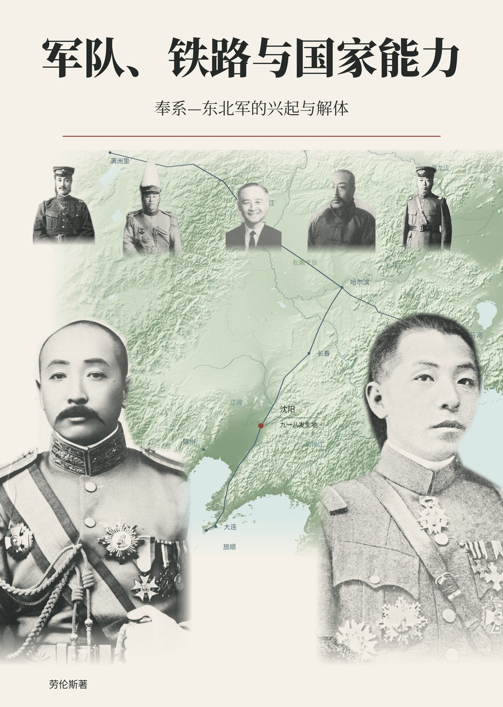
劳伦斯 著
（出版社）
暂定稿（供朋友阅读，非最终出版）
军队、铁路与国家能力：奉系—东北军的兴起与解体
著 者：劳伦斯 责任编辑：〔待定〕 出版发行：〔出版社〕 印 刷：按需印刷（POD） 版 次：2026年〔月〕第1版 印 次：2026年〔月〕第1次印刷 开 本：16 开（185×260 mm） 字 数：约 27 万字（正文约 23.5 万字） 印 张：〔待排版〕 定 价：〔待定〕 书 号：ISBN 〔待定〕
版权所有 侵权必究 如发现印装质量问题，请与出版方联系调换。
我小的时候，从评书里听到过关于张作霖父子“大帅”和“少帅”的故事；长大以后，学到的是军阀混战和九一八不抵抗的历史。但是，评书里的传奇和课本里的结论，都没有回答我真正想问的问题：一支从辽西保险队起家的地方武装，为什么能在二十多年里变成拥有铁路、兵工厂、财政和空军的东北军政集团？又为什么在1931年几乎一夜之间丢掉根基？这些问题，评书不回答，课本也常常一笔带过。我想把它们放回材料里，从头理一遍。
这本书不是学术专著，而是一部面向普通读者的通史。我尽量把史料梳理清楚，把事件的因果链条摆出来，把人物的选择、条件和后果讲明白；能说到哪一步就说到哪一步，材料不够的地方不硬写。书里有一些假设性的提问——如果郭松龄渡过巨流河，如果中东路不动武，如果九一八当夜还击——这些只是一家之言，是我读史时忍不住要问的问题，不是定论。写出来，是想和对此感兴趣的朋友一起探讨；不同意见，欢迎指正、批评。
我不是专业历史研究者，语言、档案、理论都有力不能及的地方；书中的疏漏、偏差和错误，由我自己负责。如果这本书能让读者对这段历史多一分具体的理解，少一分脸谱化的判断，那它就没有白写。
最后，要感谢 Kimi Astra 和 DeepSeek 硅基智能。没有它们在材料整理、检索核对、文字校改上的辛苦工作，这本书不可能在这样短的时间里完成。工具能帮忙，判断和文责仍然在人。
劳伦斯 2026年10月
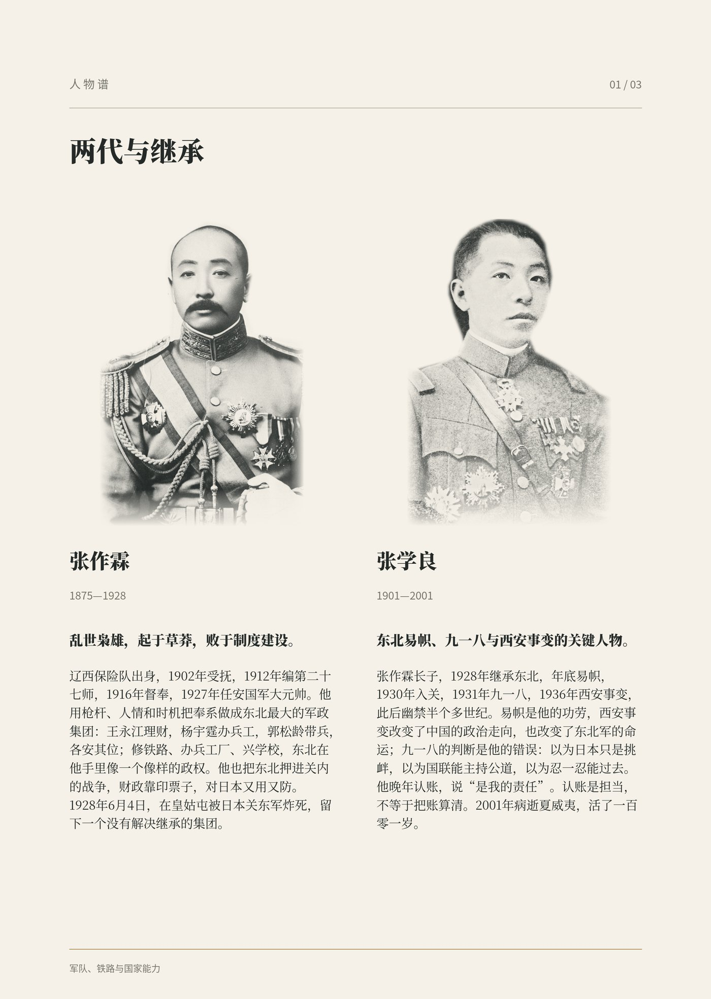
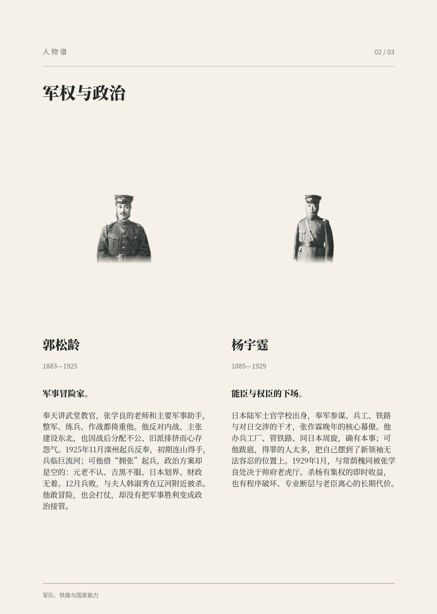
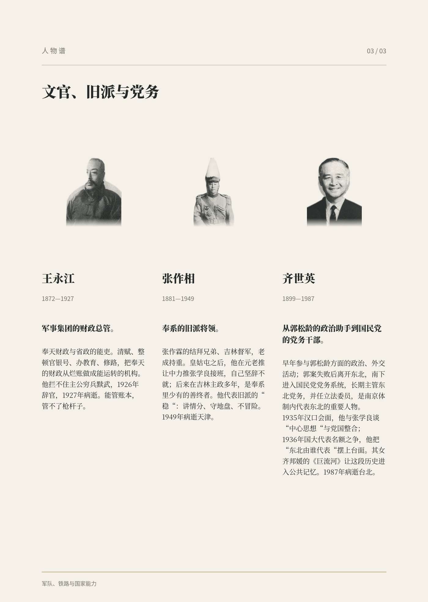
1902年11月，奉天新民府城外，一支三百来人的队伍接受了官府收编，点编时留下二百五十人。领队的人叫张作霖，二十七岁，出身绿林，先前在新民、八角台一带替商民看家护院、收保护费。官府给的名义是巡警前营马队帮带，留下的人仍归他带，饷银由地方筹措。
这里先把时间说清楚：本书从1860年东北边疆危机写起，那是前史；真正的主角奉系—东北军，从1902年张作霖受抚登场，到1937年整编终结，1949年以后是分流与记忆。
这事在当时的东北不算稀奇。庚子以后，地方秩序散了，官府要人维持治安，商民要人看家护院，散兵游勇、保险队、乡团遍地都是。收编一支马队，是乱世里一笔寻常交易。官府省了剿办的力气，商民得了一点安稳，领队的人则从”匪”变成了”官”。
再往细里看，这笔交易并不简单。官府不是白给名义：点编、裁留、改饷、调防，每一步都在收紧缰绳。地方绅商不是白出银子：保结、摊款、供应，每一笔都换一个说话的位置。张作霖也不是白拿好处：他交出了部分队伍的自主，换来了编制、粮饷和更大的行动空间。三方各有所得，也各有所失。
三十多年后再看，这支马队是一条长线的起点。它后来编入巡防营，改作第二十七师，成为奉天督军手里的本钱；它的首领做过东三省巡阅使、安国军大元帅，儿子做过东三省保安总司令、东北边防军司令长官，1930年又当上中华民国陆海空军副总司令，1936年冬天在西安扣下了蒋介石。一支三百人的队伍，最后牵动了整个中国。
中间发生了什么？一个地方武装怎样取得国家编制，又怎样把编制、税收、铁路和枪炮变成区域政权？这个政权修铁路、办学校、建兵工厂、整顿财政，也连年打仗、滥发纸币、镇压异己。它为什么能做大，又为什么没有做成一个稳定的国家政权？它最后丢掉了东北，可它的人、番号和记忆，为什么又拖了那么久？
这本书记的，就是这件事——从一支马队到一个集团，再从集团到它散落各处的旧人。
写这本书，材料是一回事，眼睛是另一回事。先入为主的看法，人人都有。我能做的，是把材料摆开，让不同的证据互相碰一碰，碰出来的结论，哪怕不合自己的口味，也照写。
为什么要写这么一本书？奉系的故事，中国人不算陌生。戏台上、电视剧里、评书里，张作霖和张学良的形象流传很广。可流传广不等于看得清。常见的两副面孔，一副是”胡子出身的大帅”，一副是”不抵抗的少帅”；一个把复杂的历史缩成传奇，一个把复杂的责任缩成骂名。这本书想把中间那段被缩掉的东西写回来：一个军政集团怎样运转，钱怎样花，仗怎样打，人怎样选，最后又怎样散。
这段历史离今天不算远。东北的铁路、工厂、学校、城市格局，很多是那个年代打下的底子；东北人的家族记忆里，也还留着”跑关东”“打回老家”这些词。写清楚奉系，对理解二十世纪的中国，对理解东北，都有用处。
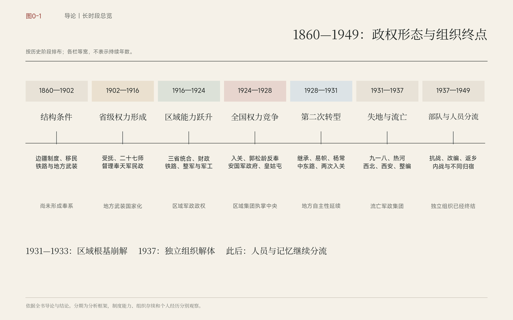
图0-1 1860—1949：政权形态与组织终点 以七个阶段串联边疆结构、区域政权、全国竞争与失地后的分流；栏宽不代表年数，组织终结也不等于人员经历结束。
资料来源：全书导论、结论及全书导论、结论。
奉系的故事，可以从三个地方看起。
先看枪。张作霖起家的本钱是队伍，队伍的核心是人和关系：旧部、把兄弟、讲武堂学生、同乡、姻亲。1918年秦皇岛截械，奉军一次拿到两万七千多支步枪，靠的是徐树铮的消息和证件，也靠奉系在当时北京政局里的位置。枪杆子回答了”谁说了算”，却回答不了”拿什么养”。一支几百人的马队，靠保护费可以活；一支十几万人的军队，靠保护费活不下去。奉天兵工厂最盛时有两万多工人，能造步枪、机枪、迫击炮和炮弹；讲武堂一期一期地培养军官，把旧式带兵的人换成懂得参谋作业、步炮协同的军官。这些都是真本事，放在当时的中国，没有几家比得上。可兵工厂要煤、要钢、要技师、要钱，讲武堂的学生要发饷、要装备、要出路。枪杆子越粗，后面的账越大。
再看钱。1916年以后，奉天有了自己的财政：清赋、田赋、税捐、官银号、奉票、铁路收入。王永江把账本理清，张作霖才有本钱进关打仗。到1920年代中期，奉天的军费占支出七成到八成以上，教育经费不到百分之三。钱从哪里来，花到哪里去，谁承担代价，是本书最要紧的一条线索。奉系的强大与失败，多半能在这本账上找到痕迹。奉票的涨落，比任何宣言都更能说明这个政权的处境。1920年代初，一元奉票还能换到七八角银元；到1920年代末，几元奉票换不出一元银元。商民手里的钱毛了，士兵的饷也就毛了。一个政权能不能管住自己的票子，是它有没有公共财政的试金石。大豆和铁路又是另一本账：东北的大豆、豆饼、豆油从大连、营口出海，换回机器、军火和日用品；铁路修到哪里，税就收到哪里，兵就运到哪里。这三本账合起来，才看得出奉系的家底。
最后看旗号与外人。张作霖做过清朝的官、北洋的官，最后做了大元帅；张学良改旗易帜，认了南京的法统。旗号换了几次，东北的军队、财政和人事却常常还是原班人马。1927年张作霖在北京做安国军大元帅，是北洋政府的末代执政者，那也是奉系离”中央”最近的一次。1928年张学良易帜，南京的名义进来了，东北的军队还是东北的军队，财政还是东北的财政，连省主席的人选也多半照旧。旗号能换，制度不一定跟着换；名义上的统一，和真正的统一，中间隔着很长的路。与此同时，日本、俄国、英国、美国的势力一直在这片土地上：铁路、租借地、驻军、银行、领事馆。东北的事，从来没有关起门来办过。日本内部也不是一个声音：外务省、陆军省、关东军、满铁，各有各的算盘。1928年炸死张作霖的，是关东军的参谋；1931年发动九一八的，也是关东军。把”日本”当成一个整体，很多事就说不通了。俄国人和苏联人也是一样：1900年出兵东北的是沙俄，1924年跟北京签协定的是苏联，1929年在中东路打起来的是苏联红军。一个奉系首领要在这些势力之间找活路，靠的不只是胆量，还有对各家底细的判断。判断错了，代价就是整个东北。
枪、钱、旗号、外人，四样东西拧在一起，才是奉系。少看一样，就会把它写成一群土匪、一个建设模范，或者一个日本傀儡。
写这本书的时候，我常想起一个画面：1920年代的奉天城，火车站上堆着大豆和木材，兵工厂的烟囱冒着烟，帅府里的人在开会，街上的报童喊着关内打仗的消息。这四件事在同一个城市里同时发生，互不相干，又互相牵连。把这种”同时发生”写出来，比给奉系下一个定义难得多，也有意思得多。
还有一件常被忽略的事：奉系不只有张作霖父子。张作相、吴俊升、杨宇霆、郭松龄、王永江、于学忠、万福麟，这些人各有各的班底和打算；奉天、吉林、黑龙江三省各有各的利益；旧军、新军、讲武堂、留学生，各有各的来路。把奉系当成张家的私产，就看不见它内部那些拉扯和妥协，也看不见它为什么在张作霖死后还能撑一阵子，又为什么终究撑不住。
写这样一本书，材料是硬的。
清代的奏折、民国的公报、省署的预算、银行的账目、日本外务省的电报、关东军的命令、报纸的报道、当事人的回忆，每一样都有自己的脾气。公文说的是”应当怎样”，账本说的是”实际收了多少”，回忆说的是”后来怎样理解”。三样东西对不上，是常态，不是例外。
我的用法是：先让材料自己说话，再判断它能证明到哪一步。公文写”令张作霖督理奉天军务”，能证明命令下了，不能证明全省的军队都听了他的。账本写岁入两千六百八十万元，能证明账面上的数，不能证明钱都进了省库。回忆说”那天晚上如何如何”，能证明他晚年记得什么，未必能证明当年发生了什么。
这不是把历史写成”什么都说不清”。恰恰相反，把每份材料的分寸弄清楚，判断才站得住。谁说、对谁说、什么时候说、在什么处境下说，这四件事定了，一句话的分量也就定了。
报刊是另一种材料。《盛京时报》《申报》《大公报》的报道，有采访，有传闻，有广告，也有立场。奉系兴盛的时候，报纸上多是颂词；奉系倒霉的时候，报纸上又多的是墙倒众人推。读报要读出报纸的处境，不能见字就信。可报纸保存了日期、人名、地名和事件的即时模样，这些东西公文和回忆里往往没有。
档案也有档案的难处。清代的档案分散在北京、沈阳、台北和日本，民国的档案又在南京、台北和各地档案馆；有的原件已经影印出版，有的只有目录，有的只能靠研究转引。日本外务省的文书、美国国务院的FRUS、苏联的档案，各有各的编法。一个题目做到最后，常常是七分材料三分猜。本书尽量把哪一分是猜的说出来，不把猜写成证。
所以本书注释从简，只在关键处标出处；引文只引一两句，其余转述。材料的辨析过程，放进书末的史料说明。普通读者不必读考据，但应该知道，这本书里的每个判断，背后都有可查的东西。
地方志和文史资料也用得不少。县志里记着驻军、捐税、灾荒和商会的动静，文史资料里收着旧人的回忆和见闻。这类材料有立场，有溢美，也有错记，可它们保存了正史不记的细节：一个县一年摊了多少款，一支队伍过境吃了多少粮，一个商号在奉票贬值中怎样周旋。把这些细节和公文、账本对起来看，历史才有温度，也才有分量。
还有一层：这本书记的是中国的事，也得看别人的记录。日本外务省的电报、关东军的命令、苏联的档案、英美外交官的观察，都是从另一面照过来的光。用它们，为的是知道对手当时看见了什么、误判了什么；替谁开脱，不是这本书要做的事。九一八、中东路、郭松龄事件，只看中国一方的材料，很多事看不明白。
口述材料另有一层讲究。张学良被关了半个多世纪，晚年接受唐德刚、日本NHK、哥大项目、郭冠英等人的访问，留下上百万字的谈话。这些话有极大的价值，也有明显的限制：他记得的是几十年后重新想过的事，提问的人又各有各的关心。齐邦媛的《巨流河》把家族记忆写成文学，读来动人，用来证史则要分清哪一段是亲历、哪一段是转述、哪一段是象征。本书使用这些材料时，会把”他后来怎样讲”和”当时发生了什么”分开。
数字也有数字的麻烦。同是1923年的奉天军费，不同的研究能算出七十六个百分点和八十八个百分点两个数，差别在科目怎么划、收入怎么算。同是1930年的东北人口，内政部的数、省级统计、满铁的调查、年鉴的估计，能差出三四百万人。这些数不能随便拿来互相印证，更不能拼成一个”综合实力”。碰到这种地方，本书把口径写清楚，宁肯给一个范围，不给一个假精确的数。
这本书写人。写人，先要把他当人看，别急着贴标签，也别急着下跪或吐口水。
张作霖不是脸谱。他有本事：会用人，能忍，敢赌，把一群来源复杂的队伍捏成一个集团；他把王永江、杨宇霆、郭松龄这些人放到能干事的位置上，也容得下不同意见。他也有账：连年入关，把东北的财力押在全国争霸上；镇压异己，杀了李大钊；对日本又利用又对抗，最后死在皇姑屯。功是功，过是过，不能相抵。
张学良也不是一句”不抵抗”能说完的人。东北易帜是真功劳，中东路是他拍板，九一八的判断是真错误，西安事变改变了中国的政治走向，也搭上了他自己和东北军的前途。他晚年说”这个事不是人家的事情，是我自个儿的事情，是我的责任”，这句话有分量。
郭松龄有真本事，也有真野心。他反对内战，主张建设，起兵时却借了张学良的名义，扣了异己，杀了姜登选；他打到巨流河边，败在自己没有算清的政治账上。杨宇霆精明强干，办兵工厂、管铁路都有一套，做人却跋扈，死在少帅的枪口下。王永江把奉天的财政从烂泥里拉起来，最后拦不住主公打仗，挂冠而去。齐世英一辈子反对张氏，晚年写回忆，有他的道理，也有他的立场。
蒋介石和日本的决策者也要写。蒋介石对东北、对张学良、对九一八和西安事变，有他的算计，也有他的责任；写他不能只写”不抵抗”三个字，也不能替他把责任推干净。日本那边，从田中义一到河本大作，从币原喜重郎到关东军的少壮参谋，对满蒙的打算并不一致，行动也常常是下级推着上级走。把这些人的选择写清楚，比给一个”侵略”的标签更有用。
普通士兵和老百姓也要写。他们不是数字，也不是背景。一个奉天农家子弟被抽丁入伍，开到关内打仗，家里少一个劳力；一个沈阳商人在奉票贬值中赔了本；一个东北学生流亡到北平，靠救济读书。这些人的经历，让”奉系”三个字落到地上。
写他们的时候，我守着四件事：当时他知道什么，他手里有什么权，他能选哪几条路，最后的结果由谁承担。不用后见之明骂人，也不和稀泥。
日本侵略的责任，要单独说清楚。九一八是日本关东军一手发动的，河本大作炸死张作霖，也是日本军人干的。中国内部有失误，有派系，有不抵抗，这些都要写，也都要负责；可它们不能拿来分摊侵略的责任。受害者的账，和决策者的账，是两本账。
张学良后半生的幽禁，也是这本书的一条暗线。他活到一百零一岁（虚岁），被关了半个多世纪，晚年把很多话讲了出来。这些讲话，有失败者的自辩，也有当事人的证词。本书在最后一章写他怎样从政治人物变成记忆的载体，写口述、文学和纪念怎样塑造今天人们心里的”少帅”。
还有一笔账要写：代价。修铁路、办学校、建工厂是成绩；征发、摊派、纸币贬值、战争伤亡、政治镇压，也是这个政权做的。受益的人和承担的人常常不是同一批。把这些分开写，才对得起历史。
假如1924年秋天，奉系打赢第二次直奉战争之后停在山海关，不再进关，历史会怎样？
这个假设值得想一想。东北的财政可以喘口气，奉票也许不会贬得那么快，郭松龄未必反奉，日本也少一个趁乱下手的机会。但再往下推，路就断了：张作霖的威望建立在不断的胜利和分配上，不进关，他拿什么安抚那么多军队和将领？北方的直系、冯玉祥、段祺瑞会让他安稳吗？日本的满蒙政策会因此收手吗？
所以这个设问的答案，不在”如果”里，在当时的兵力、财政、联盟和外国干预里。本书会在几个关键节点提出类似的设问，每次都落回这四样东西。架空的历史好看，却不解渴。
还有一层：设问本身，是对历史人物的体谅。坐在1924年的张作霖那个位置上，看着满屋子等着分钱分地盘的将领，看着关内乱成一锅粥的政局，看着日本人在旁边虎视眈眈，换一个人，未必能做出更高明的选择。体谅不等于开脱，理解处境不等于赞同决定。这两条线，要一直分着走。
真要把这个设问答好，还得算几笔细账：1924年奉系的军费占财政多少，东北的兵工厂一年能造多少枪弹，日本在满蒙的铁路和驻军是什么态势，冯玉祥、段祺瑞、孙传芳这些人下一步会怎么走。算完这些，才知道”停在山海关”这个选择，对张作霖来说有多难，对东北的老百姓又意味着什么。
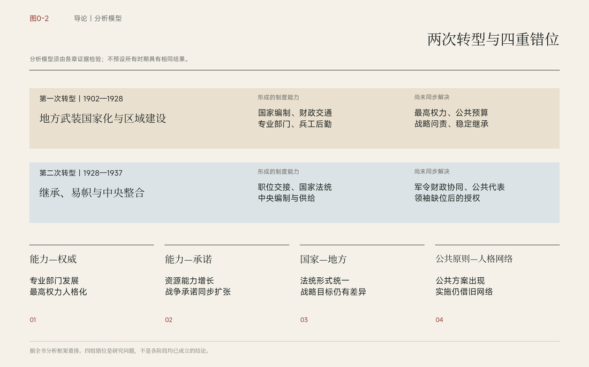
图0-2 两次转型与四重错位 上部比较地方武装国家化与中央整合两次转型，下部列出能力、权威、承诺及公共原则之间的四组错位。各项须由章节证据验证。
资料来源：全书导论及导论分析模型。
全书分六编十八章，外加导论、结论和附录。
第一编从清朝的东北写到1916年，讲边疆、移民、战争、铁路和地方武装怎样汇成奉系。第一编要回答的问题很朴素：张作霖的队伍是从哪里来的，他凭什么在辛亥年的奉天站住脚。
第二编写1916到1925年的区域国家建设：统合三省、整顿财政、修路开港、整军经武、两次直奉战争。第二编最见奉系的本事，也埋下它后来的病根：钱花得越来越多，仗打得越来越远。
第三编写1925到1928年的巅峰与危机：郭松龄事件、财政危机、大元帅政府、皇姑屯。这三四年是全书最陡的一段坡，上得快，下得也快。
第四编写张学良时代：继承、易帜、杨常事件、中东路、九一八、失地。一个二十七八岁的年轻人接下一份比他父亲时代更难的家业，几年之内丢了东北，这笔账要一笔一笔算。
第五编写流亡、剿共与西安事变。东北军离开家乡，越走越远，最后在西北停下了历史的脚步。
第六编写部队分流与历史记忆，一直写到今天。组织散了，人还在；人散了，记忆还在。
每一编开头有一段导言，交代本段的中心和难点；每一章有中心判断，末尾留几句收束。书末附大事年表、参考文献、索引和史料说明，读者若要深究，可以从那里往下追。八项指标的检验表放在史料说明里，正文不摆框架。
写这本书，也有一点野心：想让不懂历史的读者读得进去，让懂历史的读者挑不出大错。这两个目标都不容易达到，只能尽力。
这本书里的材料，多数来自已经刊布的文件和研究成果，也有少量来自档案原件和口述。能查到的，我都注了；查不到的，我也说明白。读这本书，不必先同意我的判断，也不必急着反驳，慢慢看下去就好，看完了再说话。能把奉系看成一个有血有肉、有功有过、有账可查的军政集团，而不是”军阀”两个字的注脚，这本书就没有白写。
如果时间有限，可以先读第一编和第六编，中间四编挑着看。第一编讲这个集团从哪里来，第六编讲它到哪里去；中间四编讲它怎样到顶，又怎样掉下来。每编的导言和每章的末段，是全书判断最集中的地方。
写法的几句交代，也放在这里。
这本书是给普通读者写的，不是给答辩委员会写的。
叙事在前，分析在后。先讲发生了什么，再讲为什么；能用人和事说清楚的，不摆概念。制度、权力来源这些大词，该用的时候用，用的时候加一句人话解释。数字要具体，但一章里关键的不过十几个，多了反而看不清。引文只引最要紧的一两句，其余转述。
书里没有脚注堆成的”学术护城河”。每章几条简注，标出关键出处；书的末尾有参考文献和史料说明。想深究的读者可以顺着注往下找，不想深究的读者也不至于被注埋住。
还有一条：判断直接说出来，理由摆出来，读者自己掂量。
第一编写一个地方武装的来源。1860 年以后，东北的封禁松动，移民涌入，土地升科，厅县增设，地方社会的资源与组织方式都在改变。甲午、庚子、日俄三场战争，又把铁路、租借地、驻军和条约带进同一片土地。国家能力不足，地方社会自救，外国势力嵌入，三个条件同时起作用，张作霖的部队才从保险队变成巡防营，再变成国家陆军师。
第一章讲区域条件：封禁为什么松动，移民怎样进来，土地和厅县又怎样把东北推进行省。柳条边、放荒、升科、设治，这些事单看都慢，一件一件叠起来，才把东北从军府辖区变成行省。
第二章讲战争与铁路：甲午、日俄两仗怎样打，铁路和租借地怎样把主权切成多层，张作霖的队伍又怎样被国家收进编制。受抚、点编、裁并、改饷，每一步都是官府和首领互相试探；队伍进了编制，旧关系也带进了编制。
第三章讲新政与省权：1907 年改制、辛亥革命、1916 年督奉，省权怎样一步步落到一个军人手里。新政留下机构，辛亥留下机会，袁世凯的承认留下名分，三样加在一起，才有奉天督军。
读者可以注意一条线：每一次“国家化”，都同时扩大了私人首领的带兵权。朝廷要用人，给了编制和饷源；首领有了编制和饷源，又反过来把队伍带成自己的本钱。这个双重的过程，为后来奉系的强盛与脆弱同时埋下伏笔。本编是全书的起点，也是后面十几年的底子。三章读下来，前因后果就接上了：没有前两章的条件，第三章的机会用不上；没有第三章的机会，前两章的条件也变不成政权。这一段写得慢，读者若觉得开头琐碎，不妨记住一句话：奉系不是突然冒出来的，是被人口、土地、战争和省权一步步推出来的。
山海关外，有一道土堤，叫柳条边。堤上插柳结绳，沿边开几道边门，门有卡伦，过往的人要凭票。今天看它，不过一道低矮的土墙；在清朝前中期，它是一道被认真执行过的界线。边内是旗地、官庄和围场，边外是蒙古王公的牧场和未开垦的荒原。朝廷的心思不难懂：龙兴之地要留着，旗人的生计要保住，关内的流民不要随便进来。
但这条线从来没有真正封死。山东、直隶的农民遇上灾年，挑着担子出关，春去秋回。有人在边外搭个窝棚，种上几亩地，秋收后回原籍；有人留下来，租旗人的地，或者替官庄当差。官府一边查禁，一边在灾年默许放行。人来了要吃饭，地方要治安，税要有人交，边禁于是成了一笔越算越乱的账。
清朝在东北的封禁，不止山海关一处。关禁管陆路出入，海禁管渤海与黄海的船只，边禁管柳条边，围禁管围场。几套办法叠在一起，各地宽严不同，年头紧一阵、松一阵。顺治、康熙年间还有招民开垦的章程，后来才一步步收紧。把封禁写成一条从头到尾不变的政策，反而看不清清朝在东北的真实处境。
这里还有一层分别。封禁防的是没有户籍、没有保人、没有旗籍的关内农民大批进入，不是不要人。旗人、官庄壮丁、流人、驿站丁夫、挖参采珠的刨夫，都在体制之内。真正被挡在门外的是关内农民。边墙挡不住他们，因为墙外有地，墙内有主，地主和佃户都能从中得利。
东北的人口底盘，还有另一批人。流放来的犯人、驿站的站丁、官庄的壮丁、参山的刨夫，生活在体制之内，却不被当作“民人”。他们与民人、旗人通婚、交易、杂居，界限慢慢模糊。封禁政策防的是大批农民涌入，管不住这些已经在体制缝隙里生根的人。到咸丰、同治以后，朝廷财政吃紧、边防吃紧，封禁的账越来越算不下去。
封禁的效果也不一样。离边门、驿站、江河近的地方，迁入成本低，村庄成得快；偏远山地和北部边地，人来得慢，季节工多。盛京一带早有民人和民官，吉林、黑龙江长期靠驻防和旗地管理。同一条禁令，对定居户、季节佣工、商贩、越境垦民的作用并不相同。把这些经历压成“闯关东”一个故事，听着热闹，解释不了为什么有的地方成村、有的地方一直只有季节流动。
柳条边的走向和功能也不是一成不变。老边、新边分段修筑，西段与蒙古盟旗的边界有关，东段与盛京围场、参山相连。有研究指出，各段修筑年代、卡伦设置和地图记载并不一致，某一段严或松，不能推给整条边。边门验票、卡伦巡查这些日常差事，靠守边旗员和沿边州县，人手有限，碰上灾年、商队和私垦，往往睁一只眼闭一只眼。
清朝在东北的统治，也从来不是一套衙门管到底。盛京、吉林、黑龙江各设将军，下设副都统、协领、佐领，管驻防、旗务和边务。民人聚居的地方，又设府、厅、州、县，管户籍、赋役和词讼。1657年设奉天府，是民政机构在东北立足的一个标志。此后一百多年，军府与民政长期并存，旗务与民务分开办理，遇到旗民交涉，还要两套衙门会商。
身份不同，人与土地的关系也不同。旗地、官庄、围场、蒙地各有归属，民人开垦的土地要报领升科。一个佃户种的地，可能牵动旗人生计、庄头收益、地方官考成和边禁秩序；一桩债务或斗殴，可能因为当事人旗民身份不同，牵涉不同衙门。人口一多，这套多套规则并行的格局就开始吃紧。
围场和牧场的放垦更晚，也更敏感。这些地归皇室和内务府管，放一亩就少一亩贡品和操演的地方；可荒着不收税，又挡不住私垦。清末财政一紧，围场陆续丈放，原有旗人、壮丁和新来的垦户之间，官司一直不断。
旗地和官庄的账，要分开看。官庄有庄头，壮丁种地纳粮，收成归衙门或皇室；围场是皇室和八旗操演、采捕的地方；王庄、园地各有其主。民人进入这些地方，不只要面对地主，还要面对管庄、庄头和旗署。一层一层，哪一层打点不到，地都种不安稳。
朝廷不是没有调整。1800年设长春厅，管的就是流入松嫩平原的民人。厅县设在哪里，往往跟着人口、开垦和词讼走。可设治的速度赶不上人口流动的速度，很多地方长期是“有民无官”，靠将军、副都统、驿站和乡约维持。地方秩序能勉强运转，靠的是官府、旗署、绅商和村屯头面人物一起凑合。
清朝还往东北移驻京旗闲散，给地给房，指望旗人在故地安身。旗人不惯耕作，招民代耕、典卖旗地的情形越来越多。旗地一旦典给民人，名分还留在旗档，收租和耕种却换了人。官府查得紧时，双方立假契、托名顶替；查得松时，干脆默认。到清末，旗地、民地、官庄、蒙地的界线，早就被长期交易磨得模糊。
所以，读清代东北，先把“封禁”两个字放下。它是一套多重、可以因时因地调整的办法，不是一道铁闸。真正决定人口与土地去向的，是关内的生计压力、关外的开发机会、朝廷的边防与财政，以及地方官和旗人地主各自的小算盘。这些账算到十九世纪中叶，已经算不下去了。
1858年、1860年的中俄条约改变了东北的边疆形势。黑龙江以北、乌苏里江以东的大片土地划归俄国，吉林、黑龙江的边防一下子紧了起来。边防空虚，人口稀少，财政又拿不出钱来养兵设防。朝廷和地方官开始认真考虑一件事：把荒地放出去，招人来种，用民垦充实边防和饷源。
有研究把吉林将军景淳奏请开垦禁荒看作清代后期开禁放荒的开头。景淳此奏的年份和原文，我还没有核到，先按研究转引处理。可以确定的是，1860年以后，东北的开禁从“一隅放荒”一步步走到“全面开放”，中间花了将近半个世纪，各地进度并不一样。
吉林走在前面。珲春、三姓一带陆续设局招垦，官府丈放荒地，给照升科。盛京的东边外也陆续放开：同治年间查出私垦熟地九万余垧，准许流民就地安插；1875年前后在安东一带设局升科，次年设安东县；1877年设奉天东边道和宽甸、怀仁、通化三县。黑龙江的放垦最反复，呼兰、通肯等处放过又停，停了又放，边防、旗地和财政三笔账始终摆不平。
放荒的账，摊到每一户头上，是押荒银、丈费、照费、升科和经手人的好处。报领要具结，丈放要等委员，给照要交费，起征要看年成。垦户先垫一笔钱，几年之内不一定能收回；有钱有势的人可以包领大片，再转手招佃。官府收到的是账面上的荒价和升科，垦户拿到的是有边界的凭据，中间的差额，常常落在书吏、庄头和包揽人手里。新垦区还要修路、设卡、办团练，这些开销又回到地方。
1895年以后，开放的范围和力度明显加大。甲午战争、俄国势力深入和日俄竞争，把东北推到清朝战略的前台。招垦、设治、练兵、修路、兴学被放进同一套筹边思路：有人才能垦地，有地才有租税，有租税才能养兵办新政。这套道理并不复杂，难的是钱和顺序。人口先到、官府后到，土地先种、册籍后立，征收往往赶在生产能力成熟之前。
1900年以后，奉天、吉林、黑龙江继续放荒设治。新民、昌图、海龙、洮南这些地名，大多是清末由厅、县、府一步步设起来的。设治跟着垦区走，垦区又跟着交通和驻军走。新设的厅县要修衙署、养书吏、办团练，开销落到新垦的土地上；土地还没熟，摊派先到了。
移民的路线不止一条。山东半岛渡海到辽东，直隶出山海关到辽西，山西、河南经蒙古草地到热河，都是老路。中东铁路1897年开工、1903年通车以后，又添了一条新路：铁路工地要人，土方、石料、枕木、搬运，招工广告从烟台、天津一路贴到关外。研究者统计，1897到1903年间，经上海、烟台等地招往东北的工人累计约二十万。这个数字是累计招工数，不是同时在工的人数，也不是定居人数；它说明一件事——东北的开发和东北的铁路，从一开始就靠关内的人力。
1900年俄军入侵、1904到1905年日俄战争，又打乱了一部分移民的落脚地。战区居民往外逃，战区外的村屯要出粮、出车、出人。战后一些地方重新招垦，逃散的人口慢慢回流，有的索性在铁路沿线或租借地边上落脚。战乱在人口账上留下的，是几次大的起落，不是一条平滑曲线。
移民到了东北，并不马上有地。先找雇主、亲族或同乡，再想办法租种、承垦或者改行。有人春去冬回，有人干上几年才把家眷接来，有人从短工变成佃户，又从佃户变成小贩。人口数字上的“增加”，背后是一批批人反复试错。官府希望人户固定、土地可核、赋役可征，实际人口却在城乡之间、农工之间、关内关外之间来回跑。报册上的一户，未必一年都住在一个地方；同一个人，也未必只有一种职业。
迁徙也不是一个人的事。家里往往留人种地、照顾老人，出去的人在东北挣钱、打听消息，站稳了再回来接家眷。原籍的村、族长和同乡会，仍是信用和信息的来源。东北的村屯和关内的原籍，靠汇款、婚嫁和往来维持着两个地方。官府按常住户口理解人口，自然对不上。
工资差是迁徙能持续的一个原因。宣统年间出关苦工的研究显示，华工在铁路等劳动中的收入常低于俄工，却明显高于他们在国内做同类活儿的收入。这个比较不能说明华工待遇好，也不能单独证明工资差就是迁徙的原因。对很多家庭来说，出来一趟能挣回几斗粮的钱，已经值得。
迁移的方向也跟着机会变。铁路开工时往工地去，工程完了往垦区去；剿匪、招兵、开矿、伐木，哪里用人都有人去。到清末，哈尔滨、长春、奉天、大连这些交通节点，人口涨得比一般县城快。人跟着路走，路跟着钱走，钱跟着口岸和铁路走。
移民社会不是一团和气。先来的、后到的，有本钱报领土地的、只能租种的，有同乡网络的、孤身一人的，处境差得远。一个新村屯刚形成时，互助和租佃、借贷、雇工一起长出来。早期机会随着耕地升值和人口增多变成新的支配关系。移民带来了原籍的习俗，也在共同生产里长出新规矩。这些变化，官府看得见，却管不全。
东北的移民不都从山海关和渤海来。图们江对岸的朝鲜农民，越江垦种的历史很长。1860年代朝鲜北部连年灾荒，大批灾民渡江进入延边、东边道一带，私垦官荒。对这些人来说，迁徙是找地种、养活一家老小；对清朝官府来说，事情同时涉及招垦、边界、户籍和司法。
1881年，珲春设招垦总局，在南岗、五道沟设分局，派人到山东、辽南招徕垦民。1885年，清朝设越垦局，把图们江北岸划为韩民专垦区。1890年到1891年，官府对越垦区做了一次全面清查，查出朝鲜垦民四千三百余户，丈出熟地一万五千余垧。这些数字只反映清查范围，不能当成全部越境人口；可它们足以说明，越垦已经是一个成规模的社会存在。
1894年，越垦局改为抚垦局。垦熟的土地一律给照升科，垦民编立社甲。图们江沿岸设宁远、绥远、安远、镇远四个堡，堡下三十九社，社下一百二十四甲。土地经给照、升科进入财政系统，人口经社甲进入基层治理。官府要问清楚：他们从哪里来，住在哪里，种哪块地，由谁具结，出了案子归谁审。
1900年义和团运动期间，俄军袭取延边，当地中国居民大批西逃，战后多没有回迁，朝鲜移民趁机迁入，地方官府也允许他们入籍定居。研究统计，1906年延吉、和龙一带的朝鲜垦民已有一万四千六百余户、七万二千余人；1910年延边朝鲜移民总数约十万九千五百人。不同年份的统计口径不一样，数字未必严丝合缝，趋势却清楚：越垦区在清末十几年里迅速扩张，成了行政上必须正面处理的对象。
这套安排里，承认和限制同时存在。允许划区垦种，是对现实人口和经济需要的回应；指定区域、清查户口、编立社甲，是防止流动越出可控范围。编甲以后，越垦民的人身和土地都挂到了册上。具结、编甲、给照，一层层担保下来，官府多了可以追责的人，垦民也多了被约束的地方。社甲头目既要替官府催办，又要在垦民与官府之间说和；办得好是桥梁，办不好就是两头挨骂。
与关内移民相比，朝鲜垦民还多一层国籍和边界问题。土地凭照、纳税义务和司法身份，会影响他们怎么理解自己与清朝地方政权的关系。
日俄战争以后，日本又拿“间岛”问题做文章，越垦民的国籍、土地和管辖权成了外交题目。地方官要在招垦、编管和对外交涉之间找平衡，越垦区的事，从此不只是民政。
边疆治理的口径也变了。边界原来是一条防止越过的线，后来慢慢变成需要管理跨境生活事实的区域。垦民在江边形成村落，跟对岸保持亲缘和贸易往来；地方官则想把他们固定到册籍和组织里。国家主权、家庭生计和地方社会各有各的空间范围，行政编制越细，跨境关系反而越敏感。
朝鲜垦民带来了耕作方式、村落网络和语言习俗，地方社会也跟着变。他们与汉族移民、旗人和其他居民之间，有合作、租佃、交易，也有冲突。晚清官府的重点在赋役和秩序，未必有能力处理所有文化融合的事。后来更复杂的国籍与土地争议，就长在这些没被彻底解决的层次上。
朝鲜垦民还把种稻的手艺带进了东北。朝鲜北部农民在故乡就种水田，过江之后，在浑江、海兰江、图们江边的洼地和河滩上试种；1900年前后，延边一带开始有成功的水田，1906年龙井附近十几个农民合力开出渠道，引水灌田。东北无霜期短，种稻不容易，这些试种多半是小片、副业，却开了一个头。后来东北大米的名声，最早是从这些跨境垦民的田里长出来的。
到二十世纪初，东北居民已经包含关内农民、工程工人、跨境垦民、旗人、蒙古各阶层和外国侨民。不同人群进入国家制度的路子不同，权利和义务也不同。任何单一的“移民大潮”叙事，都盖不住这些差别。读东北近代史，先得把这些人分开看：谁有地，谁没地，谁在册，谁不在册。
移民能不能留下，关键在土地；土地能不能稳定经营，关键不只在耕种，还在权属和征收。晚清放荒常被说成“政府把荒地分给农民”，实际程序要复杂得多：查勘、报领、丈放、给照、起征，每一步都可能改变利益分配。升科是把土地纳入钱粮征收，清丈是确认面积、边界和承领关系。两件事都可能给垦户一张凭据，也可能带来丈费、租赋和官司。
1862年的一份土地清丈材料显示，官府处理私垦时已经不只考虑驱逐。研究援引的办法包括把私垦土地清丈后“照例升科”，并准许垦种者“准其永远为业”。这是一个有方向性的变化：原来躲在禁令阴影里的耕作，经过清查变成被承认的经营和纳税关系。国家承认既成事实，换财政和管辖；移民接受登记和征收，换一个相对稳定的身份。
承认不等于现代意义上的土地私有权。土地凭照的法律含义、继承和典卖的条件、旗民差别和不同地类的限制，都会影响实际权利。“永远为业”四个字，回答不了这块地有没有普遍实测、有没有独立登记、能不能不受身份限制地转让。晚清的土地权利，是在旧有庄田、旗地、官荒和民地的关系里慢慢重排出来的，一次安排建不起整齐的制度。
奉天土地改革的研究提醒过一件事：放垦和清丈未必把地权交给种地的人。谁承领、怎么登记、最后谁受益，要到县一级的承领册、地契和诉讼材料里逐案看。耕地面积增加，官府收入增加，都不等于垦民普遍致富。开发越深，土地越值钱，围绕承领、转佃和地界的争夺反而越激烈。
清赋也有技术上的边界。晚清奉天不少清赋工作靠自实申报，没有普遍做近代地籍测量。自报不一定虚假，可它把准确性交到申报者、经手书役和地方权力关系手里。隐漏、浮报、拖欠、浮收都可能出现。账面上的田赋增加，可能来自更多土地被纳入，也可能来自征收力度加大，不能只看数字就断定制度已经现代化。
征收过程本身会制造冲突。锡良1909年以后的奏折回溯早期财政和土地问题，提到局员浮收、催役勒索、官荒垄断。这些是事后追述，不能当成逐年账本，却提示地方财政扩张伴随经手环节的毛病。对垦户来说，报领升科要比较两样东西：凭据带来的安全，和赋费带来的负担。清丈一推行，告状的、抗丈的、托人说情的都来了。有人说自己的地被划走，有人说押荒银被多收，有人说好地留给有钱人、薄地分给穷户。官府一边丈量，一边弹压，一边还要靠这些人交税。国家越需要土地收入，清丈就越难写成一件中性的技术活。
1908年，徐世昌提出由民署统一经征、改折银征收的方案，想减少不同系统和实物征收造成的分割。方案有没有获准、怎么实施、有没有受阻，我还没有核到，先存疑。行政统一有它的道理，也会碰到不同身份群体的利益。任何“统一”都要回答两个问题：旧待遇怎么调整，新增费用由谁承担。
土地一变，地方权力也跟着变。旗地关系旗人生计和驻防秩序，官庄、围场关系特定机构和皇室利益，蒙地又牵涉盟旗、王公、台吉和不同层级的承垦关系。民地扩张穿过这些制度找入口，一路都受旧有权属的牵制。名义上的旗地、民地，经过长期典卖、租佃和私垦，早已和实际经营分了家。旗人可能不种地，民人可能实际交赋，庄头或中间人握着承领和转租。清丈只认名义，会无视种地的人；只承认现耕，又会伤到原权利人。
官府在财政上希望地块清楚、征收统一，在社会上却必须面对多年积下的关系。蒙地放垦也一样：开放能带来押荒、岁租和行政收入，也会让牧场缩小、旧的使用方式改变。王公台吉要的是押荒银和岁租，外来垦户要的是能种的地，蒙民要的是放牧和生计，地方官要的是设治和税收；同一块地，四方各有算法，谁也不能全赢。把这件事简单说成“汉人进入蒙古草原”，只讲了人口，没讲谁有权放地、谁拿地价、谁承担生计变化。官荒和蒙地的清丈，往往由委员带着丈绳、册子和差役下乡，先量出个数，再按等级定荒价。地价定高了没人领，定低了官府吃亏；原主、垦户和包揽人各有各的算盘，最后收上来多少，全看县官的手段和后台。
清丈常被寄望于厘清产权、增加收入，结果却取决于谁主持、谁申报、谁出钱。测量不足，自报和书役经手就留下操作空间；丈费、照费、升科负担太重，贫弱垦户宁可不要那张执照，或者去求有势力的人包揽。土地越值钱，包揽的动机越强。近代产权需要的统一测量、登记和救济，在晚清只有局部生长。看见“清丈”“给照”几个字，就以为制度已经完备，是靠不住的。
这些冲突和财政需求互相推着走。官府为增田赋而清丈，清丈引出隐匿、抗缴和诉讼，诉讼又要求添民官和差役；新机关要经费，征收的动力再强一层。这个圈不一定失控，却让基层治理始终面对一个难题：人们把新增负担看成取得土地安全与公共秩序的代价，还是只当成官府和经手人的额外索取。新政的成败，很多时候就落在这些琐碎感受上，而不在章程写得漂不漂亮。
土地和人口进了官府册籍，接下来要问：谁来管。民人多了，婚姻、债务、斗殴、田界、抗粮的案子跟着多起来。原来以驻防和旗人管理为骨架的衙门，必须处理越来越多的日常民政。厅、府、州、县的增设，看着只是地图上地名和层级变多，实质是刑名、钱粮和地方控制权的重新分配。
清代东北厅制的研究指出，厅接管民人、刑名、钱粮和旗民交涉以后，驻防失去的不只是繁杂的行政负担，还包括一部分财政收入和司法权力。新设民官在驻防区内部长出了另一套权力，超出给旧机关添个帮手的范围。它可能减轻将军、副都统处理民人事务的压力，也可能让原来的兼理者不愿意放手。
“以治兵之职，而辖理民之官”这句话，点到了要害。军事驻防重警戒、调遣和旗籍管理，日常民政却要天天处理户籍、词讼和征收。民人成为地方社会的重要部分以后，只靠兼辖越来越应付不过来。设厅置县因此有行政专业化的意义。可现代官僚制度没有因此一夜长成，新旧衙门照样并存，辖区和事权也照样重叠。
旗民交涉的案子最能说明问题。一件田界争议只涉及民人，路径还比较直接；一牵涉旗地、庄头或驻防人员，就可能同时牵动身份、权属和管辖。民官希望按统一规则审理，驻防系统要维护旗人利益和既有权威。设治以后，争端不会自然减少，有时反而因为审理机关和裁判预期变了，更多案子涌进官府。词讼增多不一定是社会变坏，也可能是人们开始使用新的行政渠道。
词讼一多，州县衙门的刑名、钱粮、书吏、差役就都得添。添人添房要钱，钱从税里出，税从民里收。地方官考成看收数、看盗案、看民变，哪一头紧了就先顾哪一头。行政能力就是这样一点点长出来的，也一点点被拖住。
驻防权力后退，旗人的日子并不好过。原来靠钱粮、旗地和当差过活的旗人，收入一项项缩水；编入新式学堂、警务和新军的只是少数，多数人没有别的营生。筹办八旗生计因此不只是救济，还牵动旗人与民官、旧驻防与新机构的关系。
钱粮权的转移更敏感。谁负责征收，谁就能接触册籍、经手款项、影响地方关系。驻防系统让出这类权力，失去的不只是一项事务，而是在地方社会的立足方式。民官拿到征收权，也不等于马上有征收能力，还得靠书吏、差役、乡约和地方头面人物。新制度往下延伸时，常常借用旧社会的中介；这些中介帮行政运转，也可能把官府的要求变成额外盘剥。
厅县设在哪里，也受地理限制。人口稠密、交通方便、田赋多的地区，较有理由设治，也养得起衙署；人口稀少、边界辽阔的地方，设了官也未必管得过来。一个县境可以很大，县署真正牢牢掌握的，可能只是几个市镇、集店和交通线。晚清行政扩张的难处，不在颁布设治命令，而在让官署、役员、财政和基层社会接上气。
新设州县要养衙署、书吏、差役、仵作、马快，还要修监狱、办保甲。这些开销，靠田赋、厘金和杂捐。捐税名目一多，经手环节就多；经手的人一多，加码和包揽就难免。地方官夹在中间，既要交差，又要防民变，能做的多半是拆东墙补西墙。
到东三省全面改制以前，厅县和民官的发展已经给行省化准备了条件。钱粮、刑名和民人管理一步步从驻防体系里分出来，后来总督、巡抚统辖地方行政，才有可以承接的组织底子。这并不意味着1907年的改制只是此前趋势的自然终点。改制还要统一事权、安排人事、筹集经费，还要处理将军与巡抚、新军与旧军的新问题。厅县扩展提供了行政土壤，却没有预先解决行省政治的全部麻烦。
十九世纪末的铁路，把前面讲的人口、土地和行政变化接进了一个更大的网络。它首先是外国资本、条约权益和帝国竞争的工具，同时也是土方、桥梁、枕木和车站，需要大量劳动和物资。只从条约看铁路，看见的是利权受损；只从交通进步看铁路，又会漏掉特殊权益。对东北社会来说，两样东西一直缠在一起。
大规模招工让铁路沿线成了人口汇聚的地方。来自不同地区的工人被编进工程组织，日子围着工期、工种、工资和承包人转，跟依亲族和村庄组织的农垦迁徙不一样。工程要粮食、建材、运输和日用交易，工地边上就长出临时市场和服务业。聚落未必从铁路开始，却可能因为铁路改变规模和功能。原来的驿站、渡口、府县城镇，跟新设的车站之间，慢慢形成新的空间关系。
铁路也改变了迁徙的成本。过去要走很久的路，被固定线路和班次接了过去，人口往返、货物外运、信息传递都有了新条件。迁移者更容易把东北当成阶段性务工的地方，保留返乡和往返的选择。季节流动和永久定居，可能是同一群人在不同年份的选择。交通越方便，流动不一定越少；有时正因为来回容易，更多人愿意出来试一试。
工程结束不等于影响结束。一部分工人回乡，一部分转向农垦、采伐或沿线行业，原来集中在工地的劳动力向四周扩散。铁路经济因此和土地开发连在一起。粮食、木材有了更便利的外运条件，市场范围扩大，土地和劳动力的价值也跟着变。离线路远的地区未必同样受益，区域内部的差距反而更清楚。
营口、大连这些通商口岸和租借地城市，又是另一种样子。码头上堆着大豆、豆饼、木材和洋货，海关、洋行、轮船公司、领事馆各占一块。中国的商人和苦力在这里挣钱，也在这里受另一套规矩管。口岸繁荣带动了腹地，也把腹地的粮价、工价和金融拉进国际市场。
铁路沿线还长出新的权力空间。车站周围划出附属地，外国公司在那里修路、设警、办学、收税，中国官署的管辖到此为止。小商贩、脚夫、苦力和流动人口聚在车站附近，出了案子归谁管，往往要看当事人站在哪条界线里面。
对地方官府来说，铁路带来的是治理难题。人口集中，劳资纠纷、盗窃、斗殴可能增加；车站和沿线又涉及外国公司、租借地或特殊管理权。中国衙门的权力到哪里为止，外国机构凭什么介入，从外交官的抽象争论落实到具体案件和日常巡逻。新设的行政机构要在这些复杂边界之间办事，常常两头受气。
铁路、口岸、矿场和垦区，把东北切成几个速度不同的世界。
东北的开发也没有让地区差异消失。南部有市场和交通条件，较容易把新垦土地纳入粮食贸易；北部和边远地区的移民，更依赖江河、驿路和后来的铁路。沿江沿线的聚落增长，跟离交通线远的村屯不同步。所谓“东北开发”，从来是几个速度、几个方向同时展开，不是一条直线。
铁路和市镇也把移民社会分了层。沿线的粮商、车店、木场和钱铺先富起来，市镇上的手艺人和小贩跟着吃饭；离铁路远的村屯，粮价和工价都慢半拍。同是移民，有人几年就置了地，有人一直租种，有人来回跑。开发的好处落到谁头上，从来不是平均的。城镇里的行会、商会、会馆，把同乡和同业拢在一起，能替商户跟官府说话；没有这些门路的苦力、佃户和季节工，只能靠雇主和包工头。移民社会越热闹，里面的高低上下也越分明。
人口增加、耕地扩展、交通便利，对治理者来说首先意味着更多事务。新村屯要编户，土地要清丈，纠纷要审理，道路河道要维护，匪患私斗要弹压。原来靠少量驻防和兼理机构维持的格局，越来越盖不住扩张中的社会。设官、练兵、兴学、办警务提上日程，这些事都要钱。田赋和厘税扩张，为新政提供了条件，也改变了官府和居民的关系。传统财政重在维持旧机关和兵饷，清末又添出学堂、巡警、马路、局所等新支出。新事业能不能让缴税者感到好处，往往说不准；费用却先从基层收起来。
财政和行政之间还有个时间差。新机关、修路、巡警的支出先发生，新垦地的收益要过几年才稳定，清丈升科还可能因为纠纷拖下去。地方官拿预期收入安排现实支出，就得找垫款、借款或别的临时来源；收数不及，最先受影响的常是基层薪饷和公共事业。晚清新政屡屡出现机构增设很快、裁并节费也跟着来的现象，原因就在这里。
治安问题也不能简单归到移民“良莠不齐”。人口流动快、村屯关系没稳、土地争议多、行政覆盖不足，都可能增加冲突；贫困、债务和武器流通又让一部分冲突变成武装对抗。地方团练、乡约、巡警和巡防营，都在补正规治理的不足。武装力量扩张本身又带来饷需和统驭的麻烦。后来奉天军权的那一摊复杂局面，根子可以追到这里。
1901年以后，清廷推行新政，东北也办起学堂、巡警、练兵和实业。新事业要钱，钱从地方出；地方出钱，又要求更多话语权。绅商办商会、办学堂、办团练，逐渐成了官府办事离不开的人。
这些新支出的摊法，各地不同。学堂按亩摊，巡警按户摊，练兵按商摊，马路、局所另有名目。摊派一多，抗捐、罢市、告状的事就跟着来。官府要办事，商人要少出钱，农民要少交粮，旗人怕丢了旧待遇，几头一挤，新政就成了夹生饭。
移民社会还改变了旗民关系。民人增加，旧有身份特权和土地安排承受压力；驻防权力后退、民官事权扩张，又改变旗人的政治位置。所谓旗民生计问题，既有经济原因，也有制度原因。后来新政筹办八旗生计，一半是救济贫困，一半是重新安排旧统治群体和行省社会的关系。这个任务一直拖到设省以后，成了辛亥前后秩序转换的一部分。
把这些线索收拢，1907年的东三省改制就不只是朝廷学内地官制、回应日俄战争。人口需要日常民政，土地需要统一又能处理差异的制度，财政需要支撑越来越大的公共事业，边疆需要在列强竞争里表现出更明确的行政存在。改制有充分理由，也继承了前面所有的麻烦。
假如1860年以后的地方官只扩大招垦，长期不设民官、不清理刑名钱粮，东北会怎样？短期内也许省下衙署开支，避开驻防系统的阻力；人口和词讼增长却会把兼理的老办法压垮，私垦和旗地争议没有稳定处理渠道，地方秩序更依赖绅商和武装头目。反过来，如果在放垦的同时增加测量、司法和基层人员，权属争议可能更早进入公开程序，征收预期也更稳定，新增经费却要提前落到还不成熟的税基上。两条路都受财政和地方利益约束，选哪条都有代价。
日俄战争以后，日本的经营、俄国的铁路、中国的招垦和新政，在同一个区域叠在一起，谁也吃不掉谁，谁也离不开谁。东北的问题，从此不再只是朝廷怎样管边地，而是几个国家、几种制度在同一片土地上较劲。
晚清东北没有从“无人之地”突然变成“现代社会”，全面开禁以后也没有沿一条直线走进近代。它经历的是人口、土地、财政和管辖制度的长期重排。封禁退却，国家没有退出，反而更深地介入；移民增加，身份差异没有消失，反而以新的方式进入行政。理解到这儿，才能理解此后铁路权益和战争为什么会对东北产生那么深的影响，也才能理解1907年以后新政国家在军制与财政上的急进和脆弱。这些底子，决定了后来任何想在东北办事的人——督抚、将军、军阀、日本人——都得先跟人口、土地、钱和铁路打交道。人口流动没有停，制度追赶也没有停。下一章从甲午战争讲起，看外力怎样把东北的问题一下放大。
甲午战争以后，东北的事情就不再只由清朝自己做主了。日本、俄国先后把军队开进来，铁路、租借地、护路队和条约一起压到这片土地上。战争打乱了旧秩序，也把地方武装推到前台。张作霖的部队就在这个夹缝里从保险队变成官军，从新民府的地方编制走进奉天巡防营。先讲甲午到日俄的仗怎样打到辽东，再讲铁路和租界怎样把东北切开，最后讲张作霖的队伍怎样从保险队变成官军。
1894年夏，中日两国在朝鲜问题上摊牌，战争很快烧到辽东。清军在平壤、黄海接连失利，日军越过鸭绿江，从辽东半岛登陆，牛庄、营口、田庄台相继失守。田庄台一战，清军主力被击溃，辽西通道门户大开。战事从边境打到奉天门口，前后不过几个月。
战前东北的军队，名义上不少，真能拉上阵的有限。盛京、吉林、黑龙江的驻防八旗早就不能打仗，练军、防营、乡勇各成系统，饷银常拖欠，枪械新旧杂陈。奉天全省能机动的兵力不过万把人，分散在城守、卡伦、驿站和围场，抽调到前线就要拆东墙补西墙。日军一个师团压过来，清军往往要拼凑几路才勉强挡住。更麻烦的是指挥，各军统领互不统属，前敌没有统一调度，后路粮台各自打算盘；打输了，谁都可以说是别人不救。
辽东对清朝不是普通边疆。这里是发祥之地，有盛京陪都、有祖陵，还有旗人的田产和驻防。可象征归象征，真打起来，旧式军队的毛病全露了出来：编制不齐，饷械不一，各军互不统属，前线缺粮缺弹，后方调度不灵。朝廷临时调兵，各省各军各怀心思，能守的守，能跑的就跑。战败不能只怪某个将领怯战，问题出在整个动员和供给体系上。
朝廷内部对战与和也争得厉害。主战派指望列强调停，主和派怕再打下去连京城都保不住；前线的电报一天几封，中枢的回电常常模棱两可。日军在辽东推进的几个月里，清军换了几个前敌统帅，各军仍在原地打转。这样的仗，换谁来指挥都难打。
日军从朝鲜过江以后，分路向辽东腹地推进。1894年11月，旅顺口陷落，日军在城内大杀平民，消息传开，中外震动。次年年初，日军又攻海城、盖平，清军几次反攻不克。到1895年3月，牛庄、营口、田庄台接连失守，辽西的门户彻底打开。战线拉得越长，清军的补给越接不上，前线士兵常常一天只能吃上一顿。
战前清军在平壤集结，想守住朝鲜北部；日军分路进攻，清军统帅叶志超弃城夜逃，一路退回鸭绿江。黄海海战，北洋舰队损失数舰，此后只能缩在威海卫。朝鲜一失，辽东就暴露在日军面前。
日军在辽东的推进，也不只是攻城略地。牛庄、营口连着辽河航运和渤海海口，田庄台扼着辽西通道。谁占了这些地方，谁就掐住了东北的粮、货和税。战争后期，日军在占领区设民政机构，征粮派夫，地方官逃散，商路中断。对普通人家来说，谁打赢还在其次，眼前的日子是粮价涨了、牲口被拉走了、村里的壮丁被征去抬担架。
清军不是没有反攻。1895年初，清军几次反攻海城，想切断日军后路，都没打下来；日军反手攻牛庄、营口，清军又退。辽东的仗，越打越被动，越被动越要议和。
辽东失守以后，奉天一带的官员、旗人、商民大批往西逃。金州、复州、海城这些地方，民团和散兵趁乱而起，有的守村，有的抢劫。盛京将军和奉天府尹调兵无兵、筹饷无饷，只能向朝廷告急。战火烧过的地方，田地荒着，粮价翻着跟头涨。
清廷打到这个份上，只能议和。1895年4月，《马关条约》签订，割台湾、赔巨款，辽东半岛也在割让之列。赔款二亿两，加上赎辽费三千万两，清朝财政几年缓不过来；开放沙市、重庆、苏州、杭州为商埠，外国轮船可以进长江。东北的事还没完，全国的瓜分风潮跟着来了。俄国不愿日本独占辽东，联合德国、法国出面干涉。日本被迫吐出辽东，中国又付了三千万两“赎辽费”。这笔钱出得窝囊：地是自己收回来的，钱却付给了打上门来的日本，还欠了俄、德、法的人情。
日本国内对还辽很不服气，可海军打不过三国联合，只能忍。中国这边，一部分官员觉得俄国可靠，另一部分担心前门拒虎后门进狼。朝廷没有定见，地方上更没办法。辽东收回来了，可俄国的势力跟着进来了。
甲午战后，清朝在东北的善后拖了很多年。军队要裁、要练，财政要筹，旗民生计要管，俄国又要修路、租港。地方官换了几任，办法换了几套，都没能从根上解决问题。
三国干涉不是仗义执言。俄国联合德法，是怕日本占了辽东、挡了俄国南下；德国想在远东捞一个港口；法国要维持法俄同盟。三国军舰在海上晃，外交官在北京和东京之间跑，日本掂量实力，只好让步。清朝收回辽东，付了赎金，还觉得俄国够朋友。
辽东交还的过程也拖了很久。日军撤了，俄国又进来，地方官回任，旗人回来，可铁路、港口和沿线的权力已经换了主。辽东的老百姓刚躲过日本兵，又碰上俄国兵，日子并没有好多少。
三国干涉还辽，是东北国际关系的一个转折。
俄国远东政策的目标很清楚：在太平洋沿岸找一个不冻港，把西伯利亚铁路的终点接出去。德国、法国各有算盘，一个想在中国沿海要一个据点，一个要维持法俄同盟。三个国家凑在一起，逼日本把吃到嘴里的辽东吐出来。
清廷内部从此有一派主张“联俄制日”，以为俄国讲信义、能帮忙。可俄国要的是路、港和势力范围，帮忙只是顺手。几年后旅大租借、中东铁路支线，一桩桩都证明这笔人情要还。
俄国还趁德国占胶州湾的机会，派舰队进驻旅顺，说是“帮助中国”，来了就不走。清廷派人交涉，俄国拿出的条件是租借旅大、修支线，限期答复。这就是弱国的外交：请神容易送神难。日本咽不下这口气，埋头扩军，等着翻盘。辽东得而复失，让日本认定俄国是头号对手；清朝夹在中间，既想借力，又怕引狼入室，最后两头都没靠住。
甲午一战还暴露了另一个问题：东北的军队不够用。战前奉天额兵有限，战时临时募勇、办团练，战后遣散不干净，散兵游勇和地方武装混在一起。官府想恢复秩序，手里的正规兵不够，只能借重地方。辽西的保险队、团练、匪帮，就是在这种空档里长起来的。
战后清廷裁遣军队，散兵游勇到处流窜；地方上办团练、设保甲，经费摊给商民。官府既要用这些人维持治安，又怕他们坐大。一支队伍今天护路收饷，明天可能越界抢劫；官府今天招抚，明天可能翻脸清剿。辽西的秩序，就是这样在官府、绅商和武装之间来回拉扯。张作霖后来能从这些队伍里出头，根子在这时候已经埋下。
俄国经营东北，先修铁路。1896年，中俄签订东省铁路合同，由华俄道胜银行出面组织中东铁路公司，修筑一条从赤塔方向穿过黑龙江、吉林，直达海参崴的铁路。合同给公司的条件很宽：公司按俄国铁路惯例立章程，铁路用地归公司管理，沿线治安由公司负责，材料设备免税，俄国军队和军需物资可以从这条线上过境。
合同对土地的规定，尤其要看清。文本说公司对铁路用地有“绝对的、排他的管理权”，这句话后来被俄国拿去做扩权的凭据。可合同本身只给了特定地段的管理权，并不等于把东北的行政权全让出去。铁路要用地，要取土、采石、砍木，还要车站、仓库和护路队营房；这些实际需要一层层往外扩，沿线慢慢长出一片不受中国官署管辖的“附属地”。纸面上的条款，到了地上就变了样。
合同的经营期限也值得说。铁路建成通车后，公司经营八十年，三十六年以后中国有权赎回。赎回要还清本息、估价资产，还要处理沿线权益；纸上有这条路，现实里没有钱就赎不回来。清朝签这个合同，图的是借俄国资本和技术把路修起来，也图个联俄制日。两样都得到了，代价是路权、地权和沿线管理权。
铁路公司不是一个普通的商业机构。
华俄道胜银行出钱，俄国政府撑腰，公司的章程、股款、工程和护路队都跟俄国财政部、陆军部连着。公司设理事会，俄国财政大臣有权过问；铁路沿线设护路队，名义上护路，实际上是一支常备军。中国在合同里争到了公司总裁由中国政府任命、股票只准中俄两国人买，可实权在俄方手里。公司有护路队，有警察，有法院，有学校；合同上写的是商业公司，实际做的是一套准政府的事。它有护路队，有警察，有学校、医院和教堂；车站周围划出地段，招租、收税、办市政。中国人在那里开铺子、住家，出了纠纷要找俄国公司或领事。铁路修到哪里，俄国的势力和麻烦就跟到哪里。
铁路修成以后，东北的大豆、粮食、木材往北往东运，俄国远东的货物往南往西走。哈尔滨、长春、齐齐哈尔这些城市，因为铁路而兴；沿线的车站、货场、码头，成了新的买卖中心。中国商人跟着铁路做生意，也跟俄国公司、银行、税关打交道。铁路带来的不只是运输，还有一套新的经济秩序。
中东铁路1897年开工，1903年通车，从满洲里经哈尔滨、长春到绥芬河，横贯东北北部。修路需要土方、石料、枕木、粮食和劳力，俄国招了大批中国工人，也在哈尔滨、一面坡、绥芬河这些沿线站点建起俄国人的街区和机关。哈尔滨原本只是松花江边的小地方，十几年间成了北满的交通和商业中心。
1898年，俄国又逼清廷签订《旅大租地条约》。旅顺口、大连湾租给俄国二十五年，期满可以商量展限；租借地内水陆各军调度和地方治理归俄国官员，中国陆军不得驻扎界内；俄国还可以从中东铁路干线上修一条支线，通到旅顺、大连。租借地加上支线，俄国在东北就有了出海口和军事基地，铁路、港口、驻军连成一套。
旅大租借的谈判，俄国是带着舰队去的。俄国舰队开进旅顺口，外交官在北京提条件，限期答复。清廷派人争辩，俄国不松口；英、日等国也不愿为旅大跟俄国翻脸。清廷只能签字。弱国的租借条约，字面上是租，实际上是割。有记载说俄方在谈判中向中方经手人许了重贿，这种说法流传很广，细节未必可靠；能确定的是，条约签得很快，条件很苛。弱国外交的难处，不只在于打不过，还在于谈不赢。
俄国人在旅顺修要塞，在大连修港口和城市，把旅大当成远东舰队的根据地。租借地内设关东省，军政合一，中国官署进不去。铁路、港口、煤矿、森林，俄国资本跟着军队一起进来。俄国还办了华俄道胜银行的分行，发行卢布，经营汇兑，控制东北的金融。中国商人在自己的地盘上做生意，常常要跟俄国银行、公司、税关打交道。
俄国的卢布在东北北部流通，日本的军票、正金钞票在南满流通。中国自己的银两、银元、铜钱和私帖，只在民间和县以下市场转。货币不统一，税收、军饷和买卖都受影响，这账后来落到民国手里。东北的南部，慢慢变成俄国的势力范围。
满洲里、海拉尔、哈尔滨、绥芬河这些沿线和边境城镇，俄国人办学校、开教堂、设法院，中国地方官插不上手。铁路和港口带来的新机会，中国商民也能分到一些，可管理的权力在别人手里。
这套安排把东北切成不同的权力空间。中东铁路是公司经营，旅大是租借地，其余地方名义上还是中国官署治理。中国官员在铁路附属地边上办案，出了地界就要跟俄国公司、领事和护路队打交道；商人在租借地做生意，税交给谁、案子归谁审，全看站在哪条线里。国家主权还写着，日常管辖却碎了。
1900年义和团运动起来，东北的铁路和教堂受到冲击。俄国以护路为名，调集大军分路进入东北。俄军从满洲里、海兰泡、伯力、海参崴几个方向同时出动，一路修铁路，一路占城市。黑龙江、吉林、盛京的驻防兵挡不住，瑷珲、齐齐哈尔、哈尔滨、长春、沈阳先后失守。东北全境，几个月内就落到俄军手里。
俄军占领期间，东北的税关、铁路、矿山、电报都在俄军手里。盛京将军增祺被俄军找到，逼着签了一个“交地暂且章程”，把奉天的军政大权几乎交了出去。清廷不承认这个章程，把增祺革职，可俄国又施加压力让他留任。一个国家的地方大员，任免要听外国人的意见，清朝在东北的处境，再清楚不过。七月下旬，俄军沿铁路线和边境方向同时推进，到十月十六日，中东铁路沿线和大半个东北的主要城市都落到俄军手里。盛京将军、吉林将军、黑龙江将军或逃或困，地方官署瘫痪，俄军在各城设临时管理。
占领容易，退出就难了。俄国想把军事占领变成长期特权，提出一批条件，要把撤兵跟路权、矿权、开埠和官员任用捆在一起。英、美、日等国不愿俄国独吞东北，出面施压。1902年4月，中俄签订《交收东三省条约》：俄国答应把东三省归还中国，俄军分三期、每期六个月撤完，撤兵期间中国驻军数目和驻地要跟俄国军官会商，中国不另添练兵。
条约还有第四条，规定交还山海关、营口、新民厅沿线的铁路后，中国要给俄国赔偿。护路队、铁路赔偿、驻军限制，一样样都留着，俄国随时可以找借口不撤。清朝要求俄国按期撤兵，俄国要求中国先满足条件，撤兵交涉就这么拖下来。
1902年的交收条约，是清朝在外交上能争到的最好结果。可条约签了，执行要看俄国的脸色；俄国赖着不走，清朝只能一边交涉，一边加强地方。
条约的文字像是给了清朝一个台阶，执行却步步拖。第一期撤兵还算按约，辽河以西的俄军撤了；第二期就停了，俄国又提出新条件，还重新占领沈阳。清廷一边交涉，一边让地方恢复行政、办团练、练新军。到1903年，东北的局面是：名义上还归中国，实际上俄军赖着不走，铁路沿线由公司护路队控制，日本在朝鲜和辽东半岛对面磨刀。
清朝也做了一些准备。地方上办团练、练新军、整顿财政，试图把行政和军事能力恢复起来；外交上拉英、美、日牵制俄国，想把撤兵问题国际化。可实力摆在那里，外交辞令换不来俄军撤退。日俄两国的矛盾越积越深，清朝只能看着战争一步步逼近。
日本在朝鲜的动作也加快了。1902年英日同盟签定，日本有了英国撑腰；俄国在朝鲜和辽东的强硬，又给了日本动武的理由。1903年，日俄就朝鲜和东北权益谈判，谈不拢。清朝不是没有想办法，可它既无法让俄国撤兵，也无法劝住日本，只能在自己土地上等战争到来。
1903年，清朝还办了一件事：与美国签订商约，约定开放奉天、安东等地通商。清廷想用各国通商来牵制俄日，让东北多几个利益相关国。商约签了，开埠还没办，战争先打起来了。
假如俄国在1903年按约撤完第三期军队，日俄战争还会不会打？撤兵能拆掉一个直接导火索，可日本在朝鲜的利益、俄国对不冻港的追求、两国在辽东和南满的争夺，一样都没解决。战争也许推迟，也许换个由头，未必能免。清朝能争的，是让战火晚一点烧、烧得小一点，而不是指望一纸条约把两个强邻劝住。
1904年2月，日本海军偷袭旅顺口的俄国舰队，日俄战争爆发。战场主要在朝鲜和中国东北，清政府却在2月12日宣布“局外中立”，划辽河以东为交战区。中立是打不过又躲不开时的选择：清朝想保住辽河以西的行政和防务，也希望战后还能以主权国家的身份说话。
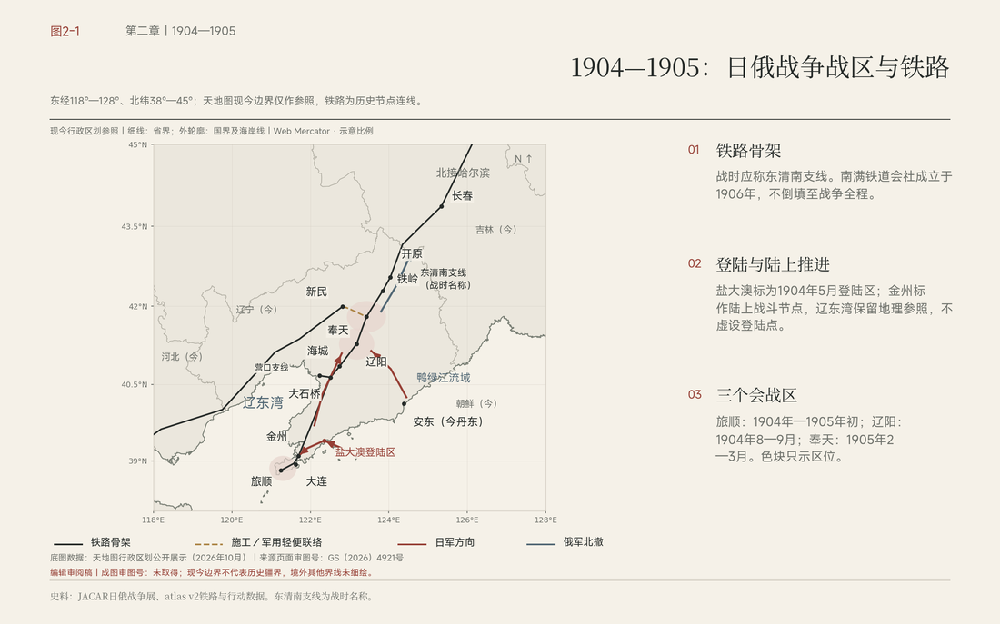
图2-1 1904—1905：日俄战争战区与铁路 铁路与行动箭头说明旅顺、辽阳、奉天战区联系；东清南支线用战时名称，金州为陆上战斗节点。
资料来源：JACAR；日俄战争图集；底图：天地图公开展示（来源页审图号 GS（2026）4921号，非本图审图号）
中立的主意，袁世凯出得最多。他主张严守局外、派兵防边，清廷接受了他的意见，也接受了“东三省疆土权力，无论两国胜负，仍归中国自主”的声明。可声明归声明，战场上没人听。
清廷宣布中立，还划了交战区，是想把战火限制在辽河以东，保住辽西的行政和防务。可辽西也不太平，俄军的骑兵、日军的便衣队都过来活动，地方上的土匪、溃兵趁机打劫。奉天、新民一带的官员要同时应付几拨人马，谁也不能得罪。可战场扩大到辽东半岛和辽西边缘，俄军、日军都不把这条线当回事。清廷要维持和两国的关系，不敢强硬交涉，只能一遍遍发照会、提抗议。弱国的中立，说到底是给强国行方便的。
战事打了十九个月，节点要看五个。
5月，日军渡过鸭绿江，又在辽东半岛登陆；8、9月间，辽阳会战；1905年1月旅顺陷落，3月奉天会战。这几仗打完，俄军退到四平街以北，陆军主力不敢再战，海军也垮了。
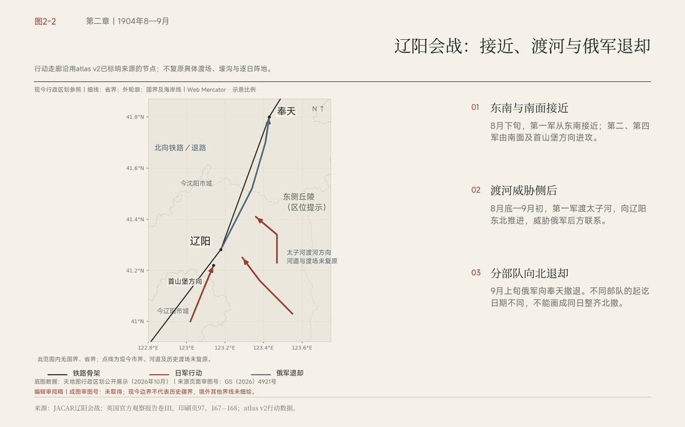
图2-2 辽阳会战：接近、渡河与俄军退却 日军由南面、东南接近，并经太子河方向威胁辽阳侧后；俄军分部队向奉天退却。箭头不代表渡场或逐日位置。
资料来源：JACAR辽阳；Waters卷III；日俄战争图集；底图：天地图公开展示（来源页审图号 GS（2026）4921号，非本图审图号）
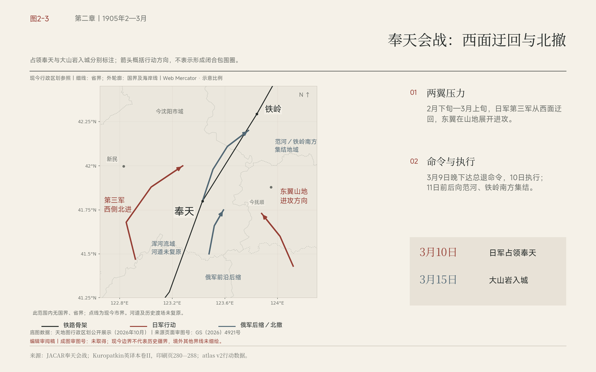
图2-3 奉天会战：西面迂回与北撤 并列西面迂回、东翼进攻与俄军北撤；3月10日日军占城与15日大山岩入城是不同事件。
资料来源：JACAR奉天；Kuropatkin卷II；日俄战争图集；底图：天地图公开展示（来源页审图号 GS（2026）4921号，非本图审图号）
张作霖的部队没有赶上这几场大仗，可战争把新民一带的驻防、粮饷和交通都打乱了。张部要护路、要缉匪、要应付过境军队，任务比战前重得多。
战事之外，还有中立争议。1905年初，外务部照会俄方，列举辽河以西架桥驻兵、在新民屯等地强购牲畜粮食的事。清方还抗议交战双方招用中国地方武装。这些交涉说明，中立只是一层纸，地方上该被征的还被征，该被拉的还被拉。
战争对东北社会的伤害，不在某一场大战的伤亡数字，而在日复一日的供应和过境。
战区里的村庄，军队来了要粮、要草、要牲口、要人抬担架；军队走了，溃兵和土匪又来。有的村子整村逃空，有的村子被两边轮流征用。城镇里的粮价一天一变，商铺关门，钱庄收紧，连烧锅和油坊都停了工。战争打的是军队，付账的是地方。
战后的东北，难民要回乡，田地要重种，商路要恢复，可钱从哪里来，谁也没有答案。地方官指望上面拨款，上面指望地方自筹；商人和农户被摊了一次又一次，能不交就不交。战争留下的伤口，比战场上的伤亡数字更长。
新民一带是辽西的粮仓和商路。战争期间，俄军、日军都在这里征粮、征车、征夫；地方商会要筹款、要应付军队、要维持市面。1906年，新民成立商务分会，重要市镇设分所，商人有了跟官府、军队打交道的渠道。电报、邮递陆续恢复，新奉铁路也在1907年接进中国经营的路网。可这些恢复，先照顾的是有商号、有组织的人，普通村庄的损失和摊派，留下的记录要少得多。
商会有商会的门路，武装首领有武装的算法，普通村庄只剩摊派和损失。战后新民的秩序，靠商人、士绅和军队一起撑；撑不撑得住，要看粮价、生意和驻军的分寸。
张作霖的部队在战后新民的地位，就是在这些分寸里长起来的。商会要人护路，官府要人缉匪，军队要地方供饷；张部三头应付，慢慢成了地方上绕不开的一支力量。
铁路在战争里露了底。俄国靠中东铁路和南满支线调兵运粮，日本靠海运加铁路推进，谁控制线路，谁就能把兵力投到关键点。安奉铁路是日本在战时抢修的军用轻便铁路，从安东直通奉天，仗打完就成了日本继续经营的理由。此前为做生意修的路，一开战就成了运兵线。
战争怎样进入张部的任务？1904年前后，张作霖部还在新民一带，名义上是地方巡防队伍，实际要维持地面秩序、护路、缉捕和应付过境军队。俄军、日军、中国官军和各类地方武装混在一处，谁都能来要粮要人。张部在这种环境里学会了两件事：一是跟不同势力的军官、翻译、地方官打交道，二是把队伍拉出去执行跨县任务。至于“先助俄、后投日”之类的说法，现有材料只能证明张部与日军及反俄武装有过某种合作，具体由谁牵线、领没领钱、干了什么，都还缺过硬的证据。
有一件文书值得注意。1905年2月2日，张作霖给盛京将军打报告，申辩自己被误称为“俄军向导”。日方曾怀疑张部给俄军带路，照会清廷。这个报告不能证明张作霖帮过俄国，也不能证明他没帮过；它说明的是，张部在战争中的位置已经重要到让交战方和清政府都要拿它做文章。对一支地方队伍来说，被怀疑、被拉拢、被追究，本身就是地位的证明。
Seaman 是少数在战争期间见过张作霖的外国人。他在新民与张会面、给张部拍照，记下张的衙门与知府衙门相邻。这份材料能证明张部已经进入地方官署和军事体系交汇的地方，也能证明战争期间新民一带俄军、日军、中国官军和各种地方武装混在一处。可 Seaman 的书里有不少殖民时代的偏见和夸张，不能当组织统计用。
战争也让清廷重新认识东北。东北是发祥之地，朝廷却挡不住两个强国在这里决战。中立保住了外交上的身份，也暴露了军事上的无能。战后朝廷急着改制、练兵、办新政，跟这场战争直接相关。地方上的绅商和百姓，也从战争里看到官府靠不住，遇事更愿意自己办团练、找靠山。
1904年12月15日下午，上海南京路外滩，宁波人周生有从码头边走过。两个穿便衣的俄国水兵坐着东洋车从后面来。他们是俄舰“阿斯科”号的水手，四个月前军舰在旅顺口外被日本舰队打败，逃进上海，按中立条规卸了军械，连人带船被扣在浦东，由中方“保护”。当天，两人没有护照，也没去指定地段，坐车到了南京路，为车钱跟车夫吵起来；争执中，亚其夫从路边抄起一把木匠斧头追砍，周生有过路，被砍中头部，送到仁济医院不久死去。
案子当天就成了外交事件。租界华捕抓住凶手，解到俄国领事署；俄领没有审，直接把两人送回军舰。俄方的理由很硬：按中俄条约，俄人在中国犯罪，归俄国官员治罪，中国官员只能观审。上海道台袁树勋不认：这两个人不是普通侨民，是受中国保护的交战国军人，既受保护，就该受管辖。他三次照会俄领，要求交人，又抬出《中俄天津条约》的“会同办理”，把会审解释成条约义务。
上海的宁波帮也动了。旅沪宁波绅商联名请各国领事主持公议，提出案子发生在公共租界、事关租界治安，不能由俄领一手遮天；若不在上海讯办，中国政府失去管辖权，无法向国人交代。商帮、报馆、集会、停用俄国道胜银行钞票，能用上的办法都用上了。
北京的风向却变了。俄国借周案指责中国破坏中立，威胁把战火扩大到东三省之外；外务部怕给俄国借口，改派盛宣怀督同办理，目标从“会审”退到“复核”，从“管辖”退到“量刑”。1905年1月13日，俄领单方面开审，判亚其夫四年苦工，地亚夫罚十五卢布；中方没有派人观审。2月3日，盛宣怀与俄领会议，提出复核、抚恤、约束俄船等四条；复核被俄国政府拒绝，抚恤由俄使定，约束章程则推说领事无权。3月18日，袁树勋与俄领订约束俄船四条；周案就这样“了结”。
一条人命，四年苦工，十五卢布。周案说明的，与其说是清朝“软弱”，不如说是中立国的难处：保护交战国的军舰和人员是条约义务，审判这些人的权力却在领事裁判权手里；义务是实的，权利是虚的。
战争打了十九个月，扛东西、修路、挖战壕的中国人，比拿枪的中国人多得多。日军从国内招“军夫”，也在朝鲜和东北就地征“人夫”；俄军在东北和山东招华工，也向地方征大车、征民夫。两边给的钱不一样，抓人的办法不一样，可都离不开中国的人、中国的车、中国的粮。华工干的活是扛、挖、修：弹药、粮食、伤员靠人扛，战壕、掩体、工事靠人挖，道路、桥梁、铁路靠人修。他们不穿军装、不拿枪，炮弹落下来一样会死，死了不算“阵亡”，没有墓碑，没有名字。工资被包工头、工头、管事一层层抽，货币混乱，拖欠是常事；清廷发照会要求两国不得在中国领土招兵、骚扰百姓，可管不了，也护不住。华工没有可靠的总数，只能说“以万计”，精确数字待核——不给假精确的总数，比给一个好看的数字更诚实。
比华工更没名字的是难民。战争初期，东北百姓的第一反应不是逃，是等：土地、房子、祖坟、牲口都在这里，走，意味着一年的收成没了。直到日军逼近，辽阳、奉天两场大仗打起来，观望才变成逃命。逃难大致四条路：海路，从旅顺、大连往芝罘（烟台），要靠第三国的船和交战国的许可；陆路西向，沿辽河经新民屯、沟帮子往山海关、关内；铁路，红会争取到火车免票、半票；城内，走不了的人往寺庙、会馆、戏院、营房躲。1904年4月6日，上海万国红十字会在牛庄设第一个分会，随后在新民屯、沟帮子、辽阳、奉天、烟台等地铺开；盛京将军增祺设奉天筹济总局，办粥厂、招流亡、与俄方交涉运粮通行证，自己捐银一万两。可红会进不了战场：中立国的红十字，连救人都要交战双方批准，批准的范围是“战场之外”。
红会的数字要看清口径：受赈225,138人、出险131,177人，这是红会自报的工作统计，不是人口普查，不包含自费逃亡者和死亡者。晚清没有战区人口普查，给“东北难民总数”就是假精确；能说的，是被救到的人有多少，说不出的，是没被救到的人有多少。俄日两军的征发都重：俄军征粮、征马、征夫、征房，给军票或低价；日军设军政署，有征发证、收据、价目，负担一样落在百姓头上。写这段，不为替谁说话，只为把战争的成本记在中国人账上。
1905年9月，日俄在美国朴茨茅斯签订和约。俄国把旅大租借地、长春到旅顺的铁路和沿线煤矿让给日本，撤出在东北的占领军，把占领区交还中国行政；旅大租借地除外，铁路护路兵另有安排。条约第五、第六条在转让条款里写明，须取得中国政府同意。中国没有参加谈判，可这两句话给中国留了一个法律位置。
北京议约，中方代表是奕劻、瞿鸿禨、袁世凯，实际谈判多由袁世凯出面。日方代表小村寿太郎态度强硬，中方只能在细节上争：开埠地点尽量由中国自行宣布，护路兵撤兵加上条件，安奉铁路加期限，材料免税限定范围。争来争去，大的格局改不了，小的条款多少留了点余地。
朴茨茅斯会议开了二十多天，日本国内对条件不满，发生骚乱；俄国代表维特在谈判桌上争得很凶。中国没有席位，只能在场外打听消息、向各国声明中国对东北的主权。和约规定两国在十八个月内撤兵，护路兵可以保留，每公里不超过十五人。撤兵和护路，一个要走，一个要留，后来都成了中国交涉的题目。
中国的位置很尴尬。日俄打完，力量对比摆在那里，中国能争的是范围和条件，不是要不要转让。1905年12月，中日在北京签订《会议东三省事宜正约》和附约。正约第一款写明，中国政府把俄国按照日俄和约第五、第六款让给日本的一切，一概允诺。附约接着办具体事：开奉天、吉林、黑龙江十六处为商埠；日本撤护路兵要与俄国同步，地方平靖、外人生命财产得到保护；日军未撤的地方，中国兵剿匪不得进入日军驻兵界限二十华里以内；安奉铁路仍由日本接续经营，改为工商运输，十五年后估价售与中国；南满铁路所需材料免税；营口、安东、奉天划定日本租界另行商定；鸭绿江右岸设中日木植公司。
附约里的每一条，都是往后几十年麻烦的根。二十华里限制让中国军队在自己的地盘上剿匪还要看日本驻军的脸色；安奉铁路的“十五年”与“估价售与中国”，到期能不能兑现，全看两国实力和交涉；材料免税直接削弱中国财政；租界和木植公司把城市和森林也划进权益范围。条约签了字，事情才刚开始。
正约和附约之外，还有会议录和往来照会。开埠的地点、租界的界址、安奉铁路的改良、木植公司的章程，样样要再谈。日本把战时抢修的安奉轻便铁路改建成正式铁路，中国要求按附约十五年后估价收回；日本又在沿线设警、驻兵、开矿，把铁路两侧经营成一片特殊地带。纸面上的期限和限制，执行起来全看谁有力量。
1906年，日本成立南满洲铁道株式会社，经营长春以南的铁路、煤矿、港口和附属地。满铁名义上是股份公司，官股商股各半，实际上受日本政府监督，是日本在东北推行国策的机构。首任总裁后藤新平是日本殖民政策的设计者之一，主张“文装的武备”，把铁路、煤矿、港口、附属地和调查机构做成一套经营体系；满铁本社设在大连，经营铁路、煤矿、港口、附属地和调查。满铁的资本、人员和政策，都跟日本政府连着。日本在东北的铁路、煤矿、港口、附属地，靠满铁经营；驻军、警察、领事，靠政府维持。企业赚钱，政府撑腰，军队保底，三样合在一起，才撑起日本在南满的地位。它的调查部专门调查土地、资源、经济和社会，为经营和扩张提供情报。公司、军队、领事馆、警察，几套机构各管一摊，又互相配合。
日本的机构不只在铁路和租借地。1906年6月1日，奉天日本总领事馆开馆；关东都督府统管租借地和沿线事务；守备队负责护路和军事；领事馆警察在昌图、开原、法库门、通江口、公主岭等地设出张所，警务活动越出铁路附属地。研究估计，日本在南满的驻军至少两万人。这个数字是估算，不能当成条约规定的固定员额，可它说明日本在东北的军事存在有多重。
中国地方官在奉天城里，左邻是日本领事馆，右邻是满铁事务所，城外还有日本兵营。日常办事，绕不开这些机构。
中国在战后恢复行政，也办成了一些事。营口的租界、海关、警察和公用事业逐步收回或改由中日合办，新奉铁路由中国买回自办。这些事的具体经过，放到下一章讲接收时再说。这里要记的是：战后东北的格局，一边是中国恢复行政、办新政、练新军，一边是日本用铁路、租借地、驻军和领事权把南满越攥越紧。两条线同时走，谁也不让谁。
1907年，日俄又签协约，公开部分说尊重中国领土完整，秘密部分划了势力范围，北满归俄国，南满归日本。两国的军队、铁路、银行、领事跟着势力范围走，中国在东北办事，处处要先看两国的脸色。清廷知道这个协约不怀好意，可没有力量反对，只能加快改制练兵，想用行政和军事的存在争一点空间。日俄从对手变成分赃的伙伴，中国的主权在纸面上被尊重，在实际上被划走。东北的国际地位，从甲午战争后的“列强介入”，走到日俄战争后的“南北分据”，清朝能活动的空间越来越窄。
日本把南满铁路、关东州租借地、护路驻军和领事权合称“特殊权益”。到1920年代，这套权益又被说成“满蒙生命线”。前者是条约语言，后者是政治语言；从“保护既得利益”滑到“独占满蒙”，日本在东北的图谋就走完了最关键的一步。这个变化，后文讲九一八时还要细说。
清朝的对策是改制、练兵、办新政；日本的对策是经营满铁、扩充驻军、扶植亲日势力；俄国的对策是守住北满、等待时机。三方都在布局，东北的老百姓在夹缝里过日子。
甲午战争、庚子事变、俄军占领，连续几次冲击把奉天的地方统治打散。军队溃散，官府缺兵，乡村和市镇只能自己想办法。有的村子办团练，有的集镇设保险队，有的商号出钱雇人护路。保险队向居民和商户收取“保险饷”，负责一定区域内的治安；团练由地方士绅牵头，官府给个名义；也有些人本来就是匪，抢够了再受抚，摇身一变成了地方武装。
辽西的地理，决定了地方武装的活法。
辽河平原地势平，村落密，粮栈、烧锅、当铺、车店沿着大道和渡口开。商队运粮、运布、运盐，要过河、要住店、要人护送；土匪和散兵盯的也是这些买卖。保险队按地段收费，商号按生意出钱，村子按地亩摊派。钱、粮、人、枪，就在这张网里流动。谁控制了道路和渡口，谁就能收过路钱、保护费。高粱一长起来，青纱帐能藏人，官军进剿找不到人，土匪和保险队却来去自如。
官府对这种局面又用又防。盛京将军增祺在1900年前后就提倡乡绅自募练勇、就地筹费，想用民间的力量补官军的不足。新民厅的廖彭在1901年提出收编保险队，“化私团为公团”，把地方武装纳入官府节制。剿不起，就抚；抚了不放心，就点编、派官、调防。这套办法花钱不多，见效快，可也把地方武装的首领和部众关系原样带进了官府。
张作霖就是在这时候冒出来的。
他先给地主、商号看家护院，后来自己拉队伍。甲午战争后他当过兵，见过官军的编制和操练；庚子年乱起来，他在赵家庙、中安堡一带办保险，跟金寿山争地盘，被打散后带着残部投八角台。八角台的团练长张景惠把位子让给他，自己当副手。张作相、汤玉麟这些人，也是在这几年里跟他结下的关系。
保险队按地段收费，商号按生意出钱，村子按地亩摊派；出了事，保险队出面。收钱、护路、跟官府打交道，都要有人情和信用。张作霖在这上面很用心，跟地方上的举人、秀才、乡约、商人都能说上话，这比多几杆枪更要紧。
张作霖跟张景惠、张作相、汤玉麟的关系，后来成了奉系的老班底。这几个人出身不同、性格不同，可都在辽西这块地方滚过，知道怎么带兵、怎么筹钱、怎么跟官府打交道。
那时候的辽西，金寿山、海沙子、杜立三这些名字，官府和百姓都熟。金寿山先跟张作霖争中安堡，后来受抚又复叛；海沙子被张作霖亲手打死；杜立三盘踞辽中一带，后来被张作霖设计擒杀。这些人的故事，后来被编成评书和戏文，真假掺半。看历史，只能看他们跟官府、商民、地盘的关系。
1902年春，新民厅开始对张部进行招抚考察。官府要的是能马上用的队伍，张作霖这个人倒在其次；张作霖要的是合法身份和饷源，几句好话换不来。双方谈了近一年。地方绅商替他具保，官府派人点验，最后在会剿海沙子等匪股时，张部出了力，官府才下定决心收编。替他说话的绅商里，有举人刘春烺、盛京宗学汉教习张程九，还有附生方克猷、陶允恭这些人。他们在地方上有名望，说话官府肯听。
收编之后，张部没有散，反而被编成新民府巡警前营马队，张作霖接着带原来的弟兄。这次收编很关键：官府得了兵，张作霖得了名分，队伍的组织和人际关系没有被打散。后来张部扩编、调防、升官，靠的都是这个底子。
日俄战争期间，辽西成了军队过境和物资转运的地方。张部要护路、缉匪、应付俄军和日军，也要替地方官维持秩序。战争给了张部扩张的机会，也让它看清一件事：在东北办事，光有兵不够，还要跟官府、绅商、外国军队都能说上话。张作霖后来的长进，很多是在这几年学的。
战争结束后，东北要接防、要裁军、要重整地方武装。
战后东北的武装有三类：一是新调来的北洋新军，装备好、编制新，听中央和总督的；二是原有的防营、练军，驻在各地，管治安、缉私、护路；三是招抚来的地方队伍，首领带兵，地方筹饷。三类队伍任务不同、饷源不同、指挥系统也不同。赵尔巽整军，就是想把它们编到一套番号和饷章里。
1907年，清廷又把北洋新军调出关。第三镇全队和第一、第二混成协开进东北，总兵力两万多人，差不多是北洋新军的三分之一。新军一来，东北的军事重心往省城和铁路沿线移，巡防营的地位反而更清楚了：新军管打仗和威慑，巡防营管地面和缉捕。1905年，赵尔巽任盛京将军，主持战后整军。1906年，赵尔巽上奏，把奉天的地方武装编成八路四十营，右路驻新民一带，编四营马队、一营步队；按营制，马营二百五十人，步营五百人，五营合起来是一千五百人的制度兵额。这是纸面上的编制，不等于张作霖手下某一天真有一千五百人。章程还规定，新饷从归并成营之日起支，没有归并的仍照旧章，所以各路各营的改饷时间并不一样。
张作霖部在战后整编里从地方巡队变成巡防营的一支。1905到1906年，刘景双的降队被收编，张部的兵员来源又多了一条。1906年前后，张部扩为马步五营；1907年，张作霖因擒获杜立三受到奖叙，《德宗实录》里记了这件事，杜立三写作“杜立山”。奖叙是奖叙，升任前路统领是另一回事，两者不一定同一天。1908年初的文书里，张作霖还有右路统领的身份，年中才出现前路巡防的文件。升迁的时间线，比后来传记里写的要复杂。
调驻洮南也是一样。1907年秋到1908年之间，调令、启程、到驻分几步走，各时段“前路”的辖区也不一样。洮南当时属奉天，跟今天归吉林不同；用现在的省界去讲当年的调防，容易把省内调动说成跨省。张部的活动范围确实从新民一隅扩到辽西、洮南，可这是一次次调令、一场场任务累积出来的，不是一夜之间成了“一方之主”。
督抚用张作霖，有现实考虑。地方要接防、要剿匪、要护路，正规新军不够用，熟悉地方的巡防营正好补缺。张作霖要的是合法编制、稳定饷源和更大的防区。双方各取所需，合作越久，张部的地位越稳。
到1907年，张作霖已经从前路巡防的统领一步步往上走，驻防从新民扩到郑家屯、洮南。他的部队成了奉天巡防营里最能打的一支，也成了督抚手里最好用的一张牌。可督抚也留着后手：营务处可以质疑将领的任用资格，推荐和核准是两回事。1908年，张作霖推荐张作相，营务处就对汤玉麟的任用资格提出疑问。推荐归推荐，核准归核准，督抚手里还留着用人权。张作霖能做的，是在制度里慢慢把亲信塞进关键位置，让命令出得去、饷领得到、兵带得动。用人在制度内扩大空间，离独立控制还差得远。
1902年的收抚，是张作霖一生的转折点，也是理解奉系起家的钥匙。1902年9月29日，新民厅抚民同知廖彭给奉天交涉总局打报告，转达地方绅商的意见：张作霖部愿意投诚，队伍最好仍由他带，不要另派官员接管，理由是部众复杂、生人难以服众；粮饷暂时由地方绅商按月筹给。
官府的算盘不一样。此前收编的降队，派官管带的往往管不住，首领带队的又容易复叛。奉天交涉总局批示同意收抚，同时要求张部配合会剿杜立子、海沙子等匪股；增祺在禀呈上批了“稍缓”，想再看看。张作霖明白，这是要拿战功换名分，于是带队会同官兵进剿，亲手打死了匪首海沙子，右腿还挨了一枪。
仗打出了名声。官府看张部能打、听调，绅商看张部护地方，张作霖自己也明白，从此不能再做单纯的保险队首领，得按官府的规矩来。点编、发饷、调防、升迁，一步步走下来，队伍还是那支队伍，名分却不一样了。
仗打完，增祺批准收编。1902年11月，张部点留二百五十人，编为新民府巡警前营马队，张作霖任帮带，实际带队。点编时挑的是精壮、有枪、有保结的人，剩下的遣散。点编后编成五哨马队，管带一职暂时空着，张作霖以帮带身份带队，是实际上的当家人。
帮着张作霖说话的，有举人刘春烺、盛京宗学汉教习张程九，还有附生方克猷、陶允恭这些人。他们在地方上有名望，官府肯听。张作霖也懂规矩，把地方上的刑民案件送官，配合官军会剿别的匪股，慢慢在官府那里攒下信用。军饷仍由地方筹给，官府没有马上掏钱。张作霖拿到的是新民府节制下的地方合法身份，离中央正规军还差一层。
收抚这件事，不能只写成张作霖的机灵，也不能只写成清廷的恩典。官府花很小的直接成本，得到一支熟悉地方、能立刻用的队伍；张作霖用服从和战功，换来编制、名分和继续带兵的权利；地方绅商出钱具保，换地方上少一点匪患。三方各取所需，谁也没有吃亏，可负担最后落在谁头上，账并不清楚。
点编之后，官府并没有完全放心。1903年3月，新民府知府增韫呈请盛京将军增祺，说张作霖打仗奋勇、纪律严明，陈树森则桀骜不驯，建议把陈树森拿办，所遗管带之权由张作霖接充。这是呈请，不是命令；后来执不执行、怎么交接，材料里没有完整答案。
1903年8月，新民府把张作霖部和新民府本街的队伍裁并，编成巡防马步游击队。研究转引的文书列出：八角台原练队马队二百、步队二百，本街原练队马队一百七十九、步队三百，两组合计八百七十九人；遣撤马队九十四、步队三百，共三百九十四人；留存马队二百八十五、步队二百，共四百八十五人，统归张作霖管带，张景惠任帮带。
表2-1 1902—1903年张部点编与整编名额
| 时点与项目 | 马队 | 步队 | 合计 |
|---|---|---|---|
| 1902年11月点留 | — | — | 250 |
| 1903年8月前：八角台原练队 | 200 | 200 | 400 |
| 1903年8月前：新民府本街原练队 | 179 | 300 | 479 |
| 两组合计 | 379 | 500 | 879 |
| 遣撤 | 94 | 300 | 394 |
| 留存并交张管带 | 285 | 200 | 485 |
资料来源：据赵菊梅、曲香昆文转引文书复算；数字为文书名额，不等于实到领饷人数。
这组数字要会看。以八角台原四百人为基数，张作霖直接管带的名额净增八十五人，增幅百分之二十一点二五；以两组合计八百七十九人为基数，裁撤三百九十四人，裁减百分之四十四点八二。总数在减，张作霖直接带的人却在增，官府裁军和首领扩权在一件事里同时发生。
裁下来的三百九十四人，有的遣散回乡，有的转到别的营，有的干脆重新当匪。官府省了饷，地方上却多了一批有枪没饭吃的人。张作霖收留了其中一部分，队伍里的人情关系更复杂了。净增八十五不等于接收了八十五个外队兵，更不等于陈树森旧部整体归张；八百七十九也不是新民全境兵额，四百八十五也不是逐名核实的到营人数。数字只能用来说明名额和口径，不能画成一条无缝的实兵增长线。
马队比例也值得注意。整编前马队占两组的百分之四十三左右，留存者中马队占到百分之五十八以上。马队比步队裁得少，说明官府更需要机动兵力。可马队要有马、有草料、有马具、有训练，光看比例说明不了战斗力。后来张部为谷草、夫银、借饷这些事跟地方和上级来回扯，才是这支部队过日子的真相。
饷源的变化更慢。受抚初期，军饷靠地方筹给；1903年3月，已有裁留部分降队、改由官发的方案；1904年4月，新民一带收抚、招募的队伍还在为就地筹饷发愁；1904年7月到9月，才出现张部自筹改领官饷的一组文书。此后有逐月请领、短领补请，1905年有一至三月饷银领到的收讫线索，经办机关也从新民斗秤局转到财政总局。
官饷到手以后，张部要按月造册请领，短领了还要补请；上级要核兵额、核枪械、核马匹。饷银、草料、弹药、营房，一笔一笔都要报。研究转引提到，改领官饷后张作霖每月领一百三十两月薪和办公费；这点钱养不活几百号人，军饷的大头仍在营伍和粮秣上。
枪械也有一笔账。研究转引提到，官府作价收购张作霖自用枪支一百六十五杆，张又把自己买的八十五杆快枪、抬枪报效归公。一次报效不能扩写成张作霖长期拿私财养全军，武器归公也不等于现代公共产权建立。这些数字说明张部跟官府之间的军需关系在加深，别的说明不了。
人事上的线索同样要小心。1902年的记载说陈树森是帮带，受李洪亮节制；1903年3月的目录里出现“拟密饬张接充陈树森营管带”，这是呈请，不是到任。可“陈树森营”可以是营队名称，不能因为这几个字就断定陈树森本人在每个时点都是管带；1904年10月9日，又有一件文书说，据张作霖面陈，把管带李洪亮撤回调省。撤调的原因、接任的人、兵员和饷项怎么交接，材料里都没有交代清楚。比较稳妥的说法是：1903年统一管带是张作霖带兵范围扩大的明确节点，拟接陈营和撤李洪亮是两条重要的待查线索，不能提前写成并兵事实。
读这些档案，最忌讳顺着人物后来的地位倒推。张作霖后来成了东北王，早年的每一份文书都容易被读成“早就注定”。可当时的新民府、盛京将军、北洋大臣，谁也不知道这个帮带能走多远。他们看到的只是一支能用、能收、能调的地方队伍。
把这些事放在一起看，受抚是一次分阶段的制度交易。官府用编制、名义和有限的饷源，收进一支地方武装；张作霖用服从、战功和带队能力，换来合法身份和扩编机会。队伍进了国家编制，原来的首领、部众和地方关系没有散，反而被带进新番号里。
这支队伍有了番号、有了饷章、有了上司，可营官还是老人，兵还是子弟兵，遇事先看首领的脸色。官府想调它，得通过张作霖；张作霖想扩它，得打着官府的旗号。两头都用对方，两头都防对方。
同批受抚的队伍，后来的下场各不相同。有的被裁散，有的首领被换掉，有的并入别的营。张作霖能保住队伍、扩大编制，有运气，也有本事：他会打，会做人，会跟官府和绅商打交道。只把他说成“天生枭雄”，把这些条件抹掉；只把他说成“官府扶植”，又抹掉他自己的选择。国家化往前走了一步，私人控制也往前走了一步，两边同时长。
这种两头长的局面，在清末很常见。官府要用人，又怕人坐大；首领要名分，又舍不得旧关系。双方合作越深，界限越模糊。张作霖后来能把一支队伍带成东北军，靠的就是这种模糊地带。模糊地带能让人上来，也能让人栽下去；辛亥、民初的几次大变，考的就是谁能在模糊里站稳。下一章接着讲这些变局。
这也是奉系后来很多毛病的根。部队有正式番号，饷项却常常靠地方；军官有上级任命，实际带兵靠旧部和乡谊；打仗要听调遣，保存实力又要看首领的算盘。1911年进省城、1912年编二十七师、1916年当督军，靠的都是这套半国家、半私人的本钱。张作霖能把队伍带大，靠的是这本钱；他后来管不住部下、压不住派系，根子也在这本钱。
1907年的东三省改制，是清朝在东北最后一次大动作。设总督、改行省、练新军、办新政，样样都想办，样样都要钱。钱不够，就加重征收；征收重了，地方就闹。几年后辛亥革命起来，奉天省城几天之内换了天，可换的只是名号，掌权的还是那批人。张作霖从巡防营统领变成师长，又变成督军。下面讲三件事：新政办了什么，辛亥怎样变，省权怎样落到一个军人手里。
1907年4月20日，清廷下诏改革东三省官制。盛京将军改为东三省总督，三省设行省，各置巡抚；总督统辖三省，管外交、军务和财政，巡抚管本省行政。徐世昌出任首任东三省总督，唐绍仪署奉天巡抚，朱家宝署吉林巡抚，段芝贵署黑龙江巡抚。总督和巡抚的分工，章程上写得清楚，办起来常有摩擦。总督管三省军政外交，巡抚管本省民政；可军政、民政、财政往往分不开，一件剿匪、一笔军饷，总督和巡抚都要过问。徐世昌到任以后，把新官制一层层铺下去。省设司、道，府、厅、州、县设官；旧将军衙门的房舍、档案、人员，一部分转给新衙门，一部分裁撤。官制改革动了不少人的饭碗，也给了新人机会：留学日本、北洋幕府、新政学堂出身的人，一批批进了东北的官场。
财政整顿跟着官制走。省设度支司，府县设理财所，清理田赋、厘金、捐税、官产；局卡合并，账目统一，征收考成加严。整顿有成效，也有扰民：清丈多收，捐税多派，书吏多要，商民多怨。
徐世昌强势，能压住巡抚；后来的总督，未必压得住。
新官制还带来一批新机构：承宣厅、咨议厅、交涉司、旗务司、民政司、提学司、度支司、劝业司。机构多了，人员多了，经费也多了。旧衙门的书吏、差役，有的转进新衙门，有的被裁，有的转成“黑员”，照样办事，照样要钱。
官制改革，也改变了旗人的位置。将军、副都统的旧系统被压到次要位置，旗务归旗务司管；旗人的钱粮、土地、当差，都进了新衙门的账。旗人不满，可挡不住改制。
改制的直接原因，是日俄战争后的局面。东北名义上还归中国，实际上被俄日两国切成势力范围，铁路、租借地、驻军、领事权一样不少。清朝要跟两国交涉，要恢复地方行政，要整顿军队和财政，就得有一套能统一指挥的省级机构。旧有的将军、副都统、旗署各管一摊，办交涉、筹军饷、调兵马都使不上劲。
可改制不是换块牌子。旧衙门的书吏、差役、旗员要安置，新衙门的厅、司、局所要经费；总督跟巡抚之间、新机构跟旧驻防之间，事权怎么分，章程写了，执行还是靠人。徐世昌带来一批北洋官员和幕僚，办事效率比旧衙门高，可也把北洋的人事和作风带进了东北。
新政的项目开得很热闹：财政要清理，军队要整顿，警务、学堂、马路、实业、旗民生计，样样都办。每一项都要钱。钱从田赋、厘金、捐税里出，捐税一多，商民就怨。新政办得越好，摊派越重；摊派越重，反对越多。新政办得最热闹的，是省城。总督衙门、咨议局、学堂、巡警总局、电报局、官报馆、图书馆、公园，一样样设起来；马路修了，电灯装了，电话通了。省城的面貌，确实跟十年前不一样。
府县的新政，参差不齐。有钱的县办得起学堂、巡警，没钱的县挂个牌子，收一笔捐；有的县官认真办，有的县官敷衍；有的地方绅商愿意出钱，有的地方绅商抗捐。新政的成败，最后落到县官和绅商手里。
新式教育，改变了一批人。学堂里的学生读新书、看报纸、讲民权、讲革命；留学日本的学生，带回了革命党和立宪派的主张。辛亥奉天的革命党人，不少是学堂教习、报馆主笔、留学归国的人。
报馆和舆论，也在变。省城有官报，也有民办报纸；有的讲新政，有的讲革命，有的讲立宪。报纸的言论，官府看得紧，可挡不住学生和商人传看。舆论一开，官府办事就多了一层顾忌。
财政整顿是重头。赵尔巽在盛京将军任上就整顿厘税、整顿局卡、清理田赋，想把人口和土地带来的经济潜力变成可用的收入。他给朝廷的奏报说，光绪二十八年奉天各项厘税报收一百二十五万，整顿后增到二百三十万以上；跟依克唐阿时期最旺的一百六十二万比，也明显增加。这些数字是疆臣报政绩的奏报，不是现代审计的决算，口径要打折扣；可增收的方向是真的。
增收的钱花到哪里去了？兵饷仍是大头，学堂、警务、马路和新设的局所也占了不少。财政从“养兵维持”转向“养兵加办新政”，支出格局变了，压力也跟着变。收入一旦短少，先裁的往往是新政，兵饷却难动。督抚在两者之间拆东墙补西墙，日子过得很紧。
徐世昌任上还想再进一步。1908年，他提出由民署统一经征、改折银征收，想把税收系统从旗民分途、实物征收里理出来。方案有没有批准、怎么实施、碰到什么阻力，材料不足，只能存疑。行政统一有道理，可旗人的旧待遇、驻防的旧收益、地方局所的旧好处，都不是一纸命令能改的。
1907年到1909年，徐世昌在东北办了两年多。他带来的北洋班底，办事效率比旧衙门高，也把北洋的人事关系带进了东北；他调来的北洋新军，增强了东北的防务，也加剧了新军与旧军的矛盾。1909年，徐世昌内调，锡良接任。
1909年2月，锡良接任东三省总督。锡良在四川、云贵办过新政，作风硬，到东北后整顿吏治、裁并局所、清理财政、筹办旗民生计。他面临的局面比徐世昌更难：东北的财政底子薄，日俄的权益越逼越紧，新政的摊子已经铺开。1911年4月，锡良因病开缺，赵尔巽回任东三省总督。这时候，离辛亥革命只剩半年。
新政办到1911年，东北的面貌确实变了：省城有总督衙门、咨议局、学堂、巡警、电报、报纸；府县有民官、警察、学堂；军队有新军、巡防营、警察。可这些新事业，大多集中在省城和铁路沿线，广大的乡村和边地，还是旧样子。办新政，最先动的是学堂和巡警。省城设师范学堂、法政学堂、中学、小学，府县设小学堂、劝学所；巡警设总局、分局、分驻所，府县设巡警局。学堂要教习、要课本、要房舍，巡警要饷、要枪、要服装，钱都从地方摊。办得好的地方，学堂、巡警、马路都有样子；办得差的地方，挂个牌子，收一笔捐，人还是那些人。
咨议局和地方自治，也在这几年办起来。1909年，奉天咨议局成立，议员由绅商和士绅选出，能说话、能提案，可没有实权。地方自治研究所、自治会、商会、教育会，一个接一个成立，绅商有了公开活动的场所。这些机构在辛亥年间发挥了作用：保安会、联合急进会、商会调解，都借了它们的壳。
旗民生计是另一块难啃的骨头。旗人不许随便做工经商的老规矩废了，可旗人没有地、没有本钱，光靠放垦分到的几亩薄田活不下去。新政筹办八旗生计，设工厂、办学堂、发口粮，钱花了不少，效果有限。旗人从“吃皇粮”变成“自谋生路”，这个过程拖了几十年，辛亥以后更难。
捐税的名目越来越多。田赋、厘金、盐税之外，有房捐、铺捐、车捐、戏捐、肉捐、警捐、学捐，一层一层加。商人抗捐、罢市，农民抗粮、聚众，旗人请愿，年年都有。锡良整顿财政、裁并局所，想减轻一点摊派，可新政的摊子已经铺开，裁了这个，那个又要钱。
日本和俄国的压力，也挤在新政里。日本在南满的铁路、煤矿、驻军、领事，俄在北满的铁路和势力范围，让东北的行政处处受限。中国办新政，要跟两国争面子、争实权；办得越像样，两国越警惕。新政不只是内政，也是对外的一场较劲。
日俄战争打完，东北要办的第一件事是接收。俄军撤了，日军也撤了，可铁路、港口、税关、警察、电报这些战时被占的设施，要一项一项收回来。收回来的过程，比条约上的规定复杂得多。营口和新奉铁路，是两个看得最清楚的例子。
营口是辽河入海的口岸，东北的粮、豆、木材从这里出海。日俄战争期间，日军占领营口，设军政署，管行政、警察、卫生和工程，关税也由日方经收。战后中方要求交还，双方谈了一年多。1906年12月5日，双方签订交收字据；次日，中方官员到场接管，日本军政署裁撤，警察、卫生、工程事务转交中国。接管的班子，是从北洋和奉天调来的。梁如浩办交涉，北洋派巡警、卫生兵丁，奉天派地方官；接收的经费、人员、办公地点，都要临时筹。日本军政署撤了，留下的房屋、账目、档案，要清点、要移交；日方经手的人员，有的留用，有的遣散。
接收以后，营口的警察、卫生、工程、税收，一样样恢复。可恢复的机关，缺人、缺钱、缺章程；商民习惯了日方那套管理，对中国官署的办事效率和收费，未必满意。恢复行政只是开头，能不能办好，要看后面的日子。
税款的处理更麻烦。北京议约时，双方已经议定：洋关税由日本正金银行收存，撤兵时交中国官员查收；常关税和地方捐款用于当地公共事务，届时要交收支单。1906年，北洋大臣袁世凯等会奏报告营口关税余存的处理，梁如浩查收后，余款仍按中日商定的办法暂存营口正金银行备用。账表上列着当地征收和行政支出，日方还从洋关税款里补过工程、警察的费用。接收账项、承认支出、确定余款，是几件相关但分开办理的事。
俄国那边还有一笔旧账。俄军占领营口时，把一部分关税存在华俄道胜银行；战后中国向俄国追索，俄国照会要求中国先告知日本交回款项的确数、说明扣费，再由俄方通知银行交还。关税之外，还有常关和杂税。营口的常关、地方捐、船捐、码头捐，战时被日方经收，战后要一笔一笔对账。日方交来的账表，列着征收多少、支出多少、结余多少；中方查收要核用途、核单据，日方则要求先承认支出，再谈余款。对账的过程，拖了不止一年。
营口的海关，在列强共管的海关体系里。海关税务司是外国人，关税担保外债、赔款，中国不能随便动。战后收回的，是行政和部分税款；海关的管理和关税的分配，还在旧体系里。
商会的角色，在接收里也露了头。营口商会代表商号跟中日双方交涉，要求保护商路、减轻摊派、维持市面。商会不是官署，可它有人、有钱、有关系，办起事来比官署灵活。接收以后，商会继续在税务、商事、市政上说话。
营口的经验说明，接收不是把旗子一换就完事。海关、常关、地方捐、银行、商会、侨民，每一块都要有人接、有账对、有规矩立。中国恢复的是行政，不是全部主权。
新奉铁路是另一笔。这条线是日本在战时修的战时轻便铁路，从安东到奉天，战后日本想继续经营。1905年北京议约时，日方代表小村寿太郎要求由日本继续经营新奉，又要展筑吉长铁路。中方全权争取，最后议定：新奉售归中国改办，吉长由中国筹建，不足资金分别向日本借用。会议节录定了新奉借款十八年、吉长二十五年的办法。
谈价谈了一年多。日方起初以战时工费昂贵为由索价三百三十二万日元，经反复商议，减定为一百六十六万日元。1907年4月15日，中日签订协约，确认中国买收新奉铁路并自行经营；辽河以东所需资金的一半向满铁借入，吉长建设所需资金的一半也向满铁筹借。条款把两路列为中国官路，办理章程沿用山海关内外铁路总局的办法；借款以铁路财产和收入作保，配置日籍技术与账务人员，收入存入日本银行，发生偿付困难时满铁可以暂代经营。
中方也争到了几句保留：除约中所指线路以外，中国自行筹款修筑他路，与满铁无关；借款的实际交付价值，参照中国最近向别国所借款项公平酌定。这几句写进协约，是想把满铁因贷款取得的权限限定在两条路上。可借款条件摆在那里，工程和财务仍受日方监督。
钱从哪里来？邮传部奏报说，一百六十六万日元从京奉铁路的余利中提付，于光绪三十三年三月十二日交日本公使林权助收讫；随后派员接收，四月二十一日按清单点验线路、车辆和器具。中国能办成买收，靠的是此前办京奉铁路攒下的收入和人员。没有这笔余利，条约上的“买收”只能停在纸上。
1907年5月27日的交线条款，把6月1日定为收入和列车运行归中国铁路机关负责的日期。原有员工暂借七天，等中方派员接替；车辆往来、材料与煤水供应，也定了衔接办法。接收线路，先要保证列车继续开，人员和设备移交跟着办。邮传部随后报告，军用线路轨距跟京奉旧线不合，桥梁和材料要换，先修原线，当年实现京奉全路通车，大工程继续改建。买路款和工程款分别以日金和银元计价，改建支出延续到后来。
营口和新奉这两件事说明，中国在战后确实恢复了一部分行政和经济权力，可恢复是有条件的、分步的、带着旧账的。关税要一筆一笔对，铁路要一米一米点，人员要一茬一茬换。接收办成了，靠的是外交争、财政挤、人员顶；办成之后，条约和借款的条件还在，日方的监督和权益还在。接收办成以后，日常经营还是难。营口的海关、常关、地方捐，收上来的钱要分账；日方经收期间的账目要核，俄方存银行的旧账要追；商会的商事纠纷、侨民的治安案件，要跟领事馆打交道。中国恢复了行政，可关税、航运、金融和侨务，还在列强体系里转。
新奉铁路买回以后，要修、要改、要养。军用轻便铁路的轨距跟京奉旧线不合，桥梁、材料要换；工程款要筹，借款要还，日籍技术人员和账务人员按合同在岗。中国取得了经营权，可铁路的财产和收入作了借款担保，收入存日本银行，还本付息按月提存。经营自主和财务受制，同时存在。
接收的每一步，都要人办。外务部交涉、北洋大臣会奏、地方官点验、邮传部接收、铁路总局派员，一层一层走下来，文件堆成山。中国能办成这些事，靠的是清末新政攒下的外交、财政和铁路人才；可人才再多，也架不住条约和借款的绳子。
营口和新奉的经验，后来被反复用。东北的地方官、铁路局、商会，遇到外国权益，先看条约、再算账、再找人；能争的争，争不了的拖，拖不了的认。这种办事方式，一直延续到民国。
战后的东北社会，不是铁板一块。商人、武装首领、普通村庄，在秩序恢复里站的位置不一样，得到的和失去的也不一样。
商人先组织起来。1906年，新民在官员召集下成立商务分会，重要市镇设分所；奉天商务总会也在这前后成立，办法是官府先拨开办费、商董推举负责人、再报商部核准。商会的功能，比“开会递呈子”多。商会能调解商事纠纷、能担保贷款、能代办税捐、能组织商团、能跟军队交涉。商团是商会出钱办的武装，护店、护路、护市；军队过境，商会出面招待、摊派，也讨价还价。
商人跨地区经营，靠的是商会网络。新民商号在营口有交易，营口商会出面调解；奉天商号在长春、哈尔滨有分号，靠当地商会照应。商会之间通消息、通行情、通关系，东北的商业网络，一半靠铁路，一半靠商会。
商会跟官府的关系，是合作加讨价。官府要商会筹款、劝捐、维持市面；商会要官府减税、保商、护路。合作得好，官商两利；合作不好，商会罢市、请愿，官府也头疼。清末民初的新政和财政，很多是靠商会撑着办的。
商会跟军队的关系，是互相利用。军队要饷、要粮、要车，商会要保护；军队能护路，也能扰民。张作霖的部队跟新民、奉天商会的往来，从受抚时期就开始了；后来奉系能筹到钱，商会帮了大忙。1907年，一件涉及新民商号的交易纠纷呈到营口商会，跨地区经营的商人靠商会和沿途官署协调运输、交货、结款。商会的出现，是清末商政改革和战后善后碰在一起的结果。
武装首领也在找位置。战后整军，把各地队伍编成巡防营，首领有了番号和饷章；招抚、裁并、调防，首领要跟官府谈编制、谈饷款、谈驻地。张作霖的部队就是在这时候从新民地方队伍变成奉天巡防营的一支。武装首领的地位，靠的是手里的兵和跟官府的关系，商会的渠道他们用不上，可他们能替商会护路、缉匪，两边有来有往。
普通村庄的处境最差。战争期间出粮、出车、出人，战争结束后摊派没有停：办巡警要钱，办学堂要钱，修路要钱，驻军要粮。村庄能拿到的，是少一点的匪患和稳一点的市面；付出的，是摊派、征购和损失。这些负担留下的记录很少，账册和申诉材料大多散失，可在当时人的记忆和地方志的零碎记载里，还能看到影子。
战争一开，清廷宣布局外中立，划辽河以东为战区、以西为中立区。纸上的界线，要设卡、巡防、贴告示来守：渡口、桥梁设卡盘查，两岸派巡防队巡逻，城镇村庄贴告示告诫百姓。可这条线守不住：俄军越界征粮、征马、架桥、驻兵，日军的便衣队和特别任务班潜入辽西联络马贼，马贼和难民也来回越界。清廷能做的，是照会、抗议、再照会；辽河划区，象征意义大于实际约束。
两军的征发，是战争对社会的直接抽血。俄军在占领区征粮、征马、征夫、征房，给军票或低价，不给就抢；日军在占领区设军政署，发征发证、收据、价目，手段规范一些，征发的量和负担一样重。督抚能做的，是照会、抗议、索赔；日俄的回应多半是敷衍。征发的账，最后都落到州县和村庄头上。
州县官是执行的最后一公里：设卡、巡防、赈济、交涉、禀报，五件事都要办，钱、人、权三样都不够。钱从藩库、捐输、摊派、借债来；人从保甲抽丁、团练招募、军队征发来；时间被十九个月的战争拖住。粮捐、房捐、商捐、牲口捐一层层压下来，压到最穷的人身上。这笔账没有精确总数，可从捐输的名目、摊派的层数和地方官的禀报里，能看出负担怎么往下走。
战后善后，官民两条腿走路。增祺设奉天筹济总局，办粥厂、招流亡、与俄方交涉运粮通行证，自己捐银一万两；上海万国红十字会从牛庄分会起步，在新民屯、沟帮子、辽阳、奉天设分会，救护出险、给资投亲、施赈放粮。红会自报受赈225,138人、出险131,177人，这是工作统计，不是人口普查；给“东北难民总数”是假精确。赈济救了一部分人，也把战争的成本记进了新政的财政账。
交通和通信的恢复，也先照顾有组织的一方。1906年，奉天到新民屯的电线由日本交还，奉天西路的邮递恢复，官署发往西路的公文交邮局代递；1907年，新奉铁路由中国买收，接入京奉铁路的经营和改造。商人、官府、军队用得上这些设施，普通村庄的感受要慢得多。
战后东北社会的变化，可以概括成一句话：有组织的人找到了渠道，没组织的人继续承担成本。社会分层，在移民城市更明显。大连、哈尔滨这些城市，外国侨民多、洋行多、工厂多，中国工人、苦力、小商贩挤在码头和工厂周围；商会、工会、同乡会、帮会，各有各的组织。城市里的中国人，既要跟外国老板、工头打交道，也要跟本国官署、商会打交道。
乡村的社会，靠的是宗族、乡约、保甲、团练。村屯之间，有地界、水利、婚姻、债务的纠纷；村子跟官府，有粮、捐、夫役的关系。土匪和溃兵，是乡村最大的威胁；团练和保险队，是乡村的自保办法。
社会分层不是固定的。经商发财的，可以买地、捐官、进商会；当兵升官的，可以置产、结亲、入士绅；破产的农民、失业的工人，可能当兵、当匪、闯关东。清末民初的东北社会，流动性大，秩序不稳。村庄和农户，还是那个出钱出粮的底子。后来奉系能坐大，靠的是前两种人的合作；商会不是万能的。商会能替商号说话，可商会会长、会董都是有钱有势的人，小商贩、手艺人、苦力进不了商会。商会跟官府、军队打交道，靠的是面子和钱；面子和钱不够的时候，商号的利益也保不住。
城市和铁路沿线，社会分层更明显。省城、大连、哈尔滨、长春这些地方，有洋行、银行、报馆、学堂、电影院；有中国商人、俄国侨民、日本侨民、朝鲜侨民；有巡警、军队、革命党、秘密结社。城市越大，事越杂。
乡村的社会，还是老样子。村屯、宗族、乡约、保甲，管着大多数人的日子；土匪、溃兵、苛捐，是最大的威胁。农民对“革命”“共和”这些词，未必听得懂，可对粮价、捐税、拉夫，感受很直接。辛亥年间，地方起义能在乡村起来，靠的是这些直接感受，不是抽象口号。
战后秩序恢复，得益最多的是有组织的人。商人有商会，武装首领有编制，士绅有咨议局和自治会，工人有工场和行会，农民只有村庄。社会的分层，在战后几年更清楚了。
1907年改制以后，东北的军队分成两大摊：新军和旧军。新军是北洋调来的，装备好、编制新；旧军是巡防营、防营、练军，驻在各地，管治安、缉私、护路。新军的编制、训练、装备，按北洋的章程来。镇下设协、标、营、队，有步、马、炮、工、辎重；军官多是北洋武备学堂、日本士官学校的毕业生；士兵招募有标准，训练有操典。新军是清朝练新军、办新政的成果，也是北洋集团的本钱。
旧军的编制、训练、装备，参差不齐。巡防营、防营、练军，有的是绿营改的，有的是勇营改的，有的是招抚来的；营制不统一，饷章不一致，装备新旧杂陈。旧军的好处是熟悉地方、能剿匪、能维持治安；坏处是纪律差、战斗力弱、跟地方关系太深。
两套军队并存，是清末的普遍现象。新军是“国家的军队”，旧军是“地方的军队”；新军要集中、要统一，旧军要分散、要自主。两边的矛盾，在东北尤其明显，因为东北的旧军多、地方武装多、饷源杂。
新军的调入，是1907年军事上最大的动作。清廷把北洋第三镇全队和第一、第二混成协调出关，总兵力两万多人，差不多是北洋新军的三分之一。第三镇驻长春、奉天一带，第一混成协驻新民，第二混成协驻奉天北大营。新军的军饷，原奏说“饷项仍暂支原款”，由户部、直隶、山东、江苏等省协济，一年后再看东北财力能不能接。东北的财政养不起这么多新军，中央和各省只能先背着。
新军来了，旧军没有裁。奉天的旧军编成五路巡防营：前路驻洮南，统领张作霖；后路驻辽源、通辽，统领吴俊升；左路驻彰武、黑山，统领冯德麟；右路驻东边道，统领马龙潭；中路驻奉天、铁岭，统领朱道坚。五路的防区，跟地理和任务有关。前路在洮南，面对蒙古各旗和蒙匪，任务最重；后路在辽源、通辽，护铁路、防蒙边；左路在彰武、黑山，守辽西走廊；右路在东边道，防朝鲜边境和山林匪；中路在奉天、铁岭，护省城和铁路。
各路的营数、装备、饷章，不都一样。张作霖的前路，剿匪打得多，兵精一点；冯德麟的左路，资历老、架子大，跟张作霖暗中较劲；吴俊升的后路，骑兵多、机动快；马龙潭的右路，地广人稀，任务杂；中路的朱道坚，守着省城，听总督的。
巡防营的军官，多是行伍出身，讲的是义气、战功、地盘。营官跟统领，是多年上下级；兵跟营官，是同乡、子弟兵。省里的命令，要通过统领、营官一层层传；传得下去传不下去，要看关系。
新军和巡防营的矛盾，辛亥前已经明显。新军军官看不起巡防营“土匪气”，巡防营看不起新军“花架子”；新军要饷多、要权多，巡防营要地盘、要自主。两边的矛盾，到辛亥就爆发了。巡防营的兵是招募的，官是带出来的，饷是地方筹的，跟新军的系统不一样。
五路巡防的形成，让奉天全境有了按方向分工的驻防体系。总督通过统领管各路，统领通过营官管各营；营务处管承转、考核、发饷。分路的好处是覆盖面广，坏处是各路将领跟所部关系太深，省里的命令能不能执行，要看将领给不给面子。后来张作霖能靠巡防营起家，根子在这套体系里。
新军和旧军，不能简单按“革命”和“保皇”分。新军里有革命党，也有保皇派和观望的；旧军里有死忠清朝的，也有看风使舵的。第二十镇驻新民、锦州一带，辛亥前因秋操调到滦州，后来参与滦州兵谏；第二混成协驻奉天北大营，协统蓝天蔚是革命党人，可他的部队内部也不齐。旧军里的张作霖、冯德麟、吴俊升，辛亥时都站在赵尔巽一边，可各人打算盘。
张作霖的巡防营在这几年往上升。1907年，他因擒获杜立三受到奖叙，《德宗实录》记了这件事，杜立三写作“杜立山”。奖叙归奖叙，升任前路统领是另一回事，时间不一定在同一天；1908年初的文书里他还有右路统领的身份，年中才出现前路巡防的文件。调驻洮南也是分步走，调令、启程、到驻不在同一天。张作霖的升迁，是一连串任务和任命累积的，不是一战成名。
督抚用张作霖，是因为他能办事。剿匪、护路、维持地方，这些活新军不愿意干、也干不好；巡防营熟悉地方，正好补缺。张作霖要的是编制、饷源和防区，督抚要的是能听调的队伍。双方合作，张部的地位越来越稳。可督抚也留着手：1908年，张作霖推荐张作相，营务处就对汤玉麟的任用资格提出疑问。新军和旧军的饷源，也不一样。新军的饷由中央和各省协济，走陆军部的账；旧军的饷由地方筹，走督抚的账。两套账，两个系统，办起事来互相推。新军看不起旧军的饷章，旧军眼红新军的装备；真到打仗，谁听谁的，还要看督抚的调度。
第二十镇、第二混成协这些新军，辛亥前就驻在奉天附近。第二十镇驻新民、锦州，辛亥前因秋操调往滦州，后来参与滦州兵谏；第二混成协驻奉天北大营，协统蓝天蔚是革命党人，可部队里的军官不都听他的。新军内部有革命、保皇、观望三派，谁也不敢说掌握全局。
巡防营的五路，防区分得很清楚。前路管洮南、郑家屯方向，面对蒙边；后路管辽源、通辽，护铁路；左路管彰武、黑山，守辽西；右路管东边道，防朝鲜边境；中路管奉天、铁岭，护省城。五路各有各的地盘和人脉，平时各办各的事，战时听总督调遣。
张作霖在五路里不是资历最老的，可他打得狠、会来事。剿匪、护路、蒙边作战，他都出过力；督抚要用人，他第一个到位。地位是一仗一仗、一件事一件事攒出来的，不是靠结拜兄弟捧出来的。
1911年10月10日，武昌起义的消息传到奉天。省城一下子紧张起来。新军里有人想响应，革命党人想借机推动东三省独立，旧官僚和绅商怕乱，日本在南满的驻军和领事馆盯着局势。革命党人想借武昌的声势，把东北拿下来。张榕、蓝天蔚、吴景濂这些人，有的是同盟会员，有的是立宪派，有的是新军军官；他们的共同点是反对清朝、主张共和，可分赃、路线、靠山各不相同。
立宪派和绅商想的是“保境安民”。他们怕革命、怕战乱、怕外国干涉，希望用咨议局、保安会这些机构，把局势稳住，把权力从旧官僚手里分一点过来。他们跟革命党合作，又跟赵尔巽妥协。
旧官僚和旧军想的是“维持现状”。赵尔巽、袁金铠、张作霖这些人，忠于清朝也好，投机也好，首先想保住自己的位置和秩序。他们能用保安会、能用军队、能跟日本周旋，手段比革命党多。
日本想的是“保护权益”。南满铁路、旅大租借地、驻军、领事，日本的利益在奉天最多；奉天一乱，日本就可能出兵。日本不一定要帮谁，可它绝不会让局势脱离自己的控制。
总督赵尔巽的处境最难。他手里有第二混成协，可协统蓝天蔚是革命党人；有巡防营，可分散各地，调来要时间；有警察，可警察靠不住。赵尔巽的应对，是能调的都调。他先把中、前路巡防营调进省城附近，又拉拢吴俊升、马龙潭这些旧军统领，再把袁金铠等地方士绅请出来维持市面。省城的兵一天比一天多，可靠得住的却没几支。
袁金铠是赵尔巽的谋士，也是张作霖的引荐人。他向赵尔巽推荐张作霖，说张是“土匪出身、头脑简单”，给点恩惠就能效忠。赵尔巽听了，把张作霖从洮南调进省城。张作霖进城的程序，是先入城、后补令，还是奉命调入，材料说不清；能确定的是，他进城以后，赵尔巽多了一支能用的兵。
张作霖进城以后，先当赵尔巽的警卫，再当军政部副部长，再统中、前路巡防营。他把部队布置在省城要害，把亲信安插进警察和军械库，把绅商和旧官僚拢在身边。省城的军权，一点点从赵尔巽手里转到张作霖手里。
革命党人看在眼里，急在心里，可手里没有能打的兵。蓝天蔚的第二混成协，被赵尔巽、袁世凯一步步削权；张榕的联合急进会，只有几百人的武装；各地的起义，远水解不了近渴。省城的局势，就这样定了。
蓝天蔚去权的程序，分几步走。先是赵尔巽向清廷报告，说蓝天蔚跟所部两标不和、部队不听命令；清廷下旨，解除蓝天蔚的统领职务，以聂汝清接充。接着袁世凯方面又以中央名义，令蓝天蔚赴东南各省考察战事、宣传保安会宗旨，把他调离奉天。换将、留营、给名义，几步走完，第二混成协还在，革命党人却没了省城的军事支柱。
张作霖入城的程序，材料里有两说：一说奉命调入，一说先入城、调令后补。两说都有回忆和文书依据，谁也不能压倒谁。能确定的是，张作霖进城以后，赵尔巽多了一支能用的兵，革命党人少了一条可走的路。
保安会的成立，也有异说。多数材料记11月12日开成立大会，也有材料记11日的活动；筹备和成立可能不是同一天，现有证据不足以把两说统一。正文取12日，是因为多数研究和当时记载都指向12日；11日说留在注里，供读者判断。
保安会成立以后，各府、厅、州、县设分会，分会长由地方官担任；省城设八部，部长多是旧官僚和立宪派。保安会名义上维持治安、保护生命财产，实际成了赵尔巽控制局势的工具。革命党人原想借它推动独立，结果被它架空。赵尔巽一面调巡防营进省，一面拉拢旧军将领，一面跟绅商和日本方面维持关系。
革命党人也在动。11月6日，张榕、蓝天蔚等人在北大营会商，打算通过奉天国民保安公会、迫使赵尔巽宣布独立、控制军械库这几步，把政权拿过来。方案有组织、有军队、有公开形式，不是仓促暴动。可会商的内容当晚被告密，赵尔巽提前做了准备。
11月12日，奉天国民保安公会成立，赵尔巽任会长，吴景濂、伍祯祥任副会长，下设军政、财政、外交、参议等部。革命党人原想借保安会推动独立，结果会长和实权都落在旧官僚手里。张作霖以赵尔巽警卫的身份率部到场，会场外有军队，会场内的力量对比已经变了。保安会从“独立工具”变成“维持秩序的工具”，只用了几天。
蓝天蔚的兵权，是另一个关键。清廷根据赵尔巽的报告，以蓝天蔚跟所部两标不和、部队不听命令为由，解除他的统领职务，以聂汝清接充；同时驳回赵尔巽辞职的请求，要他继续维持局势。随后赵尔巽又以派蓝天蔚赴东南各省考察战事、宣传保安会宗旨的名义，把他调离奉天。换指挥、留组织、给名义，几步走完，第二混成协还在，革命党人却失去了省城最重要的军事支柱。
革命派没有就此罢手。11月17日，奉天联合急进会成立，张榕任会长，宣布响应南方革命，派人到各地联络。庄河、复州、辽阳、凤凰城、安东、海城等地先后起事，有的成立军政分府，有的攻打巡警局、盐务局。地方起义此起彼伏，可力量分散，武器、通信、指挥都不统一，被巡防营各个击破。
省城的军权，也在往张作霖手里集中。11月12日以后，张作霖继续调部队进省；12月，前路与后路换防，中路九营归他统一指挥。到12月底，张部从原来的七营扩到十六营，兵力近三千人；加上前路帮统的两个营，约十八营、三千五百人。张作霖成了省城最大的地方军事首领。
1912年1月23日，张榕被张作霖、袁金铠合谋杀害，联合急进会遭到破坏，奉天的革命运动转入低潮。3月15日，赵尔巽任东三省都督；4月13日，相关机构改置。都督取代总督，名号变了，掌权的还是赵尔巽和张作霖这批人。清朝亡了，奉天的旧权力没有亡，换了个共和的招牌继续运转。
假如1911年11月张作霖没有进奉天省城，奉天会不会走上独立？省城的兵力对比会不一样：蓝天蔚的第二混成协可能掌握更多主动，革命党人推动保安会独立的胜算会大一些。可独立能不能成，还要看三件事：革命派能不能统一指挥，赵尔巽能不能调来巡防营，日本会不会干涉。三件事都不利于革命派。张作霖进城，是把天平压到底的那一手；没有他，天平未必倒向独立，保安会的组成，也能看出权力在谁手里。会长赵尔巽，副会长吴景濂是咨议局议长，伍祯祥是新军协统；下设军政、财政、外交、参议等八部，部长多是旧官僚和立宪派，革命党人只有张榕在参议部挂了个副部长。张作霖先当军政部副部长，后来兼中、前路巡防统领，握了实权。
赵尔巽的应对，是一手拉、一手压。他拉绅商、拉立宪派、拉旧军将领，给保安会一个“维持秩序”的名分；压革命党、压新军、压报馆，用军队控制省城。他没有大开杀戒，可也没有手软：张榕、联合急进会、地方起义，一个个被压下去。
革命党人的问题，在分散。张榕、蓝天蔚、吴景濂各有各的关系和打算；新军、巡防营、联庄会、地方士绅，各有各的利益。没有统一的指挥、统一的经费、统一的计划，起事只能一处一处来，被赵尔巽一处一处压。
地方起义也没有连成片。庄河、复州的联庄会起事，辽阳、凤凰城、安东、海城的起义，各有各的领头人，彼此呼应少，武器、通信、补给都困难。巡防营分路弹压，一营一营打，起义就散了。
省城的社会，也不支持革命。绅商怕乱，怕生意做不成，怕军队打进城；旗人怕报复，怕丢了口粮；普通居民怕兵灾，怕粮价涨。革命党人讲共和、讲独立，听的人多，真跟着走的人少。赵尔巽的“保安”，正好接住了这种怕乱的心理。
日本的态度，也是革命党人绕不过去的。日本在南满有驻军、有铁路、有领事，奉天一乱，日本就可能借口保护侨民和铁路出兵。革命党人想避免外国干涉，赵尔巽也想借外国压力压制革命；两边的顾虑，反而帮了赵尔巽。
清朝退位，民国成立，东北的军队要换番号。1912年9月，中、前路巡防营改编为陆军第二十七师，张作霖任师长；冯德麟的左路巡防营改编为第二十八师，冯任师长。改编的过程，是北京、奉天、部队三方谈的。北京要收编地方军队，纳入国家军制；奉天要安抚地方军人，稳住秩序；张作霖要正式番号，扩张实力。三方各有打算，谈成了第二十七师。
第二十七师的师部，设在奉天。师长以下，有旅长、团长、营长；张作霖的旧部张景惠、张作相、汤玉麟这些人，分任要职。师的编制、饷章、装备，按陆军部的章程办；可师里的人事、饷源、防区，还是张作霖说了算。
国家番号给了张作霖名分，也给了他约束。他要用国家的名义招兵、筹饷、打仗，就要受陆军部、北京政府的节制；他要扩张，就要在国家的框架里找空间。第二十七师的编制，是民国陆军的正规师。师部设参谋、副官、军需、军法、军医等处；师下辖旅、团、营，有步、马、炮、工、辎重。师的编制、饷章、装备，按陆军部的章程办；师的军官，有的由陆军部任命，有的由师长保荐。
师长的权力，在编制内是明确的：管训练、管作战、管军纪、管饷需。可师长管不了省政：民政、财政、外交在都督和省长手里。张作霖要办事，得跟都督商量、跟北京请示；都督要办事，也得跟张作霖商量。军权和政权，在奉天是分开的。
冯德麟的第二十八师，是张作霖的对照。两人都是巡防营统领出身，都编了师，都当过军务帮办；冯德麟资历老、架子大，跟张作霖暗中较劲。张作霖要统一奉天军权，先要冯德麟点头；冯德麟要保住自己的师，也得看张作霖的脸色。两雄并立，是1912年到1916年奉天军政的底色。
军饷和财政，是两雄并立的另一面。二十七师、二十八师的饷，一半靠奉天财政，一半靠中央协济；奉天财政又靠田赋、厘金、捐税和官产。张作霖、冯德麟都要抢饷源，都要跟都督、省长、财政机关打交道。兵多、饷少、财政紧，是这几年奉天的常态。
师长这个位置，含金量要看跟谁比。跟巡防营统领比，师长是中央陆军的编制，饷章、装备、指挥都更正规，能直接跟陆军部打交道；跟省都督比，师长只是一个师的军事主官，管不了民政、财政和外交。1912年到1915年，奉天的最高军政长官换了几任。张锡銮是袁世凯的老部下，当奉天都督，办事圆滑，跟张作霖维持表面和气；1914年，张锡銮改任镇安上将军，督理奉天军务；1915年8月，段芝贵接替张锡銮，督理奉天军务兼节制吉黑。
几任长官，都没有自己的兵。奉天的兵在张作霖、冯德麟、吴俊升、马龙潭手里；长官要办事，得跟这些军人商量。张作霖对长官，表面恭敬，实际敷衍；长官对张作霖，表面倚重，实际提防。
北京的袁世凯，对东北的办法是又用又防。用张作霖，是因为他能稳住奉天；防张作霖，是因为他兵多地盘大。袁用张锡銮、段芝贵这些亲信去当长官，就是想用文官和资历压住军人。可压不住，兵在谁手里，权就在谁手里。
张作霖在师长任上，还办了一件大事：跟北京、跟日本、跟奉天的绅商都拉上关系。1913年入京见袁，1915年应付帝制，1916年逼段离奉，每一步都在给自己加码。师长只是起点，督军才是目标。省里的最高军政职务，1912年由张锡銮任奉天都督，后来换成段芝贵。
第二十七师的改编，也不是把奉天各军合成一师。冯德麟的第二十八师独立存在，吴俊升、马龙潭的巡防营各有防区，张作霖能直接指挥的只是自己的师和部分巡防营。师长的权力，在编制内是明确的，在编制外要靠人脉、饷源和上级的信任去争。
张作霖在师长任上做的，是两件事：一是把师带好，二是往省政里伸手。师带好，靠的是旧部和饷源；伸手，靠的是跟北京的关系和对省城局势的影响。1913年3月31日，袁世凯电召张作霖入京会面，当面安抚、授勋，张作霖表示效忠。袁要的是东北的稳定，张要的是中央的承认，两边各取所需。
1912年到1915年，北京对东北的控制，靠的是任命、调人和军饷。张锡銮当奉天都督，办事圆滑，跟张作霖维持表面和气；1914年，张锡銮改任镇安上将军，督理奉天军务；1915年8月，段芝贵接替张锡銮，督理奉天军务兼节制吉黑。几任长官，都没有自己的兵，办事要看地方军人的脸色。
1915年，袁世凯推行帝制，东北的政局跟着变。8月22日，张锡銮调任督理湖北军务，段芝贵任督理奉天军务，兼节制吉林、黑龙江军务。段芝贵是袁世凯的亲信，来奉天带着“上将军”的名头，可手里没有自己的兵，办事要靠张作霖、冯德麟这些地方军人。督理军务的名义跟实际兵权，是两回事。
日本在这几年的角色，也要看清。1912年前后，张作霖试探过日本方面的支持，日本领事和军方有人愿意接触，东京的外交当局却不愿深度介入；1915年5月25日，日本又通过条约和换文，延长在南满的租借和铁路权益，扩张居住、经营、土地方面的权利。日本要的是权益，不是替某个人打天下；张作霖要的是外援，也不愿完全听日本的。两边互相利用，各有保留。
第二十七师的意义，不在于番号多现代，而在于它给了张作霖一个进入国家军事体系的位置。有了这个位置，他能跟北京直接打交道，能在省城跟都督、省长、士绅、外国领事平起平坐，能把巡防营的旧关系装进陆军师的框架。第二十七师的编制，在民国陆军里是正规师。师下设旅、团、营，有参谋、军需、军法、军医；军官有陆军部的任命，士兵有正式饷章。张作霖当师长，能穿将军服、能进军部、能跟各省军人平起平坐。
可师长管不了省政。奉天的民政、财政、外交，在都督和省长手里；张作霖要办事，得跟都督商量、跟北京请示。1912年到1915年，奉天换了几个都督，张作霖跟每一个都要打交道。都督有名义，张作霖有兵；都督要借兵，张作霖要借名，两边互相利用。
冯德麟的第二十八师，是张作霖的镜子。两人资历相当，都是巡防营统领出身，都编了师；冯德麟还当过军务帮办，跟张作霖平起平坐。张作霖要统一奉天军权，先要冯德麟点头。
1915年的中日条约和换文，把日本在南满的租借、铁路期限延长，又扩大了居住、经营、土地方面的权利。东北的地方军人和官员，面对的是一个更紧的外部框架。张作霖要扩张，得在这个框架里找空间。
袁世凯当政的几年，中央对东北的控制，靠的是任命、调人和军饷。张锡銮、段芝贵先后督理奉天军务，都是中央派来的；可他们没有自己的兵，办事要看张作霖、冯德麟的脸色。1916年，袁世凯称帝失败，中央权威一落千丈，东北的地方军人开始自己动手。
1916年春，张作霖与冯德麟等地方力量，利用帝制失败和段芝贵地位削弱，逼段离奉。段芝贵走的时候，张作霖送礼物、说好话，冯德麟派兵在沟帮子拦车扣款，一个唱白脸、一个唱黑脸。段芝贵离奉前后，北京正值帝制失败、袁世凯病重。中央权威一落千丈，对东北的控制只能靠任命和承认。张作霖、冯德麟看准了这个时机，用“奉人治奉”的口号，把段芝贵赶走，把奉天拿到手里。
袁世凯死后，北京政府换了几茬，对奉天只能承认既成事实。张作霖借着这个机会，把督军、省长、军务帮办这些职位一个个拿到手，把奉天的军政财权集中到自己手里。中央的名分，成了他扩张的工具。
1916年4月22日，袁世凯授张作霖盛武将军，命令刊在4月23日《政府公报》第108号；4月23日，又命张作霖暂署督理奉天军务兼代理巡按使，命令刊在4月24日第109号；4月25日，冯德麟获帮办奉天军务。盛武将军是荣衔，督理奉天军务兼代理巡按使才是实权。把两道命令合成一句“张作霖成了东北统治者”，会漏掉荣衔与实职、命令日与刊印日的区别。
7月6日，张作霖又获任命为奉天督军兼署省长。军事和民政职务集于一人，督军公署和省长公署成了他的左右手。奉天的财政、人事、警务、交涉，都要经他的手；北京政府换了几茬，奉天的位置没动。
“奉人治奉”的口号，也帮了张作霖。奉天绅商、省议会、报馆，早就对外省来的长官不满；段芝贵是袁世凯的亲信，又跟帝制牵连，正好成了靶子。张作霖打出“奉人治奉”的旗，把自己打扮成奉天人的代表，把驱段说成奉天人的胜利。可这是话术，不是制度。他上台以后，用人还是旧部、亲信、关系户；省议会、商会、报馆，能说话，不能决定；财政、军饷、人事，还是他一个人说了算。旧部安插进师、旅、团，亲信放进警察、财政、交涉部门，权力织成一张网。
可这张网，出了奉天就不灵。吉林的孟恩远、黑龙江的毕桂芳，各有各的军队和财政，听北京的，不听奉天的；冯德麟、吴俊升、马龙潭，各有各的防区，合作可以，服从谈不上；日本在旅大、满铁、沿线驻军，根本不把奉天督军放在眼里。
兵权在张作霖手里，可冯德麟、吴俊升、马龙潭各有各的兵；饷权在督军署和财政厅手里，可中央协济、地方摊派、商会借款各有各的账；任免权在督军和北京手里，可县官、警察、税吏各有各的关系；地盘在奉天一省，吉黑各有各的主；名分在督军、省长，可省议会、商会、报馆也能说话。几样权力没有跟着一起转，这是1916年奉天的真实局面。
1916年8月的郑家屯事件，把这些边界摆到了桌面上。8月13日，中日军人在郑家屯冲突，日军增援，提出中国军队撤离、惩治军官、聘请日本军事教习、督军道歉等要求。美国外交人员在8月18日的报告和9月4日的转呈里，记下张作霖要求停火、撤出和调查的命令，也记下地方官员、商界跟日方交涉的活动。张作霖已经能以省级军政首长的身份处置对外冲突，可他的命令出不了奉天，也挡不住日方的军事压力。
1916年的张作霖，拿到的是奉天一省的军政权力，不是东北三省的最高权力。他从一个巡防营统领，变成一省督军，靠的是清末新政留下的编制、辛亥危机的机会、袁世凯的承认和地方实力的支撑。这套权力有正式名分，也有实际兵力和财政；可它的边界很清楚：出了奉天，要跟别的军人商量；碰到外国，要跟条约和驻军商量。
张作霖后来败在把东北当成私产。1916年的事，是私产化的开始：军权、政权、财权往一个人手里集中，制度、程序、代表权往边上靠。短期内，这种集中让奉天有了一个能办事的中心；长期看，它也埋下了继承、派系和决策失控的根。
1916年的奉天，是一个转折点。此前十四年，张作霖从保险队首领走到省督军，把兵权、饷权、任免权、地盘和名分一点点攒到手里；此后十二年，他把奉天变成东北，把东北变成北洋政治的一极，又在皇姑屯把这些都丢下。把1916年放在清末民初的大局里看，它不是孤立的：各省的军人都在这几年从师长、都督变成督军、巡阅使；中央的权威一次比一次弱，地方的实力一次比一次强。张作霖赶上了这班车，也把这班车开到了自己的轨道上。奉系的故事，从这里真正开始。
本编写奉系怎样把“省”经营成“区域国家”。1916 年督奉之后，张作霖把军职、省政、财政、铁路和兵工逐步接到同一权力中心：王永江整理财政，官银号发行奉票，自建铁路与葫芦岛港对抗满铁，讲武堂、兵站、无线电和兵工厂把军队从旧式营伍变成能打大战的组织。1922 年的失败迫使它整军，1924 年的胜利证明这套体系在特定条件下有效。但同一过程也把军事承诺推得越来越远：入关、占地盘、养大军。本编四章从政治、财政、军事、扩张四个侧面说明“能力增长”与“承诺扩张”为何同时发生。
1916年4月22日，奉天城。张作霖在督军署接过“盛武将军”的印信，冯德麟得了“帮办军务”的名目。两个人都是师长出身，都带着清末巡防营的老底子，谁也不服谁。省城里的官员、商会、报馆和各国领事馆都在看，这回奉天听谁的。
往后的七年，张作霖把这个问题答成了另一个问题。他不只坐稳了奉天，还把手伸进吉林、黑龙江，最后带兵进了山海关，坐到北洋政治的牌桌上。到1920年直皖战争打完，他已经是可以决定北京政府由谁组阁的人物。
可这七年里，他拿下的究竟是东三省，还是一个由他牵头的联盟？这个问题，比“东北王”三个字难答得多。摊开来看，奉天是直接管的，吉林、黑龙江是亲信督军守的，北京的名分是借来的；三省各有财政、各有军队、各有官帖。他像一个很会张罗的盟主，把三省的枪杆子、老关系和北京的法统捏在一起用，却始终没有把它们变成一套上下贯通的行政系统。
往下七年，讲的就是这个转变：一个师长怎样变成东北的主人，又为什么只能做到“主人”，做不到“政府”。
辛亥革命以后，奉天的军权一直分在两处。第二十七师是张作霖的嫡系，从清末巡防营改编而来，营队里多是跟了他多年的旧人；第二十八师在冯德麟手里，也是奉天地面上数得着的实力。两个师各成系统，师长、帮办、巡防统领各有各的法定名目，实际听谁的，要看驻防、饷源和主官的交情。
1916年4月的那两道任命，把张作霖从师长抬到了全省军政首长的位置。22日，他做了盛武将军、督理奉天军务，冯德麟帮办军务；23日，又兼理奉天民政。到了年内职官改制，督军兼省长成了定制，奉天的军、民两政都归到他一个人名下。
职务到了，事情没有跟着到。第二十八师还在冯德麟手里，各地巡防营、警备队和地方团队各有主官，省城里还有督军公署、行政公署、警察厅、财政机关和各国领事馆，各有一套办事的规矩。张作霖要做的，是让这些人认他这个首长。他的办法很实在：人事上给位置，军饷上给保障，防区上给安排，奖惩上给脸面。旧部张作相、张景惠、汤玉麟这些人，各有带兵、驻防和执行的差事，也各有自己的活动余地。张作霖不急于把所有人一口吞下，他先把关系理顺，再慢慢收。
第二年，机会来了。1917年，冯德麟卷进张勋复辟，事败失势，第二十八师随后转到张作霖手里。奉天两师并立的格局就此结束。这个过程要分清两层：师一级的指挥权换了主人，旅团营的实际整编是后来才一点点做的。张作霖拿到的是名分和指挥关系，能不能把每个营连都带得动，还得靠军饷、驻地和军官安排去磨。
与此同时，督军署内部的专业分工也在长。1916年，张作霖的总部已经设了参谋、后勤、司法、军医几个部门，把奉天军队往比较集中的指挥和行政上拢。这些部门一开始未必有多能干，但有和没有大不一样：有部门，命令、账目、医官和军法就有个承办的地方；没有部门，什么事都得靠主帅临时找人。奉系后来能扩张，这点家底是有用的。
文官那边也在换血。1917年，王永江从警务处长兼省会警察厅长的位置上转去管财政。这个安排很值得说一句：张作霖是军人出身，最看重的本来是枪，可他知道警察和财政得让懂行的人去做。王永江先管省城治安，再管全省钱粮，警政给了他跟商会、士绅和驻军打交道的经验，财政给了他调度全县征收的抓手。张作霖给他授权，也给他撑腰；但最高的主意还是张作霖拿，王永江能办事，不能定方向。
北京政府在奉天这盘棋里也不是摆设。张作霖的将军、督军、省长，名目都是北京给的；有了这些名目，他才能对吉林、黑龙江发号令，才能跟中央谈条件。北京呢，袁世凯死后各派争得厉害，也需要地方军人捧场。两边互相借力：张作霖借北京的名分压地方，北京借张作霖的实力撑场面。这种关系，往后再走一步，就是巡阅使和入关。
日本人也在看。奉天有日本的领事馆、驻军、满铁和一堆企业，张作霖要维持局面，既得跟日本机构打交道，又不能让日本人的手伸进省内的权力竞争。日本各机构对他也谈不上什么一致支持，更多是看他能不能坐稳。张作霖在各方之间来回应付，这是他后来能在东北站住的真本事，也是他身上最说不清的一段。
张作霖用人，有他自己的一套。张作相稳重，常替他看家、带卫队；吴俊升是骑兵出身，后来放到黑龙江；孙烈臣做过参谋，办事细；张景惠会跟各方打交道；汤玉麟是一员猛将。这些人各有短长，张作霖把他们放在带兵、驻防、联络和看家的位置上，让每个人都能分到一点权力，又都离不开他。奉天的军权，就是靠这种安排一层层接起来的。
省城里的绅商和商会，也在看这位新督军。商会要的是秩序、治安和生意能做下去，张作霖要的是税、饷和市面稳定，两边有共同利益。张作霖对商会不算客气，摊派、借款、劝捐都干过，但他知道不能把商人逼死，市面一垮，税也就没了。这种又拉又压的关系，后来王永江管财政时用得更多。
麻烦在钱上。军队要发饷，警察要经费，省署要还旧账，县里还有一堆摊派。张作霖接手的奉天财政，本来就不宽裕，督军署和省长公署的架子一搭，开销更大。财政上的事，他起初靠官银号垫款、靠各县解款、靠向商民设法周转，日子过得紧。这也解释了1917年他为什么要把王永江放到财政上去：枪杆子要人管，钱袋子更得有人管。
北京和日本，是张作霖头顶上的两片天。北京给他名分，也随时可能拿掉；日本在奉天有领事馆、有驻军、有满铁，张作霖既要用满铁运兵运货，又得防着日本借题发挥。他对日本各机构的态度，一直是有事商量、有利就借、有底线就顶，谈不上什么一致的亲日或抗日。这种走钢丝的本事，在1916年到1920年间，确实帮他渡过了不少关口。
军队的账，张作霖算得比谁都清楚。他把发饷当成头等大事，欠饷的部队不听话，欠久了还要闹事；收编来的旧军、巡防队，得给番号、给军官、给饭碗，不然就上山当土匪。奉天的军费一年年往上涨，财政上的窟窿也一年年大。奉军后来能打，底子是这时候攒下的；奉天财政后来的紧张，根子也是这时候埋的。
日本在奉天的存在，对张作霖是双刃。满铁运兵运货方便，关东都督府和领事馆在地方上有势力，张作霖要用日本人的铁路，就得在权益、治安和交涉上让几分；要让几分，国内的舆论和地方绅商又不答应。他在这种夹缝里办事，靠的是拖、谈、换，能拖就拖，能换就换，实在顶不住才让。这套办法不好看，管用。
旧军的安置，也是张作霖的一块心病。清末留下来的巡防营、各地团队，人数不少，打仗未必顶用，解散又怕闹事。张作霖的办法是收编、改编，给番号、给军官，慢慢消化。消化不了的，就放到边上，给点饷养着。奉天军队的账面上人不少，真正能拉出来打的，要打折扣。这个底子，后来扩军时越摊越薄。
对奉天的商民来说，这几年是又盼又怕。盼的是秩序稳定、生意能做，怕的是军队扩编、摊派加码。张作霖知道商民的分量，也知道不能把鸡蛋都放在一个篮子里。他一边用商会筹款，一边让财政厅设法清理旧账，两头的账，最后都记在奉天的财政上。
奉天的城门，进出的人越来越杂。军官、政客、日本商人、关内来的说客，各有各的事。张作霖在督军署里见人、听话、掂量，谁能用、谁要防、谁可以给点甜头，他心里有一本册子。这种本事，是乱世里练出来的，也是乱世里最靠得住的。
到1917年年底，奉天省内的军权基本归了一处。这算完成没有。论“谁说了算”，算是完成了；论制度，还差得远。军队还是靠主官和饷源维持，行政还是靠长官的个人权威推动。张作霖把奉天变成了自己的基地，基地下面并没有一台新机器。
1918年初，段祺瑞政府正在办一件大事：借日本的钱，买日本的军火，练自己的兵。这批军械由日本泰平公司经手，用日轮运到秦皇岛交货。消息传到奉天，张作霖动了心。
动心的不止他一个。徐树铮是皖系里管事的能人，他给张作霖递了消息，也递了提械的证件。1918年2月25日，奉军拿着证件到秦皇岛，把枪提走了。这批装备里有步枪两万七千余支，还有弹药和其他军械；也有材料说步枪是两万八千支。数字差着千把条，账不好算，但意思很清楚：这是足以装备好几个旅的家当。
事前的分配也有约定。奉方拿四分之三，皖系拿四分之一。这个比例说明，提械不是临时起意，是两边谈好的买卖。徐树铮要的是奉军支持段祺瑞的对南政策和北京政局，张作霖要的是枪、是扩编、是在北京说话的分量。杨宇霆、张景惠这些人都参与了执行。秦皇岛这个地名，从此成了奉系第一次大规模拿中央资源的记号。
枪到了手，不等于兵就有了。步枪要运回奉天，按编制发下去，弹药和零件得接着供，新募的人要军官带、要军饷养。奉军原有第二十七师和各地部队，正好接得住这批装备，可扩编以后吃饭、穿衣、运输、驻防，样样都要钱。后来材料里对截械后扩了几个旅有五种、七种的说法，差别就在统计时点和算不算原有部队。这些细节可以留给附录，正文只需记住一句：枪是硬的，养枪是软的，软的那头最费钱。
拿到枪以后，奉军往关内走了一步。1918年，奉军在军粮城设了司令部。军粮城在天津附近，靠着京奉铁路，一头连着东北后方，一头连着京津。奉军设这个司令部，等于告诉各方：东北的军队不只守山海关，也能到关内来站一站。
这步的政治意义比军事意义大。段祺瑞要奉军给他撑对南的场面，张作霖要借这个机会把脚伸进北京政治。两个人各取所需，也各留一手。军粮城司令部让奉军有了自己的指挥节点，不必完全听皖系调遣；皖系得了奉军的声势，也养大了一个将来要跟自己争的伙伴。
入关也把奉军的短处露了出来。部队和武器可以坐火车走，粮秣、军饷、营地和地方关系不能都从东北运。1918年的奉军还没有后来那套集中后勤，铁路军运比较粗放，前线供给靠临时张罗和沿途交涉。这些问题在当时被胜利和声势盖住了，到1922年才一起爆出来。
这笔买卖还有一层账要记在日本人头上。段祺瑞政府靠对日借款买军火，日本的企业和政府相关部门从借款、销售和政治影响里得利，这是日本对华扩张的一个环节。中国各派主动去争这些资源，把内战和东北亚的政治经济网络连在了一起。评价秦皇岛截械，既要看到张作霖抓机会的本事，也要看到段祺瑞、徐树铮为自家政策往外送武器，以及日本借款结构给这些事开的口子。
张作霖在这场交易里的角色，说得好听是善于借势，说得难听是拿中央的军火壮自己的地盘。两句话都对。北洋时代的规矩就是这样：公家的东西，谁有本事截下来，谁就多一分实力；至于这分实力将来用来干什么，当时没人问。
入关这件事，段祺瑞要的比张作霖给的多。皖系希望奉军南下，替他打对南战争；张作霖嘴上答应，实际把主力留在京津附近，摆个架势，不肯把家底赔进去。奉军确实有部队调动、有援应的姿态，但真正的大仗，多是直系和皖系在打。张作霖要的是政治收益：北京认他的分量，各方谈事绕不开他，东北的军械和地位跟着上去。
徐树铮跟张作霖的关系，也从这笔买卖起变化。秦皇岛提械时，两人是合作者；后来徐树铮办西北边防军，把军队往热河、察哈尔摆，又用奉军的名义领过军费，张作霖就觉得自己被人借了招牌。北洋军人之间的交情，经不起地盘和军费的考验。这段过节，五年后的直皖战争会算总账。
扩编的事也得说清楚。材料里有截械后扩了五个混成旅、七个混成旅两种说法，差别在统计时点，也在算不算原有部队和改编阶段。枪是多了，兵能不能练出来、饷能不能跟上，是另一回事。奉军这时的扩编，多少带点“先有番号再补实”的味道，账面数字比实际战力好看。
泰平公司这笔生意，牵着的线不止一条。日本政府要在中国找代理人，日本企业要卖军火，段祺瑞要枪打内战，徐树铮要借奉军的势，张作霖要枪要地位。几条线在秦皇岛碰了头，才有那批军械的交接。把这件事写成张作霖一个人的神通，不对；写成日本人的单方面安排，也不对。各方的算盘合在一起，才成了这桩买卖。
奉军进了关，真正的硬仗没打几场，政治上的收获却不少。北京各方开始把张作霖当成一个必须打招呼的角色，段祺瑞的对南政策也要看奉军的脸色。张作霖用一支没有大打出手的军队，换来了比打仗更多的东西。这是他高明的地方，也是北洋政治虚耗的地方：军队摆在那里就有分量，真打起来反而未必顶用。
奉军进了关，番号、驻地、补给都成了新问题。部队住在京津附近，粮饷要从东北运，营地要跟地方借，铁路要跟交通部商量。奉军的人数一多，地方上的供应就吃紧，军纪也难保。张作霖对这些事不是不知道，他的办法是尽量让部队靠铁路、靠后方，少在地方上惹事。可军队一进关，麻烦就跟着来，这是后来每一次入关都要重演的老戏。
奉军进关，也把张作霖放到了皖系和直系之间。皖系要用他，直系要拉他，他两边都不得罪，两边都要好处。1918年到1919年，北京的政治像走马灯，张作霖的办法是手里握着兵、嘴上喊着拥护中央，实际看哪边给的价高。这种玩法，短期里吃香，长期里树敌。
张作霖对军械的来源心里有数。奉天自己有个军械厂，能修能造一些，主要靠买。买日本人的、买欧洲人的、从中央截的，来源越杂，后勤越乱。后来他下决心扩建兵工厂，根子就在这里：枪不能总看别人脸色。兵工厂的事，第六章再说。
1918年9月7日，北京政府发布命令：“特派张作霖为东三省巡阅使。”一道命令，把张作霖的名分从奉天一省扩到了奉、吉、黑三省。
巡阅使不是省长，也不是督军。督军在一省有明确的军政位置，巡阅使跨着几个省，靠的是“区域军务协调、维持秩序”这类名义。张作霖兼着奉天督军、省长，再挂上东三省巡阅使，等于把直接管治和区域协调两套身份叠在一起。奉天公署是他的基地，巡阅使的名义是他对吉林、黑龙江发号令、办交涉、调军队的凭据。
北京给这个职位，有它的算盘。中央对吉林、黑龙江的控制本来就弱，张作霖在奉天有实力，鲍贵卿又已经督了黑龙江，顺水推舟承认张作霖的区域地位，既卖了人情，也想把他的动作圈在中央法统里。张作霖呢，正好拿这个名分去跟北京要价，也拿它去压吉林。
可名分不等于权力。巡阅使发的令，要经过各省督军、省署和实际部队才能落地。吉林的孟恩远在东北经营多年，有自己的军队和地方关系，张作霖单以奉天督军的身份去动他，名不正；有了巡阅使，张作霖就能以区域首长的身份提要求，北京对孟的调令也就能和奉方的压力配起来。名分在这儿起了作用，但起作用的还是背后的兵。
黑龙江那边顺一些。鲍贵卿1917年督黑，跟张作霖有信任关系，巡阅使的名分把这种合作放进了更清楚的上下层级。鲍贵卿仍然要管黑省自己的军队、财政和边境，张作霖也不能像调第二十七师那样调黑龙江的部队。三省的关系，先是一层层督军的合作，再往军需、交通和人事上延伸。
外交和铁路也沾着这个名分。满铁、中东路、边境安全都跨着省界，单个督军办不了，张作霖可以用区域首长的身份统一表态。但正式外交权在中央，铁路合同和外国权益各有各的法律来历，地方能参与执行和交涉，不能自己签约。这个界限，张作霖清楚，日本和俄国方面也清楚。
巡阅使这个名分，落到办事上，还差着人员和经费。张作霖在奉天可以自己拍板，到了吉林、黑龙江，公文要过督军署，财政要过省署，军队要经各自主官。他能以区域首长的身份提要求、打招呼、施加压力，不能越过大小的衙门直接办事。巡阅使公署看着风光，真办起事来，还得一处一处去谈。
巡阅使这个职位，在北洋官制里不是新发明，长江、两广都设过，名义都是“巡视、协调”。北京把东三省巡阅使给张作霖，等于承认东北是一个可以放在一起说的区域。这层承认很重要：有了它，张作霖跟日本、俄国方面打交道时，可以代表“东北”说话；跟北京要钱要枪时，也可以拿“东北安危”做题目。
但招牌挂起来，不等于三省的人就认。徐世昌刚当选总统，北京需要地方军人捧场，张作霖需要北京给名分，两边互相给面子。吉林、黑龙江的督军却各有各的算盘：听北京的，还是听奉天的，要看谁给饷、谁给位置、谁的兵近。巡阅使的命令，到了下面各层就得打折扣。
三省统合的账，还有财政这面。张作霖要吉黑分担军费，吉黑各有各的难处：吉林的财政要养自己的军队，黑龙江的官帖和边务开销也不小。奉票想往吉黑推，先得碰上两省自己的官帖和商民利益。这些事，靠巡阅使的一道命令办不成，只能一家一家谈。军事上的统合可以快，财政上的统合慢得多，这个道理，张作霖后来在关内又吃了一遍亏。
三省之间还有一个看不见的落差：奉天是张作霖的直辖地，吉林、黑龙江是亲信督军的地盘。直辖地可以硬管，亲信地只能商量。张作霖在奉天能撤换一个县长，在吉林就得先问督军的意思；在奉天能调一笔款，在黑龙江就得看省库的账。这种差别，决定了三省统合的天花板。
三省的军队，名义上都归北京，实际上各听各的督军。张作霖的巡阅使可以协调，不能直接改编吉黑的部队；吉黑的督军可以给他面子，不能把家底交出来。这种“上面一个名分、下面各套人马”的格局，一直维持到东北易帜都没有真正改变。
北京给张作霖的，除了名分，还有实实在在的方便。巡阅使可以保荐官员、可以过问军务、可以跟中央各部直接打交道，这些都不是空头衔能比的。张作霖拿这些方便，安插自己的人、打通东北到北京的路子，慢慢把奉系从一个地方势力做成了一个有全国关系的集团。名分的用处，就在这里。
所以，1918年的巡阅使任命是一件真事：它降低了张作霖介入吉林、黑龙江的成本，也给1919年的人事变动提供了公开依据。但它没有自动执行力。没有奉天的军队、没有亲信督军、没有吉林内部的变化，巡阅使就只是一块牌子。牌子有用，牌子后面得有枪。
1919年，吉林成了三省统合最难啃的一块骨头。
吉林那边，孟恩远的根子比张作霖想的深。他从清末就在吉林带兵做官，跟地方军队、绅商和北京都有关系。张作霖要以巡阅使的身份压他，先得让北京把“调职”的意思说明白，再让吉林的军官们相信跟着孟没有前途。这步走不通，名分再大也是空的。
张作霖的办法是三路一起下。第一路走北京，让中央把调令发下来，把“调职”变成既成事实；第二路走军队，奉军向吉林方向压过去，让吉军看清抵抗的代价；第三路走吉军内部，让那些带兵的人自己算账——跟孟走，还是跟北京的新任命、跟奉天的军饷走。三路里最要紧的是第三路。部队是军官的，军官要前程、要军饷、要防区，孟恩远给不了的，张作霖能给。
北京那边的动作也不少。中央先是要孟恩远离开吉林，孟拖着不走；张作霖把奉军往吉林边界一摆，吉军内部就开始分化。带兵的人各有打算：有的看北京的颜色，有的看奉天的军饷，有的只想保住自己的队伍。吉林的局势，就在这种观望和试探里一点点倒向奉天。
就在这个当口，宽城子出了事。1919年7月19日，中日军队在长春附近的宽城子交火。事情的起因、现场谁先开枪、责任在谁，中日双方的记载不一样。能确认的是，日军增了援，双方交了火，日方随后要求吉林军后撤。日本在铁路附属地和沿线驻着兵，这种要求不是商量的口气。
宽城子的交火，把各方的算盘都打乱了。据长春地方志记载，冲突起因是日本方面强行通过吉军驻地附近，日本守备队向吉军开枪，吉军还击，双方互有死伤；日军随后要求驻长春的吉林军队全部撤离市区，吉军被迫同意。日方还向北京政府提了抗议，北京反过来责罚吉军将领高士傧“擅将军队结集长春附近”，将其撤职查办，高的师旅长随后向奉军输诚。7月28日，孟恩远下台，鲍贵卿接任吉林督军。一连串事情的节奏，快得让吉林方面来不及反应。
日本方面没有停在交火这步。冲突之后，日本公使向北京政府提出抗议，日方开出的条件包括处罚、抚恤等项，北京政府基本照办。9月，双方就宽城子事件交涉，中方的处理让日方满意，吉林军队的调动也按日方的要求办了。这件事让张作霖看得更清楚：在东北，日本的铁路、驻军和领事馆是一道绕不过去的墙，跟日本人硬顶要有本钱，没有本钱就得绕。
枪声把吉林的局搅得更紧。吉军本来就要应付奉军的压力，现在又得避开跟日军的冲突扩大，部署空间被压缩，主战的一派也说不起话。日本的行动有它自己的算盘：护住铁路区域的权益和驻军地位，顺带看看奉天的态度。客观上，日军的压力帮了张作霖的忙；主观上，张作霖也乐见其成。把吉林的变局全记在日本人账上，会漏掉北京的调令和吉军自己的动摇；把日军的作用说成偶然插曲，又会遮住它主动动武的一面。这两笔账得分开记。
孟恩远最后还是走了。7月底，鲍贵卿从黑龙江转到吉林做督军，孙烈臣接了黑龙江。1921年，孙烈臣又转到吉林，吴俊升督黑龙江。三省的高层人事，从此在张作霖的亲信圈子里轮换。
这套安排的厉害之处，是能把合适的人放到合适的位置：鲍贵卿稳，能接复杂的吉林；孙烈臣跟张作霖近，能在黑龙江维持奉天的战略方向；吴俊升在黑龙江有根基，压得住地方部队。张作相、吴俊升、孙烈臣这些人，各有自己的履历、部属和驻区，不能简单写成“张作霖的部下”。他们能替张作霖分担一省或一个方向的责任，也因此在体系里长出了自己的分量。
限度也在这里。亲信督军守的是省，不是制度。吉林、黑龙江各有自己的财政、官帖、县政和军队，张作霖能换督军，不能把三省的账本合成一本。1919年之后，三省在最高军事人事上趋于一致，财政、民政和军事编制还是各管各的。把1919年说成“东北统一完成”，是往脸上贴金；说成“毫无变化”，又看不见督军网络的实际作用。
孟恩远下台以后，吉林的军政还要一层层接。鲍贵卿从黑龙江过来，带的是奉天的信任，不是吉林的根基；吉林的旧军要整编，财政要清理，地方绅商要安抚。孙烈臣在黑龙江也是同样的功课。三省的高层换完了，下面的县、团、营还没有换，统合的事，才做了一半。
张作霖对日本的态度，在宽城子之后有了变化。以前他更多是把日本当成可以借力的邻居，宽城子让他看清，日本在东北的驻军和铁路权益是说动手就动手的。此后他跟日本打交道，更注意留余地，也更注意不给日方动武的借口。这种谨慎，救过他，也误过他，九一八那笔账是后来的事。
吉林的军队，在孟恩远走后要整编。旧军官要安置，新军官要派进去，军饷要按时发，防区要重新划。这些事做不好，吉林就会变成第二个黑龙江，表面听话，底下各行其是。张作霖对吉林下的功夫，比黑龙江多，原因也在这里。
1919年的事，在东北地方史上留下的印子很深。吉林的绅商和老百姓看到的是：省里的军队挡不住日本人，也挡不住奉天的兵；北京管不了日本，也管不了张作霖。秩序恢复以后，地方上对强人的期待反而更强了。这种心态，对后来的东北政治有影响，也值得写史的人多想一层。
宽城子事件还有一笔社会账。军队调动、交火、驻军紧张，影响的是铁路沿线的居民、商市和地方行政。平民到底损失多少，现有材料给不出可靠的总数，只能留一个缺口。高层换人很快，地方上的军饷、治安和对外交涉压力，不会随着孟恩远离任一起消失。
对张作霖来说，1919年是关键的一年。他学会了把北京的法统、奉天的兵力和吉林内部的裂缝放在一起用。这套本事，是他后来能进北京的本钱；也是他后来吃败仗的伏笔——因为这套本事管的是人，管不了制度。
地方上的反应，也值得记一笔。孟恩远在吉林多年，官声不算差，去职时地方上有人惋惜；鲍贵卿带来的是奉天的班底，吉林的旧人要重新找位置。换一个督军，换一批人，县里的差事、军队的饷、商会的应酬，都要重新打点。政治上的统合，落到地方就是这些琐碎的事。老百姓未必关心谁当督军，他们关心的是税会不会加、兵会不会闹、日子能不能过。这些事，史书往往一笔带过，其实是统合真正的成本。
张作霖对三省督军的挑选，也有讲究。奉天留给自己，吉林交给鲍贵卿、后来交给孙烈臣，黑龙江交给孙烈臣、后来交给吴俊升，都是跟了他多年、又有一定独立带兵能力的人。太弱的人镇不住一省，太强的人又怕尾大不掉。这个分寸，他拿捏得不错。乱世里的用人，差一点就会出大事，张作霖在这上面很少失手。
1919年的五四运动，把皖系政府推到了舆论的对面。段祺瑞政府在对南政策、对外借款和武力统一上的做法，招来全国性的批评。张作霖在东北看着北京的风向，心里有一本账：皖系的名声在往下掉，奉系的力量在往上走，这个盟友还能靠多久，他得掂量。
裂痕不止在名声上。徐树铮经营西北边防军，给皖系添了新的直属武力，也把军队往热河、察哈尔方向摆。张作霖看着这些动作，觉得自己的东北通道和北方地位被挤了。加上徐树铮在秦皇岛军械那笔买卖里就跟他争过主动权，两边的个人关系也冷了。北洋的联盟本来就是这样：有共同的敌人时是朋友，没有共同敌人时就是对手。
张作霖转得很快。他一面跟直系接近，一面把奉军往关内摆。直系要反皖，奉系有东北后方和京津附近的力量，两边一拍即合。1920年7月，直皖战争打起来。常见纪年以7月14日为开战的日子，7月19日段祺瑞辞职。仗打得短，前线还在拉锯，北京的政治已经先塌了。奉军在战争里的作用，是参战、牵制，外加给直系撑政治声势。说奉军单独打垮了皖系，是夸大；说奉军只是旁观，又看不见战前的联盟和兵力的威慑。
皖系倒了，直奉两家一起进了北京。张作霖从一个东北的区域首长，变成了全国权力分配桌上的人。这是他参与北洋政治的高峰之一：北京要处理东北、热河、华北的事，绕不开他；各省军人要找中央办事，也得多看他一眼。
可进了北京，事情才难办。内阁怎么组，地盘怎么分，皖系剩下的部队怎么处置，直奉两家各有各的算盘。奉系要把战争的果实变成正式的任命和实际的驻防，直系要保住自己的主导。每一项分配，都可能改变下一回合的力量对比。两家都握着兵，北京又没有谁能强制执行协议，于是分完了还得防着对方。
张作霖这时面对的是两摊事。一摊在关外：三省要接着整合军政、财政和交通。一摊在关内：中央要协商，驻军要供给，友军要应付。两摊事用同一批人、同一笔钱，却按两套逻辑走。东北那边，他可以用巡阅使加亲信督军；北京这边，他只能拉临时联盟、做临时分配。东北那套办法，搬不到关内。
关内驻军又把供给问题放大了。奉军可以从东北带军械和骨干出来，粮饷、营房、运输却得在当地想办法。依赖地方资源，就得控制或者合作地方行政；一控制，就跟直系撞上。1918年入关时的那点别扭，到1920年胜利以后成了长期的麻烦。
1920年的胜利，给张作霖打开了一扇门，也给他出了一道难题。门后面是全国政治，难题是东北的家底够不够支撑。他在东北开始下力气：财政上继续用王永江整顿，铁路上张罗自建线路，兵工上扩厂添机器，教育上办学校。这些事都要钱，钱要从东北的税收、银行和商民身上出。他把东北经营得越好，越有本钱往关内伸手；往关内伸手越多，东北的家底消耗得越快。这个循环，从1920年开始转，到1924年以后越转越急。
奉系在1920年得到的，是一个联盟式的区域体系，加一个全国政治的入场券。它没有统一的三省预算，没有统一的军队编制，没有一套能替代张作霖个人权威的制度。这些缺口，在顺境里看不见，在逆境里就是致命的。第五章要讲的钱和路，第六章要讲的兵和仗，都是在这个缺口上做文章。
仗打完了，分赃才开始。直奉两家一起进了北京，内阁怎么组、地盘怎么划、皖系剩下的部队归谁，样样要谈。总统徐世昌在两边周旋，张作霖的兵多、嗓门大，直系的地盘近、根基深，谁也不能一口吃下对方。谈出来的结果，是一时的平衡，不是长久的制度。
张作霖在1920年以后的两年里，一面经营东北，一面盯着关内。东北这边，财政整顿、铁路修建、兵工扩建都在往前推；关内那边，直奉的矛盾一天天积累。吴佩孚讲“武力统一”，要中央有权、财政有账；张作霖讲地盘、讲分配，两边的路数不一样。1922年的直奉战争，根子就在这里。
奉系这时的组织，也还没有跟上它的野心。军队的编制、后勤、通信、军饷，都还是旧底子加新摊子；打顺风仗可以，打硬仗、打长仗，问题就露出来。1920年的胜利，靠的是皖系自己散了架，靠的是直系在前面顶，靠的是奉军在旁边站队站得巧。这些条件，换个局面就未必再有。
东北这边，1920年以后是一段少见的建设期。财政上继续整顿，铁路上一批自建线路开始筹划，兵工厂扩厂添机器，学校也在办。张作霖不是个只知打仗的人，他知道枪、钱、路、学校缺一不可。可他做这些事的目的，是让奉系更有本钱扩张；建设与扩张，在他的账本上是一笔账。这笔账怎么算，要看第五章和第六章。
北京的政治，在1920年以后还是老样子：总统、内阁、国会换得勤，真正说话的是有兵的督军。张作霖进了北京，学会了一套全国政治的语言，通电、开会、拉拢议员、跟各派谈条件，样样都来。他手里的本钱还是东北的兵和东北的钱，全国政治那一套，是借来的场面。场面越大，本钱越紧。
直奉两家的矛盾，一点一点攒起来。地盘分配上，直系觉得自己打得多、拿得少；张作霖觉得自己兵强马壮，该多分。军费上，北京政府穷得叮当响，谁占了中央谁就要筹钱，筹钱就要动各省的税，动了谁的税谁就不高兴。吴佩孚想用中央的名义统一财政、统一军令，张作霖防的就是这个。两边越谈越僵，到1922年，只能打一仗分高下。
张作霖在1920年前后的盘算，说白了就两句：东北是根，北京是面子。根要扎稳，面子要争。可根和面子都要钱、要兵、要人，顾了这头就顾不了那头。他后来的失败，不在于不会打仗，在于把根和面子的次序搞乱了。这点，第六章会看得更清楚。
说到底，张作霖是个极会抓机会的人。机会来了，他敢下手；机会没来，他能等。秦皇岛的枪、吉林的乱、直皖的仗，都是机会。可机会只能让他走得快，不能让他走得远。走得远要靠制度，制度他没有建。这是他的本事，也是他的命门。
回头算这七年，张作霖的成绩是实的：奉天省内军权归一，吉林、黑龙江换上了亲信督军，东三省巡阅使的名分拿到，奉军两次入关，最后坐到北京政治的牌桌上。这些不是靠运气，靠的是他对时机的把握、对人事的安排、对北京法统的借用，还有日本、俄国在东北留下的那些可以利用的空隙。但成绩单的另一面也清楚：三省没有统一的预算，没有统一的军队编制，没有共同的行政系统；北京的名分是借的，亲信的忠诚是私人的；军队的现代化刚刚开头，财政的底子还很薄。1920年的胜利，把这些缺口盖住了两年。1922年一场大败，它们会一起翻出来。
1917年的一个秋日，奉天省城，财政厅的院子里落了满地黄叶。新上任的财政厅长王永江坐在案前翻账本，越翻越沉。省署欠官银号的钱，长短期加在一起，四百五十万奉大洋打不住；各县解款不齐，军饷按月催，警察、学堂、修路的钱又都等着。账面上写着“岁入”，库里没有现钱，中间隔着的是一层又一层的欠、垫、拖、借。
张作霖把这个人从警察厅调到财政厅，用意很明白：要有一个懂账、敢管、能替他弄到钱的人。王永江管过省城治安，知道商户、士绅和驻军的脾气；如今管钱粮，得把这三样人的关系再捋一遍。他后来确实把账理出了头绪，也替张作霖撑起了奉天财政最像样的一段。
可是账理得再清，钱的去向还是张作霖说了算。军费、扩军、入关，哪一样都比修路办学要紧。奉天的钱和东北的路，在这几年里一起长；长得越快，越看出一个问题：钱养的是兵，路运的是军，财政和交通的能力都上去了，公共的财政纪律和交通主权却没有跟着上去。
钱和路，最后养了谁？
1916年的奉天财政，接的是一个烂摊子。清朝末年留下来的税制、金融机构和州县经征，本来就层层叠叠；民国初年政局一乱，征收、解款、拨付全跟着乱。督军兼省长以后，张作霖把军政大权收到一处，花钱的地方也收到一处：军队要发饷，巡防要吃饭，警察要维持市面，行政机关要开门，哪一样都不能停。
钱不够，就找官银号垫。官银号是省里的金融机构，经理政府收支，也做存款、放款、兑换和纸币。税款没到，军饷到期，省署就向官银号借；借了还不上，就记成欠款。欠款越滚越大，财政厅长一上任，先得跟这笔旧账打交道。单看一年收了多少税，看不出省里的财政实情；得看现金怎么转、欠款怎么还、银行怎么垫。
王永江是奉天金州人，读过书，做过官，也在地方上办过事。他不是新派留学生，也不是旧式幕僚，属于那种在省城里一步一步做上来的能吏。张作霖挑他管财政，看中的不是学问，是能跟人打交道、能把钱收上来、能在军人和商人之间找平衡。这样的人，在乱世里比清高的读书人有用。
王永江是1917年从警务处长兼省会警察厅长的任上转到财政的。警政的经历给了他两样东西：一是熟悉省城的商户、士绅和驻军，知道钱从哪里收、从哪里漏；二是懂得用警察和县署去查户口、查营业、查田亩，把征收落到人头地亩上。这两样，比读几本理财书管用。
张作霖给他的授权不小，边界也清楚。警察可以依督军的支持去管军人的违纪，财政厅长可以清查旧欠、督促县署、整顿税捐；可最高的军事、最重要的人事、最大的钱怎么花，还是张作霖拍板。王永江能办事，不能定方向；能省钱，不能阻止打仗。这个格局，从头到尾没有变过。
1919年1月24日，王永江给张作霖上了一道呈文，追述自己到任时的账。他说，从1917年5月到任起，“统盘核算，计厅署亏欠该号长短期奉大洋四百五十万元以上”。到上呈文的时候，短期垫款已经还清，当月又归还了一百万。这几句话把财政整顿的起点说得很实在：不是空喊理财，是先把欠银行的钱还上。
这笔数字要看清口径。四百五十万是财政厅欠官银号的款，不是全省所有的债，也不是哪一年的赤字；还清短期垫款、归还一百万，是存量在减少，不等于当年的收支有了结余。公文里“经征”“报解”“收讫”各有各的意思，账面数字和库里的现钱中间隔着好几道手续。把一道呈文里的数字当成全省财政的全年成绩，就会把话说大。
还债的好处是实的。省署不再事事靠银行垫款，现金调度松一点，官银号也能腾出资金做商业放款；政府的信用好一点，商民对纸币和支付的信心就稳一点。可风险没有消：军需一急，还是找银行；税款一淡，还是得周转；官银号终究是省政府的银行，军事首长要垫款，它很难说个不字。还债改善的是一段时期的状况，不是制度。
对王永江这个人，后来的评价容易走两个极端：一说他是奉天财政的救星，一说他不过是替军阀筹钱的账房。两种说法都偏。他确实把征收、偿债、预算这些事做出了样子，也确实没有力量阻止张作霖把财政成果拿去打仗。能吏生在乱世，能做的就是把账做平；账做平了，钱往哪里流，不是他能决定的。
奉天的钱是怎么花的，看支出就明白。军饷、军械、被服、粮秣，加上警察、行政、教育、实业，一年下来，军费占了大头。军费有个特点：只能涨、不能降。欠饷要出事，裁军要闹事，军官安置不好要结怨。财政厅长能压缩的是行政费、教育费、建设费，压到后来，只剩一副骨头架子。
王永江跟张作霖之间，不是没有过分寸之争。王永江想多留一点钱做民政、办教育、还旧债，张作霖想多留一点钱扩军、备战、入关。多数时候，王永江争不过。他能做的是把有限的民政钱花出样子来，让张作霖看到建设也有用处。这种合作，靠的是两个人的信任，不是制度的保障。信任在，事办得成；信任没了，人就走。
奉军的军费，是财政厅头上最硬的一块石头。1918年入关，部队要开拔费、要军饷、要补给；1920年打完直皖，胜利的部队要犒赏、要扩编、要驻防；1922年战败，溃兵要收容、要重整、要发饷。每一笔都十万火急，每一笔都从财政厅出。王永江能拖、能省、能争，拖不过、省不下、争不赢的时候，只能去官银号想办法。
省里的钱不够，县里的摊派就多。军队过境要粮、要草、要车、要夫，县署办差要钱，钱从商户和农户身上出。省里明令禁止苛派，县里变着法子摊，商民告到省里，省里也只能睁一只眼闭一只眼。财政整顿能管住账面上的税，管不住账外的摊派，这是民国地方财政的老毛病。
督军兼省长，把军权和政权放到了一张桌子上，财政就坐在这张桌子的下首。军饷是硬支出，行政费是软支出，教育、实业、卫生更是软中之软。财政厅长跟军方争钱，争的从来不是原则，是先后。军队先说“这个月饷不能欠”，别的支出就得往后排。王永江管账的本事再大，也改不了这张桌子的座次。
王永江跟商会、士绅的关系，也靠一手托两家。政府要钱，商会要少摊、要缓交、要政府给个说法；王永江能答应一部分，能拖一部分，能拿政府的信用做担保借一部分。商人信他，是因为他讲信用、账目清、不胡来；政府用他，是因为他能把商人的钱借出来。这种信任，是奉天财政能转起来的一个软条件，也是制度缺位时的替代品。
奉天是三省里最富的一省，财政也最像样。吉林、黑龙江的财政，靠本省的田赋、杂税和官帖，收入少、开销硬，遇到军费摊派就吃紧。三省没有统一的预算，也没有固定的协饷制度，奉天富、吉黑穷，富的接济穷的，靠的是一事一议。张作霖要吉黑出钱，得跟督军商量；吉黑督军要奉天帮忙，也得看张作霖的意思。财政上的三省，还是三个省。
奉天的钱，大头在县里。田赋、税捐、杂项收入，都要经过县署、经征人员、乡约和地方绅商的手，才能变成省库里的现钱。省城的命令写得再漂亮，县里不解款，财政厅长只能干着急。王永江整顿财政，先抓的就是这层。
商绅在地方公共事务里也不是只出钱。修桥、办学的、赈济、消防、市政，很多事是商会和士绅牵头办的，政府给名义、给支持，钱和人由地方出。这种官绅合作，在奉天省城和几个大城镇办得比较顺；到了县里、乡下，士绅的势力更大，政府的话反而不如士绅的话管用。地方治理，是靠官府和绅商两套人马一起撑的。
第一件事是清赋。旧册子上的地亩，和实际耕种的地亩对不上；有的地卖了没更名，有的地开垦了没报领，有的地挂在大户名下不纳粮。清赋就是重新核查土地、纠正隐漏、明确谁该纳多少。这件事听着是技术活，做起来是利益活：清丈碰到大户的隐田，地方精英要闹；把未登记的小农土地纳入税册，穷户的负担要加；丈量的费用、书吏的中饱，又都得出在地方身上。
第二件事是田赋月报。过去县里一年报一次总数，省里只能看结果，看不出过程；改成按月报告，哪县征得慢、哪县解款少、哪县账册不符，省里当月就能知道。月报一严，县署就不敢长期拖欠，财政机关也能按月安排现金。对按月发饷的军队来说，这种信息上的改进，比加税还管用。
月报也有它的限度。县里报“经征”多少，不等于收齐了多少；收齐了，还要依法留支地方费用，或者正在解送路上；省里只有钱到了库，才能自由拨付。财政整顿的真本事，是能把这几个环节分开看，不被纸面数字骗了。王永江的过人之处，就在这些细处。
县里的钱收上来，商业税捐又是一大块。奉天的粮栈、油坊、烧锅、店铺、运输、钱庄，都是可征税的对象；商业的账目活，税额难核，省署离不开商会和同业组织。商会能替政府传达税则、劝商户缴款，也能替商户反映负担、讨价还价。官商之间，既有合作，也有摩擦。
商会的作用，不能写成“商人支持政府”那么简单。税则变了，商户要算自己的成本；军队征发了，商人要保自己的货；金融紧了，商会又要出面维持市面。政府需要商会的钱和信用，商会需要政府的秩序和保护。两边互相用得着，也互相防着。
财政改善以后，省里也有了办实业的本钱。奉天纺纱厂在1921年开始筹办，1923年投产，走的是官商合资的路子：政府出主要资本、给政策和土地，商会和绅商认股、出经营关系。这类企业把官府的信用和商人的市场本事凑在一起，是奉天地方建设里比较实在的一笔。工人的工资、工时和劳动条件，是另一笔账，不能因为“办实业”三个字就略过。
教育上也有动作。1923年，东北大学创办，校舍、教员、图书、常年经费都要钱，短期看是负担，长期看是培养行政、工程和师资的根。奉天的教育支出在总预算里占比不高，这是事实；个别学校办得起来，也是事实。两件事放在一起看，才不失比例。
清赋、月报、税捐、实业、教育，加在一起，奉天财政的汲取能力和公共建设能力确实上了台阶。可这些钱怎么花，优先给谁，还是军事首长一句话。财政能力的成长，没有换来一本公开的预算、一套能约束军费的审议程序。钱袋子鼓了，管钱袋子的人还是一个人。
清赋这件事，在奉天各地办得并不齐整。旗地、蒙地、民地交错的地方，地权最乱；大户隐田、书吏包揽、佃户转租，层层叠叠。清丈一推开，告状的、托人说情的、抗丈的都有。省里要税基，县里要息事，地方士绅要保住自己的地，三股劲拧不到一起。清赋的成绩，是省里多知道了些地亩、多收了些税；代价，是地方上又多了一层矛盾。
官商企业办起来，账也不简单。官股是大头，商股是小头，管理权在官方，分红要按股。企业赚钱的时候，官商都好说话；企业要垫款、要摊派、要应付军需的时候，商股就觉得自己被拉了壮丁。奉天纺纱厂的机器、原料、销路，样样要看外面的行情；工人一天站十几个小时，工钱按行情走。实业救国的大道理，落到车间里，是另一回事。
教育上的钱，省里给得不算多，可东北大学这样的学校还是办起来了。校舍、教员、图书、实验设备，哪一样都要现钱；学生毕业以后，一部分进了政府、学校、工厂，成了奉系政权的技术班底。教育的收益要十年二十年才看得出来，张作霖等不了那么久，但他还是办了。这笔账，后来的人看得比他清楚。
田赋的征收，落在县官身上。省里按月催，县里按月报，报慢了要挨批，解少了要挨罚；县官再催书吏，书吏再催乡约，乡约再催花户。一层压一层，压到最底下，就是农户。农户交不出，书吏垫，书吏垫不起，县官想办法；实在没办法，就挂在账上，等来年。田赋月报能看出哪县拖了，可看出拖的原因，还得一县一县去查。
清赋碰到的地权，比账本复杂得多。旗地有旗署的旧档，蒙地有王公的租佃关系，民地有买卖、典当、转租的契约，一块地可能牵着几家人。清丈队下乡，丈的是地，动的是人情和利益。省里要的是税基，地方要的是安稳，两边经常谈不拢。清赋能办成的地方，多是有强县官、有驻军撑腰的地方；办不成的地方，册子还是旧的。
军需采购，是商人跟军队打交道的另一条路。军队要粮、要布、要鞋、要马料，通过商会或商号采购，价格、账期、质量都由军方定；商人接了单，怕拖欠、怕压价，又不敢不接。官商企业在这种采购里占便宜，普通商号只能捡剩下的。军需养肥了一些商人，也拖垮了一些商人。战争的成本，在商界内部也是分层的。
商业税捐的征收，牵着商会和同业组织。税则一改，商户就要算成本；查账一严，买卖就要多记一本；摊派一来，商会就要替商户讨价还价。政府要税收，商人要活路，中间靠商会传话。商会不是官府的下属，也不是商人的工会，它在两边都有面子，也两边都受气。奉天的财政能转，商会的配合出了力；商人的负担加重，商会也挨了骂。
奉天的钱，流到官银号，再从官银号流出去。官银号不是一家普通的银行：它替省政府管收支、替军队垫饷、替县里解款，也做商人的存款、放款、兑换和纸币生意。政府的钱和市场的钱，在它这里混在一起；政府的风险，也就顺着它传到了市面。
奉票是这套体系里的主角。奉天市面上流通的货币不止一种：奉大洋、奉票、现大洋，吉林、黑龙江有自己的官帖，外国人做生意还用金票、银元。官府记账用一种，商人定价用另一种，银行兑换又是一种价。币种一乱，账就没法比；汇率一变，同一笔税款的实际负担就变了。财政整顿必须跟官银号、跟币制一起做，光加税解决不了问题。
看官银号的实力，要把几笔账分开：资本是银行的本钱，纸币发行是银行的负债，库存是银行手上特定的资产，财政结余是政府收支的差额。把这几样混成一句“银行很有实力”，听着痛快，实际上把政府的债、银行的负债和商民手里的票子搅成了一锅。1919年的呈文处理的是省署欠官银号的款，1924年的合并公文处理的是银行的组织和资本，两件事不能互相替代。
1923年的奉天财政，有一组常被引用的复原数字：岁入约两千六百八十万元，支出约一千八百二十万元，其中军费约一千三百九十万元，占支出七成六到八成八，教育支出不到百分之三。这组数字来自后人的研究复原，用来看军事优先和大致结构是合适的；要把它当成当年的决算，还差得远。币种、预算与决算、科目范围，都得一项一项核。
这组数字里有个容易看漏的地方：支出比岁入少，账面上像是有了结余。可旧欠要还，追加军费要付，银行垫款没入账，军需采购还有欠条，账面差额不等于可以自由支配的现金。再加上军费的计算口径不同，七成六和八成八这两个比例，分母并不完全一样。数字可以用，话不能说满。
到了1924年，奉天把三家金融机构合到了一起。东三省官银号、奉天兴业银行、东三省银行合并，新机构在7月15日开业，名义资本定为两千万奉大洋，实收一千三百八十八万。名义和实收差着六百多万，说明认股和实际到账是两回事。合并的意思，是减少机构重叠、统一金融调度、整理纸币和贷款；对省政府来说，钱袋子收到了一个口上，调度更快，也更方便军队调用。
同一年，第二次直奉战争打起来。战费没有一本完整的账，研究者常用约七千万奉票的口径，也有材料按当时的报纸调查估到一亿五千万奉大洋，两个数差着一倍。战费的钱从几条渠道出：省库拨一部分，银行垫一部分，商业采购欠一部分，纸币信用再摊一部分。几条渠道的账互相叠着，很难算出一个干净的总额。能看清的是：银行被拉进了战争，纸币被拉进了战争，最后承担风险的，是持币的商民和纳税的百姓。
三行合并这件事，本身是金融整顿的一步：机构少了，账好管了，纸币好统一了。可它同时也是一步战争准备：金融越集中，政府把信用转成军需的速度越快。同一套制度，办建设是它，打战争也是它。评价1924年，不能只说“金融现代化”，也不能只说“印钞打仗”，两笔账要分开记。
奉票在市面上怎么走，最能看出财政与商民的关系。官府发饷、收税、拨款用奉票，商人做买卖也收奉票；可奉票的购买力，要看兑换和物价。票子发多了，物价涨，持票的人吃亏；票子紧了，市面周转不开，商人又叫苦。商会夹在中间，一边替政府维持信用，一边替商人盯着兑换价。金融稳定，从来不只是银行柜台上的事。
奉票的发行和兑换，说到底是信用的事。政府发多少票子，手上要有多少准备金，兑换才不慌；准备金不够，票子发多了，商民一挤兑，官银号就顶不住。财政整顿时期，官银号还能维持兑换；战费一上来，准备金被挪去应急，兑换就吃紧。票子毛不毛，商民最敏感，物价一涨，人心就慌，商会就要出面找政府。
官银号的信用，靠的是政府的信用和硬通货的准备。准备金足，兑换顺，票子就稳；准备金被政府挪去发饷、买军械，兑换就紧，票子就毛。官银号夹在政府和市场中间，左右为难：政府要它垫钱，商人要它兑付，两边都不能得罪。财政整顿时期，官银号的日子好过一些；战费一上来，又紧回去。
三行合并以后，金融权力更集中，调度更灵，纸币整理也有了统一的机关。可集中也意味着风险集中：一家银行出问题，整个体系都跟着晃。商民对合并的反应，一半是欢迎，一半是观望，欢迎的是手续简化，观望的是票子会不会毛、贷款会不会紧。金融改革的效果，不在合并那天，在往后几年的兑换和物价里。
奉票的信用，在1920年代前期还撑得住，到1920年代中后期就撑不住了。撑得住的时候，政府发饷、商人交易、百姓持票，都还认；撑不住的时候，票子一天一个价，商人不肯收，百姓抢着换，官银号门口排长队。信用的崩，不是一天崩的，是财政赤字、军费开支、纸币发行一点点堆出来的。1924年以前，崩的迹象已经有了，只是还没到总崩的时候。
1923年的预算里，教育、实业、交通的钱都不多。不是省里不知道教育重要，是钱有更急的去处。军费一开口就是大头，剩下的钱，行政要保、警察要保、旧债要还，轮到教育、实业，只剩一点。省里能做的，是把有限的钱花在能看得见成效的地方：一所大学、一个纱厂、几条路。这种“选择性建设”，在军费优先的前提下，已经是能争取到的最好结果。
财政与金融的关系，还可以从另一个角度看：政府越缺钱，越依赖银行；银行越被政府依赖，越难按商业规矩办事。奉天的官银号，就是在这样的循环里越陷越深。整顿时期，它还能兼顾政府与市场；战费一来，它只能先顾政府。金融的独立性，在战时最先丢掉。
东北的经济，是长在铁路上的。1916年前后，南满铁路、中东铁路、京奉铁路加上一些支线，已经把辽河平原、吉黑农业区、矿产区和沿海口岸串了起来。大豆、粮食、木材、煤炭往口岸走，布匹、机器、日用百货往内地走，车站旁边长出粮栈、油坊、钱庄和市镇。奉系后来修路、建港、争路权，都是在这个既有的骨架上做文章。
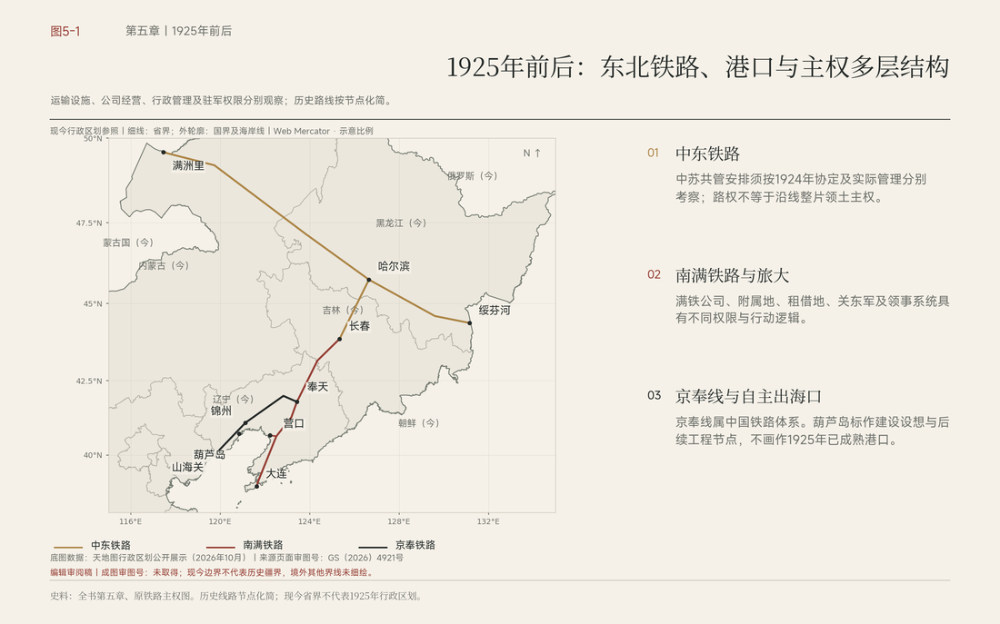
图5-1 1925年前后：东北铁路、港口与主权多层结构 中东、南满及京奉各线与港口构成多层交通及权利结构；葫芦岛仅为建设设想及后续工程节点。
资料来源：前期东北铁路图；本书第五章；底图：天地图公开展示（来源页审图号 GS（2026）4921号，非本图审图号）
三条干线的权利结构大不一样。南满铁路归日本满铁经营，连着长春、沈阳、大连，铁路、附属地、港口、企业是一套；中东铁路横贯北满，有俄国的历史权益和复杂的沿线管理；京奉铁路挂中国国有的名义，背后有英款和财务约束。三条线在地图上都是铁路，在权利上各是一套，谁也代表不了谁。
满铁的本事，不在一条线，而在一整套。铁路运货，港口装卸，附属地提供仓储、企业和市政，洋行和保险接上海外市场，商人只要把货交给它，剩下的环节都能接上。混保运输这类办法，降低了货主的风险，也让大连方向的吸引力更强。中国商人用满铁，是因为它好用；日本用满铁，是因为好用之外还有政治。
日本在东北的机构，也不是一个声音。1919年以前，关东都督府管租借地的军政；1919年改制以后，关东厅管民政，关东军管军事，满铁管企业和铁路，外务省管外交和条约。它们都靠着日本在东北的特殊权益吃饭，具体办事时各有各的算盘。写东北经济，要把满铁的经营和军方的行动分开看，也要看清两者都站在不平等条约和侵略权益的地基上。
中东铁路那边，1917年俄国革命以后就乱了。旧俄的管理人员、不同的政治力量、中国地方当局、北京政府，围着铁路的秩序和控制权来回拉扯。中国方面加强沿线的治安和主权维护，可旧合同、旧人员、现实力量都还在，管理不是一天能换过来的。苏联成立以后，中苏之间接着谈，1924年前后有了新的安排，合办的名义、实际的管理、历史的权益，还得一项一项抠。
中国自己的铁路，名堂更多。京奉线是东北进关的主通道，国有名义，英款背景，张作霖用铁路得跟交通部、路局商量；吉长线挂中国的名义，实际有委托满铁经营的安排；四洮线借日款，利息、工程、器材、管理都带着条件；还有些官商民合办的线路，靠地方资本和货源撑着。名义归谁、借款是谁的、经营权在谁手里，是三件事，不能看名字下判断。
葫芦岛的港口计划，是这时期中国方面争出海口的一次尝试。1919年到1922年，测量、预算、招标都做了，赶上直奉战争和资金紧张，工程停在那里。1930年才重新签约开工。1924年以前，东北没有形成一个不依赖大连的自主出海口，出口还是走大连、营口这些老口岸。港口这件事，最能说明“修了铁路不等于争到主权”：路修得再长，货最后还是得从别人的港口出海。
第一次直奉战争以后，奉系开始把一条条单线连成路网。奉海铁路规划从奉天往海龙方向，1925年动工，修了好几年才通车；打通、洮昂这些线路也在筹划，目标是连接辽西、内蒙古东部和吉黑内陆，给农产品、移民和军队多一条通道。这些工程真正见效要到1924年以后，这里只能记下它们的开头。
铁路修起来，货就跟着来。东北的大豆，从农户到集市，从粮贩到粮栈，从粮栈到油坊或车站，再经铁路到口岸，最后由洋行装船出海。豆油、豆饼各有各的市场，豆饼主要销日本，豆油销路更宽。这条链子把东北的农业和世界市场连在一起，也把运费、仓储、加工、金融的利润一层层分走。农民拿到的是收购价，口岸卖出的是出口价，中间的差价，就是这条链子的成本与利润。
1919年的海关贸易册里，东北的黄豆占全国出口的九成四，豆油占八成八，豆饼占九成八。这三个数字说明东北在全国豆类出口里的分量，说明不了农民得了多少、省库收了多少。出口值只是口岸的交易额，从口岸往回收，还有税、费、运费、利息和商人的利润。把出口值当成东北的财富，是把账算反了。
把时间拉长看，东北在全国出口里的份额一直在往上走。1913年，东北的出口大约占东北与关内合计出口的六分之一；到1929年、1930年，这个份额到了三成上下。表5-1的数字来自海关统计的比较研究，能看出东北经济地位的上升，也能看出它对外部市场的依赖。份额越高，越怕外面的市场变天。
表5-1 东北与关内的出口份额（1913、1929、1930）
| 年份 | 东北出口（百万海关两） | 关内出口（百万海关两） | 东北占二者合计出口 |
|---|---|---|---|
| 1913 | 67.609 | 335.697 | 16.76% |
| 1929 | 328.574 | 687.114 | 32.35% |
| 1930 | 288.673 | 606.171 | 32.26% |
资料来源：据 本项目专题研究五《人口、经济与工业能力比较》《人口、经济与工业能力比较》核查表；原表为海关统计比较，详见该专题来源说明。
路和港的成绩，是真成绩：铁路里程增加，货流扩大，城镇兴起，大豆出口在全国占了头一份。路的软肋也是真软肋：干线在外国手里，港口在别人手里，联运和结算受制于人，军事一急，铁路先运兵。建设与依赖，在这几十年里一直拧在一起。
自建铁路修起来，接轨和联运又成问题。新线若接不上京奉、接不进关内的路网，货还是要走满铁、走大连；接上了，车辆、调度、结算又得跟各方谈。铁路不是修一条线就完事，是一张网、一套制度。奉系在这上面投了钱、投了人，效果要到1930年代才看得清楚。
葫芦岛港的选址，是想给东北找一个不经过大连的出海口。港口修成，京奉线以西的货物可以就近下海，不必绕道辽东半岛；港口修不成，所有的设想都停在纸上。1919年到1922年的筹备，测量、预算、招标都做了，最后败在战争和钱上。一个大工程，最怕的就是政治不稳、财政不继，葫芦岛是个例子。
大豆这条链子，利润分得很不均。农民卖豆，看的是粮贩的收购价；粮贩、粮栈、油坊、铁路、港口、洋行，每一层都要加价、都要赚钱。农民离市场最远，议价能力最弱，遇到丰年，豆多价贱，反而吃亏。出口值年年涨，农民的口袋未必跟着涨。写东北经济，不能只看口岸的数字，得看钱在链条上怎么分。
满铁的运价和车辆分配，对中国商人的影响很直接。运价高，货就走不起；车辆少，货就压站；联运不顺，货就误期。中国商人没有别的选择，只能接受满铁的规矩。自建铁路修起来，是想给商人多一个选择，可新线短、车辆少、接轨难，短期内争不过满铁。运输上的竞争，拼的不只是里程，还有整套服务。
大豆的收购有很强的季节性。秋天豆子下来，粮栈、油坊、洋行都要收，现金需求一下子紧起来；官银号和钱庄放款，商人借钱收豆，等卖了豆再还。收豆的季节，也是金融最紧的季节：票子不够，豆价就压；票子毛了，农民就吃亏。铁路的运力也紧，车皮不够，豆子压在站上，商人的资金就转不动。农业、金融、运输，三条线在秋天一起绷紧。
没有自己的港口，铁路的自主就要打折扣。货修到海边，出海的船、码头、仓储、保险还在别人手里，等于脖子被人掐着一半。葫芦岛的意义在这里：它不只是一座港，是一条从东北内陆直通海外的自主通道。1924年以前这条通道没有打通，东北的出口只能继续仰仗大连、营口，铁路修得再多，出海口还是别人家的。交通主权这四个字，落到地图上，就是港口和航线。
大豆的销路，很大一部分在日本。豆饼是日本农田的肥料，豆油和豆子也进了日本的工业和食用市场。日本需求旺，东北的豆子就好卖；日本需求一变，东北的豆价就跟着晃。中国商人在这条链上赚的是运输、加工和买卖的钱，定价权和需求端却不在自己手里。东北的大豆经济越发达，和日本市场的绑定越深，九一八以后日本能迅速接管东北的豆业，根子也在这里。
港口和铁路的关系，说到底是一整套物流的事。货从车站到码头，要装卸、要仓储、要报关、要保险，缺一样就走不畅。葫芦岛就算修了码头，没有铁路支线、没有仓储、没有船期，货还是不走。大连的优势就在这里：铁路、码头、仓库、洋行、保险、船期，全都配套。新港口要跟它争，得把整套东西都建起来，这不是几年能办成的事。自主的路和港，拼的是一整套能力。
满铁在东北的特权，不只在铁路。附属地上有市政、有警察、有税收、有学校，中国的省县政府在那里说不上话。铁路运价、车辆分配、仓储费用，也由满铁定。中国商人用满铁，得按它的规矩来；中国官方向满铁交涉，得看它的脸色。铁路是经济的动脉，可这条动脉的开关在别人手里，这就是东北经济的实情。
中东铁路的故事更曲折。俄国革命以后，旧俄势力、白俄、中国地方当局、北京政府、后来的苏联，都在这条线上有份。中国方面收回了一些权益，加强了沿线的护路和行政，可铁路的管理、合同、人员还牵着旧账。1924年中苏谈判，谈出了一个合办的名义，实际管理和历史权益还得慢慢理。张作霖对中东路的态度，是既要主权、又要秩序，既防苏联、又得跟苏联做生意。
自建铁路的意义，不只在经济。奉海线往吉林方向修，打通线往辽西、内蒙古东部修，洮昂线往北修，修成以后，奉天到吉黑、奉天到关内的通道就多了一条，军队调动、粮秣运输、移民迁入都方便。铁路选线，军人是参与意见的；铁路修成，军运是优先的。建设与军事，在这件事上分不开。
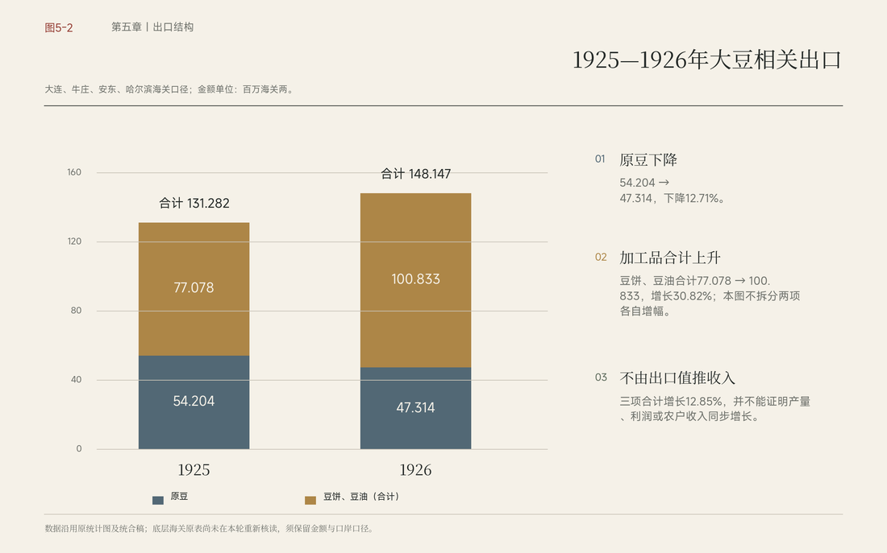
图5-2 1925—1926年大豆相关出口 四口岸原豆出口值下降，豆饼与豆油合计上升，三项合计增长12.85%；出口值不等于产量或农户收益。
资料来源：海关统计研究、本书第五章相关数值；底层海关原表本轮未重核。
东北的开发，说到底是人走出来的。关内山东、直隶、河南的农民，遇到灾年、地少、捐重，就往关外走；东北有荒地、有铁路工地、有矿山和城镇，能挣一口饭吃。走的路线有几条：从山东半岛渡海到大连、营口，从直隶出山海关走陆路，再从口岸和车站坐火车往北往东。路通了，人来得更快。
移民不是政府一招就来。招垦的告示是一回事，真正让人动身的是家乡的日子过不下去、东北有活干、有同乡接应。到了东北，先在车站、码头、城镇落脚，找同乡、找工头、找粮栈，再往垦区、矿山、工地去。有人春来秋返，有人留下来租地、置产、成家。人口流动靠的是同乡网络和招工信息，不是某一条政策。
人来了，地就开出来。东北的荒地多，垦殖的回报比关内高，移民愿意往北走；开出来的地种上大豆、高粱、谷子，粮食和豆子又能卖钱。农业的商品化，和移民的迁入是一件事的两面：人多了，地多了，货运量大了，铁路和口岸才忙得起来。
1923年，关内移入东北的约四十三万四千人，返籍的占去大半；1924年，移入约四十九万二千人，返籍的少了一些，留下的多了。这几个数字说明两件事：东北确实在吸人，也留不住所有人。来的人多，走的人也多，留下的那部分，才慢慢变成东北的居民。单拿移入数当新增人口，会把账算多。
移民的来去，跟着农时和工价走。春天播种、夏天锄草、秋天收割，需要人手；铁路工地、矿山、码头，也按季节招工。活多、价高，人就往东北来；活少、价低，人就往回走。遇到灾年，来的更多；遇到东北收成不好、工钱下降，回去的也多。人口流动像潮水，涨落跟着生计，不跟着政策。
返籍的人，不都是失败者。有人挣了钱回家置地、盖房、娶亲；有人把东北当成季节性的工地，农闲出来、农忙回去；有人在东北没找到活，只好回去。返籍的人带回钱、带回消息、带回经验，下一年再出来的人，就靠这些消息决定去哪里、做什么。移民网络，就是这样一年一年织起来的。
留下来的人，散在各行各业。垦殖的最多，租地、当佃户、做雇工，先站住脚，再图发展；铁路工地要土工、石工、搬运，通车后要养路、机务、装卸；矿山、油坊、纱厂、港口码头的活，按季节、按行情招人。还有挑担的、拉车的、开小铺的、做帮佣的。这些活在正式名册上往往查不到，却是城市和工矿能不能转起来的关键。
城市在这股人流里长起来。奉天是军政、金融、工业和交通的中心；大连、营口靠口岸和海运；哈尔滨靠中东路和北满的商业；铁路沿线的车站城镇，大多以粮栈和农产品集散起家。城市有活路，也有难处：住房挤，卫生差，工钱不稳，治安靠警察和保甲。移民给城市添了人气，也添了管理上的麻烦。
城市的人口，也跟着涨。奉天、大连、哈尔滨、营口这些城市，人口一年年往上加，街市、工厂、码头、铁路站场都在扩。城市大了，管理的事就多：警察、税收、卫生、消防、救济，样样要人、要钱。奉系的地方治理能力，在这些事上经了考验，也露了短处。
城市化带来的是机会，也是难题。工厂、码头、铁路要人，城市就吸人；人一多，住房、饮水、卫生、治安都跟不上。工人住在工棚、窝棚、大杂院里，冬天冷、夏天热，病了看不起医生，孩子上不起学。商会和同乡组织做点救济，政府也设救济机关，杯水车薪。城市的繁华和城市的贫困，在东北一起长出来。
到1930年，东北三省的人口已经在两千六百万到三千万之间，不同的统计口径差着几百万。表5-2把几种见证并列，为的是说明一件事：人口规模很大，但“精确人口”是个查不清的数。研究东北的经济和财政，得承认这个模糊，不能拿一个数当铁板钉钉。
表5-2 1930年东北三省人口的不同见证
| 统计来源 | 辽吉黑三省人口 | 计算或原表性质 | 相当于日本本土人口 |
|---|---|---|---|
| 内政部数，经赵冈转引 | 2,652.3万人 | 辽、吉、黑三项相加，热河另计 | 41.2% |
| 省级统计数，经赵冈转引 | 2,736.2万人 | 同上 | 42.5% |
| 《Manchuria Year Book 1932–33》 | 2,957.5万人 | 年鉴估计 | 45.9% |
| 赵冈所引另一满铁系列 | 2,996.1万人 | 学术论文转引原统计 | 46.5% |
| 日本本土（参照） | 6,445.0万人 | 1930年10月国势调查 | 100% |
资料来源：据 本项目专题研究五《人口、经济与工业能力比较》《人口、经济与工业能力比较》核查表；原始出处与口径见该专题来源说明。
人和地、人和税、人和兵的关系，是后来才慢慢清楚的。移民多了，荒地变熟地，田赋的税基才厚；城镇多了，工商税和交易税才有来源；青壮年多了，招兵才有对象。可这三条转化，每一条都要经过登记、清丈、编制这些麻烦事，不会自动发生。
移民的过程，比数字琐碎得多。一个山东农民，先托同乡在东北找个落脚的地方，再凑路费、搭船、坐火车；到了地方，先住工棚或同乡的窝棚，找个短工，摸清行情，再决定是留下还是回去。留在东北的，租地要押租，买地要契约，做工要工钱，处处得有熟人介绍。同乡会、会馆、保人，这些旧关系，在新地方照样管用。
城市里的移民，日子并不好过。住房是挤的，冬天取暖是难的，生病了看不起医生，孩子上学要钱。商会和同乡组织会做点救济，慈善机关偶尔施粥，杯水车薪。移民给城市带来劳动力和消费，也带来治安、卫生和救济的压力。地方政府的行政能力，在这股人流面前，显得不够用。
移民与原籍的联系，也没有断。挣了钱往家里寄，逢年过节往回走，家里遭灾再出来。这种来来往往，让东北和关内的人、钱、消息连在一起。东北的经济区，不只是铁路和港口连起来的，也是这些人的脚步走出来的。
移民带来的不只是劳动力，还有一整套社会关系。山东人、河北人、河南人各有各的同乡组织、会馆、帮口；方言、饮食、婚丧习俗跟着人走，在东北的城市和乡村落地。新移民和本地人之间有合作，也有摩擦：争地、争水、争工，闹到县衙和商会去。东北社会在这几十年里被重新搅了一遍，奉系统治的社会基础，就在这种搅动里慢慢形成。
东北的经济区，是在铁路、口岸、移民和商品的互动里长出来的。铁路把内陆和口岸连起来，大豆和粮食把农户和市场连起来，移民把劳动力和土地连起来，城镇把商业和金融连起来。这几条线越连越紧，东北就从一个地理名词变成了一个有内部联系的经济区域。
军队是这套经济里最大的买家之一。1918年奉军入关，1920年直皖战争，1922年直奉战争，铁路一次次被用来运兵、运械、运粮。军运一紧，商运就让路；军队截用铁路收入，铁路的维修和偿债就受影响；军队征用车辆、夫役，沿线的商户和农户就得承担。铁路是经济的动脉，也是战争的工具，两条用处经常打架。
军队对经济的拉动，也是真的。兵工厂要煤、要铁、要机器，被服厂要布、要棉花，粮秣厂要粮食、要运输，这些需求养活了工厂、矿场、商号和工人。军饷发下去，士兵的家属要吃饭、要花销，市面也跟着活。可这种拉动，靠的是财政支出和战争需求，一旦仗打不下去，需求就断，工厂和市面跟着冷。
经济区的资源，转成军力要经过财政、工业、交通几道关口。东北的资源不算少，粮、煤、铁、大豆都有，可转化成枪炮、军饷、运输能力，需要工厂、银行、铁路和一套行政系统。奉系在这几道关口上都做了事，也都做得不够。资源大、转化慢，是理解奉系兴衰的一个关键。
财政与军事的接口，在军饷、军械和军需上。税收到省库，省库拨军费，军费买军械、发军饷、办军需，军方再通过铁路和兵站把东西送到前线。这个循环里，财政是被动的一方：收入好的年景，军费先涨；收入差的年景，军费也不肯降。王永江能把账做平，却管不住这个循环的方向。
人口转成兵籍的证据，现有材料还不够。移民进东北，不等于进了军队；招兵要登记、体检、编制、发饷，还要看主官的关系。1923、1924年的移民数字，和奉军的兵额、籍贯册对不上号。没有募兵登记和部队名册，就不能说奉军的兵主要来自关内移民。这个缺口，得留给人去查档案。
军运与商运争路，是东北铁路的老问题。军队要车皮，商货就得等；军队要优先，农产品就在站台上堆着；军队截用运价收入，铁路的维修和还债就往后拖。1922年、1924年两次大战，京奉线上军车一列接一列，商货让路，口岸的豆子运不出去，商人急得跳脚。战争的成本，就这样一层层转到商民身上。
铁路收入被军队截用，养护和偿债就跟着出问题。铁路要修机车、换枕木、发员工薪水，钱被抽走，设备就旧，事故就多。铁路员工的日子也不好过，欠薪、裁员、军管，样样都有。交通建设要长期投入，军事调用是短期行为，两者一冲突，吃亏的是铁路本身。奉系在这上面吃过的亏，后来还会再吃。
东北经济区与日本经济的关系，也要看清楚。满铁、大连港、南满的煤矿和工厂，都是日本资本和日本权益的一部分；东北的豆子、豆饼、煤、铁，很大一部分流向日本市场。日本从东北拿资源、卖工业品、收运费和利润，东北的经济越发展，和日本市场的联系越紧。这种联系，平时是贸易，战时就是命脉。九一八以后日本能迅速控制东北经济，根子在这里。
东北经济区的特点，可以归成几句：内部联系强了，外部依赖也重了；铁路修得多了，干线和港口还在别人手里；贸易做得大了，价格和销路受制于外国市场；人口多了，税基和兵源却要一层层转化。建设是真的，依赖也是真的。
钱和路，最后养了谁。养出了奉系的军队、兵工厂和一次次入关的本钱，也养出了外国资本在东北的根基和战争对地方社会的消耗。奉天的财政能力、东北的铁路网和大豆贸易，都是真本事；可这些本事没有变成一套公共的财政、一套自主的交通，也没有让东北的老百姓在决策里有一席之地。第六章要讲的整军和两次直奉战争，花的就是这里的钱，走的就是这里的路。
1922年5月，天津以西的落垡。奉军总司令部里，电报一封接一封。西路长辛店、卢沟桥那边，吴佩孚的兵绕到了奉军背后，张景惠的第十六师停了火，有的说倒戈，有的说溃散，消息乱成一团。张作霖在中军帐里骂人，骂完了，还得下总退却令。十几万奉军往山海关方向收，能收住多少，他心里没底。
两个月前，他还觉得这仗能打赢。奉军十二万，直军十万上下，枪是秦皇岛截来的好枪，兵是东北练出来的兵；北京政府、内阁、地盘，谁分多少，得看战场上的输赢。结果输得很快，快到来不及弄明白为什么。
仗打输了，张作霖没有认命。他退回关外，关起门来整军。两年之后，奉军再入关，在山海关、九门口跟直军硬碰硬，最后靠冯玉祥的北京政变翻了盘。两次直奉战争，一次大败，一次大胜，中间隔着的就是那两年。
两年时间，奉军到底学会了什么？这个问题，比“奉军是不是变强了”更值得追问。学会了，学会多少，学会的东西能不能推广到全军，才是真问题。
1922年4月的直奉战争，起因不复杂：北京政府谁说了算，内阁怎么组，地盘怎么分。直系和奉系在1920年一起打倒了皖系，胜利的果实没分匀，两年后就翻了脸。张作霖自任总司令，司令部设在落垡，部队分东西两路，沿津浦、京汉两条铁路展开；直军以保定为大本营，按西、中、东三路迎上来。
兵力的数字，各家的说法不太一样。常见口径是奉军十二万、直军十万，也有研究把奉军估到七八万。数字差在统计时点、算不算留守和后勤，不必太较真。大致说，双方投入的规模相近，奉军在装备上还占点便宜。
4月28日到30日，西路的仗先在长辛店打起来，随后蔓延到琉璃河、良乡。直军攻长辛店，奉军增援，把阵地夺回来；奉军往南追，又在琉璃河挨了反击。双方围着铁路和附近高地来回拉锯，阵地几次易手。这段说明奉军能组织局部增援和火力抵抗，也说明它的推进始终靠着一条窄窄的交通走廊，侧后一有情况，前面就站不住。
东路和中路的仗，跟着西路联动。固安、永清方向，奉军要配合京汉路主力，又要保住天津、军粮城的后方；马厂一线，奉军在大城、任丘方向进攻，碰上直军增援，又退到白洋桥、姚马渡、马厂附近。5月1日到3日，直军向马厂、青县推进，奉军退向静海、杨柳青。三条线通过铁路和指挥关系连在一起，一处败讯，另外两处就慌。
真正的转折在西路。吴佩孚相持了几天，改打侧后：正面继续攻长辛店，另派一支部队绕经门头沟，插向卢沟桥和奉军后方。5月3日以后，奉军前后受敌，后援和退路同时被压。张景惠的第十六师停了火，有的材料说倒向直方，有的说只是溃散；张景惠离开前线，长辛店、卢沟桥相继失守。关于第十六师当天的命令和接触，各种战史的说法有出入，能确认的是：西路的指挥和协同垮了，垮了以后，原来的番号和兵力都救不回来。
西路一垮，固安和津浦方向跟着退。中路往天津、落垡收，东路在马厂、静海也站不住。张作霖下了总退却令，关内部队分别往滦州、山海关方向撤。这个顺序要说清楚：先是被抄了后路，再是部队停火、倒向，然后是指挥失灵、全线退却，一件事推着另一件事走。把它写成直军正面击溃了奉军，就把过程说简单了。
退却里也有打得有样的部队。张学良、郭松龄带着部队在后卫和收容的位置上，往山海关方向有序撤退，在关西组织防御，让一部分溃散的部队重新聚拢。后出的研究说郭松龄部“撤退有序，在山海关扼守数日”，可以用来作个旁证；具体的阵地和兵力，还得靠作战记录去核。全军失败和个别部队保持秩序，这两件事同时成立。
5月上旬，张作霖带着残部出关。北京政府在5月10日免了他的本兼各职，东三省却还认他这个实际首领。山海关一带还有后卫战斗和外交交涉，铁路安全、外国势力范围、直军要不要出关，都进了停战条件。双方的停战谈判拖到6月，中国新闻网所辑的战史记为6月17日签约、19日起撤军，央视的战史条目记6月15日停战。日期有异说，过程是清楚的：以山海关一带为界，各自撤军。
直军那边，吴佩孚的用兵确实高出一筹。他打过仗，会看地形，会用侧后迂回，会挑奉军指挥最乱的地方下手。奉军在情报上也不如人，直军的调动、部署、意图，奉军知道得慢，知道了也判断不准。打仗打的是信息，信息不灵，兵再多也白搭。1922年的奉军，输在信息、指挥和协同上，输得不算冤。
张作霖战后总结，说奉军“没准备好”。这句话半真半假。真的一面是，奉军的编制、训练、后勤确实没准备好打大仗；假的一面是，他发动战争的时候，觉得自己准备好了。一个军阀的判断失误，往往不是不知道自己的短处，是把自己的短处看得太轻，把对手的短处看得太重。1922年的教训，他记住了多少，1924年就能看出来。
奉军的装备，不少是从日本买的、从中央截的，型号杂，弹药杂，维修也杂。打仗的时候，弹药供应跟不上，坏了枪炮修不了，部队的火力就打折扣。奉天有个军械厂，能修能造一些，规模不大，离自给差得远。这个问题，张作霖战后才下决心解决，兵工厂的扩建，就是从这时候开始的。
这仗败在哪里，说法很多。有人怪第十六师倒戈，有人怪张作霖指挥外行，有人怪奉军装备虽好、训练不行。都有一部分道理，都不够。西路的崩溃，暴露的是指挥、通信、后勤、部队忠诚几件事同时出问题：总部不知道前线实况，前线不知道友军状态，退却没有人统一安排，部队一遇变局就各自打算。这样的军队，打顺风仗可以，遇到侧后一击就散。
败仗也不全是坏事。奉军保住了东北，山海关成了分界线，张作霖退回关外，反而有了一个完整的后方可以重整。他后来常拿这仗说事，说奉军输在没准备好，要回去好好练。这话有几分真心，有几分是给自己找台阶，旁人看不透。能看透的是：他确实开始动手了。
第一次直奉战争打完，北京落到了直系手里。张作霖被免了职，关内的地盘丢了，奉系在政治上退了一大步。可他没有垮：东北的军队还在，财政还在，人心也没散。直系没有能力打进关外，奉系也没有能力马上打回去，两边隔着山海关对峙。这种局面，给了张作霖整军的时间，也给了直系内斗的空间。
1922年7月下旬，东三省陆军整理处成立。这个机关管编制、人事、教育和校阅，把整军从各主官临时张罗，变成了有衙门、有章程的经常工作。整理处成立的具体日期，后出的回忆有22日、24日两种说法，主官的职名也不完全一致，正文取“7月下旬”这个共同点。
整理处做的第一件事，是重编部队。打仗受损的第三旅、第八旅，重新编成第二旅、第六旅，交给张学良、郭松龄去带，作为整军的示范。张学良是张作霖的儿子，郭松龄是讲武堂出身、又读过陆军大学的军官，两人搭班子，练得严、管得细，部队的样子跟老奉军不太一样。
编制改起来容易，指挥关系理顺难。老奉军的师、旅、混成旅和各地部队并存，主官的个人经历对部队影响很大，谁带的兵听谁的，番号只是名义。整理处想把步、骑、炮、工、辎重纳入清楚的序列，让总部能按任务调兵，不必每次临时拼凑。这个方向是对的，做起来慢，因为每一支老部队背后都有一串人事关系。
军官教育是另一头。东三省陆军讲武堂在1919年复办，到1920年代成了奉军中下级军官的重要来源。讲武堂教战术、筑城、兵器、地形，也管纪律：作息、出入、着装、营房秩序，都有规矩；教材、地图、报告纸要印，外籍教官的稿纸也留着。这些琐碎的东西，看着不像军事，其实是把军官从“跟着主官打出来”变成“学过再带兵”的关键。
比讲武堂更高一层，是日本陆军士官学校和北京陆军大学的毕业生。杨宇霆、韩麟春、姜登选这些人，是士官学校出身；郭松龄读过陆军大学；张学良跟讲武堂的关系很深。不同来源的军官，带着不同的军学知识和人际关系，进了奉军的关键岗位。1922年战败以后，第一代将领退到次要位置，这批人往前站了一步。
新人上来，不等于旧人下去。张作相、吴俊升这些老将，还在吉黑和总预备队里握着实际兵权；张宗昌这类新附部队，又在战争里扩张。所谓“新派”“旧派”，只能帮着认人，不能代替对具体命令、部队和职位的分析。杨宇霆和郭松龄都受过现代军事教育，两人在战略、职权和人事上照样斗得厉害。
整军也有硬的一面。战败要追责，部分指挥官被撤职、惩处，具体的军法会审和处决，各种材料的说法差别很大，没有同期的命令互证，不好写死。能确认的是：张作霖把战败的责任变成了调整高级职位的政治机会，让原先靠资历和共同经历的权力结构，往专业能力那边让了一步。让多少，还是他说了算。
战败之后，张作霖做的第一件事是稳住队伍。溃兵要收容，伤兵要医治，失散的部队要找回，军官要安抚，闹事的要处置。这些事做完，才轮到整军。整军的第一刀砍在编制和人事上，第二刀砍在训练和教育上。他下手不算慢，1922年夏天就把整理处立起来了。对一个刚打了大败仗的军阀来说，这个反应速度，说明他确实想翻本。
整军的第一步，先动人事。打了败仗的将领要撤换，能打的要提拔，不服气的要安抚。张作霖把几个老将挪到边上，把张学良、郭松龄、姜登选、韩麟春这批人往前推。人事一动，各方的利益跟着动，有人高兴，有人骂娘。张作霖顶着骂声把事办了，因为他知道，不换人，军队就还是老样子。
老奉军的兵，多是招募来的农民、收编来的队勇和土匪，当兵为吃粮，打仗为活命。这样的兵，顺风时能冲，逆风时容易散。新式训练想把这种兵变成有纪律、有技术的兵，靠的是操练、军饷、军官和军法。操练能练动作，军饷能稳人心，军官能带头，军法能立规矩。四样缺一样，兵就练不成。奉军在这四样上都做了，做得够不够，1924年的仗给了答案。
示范旅的训练，是整军里最见真章的一块。张学良、郭松龄把第二旅、第六旅抓在手里，从出操、射击、行军、野营抓起，军官要跟士兵一起练，训练不合格的淘汰，军纪不好的惩处。部队的样子，跟老奉军那些吃空额、抽大烟、抢老百姓的队伍不一样。后来有人把这两个旅说成奉军的“模范旅”，说法有点夸大，但它们的训练和管理确实比别的部队严。
示范旅的经验，往全军推就难了。别的旅有别的旅的主官，主官有主官的利益，谁也不想让整理处把手伸进自己的部队。整理处能管编制、管校阅、管教育，管不了每个主官的心思。所以1924年的奉军，是几支练得好的部队加一大群练得一般的部队，打起仗来，强的强，弱的弱。这种不均衡，在九门口、山海关的阵地上一目了然。
山海关分界，对奉系是坏事，也是好事。坏在丢了关内的政治位置，脸面上过不去；好在东北成了一个完整的后方，铁路、兵工、财政、教育都能在关外集中办。张作霖退回关外，反而有了一个安稳的地方重整旗鼓。他后来能再入关，靠的就是这个后方。败仗把奉系打回了东北，也把奉系逼着去经营东北。
讲到整军，还得说一句钱。练兵、办学、扩厂、买机器，样样要钱。钱从奉天的税、官银号的垫款、吉黑的协济里来。整军的账，最后还是要落到财政上。第五章说的财政整顿，在这里变成了军费；军费变成了枪炮和训练；训练出来的兵，又去打更大的仗。这个循环，是奉系这几年最真实的一条线。
讲武堂的课程，是照着打现代战争的需要排的。战术、兵器、筑城、地形、交通、卫生，一门一门教；教材要印，地图要画，报告要写，学员在课堂上学完了，还要下部队实习。学校管得严，出门要请假，吸烟要罚，擅自离营要开除。这些规矩看着琐碎，养的是军官的时间观念和纪律习惯。旧军队的军官靠资历和勇猛带兵，新军官还得会看地图、会算弹药、会写报告。
军官的来源一杂，人事就复杂。士官学校的、陆大的、讲武堂的、行伍出身的，各有各的圈子，各有各的靠山。杨宇霆把韩麟春、姜登选、于珍、何柱国、姬翼翘这些人引到重要位置，靠的是同窗和共事的关系；郭松龄跟张学良搭班子，靠的是训练和作战的信任。这些网络能办事，也能斗气。1924年打仗时，炮兵人事的争执差点误了调动，就是网络斗气的后果。
讲武堂的毕业生，一批一批进部队，带兵的方式跟老军官不一样。他们讲操典、讲协同、讲火力，也讲军纪；老军官讲资历、讲情面、讲谁跟谁有交情。两种人凑在一起，磨合得好是互补，磨合不好就互相看不起。奉军的战斗力，就夹在这两种人之间，好的部队特别好，差的部队特别差。
讲武堂的教学，还连着部队的训练。学员毕业下部队，要把课堂上的东西教给士兵：射击怎么瞄准，散兵怎么利用地形，工事怎么挖，夜行军怎么走。教得好不好，要看部队的操练和演习。奉军后来搞校阅、搞演习，就是想把这些东西固定下来。教育不是万能的，没有教育是万万不能的，旧军队的毛病，很多就出在没人教、没人管上。
整军的成绩，要放在战场上看，也要放在代价上看。兵站、电台、兵工厂、被服厂、粮秣厂，都是钱堆出来的；钱从东北的税收、银行、商民身上来。军队越强，财政压力越大；财政压力越大，政府越要向商民伸手。强军的账，最后是社会在付。这个道理，1924年的山海关战场上看得见，战后的北京政坛上也看得见。
所以，1922年以后的整军，是一场真的学习，也是一场有限的学习。真的地方在于：编制、教育、人事、训练都动了，部队的样子确实变了。有限的地方在于：学的是怎么打仗，不是怎么让军队服从制度；改的是技术和层级，不是最高权力的归属。张作霖要的是一支更能打的奉军，不是一支受约束的奉军。
1922年以后的奉军，最实在的变化不在阅兵场上，在后勤线上。此前奉军的铁路军运比较粗放，部队要走了临时找车，粮弹要用了临时去征，前线一乱，后方也跟着乱。1922年以后，奉天建起了三省集中后勤，把铁路运输和兵站管到一处：车皮怎么排，仓库怎么设，物资怎么从后方送到前线，由一套人马统一调度。到1924年山海关作战，奉军能经铁路持续获得补给和增援，直军那边却常常断粮断弹。后勤这块，是整军里最拿得出手的成绩。
兵站是后勤的手脚。铁路把物资运到沿线大站，兵站负责装卸、仓储、保管和前送，前线要什么、有多少、什么时候到，都得有账。兵站办得好，部队在阵地上就心里有底；办得不好，物资堆在车站，前线照样挨饿。奉军1924年能在山海关正面硬顶，兵站的作用不能小看。当然，兵站也有管不到的地方：路断了、车没了、部队位置变了，账就对不上。
兵站的弱点，也在1924年露出来。部队位置一变，兵站的路线就跟不上；仗打得急，库存和消耗对不上；铁路一断，前送就停。奉军的后勤比1922年强，离“什么时候要什么就有什么”还差得远。材料能证明的是持续补给和增援的存在，证明不了每一批物资都准时到、每一支部队都吃饱。这个分寸，写史的人得守住。
后勤和铁路是绑在一起的。京奉线是奉军入关的主通道，沈阳、锦州、山海关、唐山、天津这些站点，是运兵的口子，也是物资的集散地。集中后勤把铁路调度和兵站管理收到一处，车皮先运兵还是先运粮，仓库设在哪个站，前送用火车还是大车，都由一套人马安排。这套办法，在1924年山海关作战里用上了；用到什么程度，材料还说不了太细，但持续补给和增援是看得见的。
电台是另一条线。1922年起，奉天开始自建无线电网络，逐步减少对日本在东北电台的依赖。电台架起来只是第一步，报务员、密码、译电、参谋判断、命令下达，每一环都要人。现有材料还不足以把1924年每台电台的位置、报量和命令传递时间说清楚，所以对电台的作用只能说到“通信有了改善，战术贡献待逐电核验”。有一条例子可以看：1924年奉方得到直军可能从海上登陆的情报，地点不明，统帅部为预备队守后方还是投入九门口争了起来，最后张作霖决定把预备队投向九门口。情报来自日方渠道，未经充分确认，说明自建电台并没有解决情报来源的问题。
兵工厂是整军的硬家底。东三省兵工厂在1922年春由奉天军械厂扩大改组，战后继续添建无烟药、造枪、造炮、炮弹各厂；1923年又增建枪弹、炮弹厂，补机器、动力和材料。日方1924年9月的调查说，兵工厂每月能造德式山炮五到六门，步枪和枪弹按日计，炮弹也有日产量。数字的口径要小心：月产和日产不能相加，设计能力、实际完成、前线领用是三笔账。能确认的是，奉军的枪炮弹药，已经有一部分能自己造。
军工的原料，很大一部分靠日本。造枪要钢，造炮要钢，造弹药要化工原料，东北自己有煤有铁，可炼钢、化工的产能不够，好些材料还得进口。日本是军火的卖家，也是原料的卖家；奉天兵工厂越造越多，对日本的原料依赖也越深。自主制造和外部依赖，在兵工厂里同时存在。这个矛盾，不是奉系一家的问题，是半殖民地工业的通病。
军工和后勤是连着的。枪炮造出来，要配弹药；弹药造出来，要运到前线；运到前线，要有人修枪修炮。奉天的兵工厂能造枪炮弹药，也能修械；兵站管运，军械处管发，部队的军械官管用。这条链子上的每一环，都要人、要账、要规矩。链子一断，前线就打不了。1924年的仗，链子大体是通的，局部断过，断了就靠库存和临时征集补。
迫击炮和步枪，是兵工里跟战术结合最紧的两样。沈阳迫击炮厂生产改良式斯托克斯迫击炮，1924年到1928年初又造了大量80毫米迫击炮和150毫米重迫击炮；后者是1924年以后的累计产量，不能全算进第二次直奉战争。韩麟春参与设计的十三年式步枪，是想给奉军立一个自己的制式，减少对日式枪弹的依赖。制式化能不能见效，要看部队换装、弹药补给、维修零件能不能跟上，光有图纸不行。
被服、粮秣、军医，是把士兵生活纳入组织。奉天被服厂1917年就设了，战后扩充；粮秣厂1922年创办，加工各县征集的物资，生产罐头食品，军需从临时摊派慢慢转向“地方征集—工厂加工—兵站分发”。东北的秋冬作战要冬衣、要耐存的口粮、要稳定的饮水，干粮、面粉、罐头、咸肉、咸鱼、饼干这些品类，都是按这个需要备的。1924年长城沿线能持续驻军，这套体系出了力；具体到每支部队发了多少、什么时候到、有没有冻饿，材料还不够，不能把话说满。
被服、粮秣的供应，一部分靠工厂，一部分靠地方征集。各县出粮、出草、出夫，军队过境要供应，兵站要储备，征集的负担最后还是落在农民身上。1924年秋冬作战，长城沿线的县份负担很重，具体数目没有完整的账。战争的成本，前线流的是血，后方流的是汗，两边都要记。
军医是整军里最薄的一块。1916年总部就有军医部门，战后专业分工有发展，可1924年伤员怎么后送、医院怎么设、防疫怎么做的公开材料很少。伤亡那么大，医疗后送一定是大问题，兵站和铁路很可能承担了一部分，这只能标成待证，不能写成定论。
把工业能力放到更大的尺子上看，奉系的成绩和局限都清楚。到1930年，东北的煤产量大约是日本本土的三成，生铁及铁合金大约是两成，钢还拿不出可比的地区总数；这些数字来自同一套国际汇编和年鉴，地区标签、单位、年份都要按原表看。东北的工业在东北是了不起的，跟日本比还是差着一大截。表6-1、表6-2把这两层放在一起。
表6-1 1930年煤、生铁：东北与日本本土比较
| 指标 | 东北 | 日本本土 | 东北与日本之比 | 主要边界 |
|---|---|---|---|---|
| 煤产量（万吨） | 辽吉黑959.58 | 3,150.48 | 30.46% | 东北年鉴分省数；日本含褐煤，质量与热值未统一 |
| 煤产量（另计热河，万吨） | 1,014.07 | 3,150.48 | 32.19% | 地域敏感性比较，不替换三省主口径 |
| 生铁及铁合金（万吨） | 34.81 | 168.74 | 20.63% | 同一国际汇编表，原单位英吨；地区标签为Manchuria |
| 钢锭及铸钢（万吨） | 本轮未取得可比地区总数 | 232.62 | 不计算 | 不以缺项记0，不把生铁换写成钢 |
资料来源：据 本项目专题研究五《人口、经济与工业能力比较》《人口、经济与工业能力比较》核查表；原始出处与单位换算见该专题来源说明。
表6-2 关键厂矿：建设节点、产能与控制
| 厂矿或系统 | 建设与扩张节点 | 已核生产或设备数据 | 控制与待核事项 |
|---|---|---|---|
| 抚顺煤矿 | 1907年转由满铁经营；1912年第一阶段改造完成 | 1930历年产煤697.7万吨；同页会计年度表686.41万吨 | 满铁主矿，三个数字期间与覆盖不同，不能择大 |
| 东三省兵工厂 | 1922年由奉天军械厂改组，1923年增建枪弹、炮弹厂 | 日方1924年9月调查：月产德式山炮5—6门 | 设计、实产、前线领用分列；原料依赖日本 |
| 奉天纺纱厂 | 1921年筹办，1923年投产 | 官商合资，资本与纱锭数待核 | 官股主导，商股分红与工人条件待查 |
| 奉天粮秣厂 | 1922年创办 | 加工各县征集物资，生产罐头食品 | 1925年日方观察称日产牛肉罐头5,000罐 |
资料来源：据 本项目专题研究五《人口、经济与工业能力比较》核查表与奉系军事、财政史料整理；抚顺数字见该专题来源说明，其余见本书相关章节注。
这几张表说明一件事：奉系的工业能力，放在东北是头一份，放在东亚比还是弱者。仗打起来，靠的是这几年的家底加上日本、欧洲的机器和材料；家底越打越薄，机器越用越旧。1924年的胜利，有一半是靠这些家底撑住的，另一半要看对手和时局。
1924年的第二次直奉战争，是从南边烧到北边的。这年9月，江浙战争先打起来，江苏齐燮元对浙江卢永祥，孙传芳从福建出兵帮齐方；张作霖以援助卢永祥、反对曹锟和吴佩孚为名，动员入关；孙中山在广东部署北伐，想牵制直系的南方力量。反直三角同盟，吵了几年，到这时才动真格。
三方的算盘不一样。孙中山要的是打开南北谈判和国民会议的空间；段祺瑞和皖系要的是恢复政治地位和浙沪地盘；张作霖要的是报1922年的仇、重返北京、扩大奉系影响。合作的方式是互相牵制敌人、交换条件、分配机会，没有统一指挥。联盟的各家，谁也不是谁的下属。
9月中旬，奉军以镇威军的名义展开。动员的口径有十五万、十七万、二十五万几种，直军也有二十万、二十五万的估计，双方合计四十余万，是常见的会战规模说法。数字的差别在留守、热河、吉黑、收编和后勤人员的覆盖，硬算一个精确的对比没有意义。看部署更清楚：奉军第一、第三军指向山海关、九门口；第二军向热河南路的朝阳、凌源推进；骑兵和北路部队往建平、赤峰方向；另设总预备队。直军由吴佩孚任讨逆军总司令，在山海关、热河两个方向迎战。
热河方向先动。9月15日到22日，奉军第二军和北路部队从阜新、通辽方向推进，攻开鲁、朝阳，往凌源发展；骑兵和北路部队向建平、赤峰。9月下旬，朝阳、建平相继易手，凌源、赤峰、隆化方向的战斗继续改变热河南部的控制。热河的进展，让奉军有了较宽的机动作战空间，可以沿平泉、冷口找入关的路；直军也不能只盯着山海关正面。但热河的城镇易手，并没有立刻切断榆关直军的后路，直到10月下旬张宗昌部从冷口进占滦州，侧翼的进展才跟山海关到天津的铁路退路接上。
榆关正面是另一种节奏。9月18日前后双方接触，28日以后战事加剧。奉军第一、第三军向山海关和附近长城阵地进攻，直军凭高地、城墙和既设防御抵抗。奉军能持续组织火力、增援和仰攻，正面却迟迟打不开缺口。到10月上旬，主战场还是高消耗的相持。热河推进得快，榆关打得苦，两个方向的差别，说明奉军的体系能力在机动和补给有利的战场上容易发挥，在坚固正面阵地前得付高代价。
10月7日前后，九门口出了变化。奉军在九门口取得进展，孙旭昌的第十混成旅在战斗中出了力，直军第十三混成旅旅长冯玉荣自杀。奉军随后向石门寨附近高地推进，威胁直军的左侧和后方。九门口一开，山海关正面的僵局就有了松动的可能。
九门口的地形，对攻方不利。山口窄，两侧是山，部队展不开，炮火也不容易发挥；奉军要往里投兵，只能一点一点添，添多了挤在一起，添少了顶不住。杨宇霆担心容不下大部队，不是没有道理。可九门口又是绕向直军侧后的唯一通道，不从这里突破，山海关正面就得硬啃。战争到了这个份上，拼的是谁肯在窄口上填人。
直军的反击也来得快。彭寿莘调兵增援，吴佩孚10月中旬亲赴榆关督战，河南、山西方向的援军陆续投入。直军想把九门口和石门寨夺回来，奉军又增加几个混成旅守突出部。姜登选、韩麟春到前线指挥，第一军的高级军官直接卷进了阵地争夺。这段的战斗，地形利于守方，攻方要反复争夺高地和村落，营连军官伤亡很大，部队增援上去还可能顶不住。后出战史里常见“某团长安伦阵亡”这类记载，具体名单要阵中日志核，但伤亡到了团级指挥层，是可以看出来的。
争论最大的，是总预备队怎么用。日方情报说直军可能征用轮船，从大沽一带向奉军后方登陆，营口、葫芦岛都可能是登陆点，情报没有确定地点。许多将领主张把预备队留在后方，副参谋长傅兴沛等主张投入九门口，杨宇霆担心狭窄的地形容纳不了大部队。张作霖最后决定，由张作相率总预备队增援九门口。这个决定冒了险：登陆情报若是真的，后方就空了；可要不投入，九门口的突出部可能被直军吃掉。他选了眼前更急的一头。事后没有发生大规模登陆，不等于当时的风险不存在。
从统帅部的角度再看一遍九门口的决定：情报说直军可能从海上登陆，地点不明；前线说九门口吃紧，突出部可能守不住；预备队只有一支，投向哪里，哪里就多一分把握，另一头就多一分风险。张作霖选了前线。这个选择对不对，事后看，没有发生大规模登陆，选择是对的；事前看，这是一个在不确定信息下的赌博，赌的是直军没有能力也没有决心在奉军后方登陆。战争里的决策，大多是这样做的，不能拿结果反推当时该不该。
总预备队投入以后，九门口的突出部守住了，山海关正面的压力也分掉一部分。可奉军的伤亡跟着上去了，营连军官消耗很大，补充的兵员训练不足，老兵越打越少。直军那边同样在填人，双方在几个高地上反复争夺，谁也占不到大便宜。仗打到10月下旬，双方都在等对方先垮，或者等战场之外的事情发生。
预备队上去，仗还是没有立刻见分晓。张学良、郭松龄又从山海关方向抽调步炮部队转用于九门口。部队里的炮兵人事争执几乎影响了调动，新军官之间的矛盾，在高压作战里被放大。奉军的组织能力够完成复杂调动，人事关系却始终拖着执行速度和团结。
这阶段的伤亡，各个材料对不上。四川师范大学学报上彭涛、杨天宏的论文，综合散见的报道和战史，估计截至10月24日，各主要战场奉军伤亡约一万九千人，山海关、九门口占了重要部分；论文同时提醒，北洋战争的数据大多不可靠。这个数字是研究者的综合估算，不是奉军总部的决算。它的意义在于纠正“轻易取胜”的叙述：奉军是拿人命堆出来的局部主动。
到这个时候，奉军的后勤优势显出来了。山海关离东北后方近，京奉铁路沿线的车站、仓库能用上，兵工和粮秣的生产中心又不在战火里，奉军能一轮一轮地往前送人、送弹、送粮；直军守着北京政府，财政紧、欠饷多、内部指挥分裂，补给和增援都没那么顺。仗打到拼消耗，后方的组织能力就变成了前线的战斗力。
山海关正面的打法，说到底是拿人和炮去换阵地。奉军有炮，直军也有炮；奉军能增援，直军也能增援。白天打，晚上修工事；今天丢了，明天再夺。这样的仗，拼的是补给和意志，谁的兵先撑不住，谁的阵地先丢。奉军能撑住，靠的是后方一车一车地送；直军撑不住，一半是补给，一半是后方的政治。
10月下旬，战场上的态势是：山海关正面僵着，九门口突出部守着，热河方向已经打开，滦州还没到手，北京的政治悬着。奉军要的是打破僵局，直军要的是撑到援兵到。两边都在等，等对方先出错。冯玉祥的回师，就是这个“错”——对直军是错，对奉军是机会。历史有时候就是这样，战场上的均势，被战场外的一步棋打破。
军运优先，商运遭殃。1924年秋冬，京奉线上的军车一列接一列，商货让路，沿线的粮栈、油坊、商号跟着受影响。农产品旺季运不出去，豆价就压；商人资金周转不开，就倒闭。战争的成本，在铁路的调度表上就能看出来：哪一列车先走，哪一批货后走，背后是枪杆子和钱袋子的分量。
政变之前，双方都已疲惫。奉军攻了二十多天，死伤不少，补给靠铁路硬撑；直军守了二十多天，援兵被牵制，后方又被北京的政治搅着。再拖下去，谁先垮不好说。冯玉祥的回师，把天平压到了奉军这边。战争的胜负，有时候不在战场上分出来，在战场之外的政治里分出来。1924年的第二次直奉战争，就是一个例子。
10月22日到23日，冯玉祥率部回师北京，跟胡景翼、孙岳合作，控制要地，囚禁曹锟，随后组织国民军。北京政变，把直军的政治中心和前线拆成了两截。
政变之前，山海关的直军虽然吃紧，还能反击，还能威胁奉军的突出部；奉军也有几度接近失利。政变之后，吴佩孚要同时面对前线的奉军和北京的国民军，原先统一的后方变成了敌人的活动空间。他抽兵回救北京，山海关的防御就弱了，回救又没有在京津迅速打垮冯军。奉军趁势把局部优势转成全面追击。
吴佩孚的应对，一步步都慢半拍。他先把山海关前线交给别的将领维持，自己带一部分兵回救北京，10月25日前后转到杨村方向布防；前线的统帅、北京的后方、等着的援兵分在三处，谁也救不了谁。奉军那边，张宗昌部从冷口入关，10月28日前后进占滦州，李景林等部向唐山推进。滦州在榆关和天津之间，一占滦州，山海关前线沿铁路西撤的路就断了，秦皇岛的守军和吴佩孚的回救部队也隔开了。榆关、九门口的阵地消耗，到这时才变成大范围的退却。
10月底，山海关、秦皇岛、唐山、芦台相继被奉军控制。直军各部的下场不一样：前沿的沿铁路西撤，有的在秦皇岛、榆关缴械，有的从海上撤走，有的在主官带领下改投奉军或国民军。投降、溃散、撤退、收编，不能合并成一个“同日完成的全歼”。奉军先占交通节点，再收容人员、接收武器、重编部队，战果才慢慢从阵地变成组织资源。
战后的收编，是一堆麻烦事。缴械的官兵要登记、要集中、要吃饭，愿意留下的重新编组，愿意走的发给路费；伤兵要治，失散的要找，带着枪跑的要防。收编太快，新部队保留旧主官的私人关系，命令还是原来那一套；收编太慢，散兵游勇变成土匪，沿线治安就乱。奉系在收编上花了不少力气，效果参差不齐，有的部队整编后能用，有的只是换了个番号。
京津方向的战斗也收尾了。10月31日到11月2日，国民军先后控制杨村、北仓，吴佩孚的部队没法恢复通向北京的走廊；奉军从唐山、芦台向军粮城、天津、塘沽推进，压缩他向东、向南的退路。吴佩孚在11月3日前后带残部从塘沽乘舰南下，常见的说法是随行约两千人，这个数只指最后跟他走的残部，不是直军战争末期的全部兵力。11月4日，奉军进占塘沽，5日进入天津，沿途继续解除直军武装、收取装备。
战果要分成五类看：阵地、俘虏、武器、收编、政治位置。奉军拿到了山海关到京津的交通和战略空间，抓了俘虏、缴了装备，收编了若干部队，还跟冯玉祥一起取得了北京政府的主导权。五类成果互相连着，却不能合成一个“歼敌总数”。张宗昌宣称俘敌不下五万，连伤亡、逃逸算成二十万以上，彭涛的论文把这些数字跟主战场的报道一比，指出夸大；研究者估算主战场双方伤亡约四万七千人，再按死伤比推算死亡数。估算就是估算，不能当档案用。
胜利也有代价。收编扩了账面军力，新附部队的军官、军饷、忠诚要重新安排；张宗昌这类在战争和追击里扩张的将领，战后要地盘、要名分，议价的本钱更足了。奉系内部的力量对比变了：受过训的精锐证明了价值，扩张型的将领也靠新军和战果抬了身价。赢下来的军队，不一定是更好管的军队。
11月24日，段祺瑞就任中华民国临时执政。冯玉祥、张作霖和皖系三家，谁也不能单独拿下北京，推一个北洋资历老、旧部多、各方能接受的段祺瑞出来，是暂时的办法。临时执政的权力在纸面上很大，总揽军民政务、统率陆海军、对外代表国家；实际受奉军和国民军的军力制约，国务员副署没有独立的制衡，段本人也没有能对抗两方的直属部队。这个政府能发任命、能办外交、能当中央的招牌，不能真正号令各方。
段祺瑞上台以后，北京的政治一时安稳下来。孙中山应邀北上，想推动国民会议、废除不平等条约；段政府要处理列强承认和旧条约，两边的想法差得远。冯玉祥的国民军想保住北京和西北的地盘，奉系要占京津和交通线，段祺瑞在两边找平衡。三方合作的基础，是共同反直；直系倒了，合作的理由就薄了。北京政变结束了曹锟、吴佩孚的政权，也打开了新一轮争夺的门。
段政府的成立，意味着奉系“入主北京”了。准确说，是共同胜利里的主导地位、对临时执政的影响、对京津交通的军事控制三样东西。把这三样直接写成“统一全国”，就跳过了后面还要做的政治整合。奉系的军力最强，可它要面对冯玉祥的国民军、段祺瑞的皖系旧部、南方各省的军人，还要处理自己内部的分配。赢了仗，事情才开头。
段政府的日子并不好过。中央没有钱，各省不解款，军队要饷，机关要薪，外交要应酬。段祺瑞能发任命、能办外交，不能变出钱来。奉系和国民军各自把持一块地盘、一支军队，中央的命令出了北京就打折。这样的政府，能维持一个场面，不能真正统治。奉系在这个场面里占了好位置，可它要的是更大的东西，后面还得接着争。
奉冯关系，从共同胜利那天起就埋着矛盾。冯玉祥要北京、要西北、要国民军的地盘，奉系要京津、要交通线、要向南发展的通道。段祺瑞在中间调和，调得了一时，调不了根本。1925年，两家的矛盾公开化，奉系又打了一场反冯战争。1924年的联手，是反对共同敌人的联手；敌人倒了，联手的基础就没了。
战后的任命，把奉系的家底摊开在地图上：李景林在直隶，张宗昌往山东，杨宇霆、姜登选后来到江苏、安徽。地盘越大，兵越分散，军饷越难筹。奉天总部的命令，出了关就得看各主官的意思；主官有了省，就有了自己的财源和兵源，再调他就得谈条件。胜利把奉系做大了，也把它做散了。
政治上的收益，也是实的。奉系的名字，从东北一隅变成了全国政治的关键词；北京的任命，要过奉系这关；各省的军人，要重新估量跟奉系的关系。张作霖在1924年底的地位，是他一生中最接近“全国领袖”的时候。可这个地位是借来的：借冯玉祥的兵，借段祺瑞的名，借直系内部分裂的势。借来的东西，迟早要还。
所以，1924年的胜利，账要分开记：军事上，奉军的整军见了效，后勤、兵站、火力、增援都比1922年强；政治上，胜利靠的是反直联盟和北京政变，不全靠奉军自己；战略上，胜利把奉系从区域政权推成了全国竞争者，也把它的承诺推到了资源能承受的边外。赢，是实实在在的赢；赢之后怎么走，才是真考验。整军两年，变化看得见：编制理顺了，军官进过学堂，兵站有了账，电台自己建了，枪炮弹药也能自造一部分。这些变化加在一起，让奉军在1924年能打一场持续几个月、几十万人规模的大仗。可这些变化没有回答另一个问题：军队听谁的，谁来决定打仗，谁来为打仗的代价负责。张作霖的答案一直很简单：听他张作霖的。这个答案在1922年让他吃了败仗，在1924年让他赢了，在1925年以后却让他付出了更大的代价。
1924年11月24日，段祺瑞在北京就任临时执政。这位北洋老人在直皖战争后已经退隐多年，此刻被张作霖、冯玉祥两方共同请出来收拾局面。就职当天公布的制度很简单：临时执政总揽军民政务，统率陆海军，国务员由执政任命。1纸面上，北京又有了一个能发号施令的中央。
实际上，北京的安全由两支军队共同掌握。冯玉祥的国民军控制着城门、电报和部分铁路；奉军从山海关内外开进来，驻扎在天津、廊坊、丰台一带，随时可以沿铁路进京。段祺瑞手里有任命权，张作霖和冯玉祥手里有兵。三个人谁也不能单独决定国家大事，谁都可以否决另外两方的安排。这是一种靠实力平衡维持的共同执政，不是奉系单独接管中央。
张作霖对北京的胃口是有限度的。他需要中央给他名分，需要临时执政府发布一些对奉系有利的任命，也需要借北京的外交渠道应付列强。他不愿意让北京出现一个真正能约束他的政府。冯玉祥的算盘类似：国民军要地盘、要军饷、要在北方站稳，不能把胜利果实让给奉系。段祺瑞则想借两方矛盾恢复皖系的一点旧局面。三个人坐在一张桌子上，心里算的是三本账。
段祺瑞手上没有多少兵。他能坐回北京，全靠奉冯两家的平衡；他的命令出了执政府的大门，能执行到什么程度，要看张作霖和冯玉祥给不给面子。为了维持这个局面，他把国务总理、各部总长和各省督办的位子拿出来分，分得不公，两边都不满意；分得太公，他自己就没有余地。临时执政府从一开始就是一个靠人事平衡过日子的政府。
张作霖本人并不常驻北京。他的大本营在奉天，北京的事由杨宇霆、李景林这些人看着，重要的事再报回奉天。这种遥控式的执政，能保住东北的根基，也让北京的政策反应慢半拍。
账目很快落到具体事项上。直系垮台后留下的部队要收编，收编要军饷；战争打完，各军要驻地、要防区、要补给；有功的将领要职位，有兵的主官要地盘；山海关到北京的铁路要有人守，天津的港口和税收要有人管。谁出力多、谁该多分，没有一套各方都认的规则。张作霖能做的是以最高权威出面调停，把职位一个一个许出去，把防区一段一段划下来。许出去的位子收不回来，划出去的防区也难再改，分账越往后越难。
北京城里的日子并不轻松。使馆区还在，报纸还在，国会的旧招牌和各派政客也还在。奉系进城，既要让外国人相信北京还有秩序，也要让南方和西南的军阀相信中央还能发命令。这些面子上的事，需要钱、需要兵、需要人手，最后都落到东北的账上。
这种分配方式在会战期间有效。敌人明确，期限短，各军围绕同一个目标行动，谁不服从谁就承担失败责任。战后的局面完全不同：敌人消失了，各军开始为自己的前途打算。总部仍然能任命和调停，日常统治却越来越依赖地方主官。奉系拿到了一个国家的中央名义，也接手了一个没有规则的分账现场。
分账的第一笔落在直隶。李景林拿到直隶军务督办的位置，奉军控制了山海关到天津、再到北京沿线的若干车站和驻军点。这条线是奉系的命脉：东北的兵员、枪弹、粮食要经过这里进关，北京的政治安排也要靠这条线维持。李景林同时要养自己的部队，要应付过境的各军，要在天津、保定这些地方维持治安。直隶的财政本来就不宽裕，战争之后更紧，驻军、军运、溃兵处理的费用大多摊在地方。
直隶的财政还背着战争留下的窟窿。军队过境要供给，溃兵要遣散，铁路要修复，天津的商会和各县的摊派都被榨过一遍。李景林上任之后，既要应付奉军的军需，又要安抚地方，手里能用的钱其实很少。直隶的督办位子看着风光，坐上去才知道是个赔钱的差事。
李景林不是张作霖的嫡系。他出身奉军，能打，也有自己的班底；直隶这块地盘，既是他为奉系守门户的本钱，也是他与总部讨价还价的资本。张作霖用他，是因为直隶需要一个能打仗、能压住场子的人；张作霖防他，是因为直隶离北京太近，离东北又太远，主官在这里坐久了，容易把省里的收入当成自己的收入。
直隶还有一个特殊的压力：冯玉祥的国民军就在旁边。奉冯两家共同推翻直系之后，联盟的基础很快消失，双方围绕防区、铁路和中央人事互相试探。李景林既要听张作霖的，也要防着国民军从西边压过来。地方主官在这种位置上，很容易把中央的命令解释成本省的安全需要。直隶因此成了奉系进关的门户，也成了奉冯冲突的最前线。
山东走的是另一条路。1925年4月24日，北京政府任命张宗昌为山东军务督办，取代郑士琦；后出材料对日期有4月24日与5月2日两种记载，任命的经过比日期更清楚。3张宗昌的部队在第二次直奉战争和随后的追击中迅速膨胀，人员来源很杂，有收编的直军，有地方武装，也有招来的散兵。这样一支部队最缺的是固定饷源。
张宗昌本人是山东掖县人，早年在关外闯荡，做过各种营生，后来投军，在奉系里以敢打、能招兵出名。他带的部队扩张得极快，纪律却差，军饷常常拖欠。对这样一位将领，张作霖既要用他打仗，也要给他一口饭吃；山东就是那口饭。
山东正好提供了饷源。济南、胶济铁路、青岛的工商业和税收，让张宗昌有了自己筹钱的地方。总部减轻了直接供养的压力，代价是省区的征税、募兵和人事逐步落到张宗昌手里。张作霖不是不知道这种安排的危险，问题是当时没有更好的办法：部队已经存在，就要吃饭；要吃饭，就得给地盘。省区职位在这里变成了一份靠实力维持的财政契约。
郑士琦交出山东，并不是一件小事。他是皖系旧人，在山东经营多年，段祺瑞政府把他换掉，等于把皖系最后一块像样的地盘让给了奉系。张宗昌接任之后，山东的军队、财政和人事很快换了一茬，原有的地方军警和地方士绅都要重新站队。山东的局面因此比直隶更粗放，也更依赖张宗昌个人的手腕。
张宗昌治山东，靠的是三样东西：枪、钱和人情。他给部队发饷发得爽快，对部下护短，对地方士绅摆出江湖气，山东的军警和地方武装很快都归到他门下。这样的统治在短期内很有效率，代价是财政没有账、人事没有规矩、民间负担越来越重。
青岛把山东的事情带出了省界。那里有日资纱厂、港口和成片的日本侨民，工人运动与民族情绪都很活跃。1925年5月27日，日本公使要求北京政府命令张宗昌的部队镇压工潮、保护日侨，日本海军同时派出驱逐舰到青岛附近。北京政府接受了要求，张宗昌的部队借机进入青岛。对张宗昌来说，这是一次扩张势力的好机会；对日本来说，这是用中国军队维持日资工厂秩序的一次成功施压。
青岛的工人运动不是凭空起来的。日资纱厂的工时、工资和处罚制度，早就积下怨气；五卅前后全国的反帝情绪，又给了工人底气。张宗昌的部队进厂镇压，短期恢复了生产秩序，却把工人、学生和一部分商人都推到了对立面。青岛的日本侨民和工厂主满意了，山东地方的民族主义情绪却被点着了。
山东的收益和风险同时到来。省区给了张宗昌养军的钱，也把他推到劳工运动、外国资本和民族舆论的夹缝里。青岛的工潮压下去，工人的敌意留下了；日本的要求满足了，地方社会的反日情绪又起来了。这些账，最后都要记在奉系这个招牌上。
1924年12月，奉军开始向长江下游伸手。7日，张作霖在天津召集奉军将领和皖系代表会商南下；11日，段祺瑞政府免去齐燮元的江苏督军职务，裁撤江苏督军，任命卢永祥为苏皖宣抚使。这个安排很讲究：卢永祥是皖系旧人，在江浙一带有旧关系，由他出面是“宣抚”；真正随行的武力，是张宗昌率领的奉军。
卢永祥和齐燮元是打过仗的。1924年秋天的江浙战争，就是这两位为争夺上海和江苏的控制权打起来的，卢永祥战败下台，齐燮元占了上风。孙传芳当时从福建带兵入浙，抄了卢永祥的后路，战后把浙江抓在手里。三个人之间的旧账，比北京的一纸任命复杂得多。现在直系垮了，段祺瑞政府把卢永祥请回来，让他以宣抚使的身份回江苏，等于给江浙战争的旧账翻了个面。齐燮元当然不肯认账。
卢永祥南下，名义上是去安抚地方、处理齐燮元的残余势力。齐燮元不愿意就此退出，江苏的局面很快从政治任命变成军事对峙。1925年1月10日，卢永祥和张宗昌的部队进入南京。第二天，齐燮元和孙传芳方面在上海动手，驱逐了张允明的势力，组织苏浙联军。原来的江苏督军之争，转眼变成沪宁铁路沿线的战争。
张允明是段祺瑞政府安在上海的一个棋子，手里有一点部队，夹在齐燮元、孙传芳和奉军之间。齐燮元和孙传芳把他赶走，等于告诉北京：江苏和浙江的事，不能只由你们在桌上分。孙传芳当时是浙江军务督办，他最担心的是奉军顺着沪宁线开到杭州。组织苏浙联军，帮齐燮元是面子，保浙江是里子。
奉军沿沪宁线向东推进。1月17日以后，张宗昌的部队先后控制镇江、常州，25日到26日进至无锡、江阴，先头部队接近上海。齐燮元的部队败退，他本人在1月28日前后出走日本，残部或被缴械，或被别的军队收编。到1月底，奉军进入上海。南京和上海不是同时到手的：1月上旬先到南京，1月底才进上海，中间隔着齐燮元最后一段抵抗和江苏地方部队的分流。
上海的局面比南京复杂。这里有公共租界、法租界，有外国工厂、银行、报纸，有成熟的商会和工人组织。奉军进城，能带来秩序，也会带来征发、军纪和戒严的问题。上海的商人最怕的是战争打到城里，所以他们欢迎任何一支能把仗挡在城外的军队；上海的工人和学生则盯着奉军进城之后的动作。
2月3日，张宗昌和孙传芳达成和平安排，双方从上海附近撤兵，兵工厂交给上海总商会接收，张宗昌的部队转到徐州一带。这个安排暂时缓和了浙江和奉系的关系，也让上海驻兵变成以后反复争执的题目。上海总商会接下兵工厂，说明在当时的上海，商会的分量足以在军队之间做一个中间人。
上海的报纸和电报，也让奉军的每一个动作都暴露在全国面前。查封一个工会、抓走几个学生，在上海是小事，在全国就是新闻。奉系的宣传机器远不如南方国民党，几句通电抵不过一篇报道。上海商人用出钱、出面、出人情的办法，在军队之间买一个暂时的平安。这种办法在1925年还管用，前提是各军都不想得罪上海的钱袋子。
夏天，江苏的班子又换了一次。7月，卢永祥辞去苏皖宣抚使和江苏军务职务；8月初由郑谦短暂兼办；8月29日，段政府任命杨宇霆督办江苏、姜登选督办安徽。9月，杨宇霆进入南京，姜登选以蚌埠等津浦路节点为接管重心。从山海关到长江，奉系形成了一条沿铁路分布的省区链：李景林在直隶，张宗昌在山东，杨宇霆在江苏，姜登选在安徽。
杨宇霆是张作霖身边最重要的幕僚之一，做过东三省兵工厂督办，精明、强硬，也得罪过不少人。把他放到江苏，说明张作霖对长江下游是认真的；姜登选是奉军里资历很老的将领，做过安徽军务督办，也做过张作霖的副手。两个人在江苏、安徽的任命，带着明显的酬功和分账色彩。
江苏的摊子交给杨宇霆，安徽的摊子交给姜登选，背后是奉系内部的资历和功劳排序。第二次直奉战争里，杨宇霆在后方筹划，姜登选在前线带兵，两个人都有功劳，都要安置。张作霖把最肥的江苏给杨宇霆，把次一等的安徽给姜登选，有酬功的意思，也让两个人互相看着。这种安排放在平时没有问题，放在孙传芳已经磨刀的1925年秋天，就有点来不及了。
链条画在地图上很整齐，落到地面上却处处是空隙。杨宇霆有总部资历和中央任命，缺少长期经营江苏的地方网络；江苏的陈调元等地方军人手里有兵、有地方关系，名义上服从北京，实际各有计算。姜登选在安徽的基础更薄，能调动的直属兵力有限，蚌埠这类铁路节点的价值，高于对全省县域的实际统治。城市里的士绅、商会、学生和行政人员，也要看奉军能不能约束部队、维持币值和交通，才决定合不合作。
江苏的财政也不像地图上那么好看。南京、上海一带的税收，很多被地方军人、商会和原有的行政系统分走；奉军能拿到多少，要看杨宇霆能不能压住场子。江苏的驻军成本又高，上海、南京、苏州、徐州，处处要兵。账算下来，江苏更像一块需要倒贴的肥肉。
安徽的问题更直接。姜登选的任命到了，兵没有到；蚌埠、浦口这些节点能控制，安庆、芜湖的县域就未必听。安徽本地的军队、民团和地方行政，不会因为一张任命书就自动归顺。奉系在安徽的统治，从第一天起就是虚的。
上海的情形最典型。五卅运动之后，上海的工人、学生、商人和租界当局关系紧张，奉军以维持秩序的名义加强了驻军。邢士廉出任淞沪戒严司令，宣布戒严，查封若干团体；1925年9月18日，又解散上海总工会，封闭会所，拘捕工会干部。驻军能压住公开的组织活动，压不住劳工的诉求和反帝的情绪；上海的报纸、租界和全国联系，又让每一次镇压都变成全国新闻。
安徽、江苏和上海，三种地方社会，三种接管难题。奉系用了一年时间把省区职位拿到手，用在这上面的兵力和钱，远远超过预想。更要紧的是，这些省区的收入还没有真正到手，敌人已经开始集结。
1925年10月，孙传芳在浙江动手。他控制浙江已有几年，对奉军压到长江边一直不安；江苏地方军人的不满、上海商民对奉军的不满，也给他提供了机会。孙传芳是山东泰安人，行伍出身，做事果断，善于在几个势力之间找空间。他组织五省联军，把福建、江西、江苏、安徽的旧关系都拉了进来，分几路向上海、南京方向进攻。
五省联军听上去声势很大，实际是一支临时拼起来的队伍。福建的周荫人、江西的邓如琢、江苏的陈调元、安徽的王普，各有各的部队和地盘，愿意跟着孙传芳打奉军，是因为奉军压到了他们门口。这样的联军，打赢了会分账，打输了会散伙。孙传芳能把它组织起来，说明他对这些人的利益摸得很准。
奉军在苏皖的摊子铺得太开。上海、南京、蚌埠、徐州，每一处都要守，铁路只有一条，兵力却分散在几百公里的线路上。杨宇霆在南京，姜登选在蚌埠，上海有邢士廉的戒严部队，徐州有张宗昌的部队，几个摊子各自为战，中间没有统一的战役指挥。
孙传芳的部署很清楚：一路攻上海，一路袭占丹阳、切断奉军的补给线，一路经宜兴逼近南京。丹阳在沪宁线中段，拿下丹阳，上海和南京之间的联系就断了。奉军在上海的部队，本来靠沪宁线补给；铁路一断，上海就成了孤点。
上海撤退在孙军全面接战之前就开始了。张作霖看到南线太长，北方还有冯玉祥的国民军，决定缩短战线。10月14日，杨宇霆电令驻沪部队撤离。命令发出是一回事，几万人的部队分批登车、离开、殿后人员退出是另一回事。16日到17日，孙军进入上海时，一营奉军宪兵没有来得及退出，被缴了械。撤退既不是有秩序的转移，也不是全部溃逃，它更像一场仓促的搬家。
上海城里的奉军还有一项难处：他们是在租界旁边的中国城区驻军，租界有独立的警权和行政边界，孙军进城之后，奉军的溃兵和零散人员往哪里退，租界让不让进，都是麻烦事。外国领事、租界工部局、商会，各有各的打算，谁也不会为奉军两肋插刀。
南京和蚌埠的主官走得更快。10月18日，杨宇霆离开南京，姜登选离开蚌埠。主官先走，部队还在城里、还在沿线，接下来的撤退就失去了统一指挥。后出的史纲记载，孙传芳20日抵达南京，部队渡江追击，24日前后进抵蚌埠，奉军向徐州方向集中。蒋介石的北伐军那时还没有出广东，孙传芳这仗打得干脆，双方都是地方军阀的旧式军队，胜负却比北京的任何一纸命令都管用。
徐州是津浦线和陇海线的交叉点，谁占了徐州，谁就卡住了南北和东西两条铁路。奉军丢掉南京、蚌埠之后，把徐州当成必须守住的下一道门槛；孙传芳的部队追到徐州以南，也需要停下来消化战果。双方在这里的争夺，决定的是这场战争在淮河以北停不停。张作霖命张宗昌等部在徐州一带组织防御，南撤的奉军和山东部队取得联络，孙军从蚌埠以北继续推进。10月底到11月初，双方在夹沟、符离集、固镇和徐州以南反复交战。奉军还试图从津浦线侧翼反击，结果侧翼先出了问题：河南方向的部队向东压过来，山东原有的一些部队出现倒向，张宗昌的防线从侧面被撕开。
11月上旬，孙军进入徐州。奉系在苏皖的省区统治到此结束。具体是7日还是8日进城，材料有出入，这里不再硬断。4撤退的整个过程至少可以分成几段：撤离命令、主官离城、部队逐段退出、孙军进入。每段各有各的时间，混在一起写，就会得出一个错误的印象，好像几万奉军在同一天从长江边一路逃回山东。
败得这么快，原因不神秘。第一是多线牵制，北方国民军让奉系不敢把全部机动兵力投到南边。第二是地方军人倒向，陈调元等江苏军人在关键时刻改变了立场，奉军的后方征发、通行和情报立刻出了缺口。第三是接管没有完成，新主官到任才一两个月，省署、商会、铁路和驻军的关系都没有理顺，危机一来，谁也不需要为这个新政权拼命。第四是地理，铁路线狭长，任何一段被切断，前面的部队就成了孤军。
苏皖的失败还有一个不常被提起的原因：奉军不知道自己在为谁守土。江苏、安徽不是东北，奉军的官兵在这里没有家、没有地、没有乡土关系，打仗是给长官挣地盘，守城是替长官看财产。一旦战局不利，最先想到的是保命回乡，而不是死守城池。这个问题，在东北作战时不存在，在关内作战时就冒出来。
张作霖对苏皖的处置，也说明他心里的轻重。上海、南京丢得再快，只要山东和直隶还在，东北的通道就还在；苏皖是伸出去的手，能拿就拿，拿不住就缩回来。这个判断在军事上是对的，在政治上却留下后患：江苏、安徽的军人和商民看到奉军说走就走，以后再要他们合作，就得先拿实力说话。
张作霖接受这个结果，也有保存实力的考虑。尽早从上海撤，能减少被截断的风险；守在沪宁线上，可能把更多部队送进包围圈；向徐州集中，至少能把南撤的部队和山东连起来。这些考虑在当时都成立。事后看，苏皖是保不住的，但丢掉的速度和方式，还是暴露了奉系在远端统治上的真实水平。
把1924年到1925年的扩张拆开看，是三笔账：地盘、枪杆子、钱袋子。
地盘上，账面上是赚的。奉系在一年之内拿到直隶、山东、江苏、安徽四省的军事主官位置，控制了中国最富庶的一段铁路线。省区职位的第一功能是养军：把将领放到省里，让他用省里的税收养自己的部队，沈阳就不用出这笔钱。这个办法很现实，也很有害。省区主官一旦掌握了征税、募兵和地方人事，他与总部的账就变成了一笔糊涂账：谁该上缴多少，谁该留多少，没有制度，只有默契。
地盘还有一层风险，来自地图的形状。从山海关到长江，奉系的控制区是一条沿铁路拉长的带子。带子的一端在东北，一端在上海，中间任何一个省倒向敌方，铁路就断了。东北的兵要走到上海，得经过直隶、山东、安徽三段，每一段都要地方主官点头。地盘越大，防线越长，可调动的机动兵力反而越少。
枪杆子上，增长是真的。第二次直奉战争之后，奉军收编了大量直军，各省主官又就地募兵，账面上的兵力迅速膨胀。战前的动员数字，各种记载有15万、17万、25万等不同口径；1925年9月，有研究估计张作霖的奉军约35万人，这个数字不含热河和山东的部队，与战前数字也不能直接相比，因为统计的范围和性质都不一样。2比总数更要紧的是部队的成色。
奉军的部队至少可以分成几类。第一类是东北原有、经过整训的主力，军官和补给关系比较稳定。第二类是战后收编的直军，训练不差，忠诚和编制还在调整。第三类是各省主官新募、兼并的地方部队，人数增长快，装备和训练参差不齐。第四类是临时合作、名义归附的部队，能不能拉上战场，要看地方利益。几支部队穿着同样的军装，打起来却是几支不同的军队。
钱袋子上，最紧。1924年这场战争的直接花费，有研究估计约7,000万奉票元；这个数字是战争成本，不是年度军费，也不是东北财政收入。战前东北的财政已经向军事倾斜，1923年奉天军费占总支出的比例，有研究估计在76%到88%之间，口径不同，结论一样：这是一个把大部分收入投进军队的政权。
省区养军把军费分散到了关内，也把财政的统一打散了。各省收入先到主官手里，主官先满足自己的部队，剩下的才轮到总部；总部要求上缴，主官就强调本省安全，要求调兵，主官就强调本省防务。军饷不稳，军纪就坏；军纪一坏，商业和税收又受影响。这个循环一旦转起来，靠换一个主官是停不下来的。
东北后方也不是取之不尽的。战争之后，东北要恢复被征用的铁路、要补发欠饷、要修复兵工厂的原料供应，还要应付奉票发行的压力。张作霖在关内扩张得越远，东北的财政就越像一个被抽水的池子。池子里的水，是王永江这样的人一点一点蓄起来的；放水的速度，却由前线的战事决定。
东北的财政官僚不是不知道危险。王永江一再要求压缩军费、整顿税收、少发奉票，张作霖在口头上也认，真到用兵的时候又只能先顾前方。财政纪律让位于军事需要，一次两次还可以，次数多了，官银号的信用就一点点被磨掉；这个后果，要到1926年才完全显出来。
三笔账合起来，结论并不复杂。1924年的胜利让奉系拿到了更大的地盘、更多的兵和更宽的税源，也让它背上了更长的防线、更杂的部队和更难统一的财政。收益在头一年就看得见，成本要到危机时才显出来。
对普通城里人来说，奉军进城的第一个问题是秩序。北京、天津的商人关心的是铺面能不能开、货运能不能走、捐税会不会加；上海、南京的市民关心的是戒严、检查、封会和抓人；青岛的工人关心的是厂里答应的条件能不能兑现。奉系在每一个城市都面对同样的考题：用军队维持秩序容易，用秩序换来合作很难。
天津还有租界和港口，退居的政治人物、下野的军阀、各国的商行都住在这里。奉军驻天津，既要管中国城区，也要跟租界当局打交道，很多事不是一纸命令能办的。
北京和天津的难处是太显眼。这里是全国政治的中心，有使馆、有报纸、有下台的政客和各派代表。奉军在这里的任何一次征发、任何一起军纪事件，都会迅速变成全国新闻。段祺瑞政府需要列强承认，奉系需要北京这个招牌，双方都不能让近畿的秩序出大乱子。奉军在北京的表现因此相对收敛，更多的负担被推给直隶的县乡。
直隶的县乡承受的是驻军和过境的日常开支。部队要营房、要粮秣、要牲畜、要运输，地方财政不够，就摊派到商会和农户。收编的直军残部、溃兵和地方武装，也要人管、要钱养。地方官如果能把部队约束住，维持市集和交通，驻军还能被看成秩序的保障；一旦军饷拖欠、军纪松弛，驻军就成了地方的灾难。
山东的社会矛盾集中在青岛。日资纱厂工人要求改善待遇、承认组织，日本方面要求保护侨民和生产，张宗昌的部队夹在中间。镇压能短期恢复工厂秩序，却把工人推向对立面，也让山东的地方统治和外国资本绑在一起。青岛的工潮不是孤立的劳资纠纷，它是民族情绪、外国特权和军阀政治挤在一起的一次爆发。
上海的考题最难。五卅之后，上海的工人运动、学生运动和商人抵制此起彼伏，租界有独立的警权和行政边界，报纸和电报把这里的每件事传向全国。邢士廉的戒严司令部查封团体、解散总工会、抓捕干部，能削弱公开的组织，压不住地下的动员。奉军在上海的几个月，留下的名声比留下的政绩多。
南京、苏南和安徽的地方政治，更多依赖士绅、商人和原有军人。奉系要征税、要驻军、要通行，就得和这些人打交道；这些人也要看奉系能不能给出稳定的规则。地方军人手里有兵，随时可以把不满变成军事行动；士绅和商会手里有钱，可以用不合作、请愿、甚至欢迎敌军的方式表达态度。孙传芳反奉时，江苏地方军人的倒向和城市舆论的转向，几乎同时发生。
南京的请愿和上海的游行，是另一种信号。后出的新闻回顾记载，奉军进入江南之后，南京、上海出现过士绅百姓抗议奉军暴行的请愿游行。这些游行的规模和组织程度，材料有限，不好夸大；它至少说明，奉军在江南的存在，没有换来城市社会的认可。孙传芳后来把舆论动员和军事进攻配合起来用，靠的就是这些不满。
军纪问题因此不只是道德问题。它直接决定征收的成本、情报的可靠和危机时的站队。奉系在1925年扩张得太快，军纪监督、地方协商和救济都没有形成统一标准，各主官的作风差异，直接变成各地百姓对奉系的不同记忆。
1925年秋天，奉系的地盘达到顶峰，危险也达到顶峰。苏皖的溃败像一个突然的提醒：地图上的省界，不等于可以支配的税收、可以调动的部队和可以依靠的地方合作。
回头看，扩张有它自己的推力。1924年冬天进关，是为了收拾直系垮台后的局面；进了京津，就要保住山海关到北京的通道；保住了通道，就要在直隶、山东安置部队；部队有了省区，就要更多的收入；收入不够，就继续向南找新的省区。每一步都有当下的理由，合起来却是一条越走越长的路。张作霖不是没有看到危险，他的问题是每一步都已经付出了成本，停下来等于承认前面的成本白花。加上冯玉祥在旁边看着，奉系一收缩，国民军就可能北上填位。
1925年秋天的奉天，已经不是1924年冬天那个可以随心进退的奉天。南边丢了苏皖，西边有国民军，东边是日本人的铁路和驻军，北边是老家的财政。张作霖手里还有几十万兵，可是能用的钱、能信的人、能守的地，都比地图上看起来少。
制度的缺口在这里放大。任命由张作霖个人裁决，财政没有统一预算，战功评价没有公开程序，失败责任没有公开调查。平时这些缺口可以由首领的威望和面对面的协商补上；危机一来，各主官先保自己，总部才发现手里没有一套能让人服从的规则。
这套缺口有具体的表现。军饷按部队发，不按编制发，谁有兵谁领钱；军械按主官的关系分，谁离得近谁先拿；战功由总部几个人议，议完了没有公开记录；打了败仗，责任最后由主官个人扛。平时这些做法能省事，战时这些做法就变成各保实力、互相观望的理由。奉系能打大仗，是因为会战可以靠个人权威集中资源；它守不住远方的省区，是因为日常统治需要制度，而制度没有建起来。
张作霖在1924年的表现值得肯定。他组织了一场多方向的战争，把联盟、后勤和兵力调度都做到了当时中国军阀里的上游。1925年的困难，也没有抹掉这个事实。他的局限同样清楚：他擅长在几个军事集团之间做交易，不擅长把交易变成制度；他能让将领在战时服从，不能让将领在平时交账。
奉系里不是没有明白人。王永江在东北整财政、办教育、压军费，杨宇霆在兵工厂和交涉上有一套，郭松龄在整军上有一套。这些人的共同点是，他们的本事都在“办事”上，不在“分权”上。张作霖用他们办事，却不愿意让他们分享最终决定权。这个矛盾，在顺境里不显眼，在危机里就是致命的。
一个历史爱好者会问：如果1924年冬天张作霖停在京津，不再南下，奉系会不会更好？答案没有那么便宜。停下来，张宗昌的几万部队要另外找地方养，卢永祥要不到地盘，段祺瑞政府少了一个可以平衡冯玉祥的力量，孙传芳可能在浙江坐大；这些代价一样要付。真正的选择不在南不南下，而在能不能把扩张变成有预算、有责任、有边界的统治。1924年的奉系没有这个能力，1925年的危机就把这个缺口暴露了出来。扩张给奉系带来的，除了四省督办的头衔，还有一批心里不服的将领和一笔算不清的军费。
苏皖失地、赏罚争议和冯奉竞争叠在一起，1925年11月的奉天已经不是一个安稳的后方。下一场危机不在长江边，而在奉系自己的军营里。
本编是全书的转折。第二次直奉战争的胜利把奉系推到地缘高峰，也把内部矛盾推到台前：郭松龄反奉暴露了军权、财政、人事、忠诚和名分可以在危机中分离；财政危机与奉票贬值说明战争成本已经穿透后方社会；安国军与大元帅政府让区域集团站到全国执政的位置，却仍以人格化权力运转；皇姑屯的爆炸则终止了张作霖时代。三章连起来读，可以看到“盛极而衰”落在具体选择上：谁来决定战争、谁来承担成本、谁能接管权力。
1925年11月22日，河北滦州。京奉铁路从这里穿过，往东是山海关，往西是天津、北京。奉军第三方面军的部队在滦州一带集结，准备开回关外休整。当天，第三方面军副军团长郭松龄在滦州召集军官会议，宣布起兵反对张作霖。第二天，他通电全国，把部队改称“东北国民军”，自任总司令。会议期间，几个不服从的军官被扣，正在从安徽任上北返的姜登选也在滦州被扣，几天后被杀。
事情的公开理由写在通电里：反对继续内战，主张停止入关作战，请张作霖下野，拥护张学良主持东北。通电说得慷慨，滦州城里的动作却很硬：扣人、夺权、切断铁路，部队连夜调动。政治口号与军事手段同时展开，这是郭松龄起兵的第一层真相。
郭松龄不是无名之辈。他是奉军里少有的科班军官，做过东三省讲武堂的教官，带过奉军最精锐的几个师。张学良在讲武堂读书时，郭松龄是他的老师；后来两人一起带兵，郭松龄实际负责训练和作战，张学良给他信任，也给他实权。奉军1922年整军、1924年打第二次直奉战争，郭松龄都是关键人物。奉军能打硬仗，有他一份功劳。
问题出在战后的分账上。第二次直奉战争打赢，奉系的地盘从东北扩到直隶、山东、安徽、江苏，张作霖把一个个督办位子分给有功将领：李景林督直，张宗昌督鲁，杨宇霆督苏，姜登选督皖。郭松龄战功不小，却没有拿到一块自己的地盘。他带的是第三方面军的精锐，功劳记在少帅名下，实惠落到别人手里。这种安排，放在别人身上也许忍了，放在郭松龄身上，忍不下去。
更让他不平的是，战后论功，第三方面军出力最多，分到的好处却最少。督办位子一个个许给外姓，郭松龄还是带着部队驻在关内，替人看门。军饷、军械、兵员补充，处处要看奉天总部的脸色。他心里的账很清楚：自己带的是奉军最能打的部队，拿到的却是最差的待遇。
郭松龄与杨宇霆的矛盾也在加深。杨宇霆是张作霖的首席幕僚，精明强干，管兵工厂、管交涉，也插手军队人事。郭松龄看不起他的作风，杨宇霆也忌惮郭的兵权。两个人一个在奉天中枢，一个在关内带兵，矛盾从人事安排一直延伸到战略方向。郭松龄反对继续入关，杨宇霆主张向关内扩张，张作霖在两派之间用人的办法，是把两个人都留在身边，谁也不让独占。
这个办法在平时好用，在战时就成了麻烦。郭松龄在前线带兵，杨宇霆在后方管钱管枪；两个人一有分歧，前线的命令就传不下去，后方的补给就慢半拍。时间一长，郭松龄认定杨宇霆在背后掣肘，杨宇霆也认定郭松龄不服管教。两个人的矛盾，最后变成对张作霖用人之道的考验。
1925年秋天，机会来了。10月，孙传芳在浙江起兵反奉，奉系在苏皖的势力迅速收缩，杨宇霆、姜登选先后离开南京、蚌埠。关内多线受压，张作霖不得不缩短战线。郭松龄当时在天津，称病没有参加奉方的军事会议，暗中与冯玉祥、李景林联络。11月20日前后，郭方与冯玉祥达成协议，约定共同反奉，战后地盘另议。李景林的态度更暧昧，他既想保住直隶，又不愿替张作霖火中取栗。
冯、郭、李三方的约定，说到底是互相借力：郭松龄要回师东北，冯玉祥要在北方扩张，李景林要保住直隶。三个人都反对张作霖继续扩张，三个人也都不愿意为别人火中取栗。这样的同盟，在起兵顺利时可以维持，一旦战事不利，散得比谁都快。
起兵的时间选在11月下旬，是有讲究的。关内的奉军正在从苏皖往北撤，秩序混乱；张作霖的注意力被南边和冯玉祥牵住；日本的态度还不明朗；张学良不在军中。郭松龄要的，是一个突然性：等奉天反应过来，第三方面军已经过了山海关，兵临沈阳城下。
11月24日，张学良奉命从天津赶到滦州，试图把部队召回去。他是第三方面军的军团长，理论上这些部队都听他的。郭松龄不见他，或者见了也不放人，张学良在中途折回。少帅的出现说明一件事：郭松龄能调动部队，靠的是张学良给的指挥关系；现在张学良本人来了，这层关系立刻变成问题。
滦州城里的那一夜，郭松龄的部队开始向东开进。滦州会议上，郭松龄把起兵的理由讲得很清楚：反对继续入关、反对杨宇霆把持、请张作霖下野、由张学良主持东北。军官们有的当场响应，有的沉默，有的被扣。会开完，部队连夜动员，车站上火车头冒着白气，一批批部队开始向东开。山海关就在前面。过了山海关，就是奉天的地界。
郭松龄的计划，是速战速决。他算过时间：从滦州到沈阳，铁路几天就能到；奉天没有准备，吉黑的部队调不上来；只要拿下沈阳，张学良不合作也得合作。这个计划的前提，是铁路畅通、日本中立、官兵效忠。三个前提，后来一个都没有成立。郭松龄给部队的命令是：回师沈阳，清君侧。给全国的通电是：停止内战，拥护少帅。给自己留下的位置，是东北国民军总司令。三个说法，指向三个不同的未来。
郭松龄起兵，打的是张学良的旗号。这件事看起来奇怪：他要推翻的是张作霖，拥戴的却是张作霖的儿子。要理解这种安排，得先看奉军的军队是怎么带出来的。
奉军名义上是国家的军队，实际上是张家的军队。张作霖是最高统帅，张学良是继承人，各军主官由张作霖任命，军饷由奉天官银号拨付，军械由奉天兵工厂供给。军官的升迁、部队的编成、战功的评价，最后都要经过张氏父子。官兵效忠的对象，混着国家、东北、张家和少帅几层。
军饷从奉天官银号出，军械从奉天兵工厂领，军官的任命要张作霖点头，部队的番号挂在国家陆军的名下。这些关系平时拧成一股绳，看起来牢不可破；到了要选边站的时候，每一股绳都可能往不同方向拉。郭松龄手里有兵，却没有独立于张家的组织；他要动张作霖，就得处理这层忠诚。
“拥张倒张”的设计，正是冲着这层忠诚来的。它把反对张作霖说成“父退子继”，把起兵说成“清君侧”，把内战说成“停止内战”。这样一来，官兵不必觉得自己背叛了张家，只是换了一个当家人；奉系元老和地方精英也不必觉得天塌了，只是张家的内部调整；张学良则被放在一个可以被争取、至少可以中立的位置上。
这个设计降低了起兵的门槛，也埋下了失败的种子。旗号借的是张学良的权威，可张学良本人不承认；部队听郭松龄的指挥，可军饷、军械、人事的根子还在奉天；官兵跟着郭松龄走，心里想的却是“少帅会不会回来”。一支军队同时受两种权威支配，平时看不出来，一到关键时刻就会分裂。
郭松龄的动作很快，奉天的反制也不慢。张学良回到奉天之后，以军团长的名义给旧部发电报、派亲信，要求他们不要跟郭松龄走。张作相、吴俊升这些元老按兵不动，先看风向。郭军里的旅长、团长，有的执行郭的命令，有的阳奉阴违，有的干脆把部队拉到一边。起兵之初的锐气，被这种观望一点点磨掉。
郭松龄的底气，来自他带兵的本事。第三方面军是奉军精锐，训练、装备、作战在奉军里都是上等。郭松龄长期负责这支部队，军官是他提拔的，士兵是他练出来的，作战是他指挥的。他相信，只要部队跟着他走，张学良承认不承认，无关大局。
张学良的公开反对，让这个判断落空。11月24日滦州之行失败之后，张学良回到天津、奉天，以第三方面军军团长的身份要求旧部反对郭松龄。郭松龄让官兵服从“张学良的名义”，张学良本人却要他们反对郭松龄。同样一面旗，两种解释；同样一声命令，两个来源。官兵被迫在郭的直接命令和张家的长期关系之间做选择。
战事顺利的时候，这种矛盾可以靠胜利压住。部队跟着郭松龄打进关外，连山一战打赢，沈阳震动，官兵相信跟着郭有前途。战事一慢下来，补给一紧，奉天那边又放出宽恕的风声，官兵重新选择的成本就低了。郭松龄的动员，从头到尾都建立在“打得赢”三个字上。
郭松龄与张学良之间，也确实有真实的感情。张学良信任他，把精锐交给他，在讲武堂时期就以师礼相待；郭松龄也真心想把部队带好，把东北建设好。可感情归感情，权力归权力。张学良可以给郭松龄实权，不能给他独立于张家的名分；郭松龄可以借张学良的旗号动员，不能替张学良做决定。两个人的关系越深，起兵之后的尴尬越大。
秘密交涉里还有更露骨的条件。郭方在谈判中提出张作霖下野、张学良赴日，等于把少帅从东北权力里请出去。公开旗号说“拥护张学良”，谈判桌上却要把张学良送走。这个矛盾说明，“拥张”在起兵过程中有双重作用：对官兵，它是动员口号；对奉天，它是谈判筹码。两种作用同时存在，哪一种都不是全部真相。
郭松龄的政治方案，公开的部分是停止内战、建设东北、整顿吏治、发展教育；秘密的部分是联冯反张、逼张下野、把张学良送到日本。公开的部分能打动厌战的官兵和失望的地方精英，秘密的部分能满足冯玉祥和李景林的地盘要求。两套方案之间的落差，就是郭松龄政权的先天不足。
郭松龄起兵时的兵力，大约六万人，是奉军最精锐的一部分。1他从滦州出发，向东过山海关。过了山海关，就是奉天省的地界。部队带着冬装、弹药和干粮，打算速战速决。
计划的前半段执行得很好。部队出关之后进展很快，奉军在关外的守备空虚，几座城市望风而下。沈阳城里一度人心惶惶，张作霖准备过撤退，把家眷和细软往日本附属地送。
郭军官兵对这场仗的看法，并不一致。有人真心反对继续入关，有人相信少帅会接位，有人只是跟着长官走。部队里流传着各种说法：有人说郭松龄要拥戴张学良，有人说郭松龄自己要当东北王，有人说日本人已经答应了什么。这些说法没有一个权威的来源，官兵的忠诚就悬在半空。到12月初，郭军已经打到锦州、连山一带，沈阳的城门在望。
从滦州到锦州，郭军走得很快。山海关的守军没有怎么抵抗，锦州方向的奉军也在往后撤。郭军沿着京奉铁路推进，火车头拉着一列列车厢，把部队和给养送往关外。奉天方面临时拼凑的部队，挡不住这支精锐。11月底到12月初的几天，是郭松龄一生中最接近成功的时候。
郭军的补给，从起兵那天起就靠铁路。弹药、粮食、棉衣、医药，都从关内往关外运；部队走得越快，补给线拉得越长。郭松龄催着部队往前赶，想在奉天把援军调齐之前拿下沈阳。这个打法，对速度要求极高，对后勤要求也极高。
计划的后半段，遇上了冬天、铁路和日本。
郭军出关之后，打的第一场硬仗在连山。1925年12月5日，郭军与奉军在连山交战，奉军失利，向锦州、新民方向退却。连山在锦州西南方向，是辽西走廊上的要点，谁占了连山，谁就掌握了进沈阳的通道。郭军拿下连山，沈阳的震动到了顶点。
连山失守后，奉军在锦州没有守多久。锦州是辽西重镇，丢了锦州，新民、辽河就暴露在郭军面前。奉军一边往新民、辽河退，一边等吉黑的援军。张作相、吴俊升的部队从吉林、黑龙江往南调，铁路运输成了关键。郭军要抢在援军到齐之前打进沈阳，奉军要拖到援军到齐再决战。双方都在抢时间。
沈阳城里的情形，今天只能从回忆和档案里拼。大帅府忙着烧文件、装箱子，家眷和细软往日本站方向送；银行和商号关门歇业，街面上谣言四起。张作霖一度当真准备下野，把位子交给张学良，自己退到旅顺或大连去。一个统治东北十几年的强人，在几天之内被自己的部下逼到这个地步，这在奉系历史上是头一回。
奉军的防线并没有崩。连山失利之后，奉军在锦州、新民一线重新集结，张作相、吴俊升的吉黑部队陆续入关支援。奉军做了一件对郭军很致命的事：撤退时把连山到新民之间的铁路、桥梁和给水设施破坏掉。东北的冬天，铁路是唯一的快速运输线；铁路一断，郭军的补给、炮兵和后续部队就上不来。
被破坏的不只是铁轨。桥梁被炸断，给水站被拆掉，机车和车厢被开走或破坏。郭军修一段，奉军就再破一段；工兵和铁路工人不够，材料也缺。火车走不动，部队只能靠大车和步行，炮兵和重装备几乎寸步难行。郭松龄的部队能在几天之内从滦州打到锦州，靠的就是铁路；铁路一断，速度优势就没了。
郭军出关时是六万人，越往东北走，兵力越少。沿途的城市要守，铁路要护，营口方向要防，每一处都要分兵。分兵有它的道理：后方不稳，前线就打不下去。分兵的代价是主力减少，决战时能投入的兵力不够。
冬天的东北，对双方都是考验。郭军的士兵很多是关内人，没有经历过东北的腊月；冬装不足，棉鞋不够，冻伤减员每天都在增加。粮食靠后方运，运不上来就挨饿；弹药靠缴获和携带，打一发少一发。奉军在本乡本土作战，沈阳的仓库里有棉衣、有粮食、有弹药，铁路不通还有公路和大车。天气对双方一样冷，两支军队挨冻的程度不一样。
12月19日到20日前后，郭军推进到新民、辽河一线。辽河是沈阳的西面屏障，过了辽河就是沈阳城。郭军的前锋已经能看到沈阳的灯火，后方的补给却越来越紧。张作霖把能调的部队都调上来，奉军的兵力在辽河一线集中起来。决战的时刻到了。
12月22日到24日，辽河决战。双方在辽河一线摆开阵势。郭军以主力攻击奉军正面，另派部队从两翼迂回；奉军以逸待劳，把能集中的部队都调到辽河一线，正面固守，两翼包抄，还用骑兵袭击郭军的侧后。
奉军集中兵力，用骑兵包抄郭军的侧翼。双方兵力的局部口径是郭军约四万、奉军约四万五千，奉军稍占优势；这个数字只说明决战时的对比，不能当成全程总兵力。更要紧的是状态：郭军缺冬装、缺粮弹，分兵之后主力不足，旧指挥关系又被奉天的政治反攻搅乱；奉军有吉黑增援，有兵工、兵站和铁路，还有日本人划出的安全区。仗打到这一步，胜负在开打之前就定了大半。
郭军一败，就再也收不住。12月24日到25日，郭军瓦解，郭松龄与夫人韩淑秀出逃，在辽河附近被奉军抓住，随即处死。郭松龄死时四十二岁。死讯传到沈阳，城里有人拍手，有人沉默；一个多月前通电全国、要清君侧的郭军总司令，最后死在了辽河边。他带的六万精锐，有的投降，有的溃散，有的被收编。从滦州起兵到巨流河败亡，前后一个月零两天。
一个月的时间，郭军从山海关打到辽河，速度不慢。可速度没有变成胜利。郭松龄的部队擅长突然袭击，擅长在运动中击溃对手；到了冬季决战，需要的是持续补给、稳定指挥和政治上的接应，这些他都没有。初期的胜利靠的是出其不意，后期的失败靠的是体系不足。两个阶段合起来，才是这场战争的全貌。
表8-1 郭松龄起兵至败亡的关键节点
| 时间 | 事件 | 对战局的影响 |
|---|---|---|
| 11月22—23日 | 滦州会议，通电反张，改称“东北国民军” | 起兵公开，奉天措手不及 |
| 11月24日 | 张学良赴滦州召回部队未果 | 奉方转入政治反攻 |
| 11月26日 | 姜登选在滦州被杀 | 起兵手段转硬，中间派离心 |
| 11月底—12月初 | 郭军出关，向锦州推进 | 初期速度优势 |
| 12月5日 | 连山战役奉军失利 | 沈阳震动，郭军胜机最高 |
| 12月8日 | 关东军第一次警告 | 战场被划出禁区 |
| 12月9日 | 日军在附属地及沿线约4,000人 | 奉方抵抗决心趋稳 |
| 12月中旬 | 第二次警告，禁区约20华里（约12公里） | 郭军行动空间受限 |
| 12月19—20日 | 郭军进至新民、辽河一线 | 兵临沈阳，补给线拉长 |
| 12月22—24日 | 辽河决战 | 郭军主力受挫 |
| 12月24—25日 | 郭军瓦解，郭松龄与夫人韩淑秀被捕杀 | 事件结束 |
资料来源：据邝智文《郭松龄事件新探》所引中日文材料与《日本外交年表竝主要文書》下卷综合；日期异说见附录大事年表。
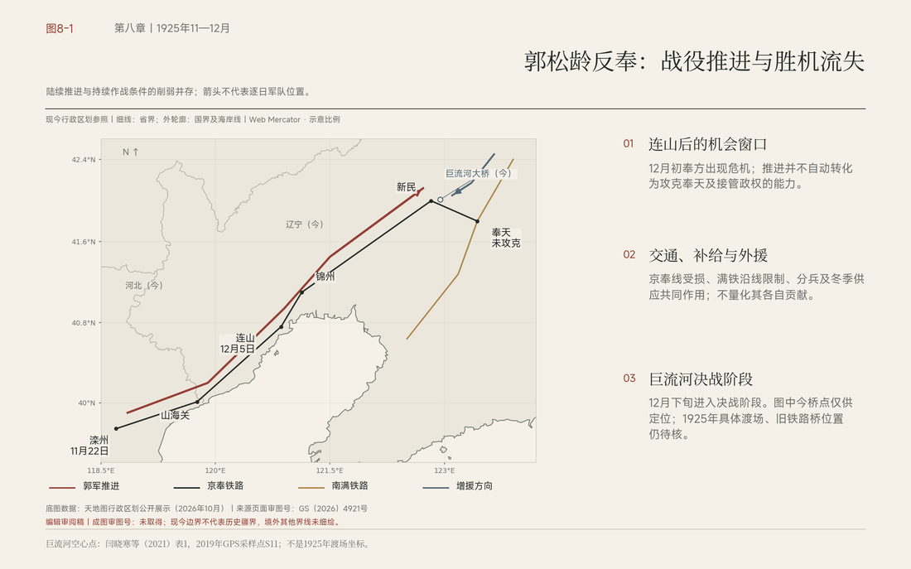
图8-1 郭松龄反奉：战役推进与胜机流失 郭军经滦州、山海关、连山及锦州向新民推进，未攻克奉天；空心点为2019年巨流河大桥采样位置参照，不表示1925年渡场。
资料来源：前期郭松龄战役图；本书第八章；底图：天地图公开展示（来源页审图号 GS（2026）4921号，非本图审图号）
郭松龄起兵之后，日本的态度成了胜负的关键之一。日本在东北有驻军、有铁路、有租借地、有领事馆，任何一支中国军队想在东北打仗，都绕不开日本。郭松龄知道其中的利害，张作霖更知道。
日本不是一个人在说话。外务省关心的是条约权益和外交体面，陆军中枢关心的是在东北的军事地位，关东军关心的是满铁沿线和附属地的安全，满铁关心的是铁路运输和经营，奉天总领事馆关心的是当地秩序和侨民。这几家的意见并不总是一致：有人主张援张，有人主张调停，有人准备同未来的胜者打交道。
外务省担心的是条约权益和与列强的关系，不愿意为了张作霖把日本拖进中国内战；陆军中枢把东北看成日本的生命线，倾向于保住一个听话的东北当局；关东军守在南满铁路和附属地，最关心的是战火不要烧到铁路沿线；满铁关心的是运输和经营；奉天总领事馆关心的是侨民和当地秩序。几家的目标有重叠，也有先后，落到行动上就是警告、增兵、划界、谈判同时进行。
12月8日，关东军发出第一次警告，限制张、郭两军进入满铁沿线及附属地。这个警告形式上对双方，实际效果对奉军有利：奉军可以退到附属地附近整顿，郭军不能追进去。12月9日，日本在附属地和满铁沿线的兵力约四千人。这个数字是特定口径下的驻军数，不能当成日本投入决战的总兵力，更不能据此说“四万日军直接参战”。
12月中旬，关东军发出第二次警告，把禁区扩大到附属地两侧约二十华里（约十二公里），并允许原驻部队留驻。2这个“二十华里”在当时的日本文件里写作“约二十支里，约十二公里”，换算成中国里制是二十华里左右。禁区的划定，等于在战场上划出一条谁都不能碰的线：郭军不能从这条线旁边迂回，奉军可以在这条线后面喘息。
日本的干预，真正起作用的不是枪炮，是划界和表态；它稳定了奉方抵抗联盟的决心。张作相、吴俊升这些吉黑将领，本来在连山失利后动摇过；日本的态度让他们相信，张作霖还能撑住，日本不会坐视郭松龄拿下沈阳。元老们一旦决定继续打，吉黑的部队就源源不断地开上来。郭军面对的，就不只是沈阳的守军，而是整个东北的旧秩序。
郭松龄也做过对日工作。他的代表向日本说明：郭军不干涉关内政治，反对“赤化”，愿意振兴产业、开展经济合作。这些承诺的意思很清楚：郭松龄承认日本在东北的既有权益，希望日本保持中立。对一个要在东北建立政权的中国军人来说，这是当时能拿出的最现实的外交姿态。
问题在于，日本要的不是郭松龄的口头承诺。日本要的是权益的落实、条约的延续和东北秩序的稳定。郭松龄的承诺再动听，也比不上张作霖已经在日本人手里的那些东西。郭松龄能给的是未来，张作霖能给的是现在。日本选择了现在。
日本的算盘不复杂：张作霖已经签过的条约、已经让出的权益、已经形成的依赖关系，都是现成的；换一个郭松龄，这些都要重新谈。加上郭松龄与冯玉祥的国民军有联系，国民军背后有苏联，日本对“赤化”的疑心很重。支持张作霖，对日本来说是最省事的选择。
张作霖在危急中也许下了条件。后出的研究提到，日方在郭案期间提出的要求涉及商租权、间岛行政权、吉敦铁路延长等内容。这些要求的具体形态——是口头许诺、草签文件，还是别的什么——至今没有原件可以定案，这里不用“密约”这个说法，只把它当作日方后来追索权益的背景。张作霖是不是拿这些条件换了日本的援助，材料还不够硬；日本援助张作霖，也不全靠这些条件，关东军和满铁有自己的算盘。
郭松龄对日承诺的内容，和张作霖对日承诺的内容，其实很像。两个人都答应尊重日本在东北的权益，都表示反对“赤化”，都愿意谈经济合作。区别在于，张作霖已经在位十几年，日本人知道跟他打交道能拿到什么；郭松龄是一个未知数，日本人不知道他能不能坐稳沈阳。对日本来说，支持一个熟悉的老对手，比支持一个陌生的挑战者划算。
后出研究对这段交涉的记载，往往把“日方要求”和“张作霖承诺”混在一起写。这里分开处理：日方提出过哪些要求，有材料可查；张作霖答应过什么，以什么形式答应，尚待原件。把没有核实的承诺写成正式的“密约”，看起来增加了戏剧性，实际上削弱了论证。
有一点必须说清楚：日本干预的责任，不因为兵力数字的校正而减轻。日本用附属地、铁路、驻军和外交警告，改变了中国内战的走向，也侵犯了中国的主权。郭松龄的失败有他自己的原因，日本的干预是另一个独立的原因，两者不能互相抵消。把日军说成“四万大军直接参战”，反而会让日本的责任落在不实的数据上；把干预说成“只是外交表态”，又会漏掉战场上的实际效果。
日本的干预，先卡住的是郭军的行动空间：警告和禁区一划，郭军不能从附属地边上迂回，奉军却可以退到线后整顿。更关键的是人心——张作相、吴俊升这些元老看到日本站在张作霖一边，才敢继续打。郭松龄要在东北建政权，还得等日本点头，而日本始终没有点头。三件事叠在一起，郭松龄的胜算就被压下去了。
郭松龄对日本的判断，是他的短板之一。他知道日本重要，也做了接洽，却把日本的反应当成可以争取的变量，没有为“日本不中立”准备方案。他以为只要打得快、打得狠，日本来不及反应；他没有想到，日本不需要直接出兵，只要划一条线、稳一稳奉方的决心，就足以改变战局。
军事上，郭松龄离沈阳只有一条辽河。政治上，他离接管东北还差得很远。
接管东北，先要回答一件事：张学良接不接权。郭松龄的旗号是“拥护张学良”，可张学良公开反对他。如果张学良不合作，郭松龄只有几条路：继续争取，把少帅请回来；软禁或逼走少帅，自己干；放弃“拥张”，另立政权。每条路都会改变起兵的性质，也都会让一部分官兵离心。郭松龄没有选，也没有时间选。
奉天方面的反攻，是从少帅开始的。张学良回到奉天之后，公开要求旧部反对郭松龄，还派出亲信到前线活动。郭军里的军官，很多是张学良提拔的，少帅一句话，比郭松龄十道命令还管用。郭松龄要官兵服从“张学良的名义”，张学良本人却要他们反对郭松龄。这场争夺，郭松龄从一开始就落在下风。
齐世英后来回忆，张学良到秦皇岛时，他曾建议郭松龄把张学良扣下来，郭没有同意。4这个说法出自齐世英晚年的口述，是单方面的回忆，不能当成定论。它至少说明，郭方内部有人看清楚了：张学良本人是这场起兵的关键，抓住他，或者争取他，比打下几座城更重要。郭松龄没有这么做，也许是不愿意对少帅下手，也许是还抱有幻想。
第二个问题：张作相、吴俊升和吉黑军队听谁的。奉天省城只是东北的一部分，吉林、黑龙江的军队有自己的将领、自己的地盘、自己的财政。郭松龄占了沈阳，不等于吉黑就会服从。要让他们服从，得拿出条件：保留他们的地位、军饷、防区和人事。郭松龄手里没有这些条件，他只有一支打进关外的军队。
张作相是吉林的当家人，吴俊升是黑龙江的当家人，两省的军队、财政、人事都在他们手里。郭松龄打下沈阳，动的是张作霖的位子，不是张作相、吴俊升的位子。要让吉黑服从，得给他们好处、给他们保证、给他们面子。郭松龄能给的，只有“反内战、建设东北”这些口号，口号换不来军队的服从。
第三个问题：省政、财政、官银号、铁路、兵工厂，谁来接手。沈阳不是一座空城，它有省署、有官银号、有兵工厂、有铁路局、有警察、有商会。郭军进城之后，这些机构是继续办公，还是散了摊子；官银号的奉票还能不能兑现；兵工厂的工人和技师听谁的；京奉铁路的调度归谁；沈阳的粮食和煤能不能进来，件件都是问题。这些事，一件办不好，城就守不住。
省政要有人接。原来的省长、厅长、县长，是留任还是换人，先要定下来。留任，他们未必听郭松龄的；换人，郭松龄手里没有那么多干部。财政要有人管。官银号的准备金、奉票的发行、军饷的发放，都压在财政厅和官银号身上；郭军进城，第一件事就是发饷，发不出饷，部队就要闹。铁路要有人调度。京奉铁路是奉军的运输命脉，郭军要用它运兵运粮，就得接管铁路局，还要和满铁、和日本人的附属地打交道。兵工厂要有人接收。奉天兵工厂是中国最大的兵工厂之一，工人、技师、机器、原料，都是现成的家底；接收不了，枪弹就打不下去。
郭松龄的班底里，有政治人才，有外交人才，也有参谋和军官。他提出过和平开发东北、振兴教育的主张，说明他有公共政策意识。可主张不等于方案。省长派谁，财政谁管，官银号怎么维持，铁路怎么调度，吉黑怎么安抚，日本怎么应付，冯玉祥、李景林怎么兑现任，这些问题，现有材料里找不到一套完整的答案。
郭松龄身边不是没有人提醒。齐世英在郭方负责政治和外交，多次提醒他注意张学良和日本；可他的注意力始终在军事上，觉得打下沈阳再说。这种“先打后治”的思路，在奉军里很常见，用在这次起兵上，就是致命的。
冯玉祥、李景林这两个盟友，也不是省油的灯。郭松龄反内战，却要靠反奉同盟打仗；他反对入关，却要答应盟友在关内的地盘要求。冯玉祥要京津和西北，李景林要保住直隶，郭松龄要回师东北、结束入关政策。三个人的目标各走各的，打赢了要分账，打输了就散伙。郭松龄没有一套约束盟友的办法，也没有退出战争的方案。
郭方内部有没有讨论过接管方案，现有材料里找不到系统的记录。郭方也找了一些政治和外交人才做筹划，可这些都没有形成一份可执行的省政接管名单。郭松龄把主要精力放在打仗上，政治准备是临时拼凑的。这不是他一个人的疏忽，是整个奉系军队的常态：军人习惯了打完仗再说，可这回，打完仗就是政权的开始。
对日本、对苏联，也是同样的难题。郭松龄向日本承诺不干涉关内、反对赤化、经济合作；他又要通过冯玉祥的国民军，与苏联发生间接联系。日本和苏联在东北各有利益，郭松龄要在两边走钢丝，却没有外交班底和谈判时间。外部承认是政权成立的条件，郭松龄同样没有。
日本在东北有驻军、有铁路、有领事馆，郭松龄要在东北立足，绕不开日本。苏联对国民军有影响，郭松龄要通过冯玉祥与苏联发生联系，可苏联的态度同样含糊。英美的注意力在上海和长江流域，对东北的政局兴趣有限。一个新生政权，如果连一个列强都不承认，它连关税、借款和军火都拿不到。
郭松龄的外交处境，还有一个难处：他起兵时打的旗号是“拥护张学良”，没有一个列强愿意把宝押在一个“清君侧”的将军身上。张作霖是既成事实，郭松龄是未知数；在东北有利益的列强，宁愿跟既成事实打交道。外交上的孤立，跟军事上的分兵一样，都是郭松龄政权的死穴。
把这些事情合起来看，郭松龄的失败不在某一场战斗，而在他只有军队，没有政府。军事上，他能把六万人从滦州带到辽河，能打赢连山，能震动沈阳；政治上，他没有得到张学良的授权，没有拿到吉黑元老的承认，没有接管省政财政，没有稳住盟友，没有搞定日本。五件事一件都没有办成，就算过了辽河、进了沈阳，这个政权也站不住。
王永江的名字，在这个清单里最要紧。他是奉天财政的当家人，整顿税收、发行奉票、办教育，把东北财政从一笔烂账理成能用的钱袋。郭军进城之后，王永江这样的技术官僚会不会合作，官银号和财政厅会不会照常运转，都是未知数。没有财政，军饷发不出；没有军饷，军队就不听命令；军队不听命令，沈阳城就守不住。郭松龄的接管方案里，看不到对这些问题的回答。
这就是“军事上能赢、政治上接不住”。郭松龄的军事判断，有真本事；他的政治判断，缺了最关键的一课：政权不是打赢之后自然到手的奖品，是一整套授权、财政、官僚和外交的安排。郭松龄把顺序弄反了。他以为先打赢，再谈接管；实际上，接管的条件要在起兵之前就准备好，否则打赢了也接不住。
三种胜利方案，事后可以看得更清楚。张作霖下野、谈判移交，成本最低，可互信已经破了，郭松龄又拿不出让奉天元老放心的条件。郭胜且张郭合作，政治收益最大，可张学良公开反对，郭松龄的秘密条件又不给他留位置。郭胜且独立执政，名实最一致，可那等于再来一次政权革命，内战、清洗和日本干预的风险最大。三条路，一条比一条难走；郭松龄一条都没有走通。
郭松龄死后，奉系做的第一件事是收摊子。郭军瓦解，余部进入收编和处置；郭松龄与夫人韩淑秀被杀，死讯传到沈阳。奉天城里有人拍手，有人沉默。张作霖保住了位子，也保住了东北，可这场仗留下的账，要还好几年。
奉方的处置，比很多人预想的宽。张作相等人主张限制株连，张学良晚年自述曾烧掉通郭的电报，不追究多名军长，还重新任用了刘伟。宽大处置有政治考虑：奉军还要打仗，能留的部队要留，能用的军官要用，杀得太狠，人心就散了。个案复职不等于组织无损；郭松龄带出来的训练网络、军官团队和作战经验，不是换个人就能补上的。
宽大处置也有代价。郭军里那些跟着起兵的军官，有的复职，有的调离，有的闲住；官兵之间的信任，不是一纸命令能恢复的。张学良后来承认，郭松龄反奉之后，东北军的训练不如从前，他自己带的部队尤其如此。3这句话出自张氏一方，不是郭方的辩护，可信度反而更高。
损耗要分几笔算。
六笔账里，最容易被夸大的是兵员，最容易被忽略的是信任。兵员损失有战场、严寒、逃亡、收编几道口径，算清楚不容易，但方向明确；起兵时的六万人，战后还剩多少，没有可靠的总数，不同材料的统计口径也不一样。第一笔是兵员和装备，战斗、严寒、追击、铁路破坏和补给不足，造成人员物资损失。第二笔是军官和训练，郭松龄本人和他的核心班底死的死、走的走，奉军最精锐的一支部队伤了元气；张学良后来承认，郭松龄反奉之后，东北军的训练不如从前。
第三笔是财政，郭案增加了作战、修复、收编和善后的支出，又冲击了奉票的信用，这笔账在下一章细算。第四笔是信任，张作霖对少帅的信任、少帅对旧部的信任、军官之间的信任，都在郭案里裂了缝；这些缝看不见，以后每逢大事就会重新张开。第五笔是对日谈判，张作霖在危急中许下的条件，成了日本后来追索权益的由头。第六笔是地方社会，战区百姓承受了征发、战火和流离。
这些账不能加成一个总数。“损失多少亿元”“伤亡多少人”的说法，材料撑不住。能确认的是方向：奉系受了重伤，但没有死。1926年以后，奉系重新整军，重新入关，1927年成立安国军政府，1928年张作霖当上大元帅。5
恢复的速度，连奉系自己都意外。郭案结束后不到半年，奉军就重新在关内用兵；1926年打南口，1927年进河南，1928年当上大元帅。奉系的组织像一个打不死的老兵，伤还没好就又上了战场。可每一次上阵，都要从东北抽一次血。受重创与重新入关，在奉系身上同时成立。
郭军余部的收编，是奉系恢复的重要一步。郭松龄带出来的部队，很多是奉军的精锐，成建制地打散、改编、补充，能保住一部分战斗力。奉方还从郭军里吸收了一批中下级军官，重新分配到各部。张学良后来重建第三方面军，用的还是这批人。兵员可以补，装备可以造，训练可以再搞；郭松龄那样的练兵人才，却不容易找到第二个。
恢复改变了后续的因果。郭案让奉系伤了元气，也让张作霖更依赖日本、更急于在关内找回场子；日本方面则把郭案期间的“援助”记在账上，后来不断索要回报。1928年皇姑屯的炸弹，有它自己的决策者和现场条件，郭案是远因之一，不是唯一原因。至于杨常事件、中东路、九一八，各有各的因果，不能都算在郭松龄头上。
因果分级，不是为了替谁开脱，是为了把话说准。郭案对奉系的当期损耗，证据最硬；对训练、信任和对日关系的长期影响，方向清楚，净额待核；对皇姑屯，是较强远因，中间还隔着1926—1928年的恢复、路港交涉和日本内部决策；对杨常事件，是背景性的因素，方向不一定；对九一八，只能算长期削弱的一部分，日本侵略的独立责任不能因此模糊。
对郭松龄本人，也要分层次看。他的军事专长是真的：会练兵，会打仗，起兵初期打得又快又狠。他的政治短板也是真的：把部队的战斗力当成对个人的忠诚，把初期的胜利当成政权的可行，把对日交涉当成可以控制的大国反应。他起兵时的手段——扣押异己、杀掉姜登选、用“拥张”名义行反张之实——也要负责任。同情他的公共理想，不能替他免掉这些账。
郭松龄事件过去快一百年了，关于它的争论没有停。有人说郭松龄是失败的英雄，反内战、反日本，差一点改变东北的命运；有人说他是野心家，拿六万精锐换自己的权位。两种说法各抓住一面，都不完整。
郭松龄的公共主张，确实戳中了奉系的痛处。连年入关打仗，东北的壮丁被抽走，税款被征走，奉票越来越毛，老百姓怨声载道。郭松龄提出停止内战、建设东北，说出了很多东北人想说而不敢说的话。他的主张里有私心，他的手段也有问题。可他的问题意识是真的，这个事实不能抹掉。如果他只是一个无能的叛将，六万精锐不会跟他走，连山也不会打赢。
郭松龄的失败，也不能全推给日本和盟友。日本的干预是重要条件，冯玉祥、李景林的动摇是重要条件，奉军的抵抗和吉黑的增援也是重要条件；可郭松龄自己的判断，才是把这些条件串起来的那根线。他把起兵的门槛想得太低，把接管东北的难度想得太小。他以为打胜仗是第一步，接管是第二步；实际上，两步要同时走，缺一步就全盘皆输。
责任要分清楚。郭松龄的责任在起兵手段、同盟选择、后勤准备和政治接管上：扣押异己、杀掉姜登选、轻信冯李、对冬装粮弹估计不足、对张学良的反对估计不足、对日本的干预估计不足。奉系的责任在制度：靠个人权威维持的军队和政权，迟早会在一次危机里暴露无法可依、无人可选、无账可查的底子。
张作霖赢了这场仗，也暴露了奉系的病。奉系能打赢，靠的是张作霖的个人权威、几支能打的部队和东北的资源；它打完之后接不住，靠的还是张作霖的个人权威去收拾残局。郭松龄反的是张作霖个人，可他用的也是个人权威；他失败之后，奉系没有建立任何防止下一次的规则。两年后皇姑屯的炸弹一响，这套靠个人撑着的体系，立刻面临继承的难题。
郭松龄和张作霖，是两种不同的强人。张作霖出身草莽，会笼络人，会做交易，能把一群来历不同的人拢成一个集团；郭松龄出身军校，会练兵，会打仗，相信专业和纪律能改造军队。张作霖的长处是政治，短处是制度；郭松龄的长处是军事，短处也是政治。两个人合在一起，奉系能打能撑；两个人分开，奉系就打给自己看。
日本的责任，要单独说。日本在郭案中的干预，改变了战场的力量对比，侵犯了中国的主权；日本在郭案后追索权益，又为后来的冲突埋下伏笔。这些责任，不能因为郭松龄自己有错就减轻，也不能因为奉系自己有问题就转移。把郭案写成“日本一句话就决定了胜负”，会把中国方面的选择抹掉；把郭案写成“郭松龄自己作死”，又会把日本的干预放过。
对日本来说，郭松龄事件是一次机会。日本没有派大部队直接参战，它用的是增兵、划界、外交压力和现场威慑，就改变了中国内战的走向，还让张作霖欠下一笔人情。这笔人情，后来变成满蒙交涉中的筹码。日本在东北的驻军、铁路和领事馆，本来就是主权碎片化的产物；郭案把这些特权的作用演示了一遍，也让日本军方更相信，关键时刻只要摆出姿态，就能左右东北的政局。
1925年冬天，奉系保住了沈阳，也把病暴露在所有人面前：仗打赢了，仗背后的制度没有赢。郭松龄没有治好这个病，他只是把病发了出来。两年多后，张作霖在皇姑屯被炸死，这套体系把病传给了下一代。 一个历史爱好者会问：如果郭松龄的军队渡过巨流河，打进沈阳，东北会怎样？这个问题可以想，答案要落在具体条件上。军事上，郭军有可能进沈阳；政治上，张学良不合作，吉黑元老不服，日本不承认，财政没有着落，新政权还是要面对同样的难题。渡河改变的是战局，不是治理。郭松龄即使进了沈阳，也要在很短的时间里回答：谁授权给他，谁替他收税，谁替他管铁路，谁替他跟日本打交道。这些问题的答案，他起兵之前没有准备好，进城之后也未必准备得好。
1926年夏天，奉天城里的面粉铺子隔几天就要重写一次价牌。伙计收奉票，找零也收奉票，到了月底，账房还是要把票子换成现洋才睡得着。城外的兵营照常发饷，城里的工厂照常开工，领固定工钱的人却发现自己的薪水比年初薄了一层。战争在半年多以前就结束了，市面没有缓过来。
上一年的账从郭松龄起兵那天开始堆。作战、抚恤、修复铁路、收编溃兵，每一项都要现钱。1926年奉天省的预算里列着一笔“1925年末至1926年中特别战争预算”，3,500万奉票元，覆盖郭案、其他战事和战后几个月的开销。这笔钱占当年军事支出估算的四分之一，数字不小，却还不是最压秤的一块。
真正压秤的是常态军备。1926年奉天军事支出估算合计137,045,842奉票元：战斗与保障部队5,537万余元，占40.4%；特别战争预算3,500万元，占25.5%；兵工厂2,400万元，占17.5%；航空1,400万元，占10.2%；军事机关与被服粮秣746万余元，占5.4%；海军120万元，占0.9%。再加上行政支出803万元，军政支出合计145,075,842元。军事占94.46%。1
94.46%只适用于这份1926年奉天省调查，不能读成东三省十几年的平均。它说明的事很直白：在调查者看得清的账里，钱几乎都进了军队。兵工厂和航空两项加起来接近四千万，比一场郭案特别战费还多。就算不打那一仗，部队、军工、航空、被服、粮秣也照常要开支。郭案是在一副已经压弯的担子上又加了一块石头，它让担子更弯，没有造出担子。
收入这边，1926年估算合计151,471,300奉票元：内部收入3,667万元，盐税4,200万元，铁路收入1,680万元，关内收入600万元，债券5,000万元。债券占三分之一。债券不是税，借来的钱要还。用债券回笼奉票，账面上收入与支出接近，实际上是给军费开了一张欠条。
债务的雪球滚得比收入快。1926年3月，表列债务2.74亿奉票元；到1928年1月，名义数字涨到11亿，不到两年翻了近两番。名义翻番不等于实际负担翻番，奉票在这两年里大幅贬值，同样的票子能买的东西越来越少。可是贬值也不会自动消掉债务，税收、军饷、进口机器和还债用的是不同的钱，汇率一动，负担就在政府、商人和士兵之间重新分配。5
于是出现一个让后人头疼的问题：同一个“1926年军费”，为什么会有好几个数字。机构估算的军事支出约1.3704亿奉票元，折合3,915万银元；官银号统计的军事用途拨付是5,200万至7,360万银元，高出一大截。一个算应当花多少，一个算银行实际拨了多少，时间、项目、未清账款都不一样。两组数字相加是重复计算，随便挑一个又会看错财政的实际运行。
1927年，军事拨付估算扩大到5.81亿至12亿奉票元。正常收入连战争成本的一半都盖不住。军队越往关内走，奉天的常规税收在军费里的分量越轻，官银号、债券、地方摊派、关内占领区的收入一起被卷进战争融资。财政问题从这里变成货币问题，再变成社会问题。
张作霖清楚钱紧，也清楚东北的家底，更愿意把家底先投进军队。郭案之后他没有休整，重新整军，重新入关。站在1926年看，这个选择有它的道理：北方的权力真空不等人，退一步就可能再也进不去。账总是要还的，还账的方式落在奉票、军饷和市面的物价上。
1926年，主持财政多年的王永江退出政界。他走的时候，奉天的账面上还撑着，背后的窟窿已经不小。后来的人把王永江的去职说成奉系由盛转衰的标记，这话说得过了头，东北的财政不是一个人撑起来的，也不是一个人抽走的。不过王永江的离开确实说明一件事：愿意同张作霖算细账的人越来越少，军费优先的路线再没有人踩刹车。
东北的财政底子不薄。田赋、盐税、铁路收入、官营企业、公债和纸币，构成一套在区域内部能转起来的机器；这套机器在关内战争一起，就变成了前线军需的提款机。关内的收入不是没有，直隶、山东的一些税源也曾经被纳入账目，可那些地方今天在奉军手里，明天就可能换了主人，靠不住。真正靠得住的还是东北，而东北的钱一到关内，就像水泼进沙地。
战争财政还有一条暗线：摊派。正式税捐之外，军队过境要粮、要草、要车、要人，县里摊到区，区里摊到村，村上按地亩和户口再分。这些钱不进省库，也不进北京政府的账，直接变成部队的给养。张作霖未必批准过每一笔摊派，可军队是他派出去的，战区是他划定的，账最后要算到他的政权头上。东北的农民和商人在郭案之后过的那两年，苦处多半在这里。
军饷是另一笔拖不起的账。奉军的饷章按年按月都有规定，实际发到士兵手里的却常常打折，有时发奉票，有时发一半现洋一半票子，有时干脆拖欠。欠饷的部队容易闹事，也容易在撤退时掉队。张作霖对这点看得很重，宁可从别处挪钱，也要先把前线部队的饷发下去。挪来挪去，教育、实业、地方行政的经费就被挤到后面。奉天的学校、马路、工厂不是没有建设，可一到军费吃紧，先停的总是这些。
再入关的军事承诺，比郭案前更重。1926年奉军重新控制京津，第三、第四方面军摆在京汉、京奉两条线上；1927年又把手伸到河南、江苏方面，徐州、上海都曾留下奉军的脚印。每多一处驻地，就多一处军饷、粮秣、运输和营房开支。东北的资源通过铁路一车一车往关内运，运的是枪炮弹药和现洋，换回来的是地盘和名分。这笔买卖在1926年看起来划算，到1927年就吃力，到1928年已经撑不住。
官银号的账，同省库的账不是一回事。省库记的是岁入岁出，官银号记的是垫款、放款和发行；军需机关向官银号要钱，官银号向省库要钱，省库拿不出来，官银号就多发纸币。1926年官银号统计的军事用途拨付折合5,200万至7,360万银元，比机构估算的军费高出不少。这个差额里有时间差、有未清账款、有重复计算，也有银行替财政垫的钱。读懂这个差额，才能明白奉票为什么止不住地毛。
关东厅的这份调查，本身就是日本情报体系的一部分。关东厅财务部为了摸清关东州和满铁附属地背后的经济状况，派人调查奉天省财政，整理出收支细目。这份材料比中国方面公开的数字细，也比后来的回忆录可靠，可它有明确的目的：为日本在东北的经济政策服务。用它研究奉系财政，要同时记住它的长处和短处。长处是细，短处是站在日本的立场看中国，税收项目怎么归类、军费怎么统计，都带着调查者的眼光。
到了1928年春天，账已经很难再拖。军费继续增发，债券继续摊派，奉票的信用一日不如一日；东北的商人和农民都在观望，能不用票子就不用票子。张作霖这时候还在北京撑着，靠的是东北的最后一口气和关内占领区的临时搜刮。他在北京多待一天，东北的家底就多薄一分。等到5月保定失守、6月退兵，财政的窟窿跟着军队一起退回关外，张学良接手的时候，手里已经是一副烂账。
把这两年的账合起来看，奉系的财政能力还在，缓冲却薄了，成本正从军队和大城市转向普通人和后方。军费优先的路线没有人踩刹车，债、票子、摊派三样一起上，账面上的数字越来越大，能办的事越来越少。1926—1928年的奉系不是没钱可用，是钱只能按打仗的顺序花；等到战争打不下去，账已经还不上了。
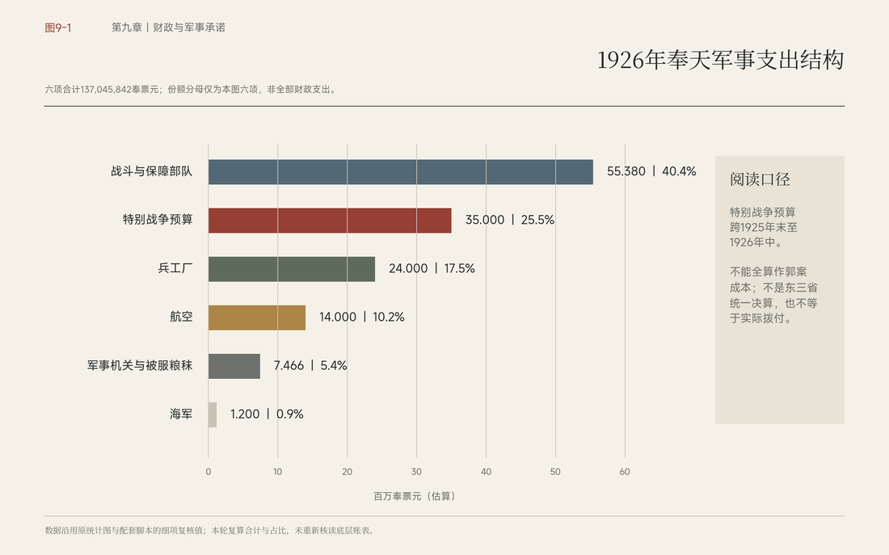
图9-1 1926年奉天军事支出结构 按六项军事支出估算复算金额与占比；特别战争预算跨1925年末至1926年中，不能全归郭案，亦非实拨决算。
资料来源：财政章节统计、书稿财政章节；底层账表本轮未重核。
1926年7月，奉天城里的钱庄挂出一块新牌子：100金日元，兑奉票573元。到年底，同一个价格回到400元上下。账表里用的又是另一套算法，1银元兑3.5奉票元，只适用于当年10月、11月的结算。573是月内一度，400是年底价位，3.5是账房换算，三个数字凑在一起，才是那一年汇率的真实形状。2拿一条平滑曲线去描述它，等于把恐慌抹平。
奉票的根子在官银号。政府和军需机关要钱，官银号垫付；垫得多了，政府欠款堆起来；欠款还不上，就增发纸币。市场看得懂这套路，票子一到手就换现洋、换日金、换实物。1926年夏天，奉票的跌势一度失控，张作霖下令固定汇率，惩处租借地里的钱商。跌势随后缓下来，但这是行政强制的功劳，不是财政好转。
紧接着出场的是“金融维持会”。省议会、教育会、农务会、商会都被请进来，一起想办法稳住市面。商会被要求抽查商号账目，配合警察、宪兵查禁投机。4场面做得很大，实际内容是叫商人分担政权的信用危机：官府压价，商会劝告，警察抓人，三头并下。名义汇率稳住了，黑市没有消失；市面上的交易照旧要打折，只是不敢明说。金融维持会的场面不小，内里却是一笔糊涂账：开会时人人赞成稳定，散会后各干各的。
普通人的日子在账本另一头。1926年奉票贬值，吃亏最直接的是领固定工资的职员、工厂工人和当兵的。8月，奉天兵工厂差一点爆发罢工，当局同意加薪两成到三成，把事情压了下去，东北其他工厂也照此办理。奇怪的是，有记录的罢工并没有明显增加。工人当然苦，只是当时的劳动力还有一点议价的余地，加薪才能暂时把罢工压下去；代价是军工的货币支出又抬了一截。
军饷的情况更隐蔽。士兵拿奉票，家属买东西却常常要现洋；米、煤、油、盐的价格跟着汇率走，饷章上的数字没有变，实际买到的东西少了。欠饷的月数、发饷的日期、驻地的物价，材料里都还拼不齐。能确定的只有方向：军队的购买力在缩水，军纪和士气的成本迟早要由地方社会来付。饷银寄回去养家，票子一毛，家里买粮买盐就紧。
农村和出口部门的表现又是另一副样子。1926年，原豆出口值从1925年的5,420.4万海关两降到4,731.4万海关两，少了12.71%；豆饼、豆油合计却从7,707.8万海关两涨到10,083.3万海关两，增长30.82%；三项合计由13,128.2万涨到14,814.7万海关两，增长12.85%。3原豆跌、加工品涨，说明东北经济有调整能力，不能写成“全面崩溃”。可加工品涨价的好处先落在油坊、粮商和出口口岸，种豆的农户拿到多少，要看收购价和运费。
还有一层常被忽略：季节。每年9月到次年3月是大豆交易的旺季，季节工从关内涌来，春节前后又要集中兑付工钱，市面对现金的需求跟着起落。同样的发行量，在旺季和淡季碰到的是两种行情。把1926年的每一次波动都记在军费账上，会漏掉商业周期这只手。
把这些放在一起看，单说“印钞导致贬值”并不够。军费透支是主因，季节贸易是放大器，行政管制是止痛药，商会分担是转嫁渠道。四样东西同时在动，代价最后落在固定收入者、士兵、商人和战区农户身上。财政危机从来不是一个数字，它是一张分摊表。
奉票不是1926年才有的东西。张作霖治下的东北，早就用这套纸币发饷、收税、做生意，官银号是它的总闸门。闸门开多大，原本该看准备金和税收；到了战争年代，看的是军需机关催款的急迫程度。军需催得紧，官银号就多放款；放款多了，准备金不够，票子就毛。市面上的钱庄、粮栈、日本银行和朝鲜银行券各有各的行情，老百姓用脚投票，谁家的票子硬就留谁家的。
商会对这套苦处知道得最清楚。1925年江浙战事一起，报纸上的消息传到奉天，市面立刻发紧。奉天总商会开会、查账、劝告同行不要抢购现洋，还同警察、宪兵一起维持秩序。官府说这是稳定金融，商会把它当成自救，商号则把它看成不得不交的保护费。同一个动作，三种解释，都符合当时的情形。
空间上的差别也很大。沈阳是军政机关、兵工厂、银行和官署扎堆的地方，票子一毛，最先受影响的是领薪水的职员、兵工厂工人和士兵。大连、牛庄、安东这些口岸用海关两和多国货币结算，感受的是另一套行情。哈尔滨和北满的粮商关心的是大豆能不能及时运出去、货款按什么货币结。把沈阳城里的物价当成全东北的物价，会错得很远。
兵工厂的加薪还有一笔循环账。工人加了工钱，厂里的开支跟着涨；开支涨了，官银号垫得更多；垫得更多，票子毛得更快；票子一毛，工人又要求加薪。这个圈子转上几圈，工资数字上去了，买到的东西却没有多。财政、货币和工厂的工资表，就这样缠在一起。
奉票贬值对日本商人的影响，也是一笔不能漏的账。东北的对外贸易大量用日金结算，奉票一毛，日本商社在东北的购买力和放款都受影响；满铁、横滨正金银行、朝鲜银行在东北的分支机构，对奉票的行情盯得很紧。日方财界因此在1926年多次向奉天当局交涉，要求稳定金融。这种压力跟军事压力不同，它不拿枪，却同样能逼着张作霖在汇率上让步。
公债是另一条筹钱的路。政府发债，商会和银行认购，到期还本付息。买债的人不是傻子，票子毛得快，债券就打折，认购变成摊派。1926年以后，奉天、吉林、黑龙江都发过债，名目各异，实际用途多半还是军费。债券发得越多，政府信用越薄，下一回再发，肯买的人越少。等到1928年张作霖出事，这些债和奉票一起，成了张学良接手的第一个烂摊子。
物价是同军饷连在一起的。奉票一毛，米面油盐跟着涨；涨得最凶的时候，店员早上拿到的工钱，下午就买不到同样多的东西。限价、抓囤积商人、要求商会平抑物价，这些办法都只能管一时。真正决定物价的，是票子发多少、货有多少。1926年东北的收成不算坏，大豆、高粱、玉米都还有货，物价还是涨，原因在票子。这个道理，当时的小学教员都懂，北京的大元帅不会不懂，懂归懂，军费不能不发。
东北的官银号、银行和钱庄，在这两年里都跟着受罪。票子发得多，准备金不够，遇到挤兑只能关门或者限兑；商家收票子要打折，农民卖粮拿票子要吃亏，士兵领饷拿票子要贬值。金融体系本来能替经济输血，战争年代反倒成了财政透支的通道。这层代价，账本上不写，市面上一清二楚。
1926年4月，京绥线上的南口车站挤满了军车，往西是居庸关和察哈尔，往东是北京。国民军在这里摆下防线，挖壕、架炮、拆轨，把一条铁路变成了一道门槛。奉系是拼了家底来打这一仗的：1926年初冯玉祥下野，国民军从北京撤退，主力收缩到南口一线；张作霖同吴佩孚搁下多年的旧怨，联手对付国民军，张宗昌的直鲁军也从山东方面压过来。三方在一条狭窄的山口上投入重兵，火炮、机枪、工事都用上了，仗打得像一战西线，只是规模小些。谁都知道这道门槛后面就是北京。
这仗打了四个月。国民军守到8月，退往绥远。奉系在郭案之后还能组织这样一场攻坚，说明兵员、火炮、铁路运输和后勤都还在。可胜利的价码要从另一边算：南口鏖战期间，南方的国民革命军正在两湖推进——1926年7月广州誓师，8月汀泗桥、贺胜桥两仗打垮吴佩孚主力，10月拿下武昌。北洋各军被钉在北方，抽不出手来统一应对；吴佩孚两头顾不上，两湖的防线先垮了。南口的四个月，对奉系是攻坚，对北伐是掩护。
打赢南口以后，奉系并没有得到一支肯长期服从北京的西北军。冯玉祥退到绥远、甘肃一带，9月在五原誓师，就任国民军联军总司令，随后进军陕西，解了西安之围。被打败的军队在更远的地方重新组织起来，奉系占住的只是通道和阵地，不是人心和行政。这就是奉系打仗的老办法：先占铁路和门户，再谈别的。南口拿下，北京西北的压力暂时解除；可要彻底解决冯玉祥，就得把补给线一路拉长，进入自己没有县衙、没有税卡、没有熟人的地方。张作霖选择不追。这个选择保存了主力，也给对手留下了恢复的时间。
在北京城里，南口的胜利换来了几样东西：中央机关的门、外交团的席位、北方各军的客气。换不来的东西更多。县政府、税卡、商会、铁路局仍在各路军头和地方精英手里，城里的命令出不了城门。军事上能打赢一场攻坚，政治上却无法把胜利变成地方治理，这是奉系从1924年入关起就没有解决的难题。
1927年春天，奉军再次主动出击。3月，张学良率第三、第四方面军进入河南，同北伐军作战。河南连接京汉、陇海两条大动脉，谁占河南，谁就捏住华北与华中之间的咽喉；张作霖希望在这里挡住北伐军北上，也为北京政权挣出一段缓冲。奉军用的还是那套老办法：把第三、第四方面军捏在一起，用铁路快速投送，找对手的薄弱处下手。这套办法对付北洋各军很灵，碰上北伐军就打了折扣——北伐军在两湖打出了士气，在河南有地方武装和民众接应，奉军的铁路优势被拉长的补给线抵消。兵员、弹药、给养都从铁路来，北伐军只要切断一段，前线就撑不住。仗打到5月，奉军败退，张学良的履历用八个字概括这段：“作战失败，率军北撤”。
八月，孙传芳部沿津浦线反攻，一度进到长江附近；张作霖在8月29日还召集会议商讨对豫军事。几天后，孙传芳在南京城外的龙潭败下阵来，反攻的势头就此折断。秋天，阎锡山在山西转向，晋奉战争把战火推回直隶和京绥线；傅作义守涿州，从1927年10月守到1928年1月，奉军反复攻城，始终没有啃下来。奉系要同时应付晋军、冯玉祥、南京和武汉几方面的力量，战线越拉越长，东北的兵和钱要走的距离越来越远，盟友的地盘算盘也越打越响。南口时期还能向西北推进，河南时期还能前出中原，到晋军进攻直隶，战场已经逼近北京门口。
把这几仗连起来看，奉系的军事能力有一个清楚的上限：打一场硬仗、守一条铁路、攻一个要隘，都还在行；把一次胜利变成全国战争的结果，做不到。对手的组织方式变了。北伐军有党代表、政治部、宣传队，有农民协会和工会接应，部队打到哪里，政工人员和地方组织就跟到哪里；北洋军打仗靠的是统帅的威望、将领的私交和地盘的分配，部队打散了就散了，地方上没有人接应。奉系在北方打了多年内战，对付的是同类的北洋军；碰上这种把军队、政党和群众运动拧在一起的新式力量，老办法就不够用了。
安国军不是一天搭起来的。1926年12月1日，张作霖在天津就任安国军总司令，孙传芳、张宗昌、阎锡山等十六人参与推戴。第二年6月，军政府把北方各军统一改编为七个方面军，张作霖的奉军、张宗昌的直鲁军、孙传芳的残部、阎锡山的晋军，都在这面旗号下面各占一块。旗号统一了，粮饷、地盘和指挥权还是各管各的。
1927年6月18日，张作霖在北京怀仁堂就任陆海军大元帅。第二天，6月19日，军政府公布组织令：大元帅统率陆海军，在军事时期代表中华民国行使最高统治权；军政府不设立法机关，也不设代议机关。6月20日，中华民国军政府成立，人们习惯叫它安国军政府。大元帅府设秘书厅、军事办公处和几个办事机构，命令由国务总理副署，主管部务的由有关总长连带副署。
副署看起来像责任内阁，实际上不是。国务总理由大元帅指定，国务员由大元帅任免，副署的人没有独立的民意基础，也没有自己的政治班底，命令走到国务员桌上，是走个文书程序。中央各部倒是一应俱全：外交、内务、军事、财政、司法、教育、交通、实业、农工，九部齐全；此外还有平政院、审计院、蒙藏院这些直属机关，国务院下设法制、铨叙、统计、印铸几局；国务会议照旧处理条约案、决算案、预算外支出、陆海军编制、宣战媾和、简任官进退。纸面上，这是一届完整的中央政府；现实里，各部能管到的地方要打一个很大的折扣。
折扣首先出在钱上。北京政府的关税、盐税、交通收入，早就被各路军事首领截的截、借的借；东北的财政又自成一套。1927年军政府发过一道统一财政命令，公开承认各省区因军事影响任意加征、税捐名目繁多、工商疲敝，要求财政部会同各省核正裁减，未经中央核准不得擅自加捐。命令写得沉痛，执行却找不到抓手：中央要军队打仗，军队要地方筹饷，地方筹饷就得加捐，加捐又要中央核准，转一圈回到原点。
东北的家底也不是无底洞：1925年奉天、吉林、黑龙江三省预算岁入合计2,730万元，放到全国战场上是杯水车薪。关税、盐税大半被地方和军队截留，公债买的人越来越少，九部经费、外交团应酬、北京治安样样要钱。军政府能维持一年，靠的是东北的底子和关内的临时搜刮。
安国军的联盟也不牢。张作霖是总司令，张宗昌、孙传芳是副司令，阎锡山也接过副司令的名义；名义之下各有各的算盘：张宗昌要山东，孙传芳要津浦线，阎锡山要保山西。七个方面军纸面上统一了北方各军，实际上各有地盘和饷源，张作霖能直接调动的还是奉军那几个军团。1927年5月31日，阎锡山在进兵娘子关的同时给奉方开出四条：张作霖下野、取消安国军、改称国民革命军、联蒋讨赤。张作霖不肯。6月3日，阎锡山公开易帜；6月6日，他就任国民革命军北方总司令。安国军联盟的维持，靠的是利益交换：张作霖给盟友军火、粮饷和退路，盟友替他守津浦线、山东和山西；战况顺利大家分地盘，战况不利各人保实力。
张作霖个人成了各层级之间最后的连接点。北京部院向他负责，各军团向他个人负责，东北省署也向他个人负责。这么做的好处是决策快，命令一条线到底；坏处同样明显：所有矛盾都堆到一个人身上，一旦这个人离京或者出事，整个系统就失去主轴。这件事最能说明安国军政府的性质：它是一个军事联盟的中央外壳，外壳里装的是各路军队和地盘。张作霖能让各军接受一面旗号，不能让他们交出军队和财权；大元帅的任命书可以发到各省，各省收到的只是通知，不是命令。安国军政府后来不到一年就垮，根子埋在这里。
对外，大元帅府还多了一样东西：全国政府的名义。列强同北京打交道，面对的是一个声称代表中国的中央机关；铁路、借款、领事关系和日本在满蒙的要求，都送到最高层来谈。张作霖在北京坐上大元帅的位置以后，同日本打交道就不再只是东北地方当局同日本领事的交涉——日本当他还是那个可以施压的东北王，他自己却要扮全国政府的首脑，身份一多，回旋的余地反而小了。可外交团承认北京政府，却不打算为它出力：日本、英国、美国各有各的算盘，谁都在观望。等到奉军撤退，外交团没有一句挽留，转身就去同新进城的军队打交道。
1926年4月26日清晨，北京天桥刑场。一辆囚车停下，几个军警把一个人推下来。此人是《京报》社长邵飘萍，两天前在城里被捕。没有公开审讯，没有辩护，没有判决书，几声枪响，人没了。奉系军队进入北京不过几天，北京城的报馆老板们第一次看清楚：新来的军队不打算同报纸讲道理。
邵飘萍是民国新闻界有名的人物，交游广，笔头硬，骂过曹锟、骂过张作霖，也拿过各方的好处。他在政治上并不干净，这点不必替他遮掩。可逮捕他、杀他，用的理由是“宣传赤化”、扰乱治安，走的不是法庭程序。一个记者该不该杀，本来可以交给司法去说；执政者绕开司法直接开枪，这件事的性质就变了。
同年8月6日，《社会日报》主持人林白水被捕，当天遇害。下令的是张宗昌。林白水的文章得罪了这位山东军头，张宗昌在自己的势力范围内直接要了他的命。两案前后脚发生，都在北京，都针对有名气的报人，指挥链却不一样。邵案的责任在奉系中央，林案的责任在直鲁军首领。把两案写成同一个法庭的连续判决，会抹掉这个区别；只强调个人恩怨，又会放过军事权力对言论的整体敌意。
杀报人的效果，短期看很灵。北京的报纸立刻安静下来，批评的调门降了，编辑们学会了把话说得含糊。军人要的就是这个安静。长期看，代价落在执政者自己身上。报纸是城市里唯一能把消息和议论传开的渠道，把这些渠道堵死，政府听到的回声就只剩下自己想听的话。战局变化快、盟友随时翻脸的时候，领导人最需要真消息，恰恰这时候真消息最少。
邵飘萍、林白水都不是完人，他们的报纸也未必每句话都对。正因如此，才该由法庭来分辨对错，而不是由军警来决定生死。张作霖在这件事上开了一个坏头：把新闻批评当成军事威胁，把报馆当成敌营。这个头一开，北京城的舆论场就只剩两种声音，一种是奉命说话，一种是闭嘴。
报人之死在城市里的震动，比在官场里大得多。北京的报馆、通讯社、记者圈原本就同政界、学界、商界连着，邵飘萍一死，记者们知道了笔杆子的分量；林白水一死，大家知道了军头的脾气。此后北京的报纸明显收敛，批评军阀的文字少了，转载外电和写风花雪月的多了。舆论场一安静，政府听到的消息就单一，决策的盲区就大。这个代价不会立刻显出来，等到战局吃紧、需要判断人心向背的时候，才会发现手里没有真消息。
邵飘萍和林白水的死，在司法上找不到交代。没有审判，就没有罪名；没有罪名，就没有辩护；没有辩护，就没有上诉。三条程序一环扣一环，缺了第一环，后面全落空。执政者可以事后补一张罪状，可人已经死了。这种处理方式，同现代国家的司法原则差得很远，同当时北京已经有的法院、检察厅、律师制度也差得很远。奉系不是没有法庭，法庭在枪杆子面前让了路。
1927年4月6日清晨，北京东交民巷。军警包围了旧俄兵营，冲进院子，抓走李大钊等几十人。东交民巷是使馆区，按条约享有特殊地位，中国的军警平时进不去。这次，张作霖的军警进去了。苏联方面提出抗议，北京政府拿“赤化”和“俄人庇护乱党”来回话。抓人这件事，从一开始就带着外交纠纷的底色。
李大钊是北京大学教授，也是国共两党在北方的核心人物。他推动过国民军同南方革命力量的合作，手里有一张横跨学界、政界和军队的关系网。张作霖要对付北伐，先要拔掉北方的革命网络，李大钊是这张网上的结。抓他，是镇压，也是战争的一部分。
4月28日，奉系组织的特别法庭开庭，判决李大钊等20人绞刑。所谓特别法庭，是临时拼起来的机构，程序由执政者定，判决由执政者认。有判决书，有法庭，有人被绞死，看上去像一场审判；可被告没有辩护，证据不公开，旁听和复核都谈不上。李大钊时年38岁，留下了一份狱中陈述，讲自己的政治主张，不谈案情。档案里还留着侦缉处、警察署关于逮捕经过的报告，两边的文字放在一起，照出国家机关和被押者完全不对等的位置。
此案同邵飘萍案、林白水案放在一起看，能看出奉系统治下暴力的不同形状。邵案是军队进城后不经审判的处决，林案是军头在自家地盘上的私刑，李案是政府组织的特别法庭；三案的程序各不相同，底色都是把政治上的反对者当成治安上的罪犯，用法律程序给政治决定盖章。
张作霖在这三案里的责任要分开算。邵案发生在安国军政府成立以前，账记在奉系中央权力头上；林案的直接下令者是张宗昌，账主要记在直鲁军；李案由张作霖政府组织特别法庭，账记在安国军政府头上。分开算，是为了把三笔账各归各的账本。安国军政府成立以后，张作霖是北京的最高执政者，侦查、审判、执行都归他管，这个责任推不掉。
从政治效果看，杀李大钊没有吓住北方的革命者，反而让张作霖在全国舆论里多背了一笔血债。北伐军的宣传里，“讨赤”与“讨张”早就搅在一起，李大钊之死成了奉系政权最容易被记住的罪状之一。张作霖想用“安国”争取北方人心，特别法庭和报人案却把人心推远。以杀立威的政权，往往越杀越孤立。
李大钊案还有一层外交纠葛。东交民巷是使馆区，中国军警进去抓人，等于在列强的眼皮底下动手；苏联方面提出抗议，北京政府则以“赤化”相回应。这件事让张作霖在同苏联的交涉中多了一个把柄，也让列强看清楚：北京政府为了镇压政敌，可以不顾使馆区的惯例。外交上的后果不是立刻爆发，却一点点积累。奉系后来在满蒙交涉中对日本步步退让，同它在北方把革命者逼到死角，是同一枚硬币的两面。
李大钊之死，在北方知识界留下的震动很久没有消散。他是北京大学的教授，是五四一代学人的同辈，很多文化人即使不赞成他的政治主张，也不认为他该被绞死。特别法庭的判决一出，北平、上海的报纸和学界议论纷纷，张作霖政权的形象在知识分子中跌到谷底。对一个想以“安国”争取人心的政权来说，这笔账很不划算。杀了一个李大钊，等于把一代读书人推到对立面。
1928年春天，二次北伐重新发动，蒋介石、冯玉祥、阎锡山、李宗仁几路合围。5月末保定失守，京津震动，京城里的官员开始收拾箱子。6月1日，张作霖在居仁堂同各国公使话别，说了一句后来被反复引用的话：“我们将来会有机会再次在北京或东三省与诸位相会。”说这话时，他大概已经打定主意回奉天。
撤退的组织难度，外人不容易看见。京津到山海关的铁路运力有限，车辆要优先装兵员和军火，伤病员和官员家眷要往后排；各部队都想先走，车站上抢车、扣车的事时有发生。张学良坐镇指挥，把第三、第四方面军的主力一批批送出去，后卫部队守到最后一刻。张宗昌、孙传芳的部队没有全部跟着撤，滦东一带留下了几万人，后来成了南京方面的心病。奉军主力保住了，联盟却在那一刻散了。
张作霖离京前的最后几天，内部意见并不一致。张学良、杨宇霆主张息兵撤军，把主力带回关外；张作霖还想再撑一撑，看看南方各路能不能像从前那样内讧。撑下去的念想很快断了。他给奉军下总退却令，把撤兵交给张学良，自己先回奉天。这个安排保留了奉军主力，也让他成了日本关东军的目标。撤退的军事判断是对的，政治上的收场却没有人安排。
北京城里的交接，比军队撤退更难。大元帅走了，国务院还在，各部院还在，外交团还在，城市的电灯、自来水、电话、警察都还要人管。大元帅离京，中央政务交给国务院摄理，军事交给各军团长负责；国务院只能维持几天秩序，主持不了权力交接，各军团长各有防区，谁也不服谁。北京城里还有外交团、各部院、官署印信，这些东西不能跟着火车走。等到阎锡山、白崇禧的部队进城，旧政府的官员或走或留，档案、印信、公款都要清点；奉系经营多年的中央行政经验，就这样留在了北京，没有带回东北。
张作霖离开北京的时候，带走的是一年多来积下的名分、债务和敌意，留下的是没有主心骨的中央机关和一座等着换旗的城市。他从东北来，回东北去，中间绕了北京一圈。
奉天那边，早就在准备接应。张作相、万福麟这些老将坐镇吉林、黑龙江，省署和军警系统照常运转，银行、铁路、兵工厂也等着主事的人回来。6月2日深夜，张作霖离开北京，专列一路往东北开，沿途的警戒由奉军和日本守备队各管一段。没有人想到会在皇姑屯出事。北京这边，国务院摄理维持了几天，等到阎锡山、白崇禧进城，安国军政府的最后一点痕迹也消失了。
6月4日，张作霖的专列在皇姑屯被炸，军政府随之覆灭（详见第十章）。6月11日，阎锡山偕白崇禧等进入北京，北方政治中心换了旗帜。
把安国军政府放到奉系的全过程里看，它是这个集团最接近全国政权的一次，也是它最清楚自己极限的一次。奉系能把东北的行政、财政和军队拧成一股，打到北京；到了北京，它还是用东北那套办法治理全国，靠张作霖个人的威望、盟友的利益和军队的枪杆子维持。这套办法在关外够用，在全国不够用。
如果张作霖在1927年冬天就收缩战线，把兵力和财政收回关外，1928年6月的北京，会不会还有另一种退法？这个问题没有标准答案。能看清的是：他在1927年选择了继续扩张，在1928年被迫撤退，中间没有留下一套可退的制度。财政、军队和继承三件事，他一件都没有来得及安排。
军费细项与收入估算，见日方关东厅财务部《奉天省财政之现状》（1927）整理稿；骑兵游击队一项的转录差异（3,307,500与337,500奉票元）及复核过程据邝智文《战争与地缘政治》相关表。
奉票汇价、金融维持会与兵工厂加薪，转引自邝智文《战争与地缘政治》；季节性货币需求参见神西（Miriam Kaminishi）关于满洲多种货币的研究。
大豆出口值据大连、牛庄、安东、哈尔滨海关统计，转引自邝智文《战争与地缘政治》。
1926年春夏奉天金融风潮与商会呈文，见《奉系军阀金融档案选》所刊档案。
债务名义额与拨付区间的口径，见邝智文《战争与地缘政治》相关章节；具体页码待补。
1928年5月，奉天城里的日本领事馆灯火通明。关东军、满铁、外务省的人来来往往，谈的都是同一件事：张作霖退回关外以后，日本在东北的权益怎么办。此时的张作霖在北京当了一年大元帅，马上就要回到他起家的地方。日本人看着他，心里各有各的账。
交换里有冲突。奉系要往关内扩张，要建自己的铁路、港口，要摆脱满铁的控制；日本要保住南满铁路的优势，要把东北同关内隔开。张作霖弱的时候容易让步，强的时候就想自己说了算。日本对他的评价跟着变：能用的时候是合作对象，不听话的时候是排日。日本想用他的权力，又怕他真的做成一个独立的全国领袖；合作越深，这层矛盾越明显。
铁路是双方角力的焦点。铁路能运货、运兵、运人，沿线还有附属地、警察、驻军和经营权。日本想让新修线路接上朝鲜铁路，把势力伸进吉林、黑龙江；奉系想修自己的干线，把粮食、矿产和军队都攥在手里。1920年代，奉系修了打通铁路，从京奉线的打虎山到通辽，251.7公里，1921年到1927年分四段修成。1这条线不长，意义不小：它是奉系自己出钱、自己修、自己管的铁路。
日本内部也不是铁板一块。外务省管交涉，满铁管经营，关东军管军事，田中内阁管政策。各方都想要权益，手段和时机不一样。张作霖在同他们打交道时常用一招：拖。今天答应，明天说手续不全；这边签字，那边让部下顶着。拖得越久，日本越急。急到一定程度，就有人想换一种办法。
1925年冬天，郭松龄的部队打到巨流河，张作霖的统治一度岌岌可危；日本关东军限制郭军行动，对张作霖施以援手，战局才转了向。事后有研究转引称，日本在那个时候提出过一组要求，涉及商租权、间岛行政权、吉敦铁路延长并同朝鲜铁路接轨、洮昌道设领，原件至今没有找到；这里只把它当作日方后来追索权益的背景，详情见第八章。
奉系对日本的政策，还要面向国内观众。公开答应日方太多，学生会罢课、商人会抵制、地方团体会上书；公开决裂，又怕日本在经济和军事上报复。张作霖因此常在民族权利的语言和秘密交易的实惠之间来回移动。这么做的结果是政策不透明：部下、省署、中央外交部未必知道同一件事的全貌，事后互相推责，谁也说不清到底答应了什么。
日本在华的人员网络，也影响双方的判断。张作霖身边有日本顾问，日本方面有熟悉奉系内情的驻华人员。顾问能传话、能安排见面、能解释政策，日方容易把同几个奉系要人的交情，当成对整个东北的控制；张作霖则可能把私人关系里的余地，当成日本国家政策的保证。皇姑屯事件之后，这套私人渠道还在运转，却没有拦住现场军人的秘密行动，正好说明它的边界。
日本在东北的根，扎在几样东西上：南满铁路、旅大租借地、铁路附属地、驻军和领事裁判权。铁路附属地名义上是铁路用地，实际上由日本设警察、办学校、收税、驻兵，成了国中之国。关东军驻扎在铁路沿线，名义上是护路，实际上是一支能随时出动的野战军。张作霖要在东北办事，绕不开这些日本人，也绕不开他们背后的东京。
张作霖对日本的依赖，最直接的是钱和枪。奉军几次扩编，武器、弹药、机器、教官，不少从日本来；东北的银行和官银号周转不开时，也向日本银行借过款。借了钱要还，还不上就要拿权益抵。张作霖在这上面吃过亏，也学过乖：能拖就拖，能少给就少给，实在拖不过去，再拿一点出来应付。
东北自建的铁路网，是张作霖手里不多的一张好牌。打通铁路修成以后，奉系可以把辽西的粮食、煤炭和军队运来运去，不必事事看满铁的调度。铁路沿线设站、开矿、招工，地方经济跟着活起来。日本把这条线看成竞争，奉系把它看成命脉，双方对同一条铁路的看法，差着一个主权。葫芦岛的港口构想也是同一思路：张作霖想在东北找一个不受日本控制的出海口，把铁路连到港口，货物从那里出海。这个计划在他生前还只是规划和早期工程；把后来的成果记在他账上，会夸大他的路港体系，把构想当成空话，又会看轻他的自主意图。
日本嘴里的“满蒙”，其实有明确的所指：南满铁路、旅大租借地、东部内蒙古和吉林、黑龙江的一部分。日本要在这片地方保有特殊地位，把东北同关内隔开。张作霖要的是东北和关内连成一片，自己说了算。这两个目标从一开始就顶牛，只是在张作霖实力弱的时候，顶得不那么明显。
东北的老百姓对张作霖的评价，比史书复杂。他修铁路、办工厂、开学校，沈阳城的面貌变了不少，商人觉得日子有奔头；他也打仗、加税、发奉票，农民和工人在战争和通胀里吃苦。皇姑屯的消息传开，有人真心难过，有人只是担心换人以后日子更难过。一个统治者的功过，在他死的时候就已经被人分开算了。
日本在东北的势力，是从日俄战争打出来的。1905年以后，日本从俄国手里接过南满铁路和旅大租借地，又通过条约取得驻军、设警、开矿、经商的权利。张作霖从地方武装起家，一步一步做到奉天督军、东三省巡阅使，离不开日本或明或暗的支持；日本给过军火、借款、顾问和技术，张作霖则让日本资本和人员进入东北，在一些交涉里承认或扩大日方权益。这是一笔一笔的交换，不是单方面的恩赐。到了1920年代，日本在东北的机构、军队、企业和侨民越铺越开，张作霖的每一个决定，都要先想一想日本会怎么反应。
经济上的联系，比军事上的对峙更深。东北的大豆、豆饼、煤炭、木材，很大一部分经南满铁路运到大连，再从大连装船去日本；日本的机器、布匹、杂货，也从这条路进入东北。满铁的运费、港口的吞吐、商社的贷款，把两边的经济绑在一起。张作霖要修自己的铁路、开自己的港口，动的是这块蛋糕。日本之所以对打通铁路、葫芦岛那么敏感，原因就在这里。
1927年，田中义一内阁上台，对华政策转硬。满蒙悬案里的铁路、商租、设领，被重新摆上桌面。日本看准张作霖当了大元帅，手里有东北实权，又有中央名义，正是逼他一次性解决悬案的好机会。张作霖则需要日本的支持或中立，国内战争还没打完。
交涉的具体人物是满铁总裁山本条太郎。满铁不只是铁路公司，它经营南满铁路，也做调查、借款、包工，是日本在东北的经济大本营。山本通过秘密接触、技术方案和张作霖身边的顾问，一步步推进。外务省和驻华外交官负责正式交涉。两条线并行，目标一致，手段不同。
1927年10月，双方谈成七线大纲，后来聚焦到通常说的新五路：敦图、长大、吉五、洮索、延海。敦图线是关键，它接上吉会铁路，再连朝鲜铁路网，日本从朝鲜半岛进入吉林、北满就方便了；长大线向北延伸，影响长春以北的粮食集散；吉五、洮索、延海各线，把日本的借款和经营带向更广的地区。五条线加在一起，是一张重新安排东北交通的网。
谈判桌上，奉系内部有人想挡。10月14日，日方要求签字，杨宇霆说了一句“此事非大元帅所能专断”，把球踢回程序。经人斡旋，方案删掉了新线沿线“开设商埠”和“营业监督”两项。这两项删得有意义：日本拿到的还是铁路，商埠和营业监督的口子暂时堵上了。
10月15日，张作霖在抄本上写了一个“阅”字。日方把这个字当成同意的证据。研究者习五一查到这段，记下“张作霖亲书个阅字，以为同意之证据”。2一个“阅”字，在中方看来只是“看过了”；在日方手里，它被当成“知道了、照办”的凭据。张作霖不会不知道这个字的分量。他后来拖延、删改、让部下顶，都是在这个字之后。
这里要把几层文本分开：七线大纲是谅解，具体线路有秘密协约，再往后是正式承造合同，最后才是实际施工。写了一个“阅”字，不等于五条铁路同时开工，也不等于所有权益一次交清。可它确实给了日本一个把柄：白纸黑字摆在那里，往后每次交涉，日方都可以拿出来说事。
日本方面也明白，光有张作霖的字还不够。合同要交通部盖章，线路要地方配合，施工要钱要人。所以日方一边催张作霖，一边催奉系的中层。张作霖一边应付日本，一边在国内维持没有答应的姿态。这种两头讨好的做法，短期有效，长期把信用耗光了。
新五路的谈判，前后拖了几个月。日方要的是五条线一起签，奉方想一条一条谈；日方要的是正式合同，奉方想先给一个大纲；日方要的是张作霖的个人承诺，奉方想把责任摊到交通部、省署和内阁身上。双方在文本上拉锯，每一个字都要争。最后拿出来的，是一份含含糊糊、可以作多种解释的文件。
1928年以后，五条线的推进并不齐。有的线路进入具体的承造合同阶段，有的还停在大纲和手续上，真正开工的又受资金、地方反对和政局变化影响。把1927年10月写成“五条铁路全部签约建成”，会把日本的目标当成工程的结果；反过来，把所有线路都说成毫无约束的骗局，又忽略了张作霖确实作过让步。文本一层一层分开看，双方的策略和责任才看得清。
秘密交涉还有个副作用：奉系内部不和。参与谈判的人、交通部的人、地方省署的人，拿到的信息不一样；有人怕担责任，有人想抢功劳，有人干脆把消息捅给报馆。日本方面则利用这种不统一，一会儿找张作霖，一会儿找杨宇霆，一会儿找交通部。对手越乱，日本越容易各个击破。
奉日关系的账，最后要落在国家主权上。张作霖从日本拿了多少，让了多少，守住了多少，很难用一句话说清。可以确定的是：他治下的东北，日本势力比从前更深；他也不是一个任人摆布的傀儡，修自主铁路、拖合同、顶回去的事情都干过。评价他，既不能用“抗日英雄”一笔带过，也不能用“卖国军阀”一笔勾销，要看他手里有多少牌，打成了什么样。
满铁档案里留着一份1927年10月的电报：山本条太郎10月10日到北京，11日同张作霖谈了三个多小时，谈的是满蒙铁路交涉；张作霖表示，铁路的事他同山本直接谈，借款利息让杨宇霆去同日本公使和山本交涉。这份电报说明两件事：一是日方把谈判的重心放在张作霖个人身上，二是张作霖把技术细节推给杨宇霆，自己留出回旋的余地。谈判桌上的分工，本身就是一种策略。
奉系对五路的拖延，也有具体办法。合同可以谈，但谈完不急着签；签了字，可以压着不办；办起来，可以让交通部、省署、地方士绅各提意见。日本每次催，奉系就拿出一个新理由：手续不全、地方反对、资金没到位、局势不稳。拖到1928年春天，五条线真正动工的没有几条。张作霖用时间换空间，日本用压力换时间，双方都在耗。
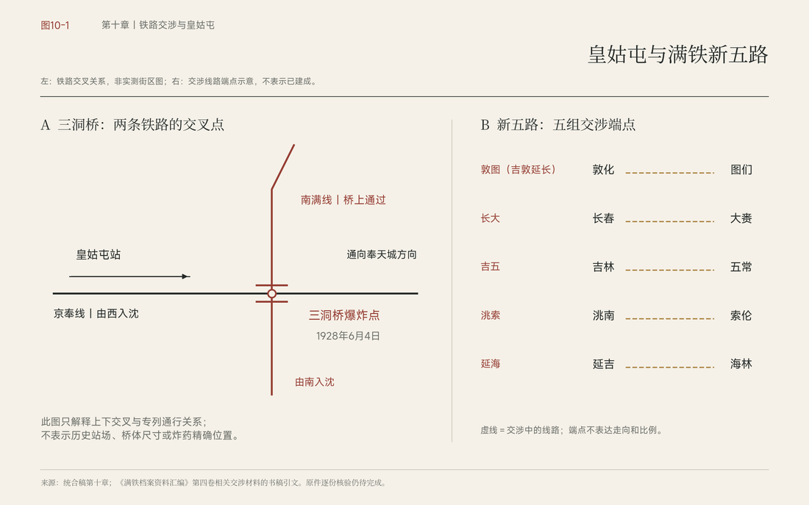
图10-1 皇姑屯与满铁新五路 左图说明京奉线桥下通过、南满线桥上交叉及三洞桥爆炸点；右图列新五路交涉端点，虚线不表示建成。
资料来源：本书第十章及其所引《满铁档案资料汇编》第四卷。两图均为无比例关系示意。
1928年春天，二次北伐的部队从南往北压。蒋介石、冯玉祥、阎锡山、李宗仁几路合围，津浦、京汉、京绥三条线同时吃紧。张作霖在北京坐不住了，决定把奉军主力撤回关外。这个决定在军事上是对的：再守北京，主力会被包在城里；退回东北，还有东山再起的机会。日本方面也在重新算账：一个退回东北的张作霖，还值不值得支持，还是换一个人更省事。
5月18日，日本政府向南京和北京两政府发出《觉书》，声称战乱波及满洲的时候，日本将采取“适当而有效的措施”。这份声明把满洲治安同关内战争连在一起，等于告诉中国双方：关外的事，日本要管。张作霖要退，得看日本脸色；南京要追，也得考虑日本反应。皇姑屯的炸弹，就埋在这个节骨眼上。
河本选皇姑屯，不是随手一指：京奉线与南满线在这里交叉，交叉点是日本守备队能够活动的地方。炸药埋在这里，既方便下手，也方便事后推给“中国人自己干的”。
6月2日深夜，张作霖的专列从北京正阳门东站开出。随行的有官员、卫队和家眷，沿线由奉军和日本守备队分段警戒。6月3日凌晨，专列过丰台，张学良、杨宇霆下车返京；16时抵山海关，吴俊升上车随行。京奉铁路归中国管，南满铁路归日本管，两条线在沈阳西北的皇姑屯交叉，交叉处有一座三洞桥。专列要回奉天，必须从这座桥下经过。这个位置，日本人比中国人更熟。
6月4日清晨5时23分，专列驶到桥下，炸药起爆。车厢被炸飞，黑龙江督军吴俊升当场死亡，张作霖受重伤，被抬回大帅府，当天上午9时30分死去。3爆炸用的炸药有一百多公斤，分装在麻袋里，用电流引爆；埋药、接线、观察，都要有人在日本守备队控制的范围内活动。这不是一两个人临时能干成的事。
主谋是关东军高级参谋河本大作，关东军司令官村冈长太郎也脱不了干系。河本要的不是一纸合同，他要的是张作霖的命：人一死，奉军群龙无首，日本才好趁乱动手。他甚至想过由谁接替张作霖，中意的是杨宇霆。别的日本人士不赞成这个方案，日本内部对“换谁”没有共识。暗杀的计划，从头到尾都带有赌的性质。
日本政府事前知道多少，现有的材料只能证明三件事：关东军部分军官策划并实施了爆炸；日本内阁和外务省没有下过暗杀命令；事后陆军中枢和内阁参与了遮掩和轻处。把爆炸说成日本政府的正式决议，没有证据；说成几个军官的擅自行动、同日本国家无关，也说不通，因为行动者用的是日本军队的驻地、铁路警备和情报网，事后受的也是日本军队的处分。爆炸之后，日本方面先放消息，说是南方派来的便衣扔的炸弹；这个说法编得不算高明，可日本控制的报纸照登，一时也迷惑了不少人。
爆炸之后，奉天当局秘不发丧。张学良在关内处理撤军，接到消息后赶回奉天；张作相、万福麟等元老出面维持，省署、军队、银行照常运转。日本方面等着看奉系乱起来，结果没有等到。张学良顺利接班，东北没有分裂，河本的算盘落空了一半。
从责任上说，皇姑屯是日本军人有计划的侵略暴力，这点没有含糊的余地。张作霖在对日交涉中有妥协，有拖延，也有自主的举动，这些都可以讨论；他妥协多少，都不能成为日本军人炸死他的理由。把暗杀说成“张作霖亲日不够彻底”的报应，是替凶手找借口。
日本驻奉天总领事馆的人很快来探问，奉天当局用“伤势不重”搪塞。日本方面半信半疑，派人打听，得到的消息前后不一。这种信息上的模糊，给奉系争取了十几天时间。6月19日前后，张学良秘密返回奉天；6月21日，奉天方面公布张作霖死讯，开始发丧。丧仪办得很隆重，送别老帅，也给东北人看：奉系还在，局面稳得住。
6月4日上午，沈阳城里的气氛很怪。帅府的人进进出出，省署的官员被叫去开会，日本领事馆的人在打听消息。街面上还同往常一样，商铺开门，行人来往，只有少数人知道出了大事。奉天当局一面封锁消息，一面调动军警维持秩序，防止有人趁乱生事。这种外松内紧的状态，维持了半个月。
爆炸的消息传到东京，日本政府的第一反应是撇清。外务省说事件同日本军人无关，军方含糊其辞，报纸按官方口径报道。可纸包不住火：爆炸地点在南满铁路附近，现场留下的炸药、导线和埋设痕迹都指向日本军人，中国方面提出抗议，国际舆论追问，日本国内也有议员要求查明。田中内阁顶不住，决定让几个相关部门一起查。
1928年9月，外务、内务、陆军三省设了一个非正式调查委员会，9月22日成立。10月23日第二次会议的材料，已经把河本大作牵了出来；宪兵系统的调查也提供了相近的证据。到这个时候，日本高层对“是谁干的”心里有数，问题变成“怎么处理”。这个委员会没有起诉权，也没有公开审判的程序，能做的是调阅材料、询问证人、写报告；宪兵系统的调查比委员会走得远，查到了河本的策划，可查清楚不等于处理清楚。
处理的办法，从“查清”转向“控制损害”。陆军和执政党里有人反对公开，理由是军队声誉和统帅权；西园寺公望和部分宫中近臣主张严惩，理由是军纪和国家信用。田中义一在两种压力之间摇摆。他当过陆军大将，知道军方的脾气；他又坐在内阁总理的位置上，要向天皇和国会交代。12月24日，他向天皇表示，如果军人涉案，一定依法严办。这句话一说出口，就把自己逼到了墙角。
真正到下决心的时候，田中退了。公开军法审判会牵出关东军的警备体制，会动摇军心，会让内阁同陆军彻底翻脸，这些代价他付不起。最后的处理落在铁路警备责任和行政处分上：河本大作停职，编入预备役；村冈长太郎也受到相应处理。没有公开的军法审判，没有同谋杀相称的惩罚，一个策划炸死外国元首的高级军官，就这样被“处理”掉了。
处分出来以后，田中内阁的威信没有保住。天皇追问，国会质询，陆军不满，内阁里外不是人。1929年7月2日，田中内阁辞职。4首相下台并不等于事情查清，也不等于河本接受了审判。政治责任、组织处分、司法责任，三样东西各走各的路，最后一样都没有走到底。
遮掩的制度意义，比处分本身更大。陆军中枢限制公开，把军队组织护在背后；内阁接受折中，文官政府对军方的约束显得软弱。事前没有命令，事后参与减责，两件事可以同时成立。评价田中内阁，不必说它策划了爆炸，也不能因为它犹豫过就忽略它最后的妥协。它想管，没管住；管不住之后，选择了遮掩。内阁辞职以后，继任的首相不会再去翻旧账，河本大作等人没有受到追诉。
这件事还给关东军和后来的日本军官传了一个信号：在现场造成既成事实，中央未必敢深究。皇姑屯同九一八之间不能画一条自动的因果线，可问责不足确实削弱了中央约束驻外军队的可信度。日本后来的对华政策越来越硬，内阁、军部和当地驻军各有各的算盘，不能只怪某一级“独走”。
日本内部的分歧，也在这件事里露了出来。外务省和满铁要的是一个能谈判、能签约的对手；张作霖死了，合同找谁签，条约找谁认，都成了问题。关东军要的是军事上的主动，换一个听话的人，或者干脆制造混乱。两种算盘打不到一起。爆炸之后，日本的对华政策没有变得更统一，反而更乱。
对中国方面，这件事的教训很沉重。一个国家的高级军政首脑，在自己的国土上，被外国驻军炸死，事后凶手只受了行政处分。弱国的外交、司法、军事，都护不住自己的元首。东北后来加快易帜，同这种安全困境有直接关系：靠日本的支持保不住东北，靠自己的力量又不够，只能往南京靠。
陆军中枢在这件事里的角色，最容易被忽略。它没有下命令，可是它掌握着军队的编制、人事和纪律；出了事，它又参与调查和处分。一个负责任的中央军事机关，应该做的是事前约束、事后查清；它做的是事前放任、事后护短。这不是某一个参谋的失误，是制度上的漏洞：驻外军队有自己的情报和行动能力，中央既没有常设的监督机构，也没有独立的调查程序，出了事只能靠临时凑一个委员会。
皇姑屯炸死了一个人，没有炸垮一个集团。张学良在元老推举下接班，东北的军队、财政、官署照常运转，省议会和保安机构很快搭起架子，日本想看到的分裂没有出现。张作霖经营多年的那套班底，在他死后表现出相当的韧性：省署有人管，军队有人带，银行有钱转，元老们知道这时候不能乱。东北没有按河本的剧本走。
日本想通过暗杀换一个听话的领导人，结果也没有达到。河本中意杨宇霆，别的日本人士不赞成；奉系内部推出来的是张学良，一个背着杀父之仇的年轻人。日本人很快发现，新领导人比老帅更难打交道：老帅还会算利益、做交易，少帅心里有一笔血债。暗杀解决了一个人，制造了更深的敌意。
奉日之间的信任，从此打了折扣。张作霖活着的时候，双方虽有激烈争执，谈判和人员往来还维持着；皇姑屯之后，张学良面对的是杀父的日本，东北社会把南满铁路、关东军和满蒙权益看成侵略的工具。对日接触没有立刻停止，铁路谈判还在继续，可每一次交涉都比从前难。信任这种东西，破坏一次容易，修复起来要很多年。
张学良接班以后，对日本的态度比父亲硬。他心里有杀父之仇，又知道东北的实力打不过日本，所以采取的是“表面周旋、暗中靠向南京”的办法：对日本的交涉能拖就拖，能顶就顶；同时加快同南京的联系，借全国的力量同日本周旋。易帜就是他交出的第一份答卷。这份答卷让日本不高兴，也让南京满意，东北在两大势力之间的位置，从此清楚了一些。
1928年12月29日，东北易帜，改悬青天白日旗，服从南京国民政府。日本想阻止，没有拦住：东北原本打算在7月22日改旗，驻奉天总领事林久治郎当面警告张学良，日本甚至提出用武力、财力支持东北对抗南京；张学良只好把日期往后推，一边同日方周旋，一边同南京谈判，争取南京答应东北内部人事不变、财政自理。12月29日，张学良、张作相、万福麟等通电全国；12月31日，国民政府任命张学良为东北边防军司令长官，张作相、万福麟为副司令长官，四省主席也由南京任命。5易帜解决了东北在全国法统里的位置，没有解决安全问题：南满铁路还在日本手里，关东军还在东北驻扎。
对河本和关东军的评价，不需要用张作霖的妥协来平衡。暗杀是日本军人的侵略行为，行动者想用暴力改变中国政局，这个性质不会因为张作霖曾经让过步而改变。日本机构之间的分歧，可以用来说明责任怎么分，不能用来替凶手开脱。张作霖在对日交涉中让了多少，同日本军人有没有权利炸死他，是两个问题。
皇姑屯也暴露了那个时代的一种危险：把国家权益寄托在驻军现场军官的判断上，文官政府事前管不住，事后又不肯严办。日本在东北的驻军有自己的情报、自己的警备、自己的行动方案，东京的政客想管，手伸不到现场；出了事，又怕丢脸，选择遮掩。这套做法在皇姑屯试了一次，在九一八又试了一次，一次比一次大。
东北后来能够平稳过渡，靠的是奉天高层、张学良和元老们的应急政治，不是河本计划里的哪一步。爆炸打乱了原有的权力交接，奉系用推举、秘不发丧和保安机构把局面稳住。这个过程有妥协，有交易，也有运气。历史有时候就是这样：一个精心策划的暗杀，败给了一群临时抱佛脚的人。
对东北军来说，皇姑屯改变了最高领导人，也改变了权威的来源。张作霖的权威是打出来的、熬出来的，旧部服他；张学良的权威来自父辈的余荫、元老的推举和南京的任命，三样东西都不如他父亲那一身伤疤硬。他要在军队里立威，就得做几件让旧部服气的事；后来处决杨宇霆、常荫槐，就是这种处境下的选择。皇姑屯的爆炸声，一直响到1930年代的东北军内部。
对东北的普通人来说，张作霖的死是一个时代的结束。老帅在的时候，再苦再乱，大家还知道谁说了算；老帅一死，少帅能不能撑住，日本人下一步要干什么，南京能不能帮上忙，都成了未知数。皇姑屯那声爆炸，不只炸死了一个人，也炸碎了东北人对旧秩序的最后一个念想。
张作霖的统治方式，说到底是人情加威慑。对旧部讲交情，给官、给钱、给地盘；对不听话的人讲手段，撤职、扣饷、动兵。这套办法在奉系内部管用，因为大家都认他这个“老帅”；出了奉系，到了北京，面对各路盟友和外国使团，这套办法就不灵了。皇姑屯把他个人的统治方式连同他本人一起结束，留下一个必须靠制度和实力才能撑住的局面。
张作霖的一生，从辽西的保险队起家，受抚、升官、督奉、称王，最后在北京坐了不到一年的大元帅，死在离沈阳城不远的一座桥下。他的成功靠三样东西：枪杆子、人情网和时机；他的失败也栽在这三样东西上。枪杆子能打天下，打不出制度；人情网能拢住旧部，拢不住现代国家；时机能让他一次次翻身，翻到1928年，时机用完了。
他留下的东北，比二十年前强得多。铁路修起来了，兵工厂办起来了，财政有一套能运转的机构，省城的马路、电灯、学校、医院也有模有样。这些都是真的，不能因为他后来失败就不认账。可这些建设有一个共同的毛病：靠他个人的权威推动，没有变成不依赖某个人的制度。他在，事情能办；他不在，事情就要看接任者的本事和运气。
他留下的东北，也比二十年前更危险。日本在东北的驻军、铁路、附属地、矿山和商权，一样比一样深；苏联在北满的势力也没退。他同日本周旋了半辈子，签过字，拖过账，顶过牛，最后死在日本人手里。他守住了自己的一亩三分地，没有守住东北的主权；他让日本觉得他不好对付，又让日本觉得非除掉他不可。
对张作霖这个人，还要再算一笔账：他会用人，也会误人。对张学良，他给的是最好的教育、最亲的旧部、最大的兵权，却没有给一套能服众的继承安排。张学良早年染上鸦片瘾，身体和精神都受影响；在张作相、吴俊升、张景惠这些元老眼里，他始终是“少帅”，不是“老帅”。张作霖在，元老卖老帅的面子；张作霖一死，面子就薄了。皇姑屯之后，元老推让、保安会过渡、张学良接位，看起来顺，底下是“老帅的人”和“少帅的人”两套班底在磨合。杨常事件里，张学良用两颗人头立威，也把这道裂缝撕开了。
他把张学良托给郭松龄，本意是让儿子有一个能打仗、懂新军的帮手。郭松龄是张学良在讲武堂的教官，两人有师生之谊；张学良把郭当老师、当兄长，郭把张当学生、当知己。师生情分和统属关系混在一起，该立规矩的时候讲情面，该讲情面的时候又摆统帅架子；等到郭松龄起兵，这笔账已经算不清。郭变之后，张学良对旧部的信任、对元老的倚重、对杨宇霆的猜忌，都有这层影子。郭松龄的反奉、杨宇霆的被杀，原因很多，继承问题没安排好、少帅在老人中没有威望、把师生关系当成领导关系，是躲不开的深层原因。
张作霖的野心不小。他从督奉做到东三省巡阅使，再做到大元帅，想的是问鼎中原。可他的政治能力，配不上这个野心。他会拉拢、会收买、会看风向，却不会整合；会打仗，却不会建设国家；能压住奉系内部，却压不住北洋各派和外国势力。1922年败回关外，1924年赢了又守不住，1927年坐上大元帅，1928年就得退回关外。这不是运气不好，是政治能力的天花板。
他也有他的好处。草莽出身，讲江湖义气，对旧部、对乡亲、对东北这片土地有朴素的感情；对日本，他签过字、拖过账、顶过牛，没有完全低头。修铁路、办兵工厂、兴学校、整财政，这些事不是每个军阀都做。可江湖智慧代替不了政治家、军事家的素养：他不懂现代财政，不懂国际法，不懂政党政治，也不懂怎样把个人的权威变成制度。他靠人情和威慑统治，人一死，威慑就散了。
对中国来说，皇姑屯是一个提醒。一个国家如果内部四分五裂，财政、军队、外交都靠地方实力派各自打理，它的首脑在自家国土上被外国军人炸死，也只能咽下这口气。东北易帜是想换一条路：把东北放进全国的法统里，借南京的力量对付日本。这条路后来也没有走通，可1928年的人只能这么选。
皇姑屯还有一层象征意义。北洋时代讲的是实力和交易，谁兵多、谁钱多、谁会谈判，谁就坐庄；到了1928年，这套规则撑不住了：北伐军把政党和群众运动带进战争，南京方面要的是全国统一；日本要的是满蒙权益的落实，关东军甚至不惜换掉自己扶植的人。东北夹在中间，靠一个老帅的个人手腕已经周旋不下去。张作霖的死，是一个时代的句号，也是另一个时代的开头。
皇姑屯之后，日本在东北的侵略步伐没有停。1929年世界经济危机爆发，日本国内矛盾加深，军部里的强硬派更急于从东北找出路；1931年9月18日，关东军又在柳条湖动手，这次的规模更大，准备更足。从皇姑屯到九一八，隔了三年，手法如出一辙：现场军人先造成既成事实，中央事后追认。皇姑屯没有受到应有的清算，九一八就来得更容易一些。
张作霖在中国近代史上的位置，有点像一道分水岭。在他手里，东北从一个日俄争夺、北洋政府鞭长莫及的边疆，变成了有铁路、兵工、财政和军队的区域政权；他死后，东北的自主空间迅速被日本压缩，到1931年连这块根据地也丢了。他没能把东北建成一个现代国家的一部分，可他让东北有了自己的军队、财政和工业，也让东北在夹缝里撑了十几年。这个功劳和这个局限，都要算在他头上。
如果1928年6月4日清晨没有那声爆炸，东北的易帜会来得更早，还是更晚？这个问题没有确定答案，但有三件事可以确定。张作霖若在，他对日本的依赖、对关内战争的执念和奉系内部的旧账都还在，东北的转向会拖得更久；张学良若在父亲活着时接班，他手里的权威会比皇姑屯之后更薄；南京方面的拉拢、日本的施压和东北财政的窟窿，不会因为一个人活着就消失。爆炸改变的是东北政治的时间表，没有改变方向。
奉日关系与东北铁路，参见金冲及《奉系与东北铁路》序；打通铁路里程据《日本研究》相关论文摘要，具体统计口径待补。
新五路交涉与“阅”字，见习五一《“满蒙铁路交涉”与日奉矛盾的激化》，《近代史研究》1992年；满铁档案所存1927年10月13日电报见《满铁档案资料汇编》第四卷。
皇姑屯爆炸时间、吴俊升遇难与张作霖当日死亡，见《文摘报》2017年12月16日所刊井振武《张学良密返奉天》；河本大作的策划，参见日本防卫研究所战史资料。
三省调查委员会、田中内阁处理与辞职，参见日本研究者关于三省调查与田中内阁处理的研究；河本大作停职、编入预备役及村冈长太郎处分，据日本战史资料与相关研究综述。
易帜日期与日本干涉，见本卷第十一章；1928年12月31日国民政府任命名单据当时公报与地方志记载。
这一编从继承写起。张作霖死后，张学良在元老、省议会和保安机构的推举中接掌东北；年底易帜，国家法统转向南京，东北的军队、财政、人事与外交却保留很大自主。杨常事件显示新领袖以非常手段集中权威；中东路与两次入关显示东北仍能左右全国政局；九一八则把这一切推到极限：日本关东军发动侵略，东北政权在很短时间里失去税源、军工、驻地和行政体系。本编四章分别处理继承与易帜、对外冒险、九一八当夜、以及从江桥到长城的抵抗与撤退，读者可以注意“日本侵略责任”与“中国内部应对”必须分开评价。
1928年6月4日清晨5时23分，京奉铁路上，张作霖的专列经过皇姑屯站以东的三洞桥。一声巨响，桥梁塌下，车厢被炸成几截。同车的黑龙江督军吴俊升当场死亡；张作霖被抬回奉天大帅府，上午9时左右不治。炸桥的是关东军高级参谋河本大作安排的人。
这件事没有疑义：一位统治东北十几年的军政首领，被外国驻军炸死在自己的国土上。日本事后把爆炸说成中国便衣投弹，是遮掩，也是挑衅。河本大作想干什么，关东军内部谁事先知情，事后各方怎样处理，是另外一个问题。把一名军人或一个参谋机构的行动，直接说成日本政府统一部署的国家计划，证据不够；把日本各机构的责任混成一笔，又会让真正动手的人溜掉。侵略的事实要钉死，动手的链条要分开查。两者不冲突。
河本大作不是一个人胡来。他的上面有关东军司令官村冈长太郎，关东军同东京的外务省、陆军中央在时机和手段上并不一致。田中义一内阁上台后推行所谓”满蒙积极政策”，逼张作霖签下铁路借款协议；张作霖当面敷衍、背后拖延，最后退出北京。日本军人中有一派认为，这个旧代理人已经不好用了。爆炸是这种判断的极端产物。
关东军敢在皇姑屯动手，还有一个背景：满铁沿线的驻军、演习、情报网已经经营了二十年，东北的铁路、港口、矿山，处处有日本的影子。炸一个张作霖，在他们看来是换个代理人的成本，不是发动战争。这种把中国土地当自家后院的心态，比炸药本身更可怕。
张作霖这个人，要分两面看。他有本事：把一个保险队出身的武装带成东北最大的军政集团，办兵工厂、修铁路、开学校、整顿财政，东北的近代工业基础有他一份功劳。他也有致命的毛病：把东北当成张家的私产经营，用人看忠诚不看制度，对日本既利用又交易，直到被交易的对象反噬。他死后的继承难题，一半是日本人炸出来的，一半是这套私产逻辑留下来的。
对奉系来说，炸弹炸掉的不只是一个人。张作霖在北京做陆海军大元帅，在东北是军务督办、保安总司令和各省长官共同承认的最高权威。他的权威靠三样东西撑着：军队听他，官署听他，元老和地方实力派认他。这三样没有一样被写进一套公开的继承规则。他一死，谁来发号令、谁来分钱、谁来代表东北同南京和日本打交道，全成了问题。
奉天的第一反应是瞒。省公署封锁消息，只说大帅受伤，照样办公，照样同日本领事周旋。这样做有实际理由：关内还有几十万奉军，吉黑两省各有实力人物，日本关东军就在城外，消息一乱，军队先乱。日本人来问，奉天当局用”伤势好转”搪塞；日本领事半信半疑，却也没法立刻翻脸。
日本方面其实很快知道出了大事。关东军在自己的铁路线上埋了炸药，炸完又派人去现场，心里有数。东京的外务省和陆军中央各有各的盘算：外务省怕事情闹大影响交涉，陆军中央怕关东军擅自行动坏了布局。各方都想看看奉天怎么反应，再决定下一步。奉天越镇定，日本越不好借”治安混乱”动手。瞒了十几天，等的是张学良回来、军队收拢、各省态度落定。
那十几天，奉天城里的日子不好过。省公署照常办公，官员照常上班，日本领事照常来问，得到的答复是”大帅伤势见好”。帅府里进进出出都是医生和卫兵，报馆不敢乱写，老百姓私下传。日本人心里明白，却不点破：点破了，就要立刻决定下一步，而东京还没有拿定主意。奉天当局要的就是这个空档，把丧事拖成公事。
张作霖的丧仪后来办得很隆重。日本人也来吊唁，送花圈，说场面话。丧事办得体面，等于告诉各方：奉系没有乱，东北的官署还在，条约还会履行。对刚刚失去主心骨的集团，这种仪式有实际用处：给内部和外部一颗定心丸。
关内的撤退同时进行。张学良的第三、第四方面军是奉军主力，从北京一带经山海关、滦州向关外收缩。张宗昌、褚玉璞的直鲁军残部还在滦东，既想保留部队，又想从日本人那里讨点支持。撤退要安排车辆、给养、伤病，还要提防北伐军追击。张学良在正式继承之前，先得把这几万人的退路理顺。这是他后来能稳住东北的底子：手里有兵，而且兵听他的。
黑龙江的窟窿也得补。吴俊升与张作霖同车死难，省里一时无主，先由吴泰来暂代，6月20日改由万福麟代理督办。奉天这边等张学良。吉林的张作相资历最老，是张作霖的拜把兄弟，也是奉系里唯一能同少帅比肩的人物。
6月19日，张学良回到奉天，当天通电就任奉天督办。他上任后先做的，是遍访驻奉各国领事和关东军司令村冈长太郎。这个动作很实在：新领导人要让外国人知道，奉天的官署还在运转，条约还会履行，治安有人负责。日本人要的就是这个态度的表面保证；张学良要的是几天安静。
6月21日，奉天公布张作霖死讯，正式发丧。同一天，东三省省议会联合会开紧急会议，推举张作相为东三省保安总司令，张学良为奉天保安司令，万福麟为黑龙江保安司令。张作相一再推辞，最后获准辞去总司令。也有记载把推举日期写成6月24日，把张作相建议由张学良出任的细节写得更清楚。日期差几天，过程却一致：先推元老，元老坚辞，再落到张学良身上。
张作相这个让，值得多说两句。他要是接了，名分上名正言顺，吉林的底子也在，奉系内部未必有人敢公开反对。他不接，一方面是给张作霖留体面，给少帅铺路；另一方面也是算账：接了总司令，就要替整个奉系扛下关内撤退、财政亏空和对日交涉三副担子，还得罪少帅的嫡系军团。让出去，吉林还是他的，元老的地位还是他的，少帅还得领他的情。这背后有老江湖算完账之后的体面选择，也有给少帅铺路的考虑。结果对奉系是好的：一场可能的内争没有发生。
同一天，东三省军民联席会议议决暂不换旗，并令前线主力在山海关一带坚守。暂不换旗，是给对南京的谈判留时间；守山海关，是防止谈判期间边界先被人推掉。这两手都很务实，也很被动。东北此时没有能力同时同南京开战、同日本翻脸，只能用时间换空间。
7月1日，张学良通电表示决不妨碍南北统一，并请速开国民会议。话说得留有余地：统一可以谈，旗子先不换。
通电发出后，南京的报纸把”不妨碍统一”登在显眼位置，奉天的报纸登得低调一些。两边的措辞不一样，意思都懂：东北愿意谈，但要谈条件。蒋介石接住了这个信号，派人和奉天继续接触。7月3日或4日，他正式就任东三省保安总司令（通电与实际就职的日期记载不一，差一两天不影响过程）。7月17日，东北三省议员大会通过《东北各省区临时保安公约》；7月19日，临时保安委员会在奉天成立，张学良任会长，袁金铠任副会长，内政、外交重大事项交委员会合议。
奉系内部不是铁板一块。旧派以张作相、张景惠、万福麟为代表，资格老、地盘实；士官派以杨宇霆为代表，懂技术、掌要害部门；新派以张学良、郭松龄为代表，进讲武堂、练新军，想在旧奉军里搞现代化。1925年郭松龄起兵反奉，杨宇霆站在张作霖一边，两人结下死仇。郭兵败巨流河，夫妻被杀；张学良收拢郭部旧人，留用不杀。这笔账，到1929年还在算。
保安会成立那天，张学良手里的牌是第三、第四方面军和讲武堂系军官，张作相手里的牌是吉林和元老声望，杨宇霆手里的牌是兵工厂、参谋系统和日本方面的人脉。三副牌摆在一张桌上，谁都不是绝对赢家。保安会就是这张桌子的形式：大家坐下来议事，少帅当会长，重大事情合议。它能成立，说明各方都不想在日本人虎视眈眈的时候先打内战。
这套保安制度，是奉系在非常时期给自己搭的一个台子。台子的用意有两个：一是把”谁说了算”用公议的形式固定下来，二是让各省和元老在重大决策里有位置，免得少帅一上台就独断。它平时管用。真到紧急军务、秘密外交、高级干部翻脸的时候，会长手里的兵和卫队才是最后的话事人。制度是壳，兵是里子。1928年的奉系，壳和里子都在，但两者没有接好。
也是7月19日，热河的汤玉麟宣布改悬青天白日旗。热河先行一步，等于替奉天试探南京和日本的反应。东三省主体仍旧拖着，拖到南京把条件谈清楚。
这里要评价一下张学良的继承资本。他不是只靠”大帅的儿子”四个字坐上位置的。第一，他有第三、第四方面军这支能打仗、听指挥的主力；第二，他在讲武堂和军中经营多年，郭松龄事件后对旧部采取留用政策，许多军官欠他一份人情；第三，他参与过关内的停战交涉，知道南京要什么、能给什么。有这三样，元老和省议会才愿意把他推上去。长子的身份是门票，兵和网络才是座位。
反过来，张作相、万福麟这些人也不是白让的。他们保住了吉林、黑龙江的地盘和人事，保住了元老在保安会里的位置，也保住了将来跟少帅讨价还价的资格。继承在半个月里完成，靠的是各方都觉得”先别打，打了都吃亏”。这是利益计算出来的稳定，不是制度保障出来的稳定。
1928年下半年的中国，南京国民政府最想要的是”统一”两个字。北伐打到北京，奉军退回关外，如果东北继续挂五色旗，南京的统一就缺一大块。蒋介石需要张学良公开归附，哪怕只是名义上的；张学良需要南京停止军事压力，承认他在东北的地位，最好再给点财政和外交上的支持。两边都有求于对方，谈判就有得谈。
蒋介石的日子也不好过。北伐打到北平，军费欠了一大堆，党内各派明争暗斗，日本在山东制造惨案，国际上盯着中国的统一问题。他要的是东北赶快表态，越快越好，哪怕条件宽一点。张学良要的是南京别逼、日本别动、自己别丢兵权。两个人都急着要对方给的东西，谈判才谈得下去。
6月到7月，双方通过密电和代表往来摸底。南京的条件是服从国民政府、改悬青天白日旗、奉行三民主义；东北的条件是军队不编散、人事不更动、财政不外解、外交由中央出面但地方仍有发言权。7月1日那个”不妨碍统一”的通电，就是把价码先摆上桌：方向认了，细节慢慢谈。
日本那边同时压过来。7月中旬，奉天总领事林久治郎当面警告张学良，反对易帜，还说日本可以出钱出枪支持东北对抗南京。这话听着像帮忙，实际是绳子：拿了日本的钱和枪，东北的对内对外政策就得看东京的脸色。7月22日，东北原定易帜，因日本反对而推迟。张学良随后向蒋介石陈述日本武力压迫的困难。推迟是事实，压力也是事实。
8月，张作霖的丧仪在奉天举行。日本田中内阁派前驻华公使林权助来吊唁。吊唁是礼节，林权助的任务却是劝张学良不要易帜，话里带着出兵的威胁。丧事场合谈国事，是那个年代外交的常态。张学良一面接待，一面把话往外交辞令上引，既不当场顶回去，也不给承诺。后来流传的许多现场对白，来自回忆，语气和内容都加工过，不能当作会议记录用。
日本内部的步调并不齐。外务省在7月18日制订《满蒙时局措施方案大纲》，把东北变局当作专门政策问题处理，核心是保住满蒙权益和当地治安；关东军和满铁另有一套算盘，希望趁东北换主的当口多拿路权。张学良对这个看得很清楚，所以他对日本采取拖：不公开对抗，也不答应实质条件，等南京那边的价码谈拢。
拖是要付代价的。日本催得越来越紧，南京也开始怀疑东北是不是在拿日本当筹码。张学良只能两边下注：对南京说，日本压力太大，易帜需要时间；对日本说，东北内部不稳，易帜不是他一个人能定。两边都不满意，但两边都还愿意等。这种走钢丝的本事，是他1928年最见功力的一手。
日本要的不只是易帜延期。它要吉会铁路、长大铁路的修筑权，要满蒙五路的借款合同，要满铁在东北的垄断地位。张作霖时代签过一些密约，张学良上台后，日本催着履约。东北这边，自建奉海、吉海铁路，就是要绕开满铁；各地学生、商会反对日本修路的运动，一浪接一浪。张学良要是签了，国内舆论会把他当成第二个张作霖；要是不签，日本就加压。
易帜前还有一件必须办的脏活：滦东的直鲁军。张宗昌、褚玉璞的部队是旧北洋的残渣，军纪坏，没地盘，最容易被日本人收买。他们赖在滦东不走，南京就怀疑东北在庇护旧军阀，日本则可能扶植他们捣乱。9月初，奉天军事会议决定：张宗昌下野，奉方给遣散费；不服从，就同白崇禧的部队夹击。随后第三、第四方面军向昌黎、滦州一线行动，直鲁军到9月下旬溃散。
这件事办得利落。张学良用一场小规模的军事行动，换来了南京的信任和关内边界的干净。遣散费花的是银子，省下的是政治麻烦。
南京那边也有自己的算盘。蒋介石刚复职不久，北伐要收尾，党内要摆平，日本在济南的惨案还压着。
1928年的中国，表面上是北伐胜利、全国统一在望，底下是财政枯竭、派系林立、日本步步紧逼。济南惨案的血还没干，南京对日本的交涉一筹莫展。蒋介石需要一个看得见的统一成果，东北易帜就是最合适的成果：不用打仗，不用花钱，旗帜一换，全国统一的名分就齐了。他需要东北和平归附，好腾出手来处理内政外交；他也怕逼得太紧，把张学良推到日本怀里。所以南京的条件开得宽：人事不动、财政自理、外交归中央。宽有宽的代价，中央对东北的控制从一开始就是打折的。
张学良这边同样怕。他怕南京借易帜改组东北的军队和人事，怕中央军开进山海关，怕自己被架空。双方互不信任，只能靠密电和代表来回传话。12月6日那封密函，把条件写成白纸黑字：对外中央办，内政现职维持，即行易帜。这三句话，是半年谈判的成果，也是后来东北与中央关系的宪法。
10月8日，国民党中常会通过张学良为国民政府委员；10月9日，东三省保安会决议张就任，并把这件事同易帜衔接起来。这等于南京先把”自己人”的身份给了张学良，东北再用这个身份完成换旗。政治上的先后次序，安排得很清楚：先给名分，再换旗子。
真正的突破在12月。12月6日，邢士廉、王树翰带着蒋介石致张学良的密函回到奉天。蒋在函中承诺：对外事务由中央办理，东北内部仍由现职各员维持，并要求即行易帜。这个条件把张学良最担心的两件事都解决了：一是换旗之后中央会不会来改组东北的人事，二是外交上日本逼上门来时中央管不管。人事不动，外交归中央，少帅要的就是这个。
12月29日，张学良、张作相、万福麟等联名通电全国，宣布遵守三民主义，服从国民政府，改易旗帜。
通电发出的当天，奉天的官署、学校、工厂换了旗子。五色旗降下，青天白日满地红旗升起。各县接到通令，陆续照办。日本领事馆派人到省署探问，得到的答复是”东北服从中央政府，条约照旧履行”。市面没有乱，军队没有动，南京那边开庆祝会。一场改变东北政治归属的大事，在几天里办完了。安静得有点不像那个年代。东三省正式换旗。12月31日，国民政府任命张学良为东北边防军司令长官，张作相、万福麟为副司令长官；翟文选、张作相、常荫槐、汤玉麟分任奉天、吉林、黑龙江、热河省政府主席。
通电由张学良同张作相、万福麟联名，沿用了继承时期的集体形式。这个细节有意义：易帜由少帅同张作相、万福麟联名，等于整个东北领导层的公开承诺。换旗之后如果有人反悔，丢的是整个集团的脸。
从7月拖到12月，这半年不是白拖的。东北利用这段时间办成了几件事：直鲁军解决了，保安制度搭起来了，南京的条件谈清楚了，日本的态度也摸得差不多了。代价是日本的不满和南京的猜疑都在积累，国内舆论也在催。张学良赌的是：只要最后旗换了，前面的拖延都可以解释成”慎重”。他赌赢了。
1928年12月29日的通电，换的是旗子和法统。东北从此承认南京国民政府是中国的中央政府，国民党和国民政府的三民主义成了公开的政治语言。南京的报纸说这是全国统一，东北的报纸也跟着说。这个统一，不是空话：它结束了北京政府垮台之后东北在政治归属上的悬空状态，也让中国在国际上可以拿”全国政府”的名义讲话。对打了十几年内战的南北双方，这都是一件真事。
但换旗不等于换制度。南京给张学良的任命是东北边防军司令长官，给张作相、万福麟的是副司令长官，给四省的是省主席。名分从中央来，人选从东北来。12月6日蒋的密函写得很清楚：对外事务由中央办理，东北内部仍由现职各员维持。前一句把外交权收归中央，后一句把东北的人事和日常行政留给了张学良。
这个安排在纸面上是统一，在运行中是两套权力的拼接。可以分几项看：
外交。条约、宣战、重大交涉归中央，这是国家主权的基本原则。东北同日本、苏联的日常交涉却离不开地方：领事馆在奉天，关东军在旅大，满铁在长春到沈阳之间，中东路在哈尔滨。中央外交官从南京来，人生地不熟，许多事情还得靠东北的官署去谈。外交名义统一了，外交执行还是一条地方腿。
军事。东北军的番号纳入了全国序列，最高长官由中央任命，这是真的。部队的师旅长官、补给、驻防、调动，中央插不进手。南京要调东北军一个师，得先问张学良；张学良不同意，命令就是一纸空文。军令统一停在名义上，执行还是地方说了算。
财政。东北的税、金融、军需自成体系。东北不向中央财政部解款，中央也不接济东北财政，这话有材料支撑。张学良能养兵、能修路、能办兵工厂，靠的是东北自己的钱。中央的任命书给了名誉，给不了军饷。财政不统一，军令统一就是空架子。
东北的财政靠三样东西：关税、盐税和铁路收入，加上奉票的发行。奉票发得多，币值就不稳；币值不稳，商民就吃亏，军队的军饷也缩水。张学良上台后想整顿金融，裁军、缩编、省开支，做了一些，做不彻底。军队是他的本钱，裁谁谁闹；元老的地盘是他的靠山，动谁谁反对。钱袋子攥在自己手里，是东北敢跟南京谈条件的底气，也是东北财政永远理不清的原因。
人事。现职各员概不更动，等于把东北的干部名单原样封存。中央可以换省长，换上去的多半还是东北推荐的人。东北政务委员会成立后，各省主席、元老和专业部门通过委员身份参与决策，各省的人事和财政还在这个委员会里协调。东北政务委员会是易帜后东北真正的中枢，南京的行政院管不到它的日常。
东北政务委员会的委员，是张学良、张作相、万福麟、臧式毅、荣臻这些人，各省主席和要害部门的主管都在里面。委员会开会定大事，主席拍板，日常事务分给各部门。南京的部会下一道命令，到了东北，要先经过这个委员会，再分到省里。中央的政令有人执行，只是要看东北愿不愿意。
党务的进展更慢。国民党在东北设党部，喊了几年，到1931年2月才成立东北党务指导委员会，由张学良兼任主任委员。党部成立得晚，成立之后也指挥不动省政府。东北的干部认少帅，不认党部；认省主席，不认中央委员。意识形态的旗子插上了，组织的根还没有扎下去。
中央对东北的实际支持，也在这段日子里露了底。南京能给的是外交上的名分和声援，给不了军费、军队和物资。后来中东路打起来，东北向中央要援助，中央能给多少、什么时候到，成了大问题。名义统一的好处，在平时看得见；到了危机里，够不够用，要看真金白银。
表11-1 易帜后东北权限的“名义”与“实际”
| 权限 | 名义归属 | 实际运行 |
|---|---|---|
| 外交 | 中央办理 | 东北官署直接对日、对苏交涉 |
| 军事 | 中央任命最高长官、统一番号 | 人事、补给、驻防、调动由东北掌握 |
| 财政 | 中央财政部名义管辖 | 东北自收自支，中央不拨款、不解款 |
| 人事 | 中央发布任命 | 东北推荐现职人员，多数原任 |
| 党务 | 中央党部指导 | 设党部缓慢，党部不能指挥省政 |
| 铁路与税源 | 中央部会监督名义 | 北宁路与地方税收由东北掌握 |
资料来源：作者据《论1928年的东北易帜》等研究整理。
这张表不是要证明易帜是假的。恰恰相反，它说明易帜是一次谈判出来的统一：南京得到了法统和名义，东北保住了军队和钱袋，双方各取所需。蒋介石用一纸任命换来了全国统一的宣告，代价是中央对东北的实际控制有限。这笔账在1928年是划算的：继续打下去，南京的财政撑不住，日本还会趁机扩大事态。张学良也不亏：他用一面旗子换来了中央的承认和外交上的靠山，还保住了军队和地盘。
真正吃亏的是国家制度的长期建设。财政不统一，中央就没有能力在危机时调动全国资源；军令不统一，战时指挥就得靠个人协商；人事不统一，中央的政策到了东北就变样。这些账在1928年看不出来，到1931年就一笔一笔地还。
日本对易帜的态度，也值得记一笔。日本政府不愿看到东北归附南京，又拦不住既成事实。它承认了换旗的结果，却没有放弃满蒙权益：南满铁路、关东州、关东军、条约里的驻兵权，一样没动。东北换了旗，主权环境没有换。把易帜说成”从此外交有中央撑着”，是乐观过头；把易帜说成”换旗没意义”，是低估了法统统一对日本扩张的约束作用。两种说法都偏了。
对张学良的评价，这里可以直说：1928年下半年的易帜，是他一生中做得最漂亮的一件事。他在日本的威胁下没低头，也没蛮干；把时间拖到对自己有利，把条件谈到自己能接受；最后换旗完成，军队和地盘没丢。这件事的功劳是真的。功劳的边界也是真的：他保住的是一个半独立的地方政权，不是一个统一国家的国防体系。
杨宇霆是奉系里少见的科班军人。他毕业于日本陆军士官学校，回国后长期在张作霖手下管参谋、军务和兵工厂。奉军的兵工体系能造枪炮弹药，杨宇霆有功劳。他性格跋扈，同张作霖的旧部、同张学良的新派都有摩擦，但张作霖用他，因为他能干。常荫槐是铁路和行政出身的干才，管过京奉铁路，1928年12月31日被任命为黑龙江省政府主席，还兼着东北交通方面的事务。两个人一个管枪，一个管路，都是要害部门。
常荫槐当时刚被任命为黑龙江省政府主席，人还没有到任，就先把铁路督办公署抓在手里。按官场规矩，这算越界：新官上任，先接省政，再谈其他；他倒好，省主席的椅子还没坐热，先替自己安排一个管铁路的位子。张学良看到文件，心里怎么想，不难猜。
杨宇霆和郭松龄是死对头。郭松龄练兵、带兵，走的是讲武堂一路；杨宇霆掌参谋、兵工，走的是士官学校一路。1925年郭反奉，杨力主镇压；郭失败后，杨在善后中说话很硬。张学良对郭松龄有师生之谊，郭的死是他心里的一根刺；杨宇霆活着，这根刺就一直在。杀杨之后，少帅对旧部的留用更宽，也有补偿郭案的心理在里头。
不过，私人恩怨不是全部。杨宇霆管兵工厂多年，厂里的大小事情他说了算，张学良要插手动用军火，得先问过他。常荫槐管京奉铁路，火车什么时候开、军运怎么排，他有实权。两个人在张作霖时代是能臣，在张学良时代是障碍。障碍不一定要用子弹搬开，这是后来评价他们的关键。
张学良继承之后，杨、常的位置变得微妙。按名分，他们是少帅的部下；按资历，他们是张作霖的同辈，是少帅的父执。张学良想给他们安排明确的职位：到地方上管军务，或者进保安委员会，或者出国考察。杨宇霆都不接。不接职位，又不退出决策，这种状态最难办：责任边界没有，干预的资格却一直在。
杨宇霆和常荫槐有没有野心，是另一个问题。现有的材料能证明他们跋扈、能证明他们抱团、能证明他们对少帅不够恭敬，不能证明他们要造反，更不能证明他们通敌。把”不听话”说成”要叛乱”，中间缺的东西太多。
1929年1月10日下午，事情到了顶点。杨、常到帅府，提出成立东北铁路督办公署，由常荫槐任督办，拿出一份已经拟好的文件，要张学良当场签字。理由是统一管理中东铁路和东北交通，维护路权。张学良说，外交风险大，政局未定，先缓一缓。双方不欢而散。
这场冲突，要拆开看。政策上，双方的分歧其实不大。杨常主张维护路权，张学良也主张；几个月后中东路出事，张学良比杨常更硬。组织上，新设一个督办公署，同已有的交通委员会、省政府、边防军司令机关怎么分权，确实是一笔糊涂账。权威上，问题最清楚：方案和人选由杨常先定，然后要最高长官当场画押。张学良要是签了，以后东北的铁路、交通、人事谁说了算，就成了问题。
真正让张学良下决心的，是第三层。
张学良那一年28岁。他接的是父亲的班，坐的是父亲的位置，面对的是一群父亲的旧部。年轻、资历浅、脾气急，这三样加在一起，最受不了的就是有人当众替他做主。他后来在口述里承认自己年轻时”骄傲、急躁”，这话有为自己开脱的成分，也说明当时的心气。杨常逼签，不只是政策分歧，是对新领袖权威的当面测试。测试不过，以后没人会把他当回事。
当天晚上，杨宇霆、常荫槐在帅府内被卫队处决。
当天的过程，细节有异说。有的回忆说下午谈完，两人被请到帅府另一间屋子，晚上动手；有的说当场就拿下了。打牌、吃西瓜、银元这些细节，来自不同的回忆和后来的通俗读物，生动程度不能当作证据。能确认的主干是：白天谈铁路督办公署，张学良没有签；晚上，杨、常在帅府内被处决；次日，张学良通电公布罪状：暗结党羽、图谋内乱、把持政务、侵款渎职。
这份罪状的分量，要放在当时的政治环境里看。军阀集团处理内部异己，杀人是常事，但像这样杀完再补文书的，还是少见。东北高层第二天照常上班，没人敢问细节；报纸按通稿登；日本领事馆打听消息，得到的答复是”内部整顿”。事情办得干净，干净得让人害怕。
高层当时的反应，史料的记载很少。元老们照常上班，军队照常布防，没有人公开为杨常喊冤。这种沉默，一部分是怕，一部分是明白：少帅动手，是要立威，谁出头谁倒霉。杨常的旧部后来多数留任，该升的升，该调的调，少帅把网收了，没有把网撕破。
和郭松龄案比一比，差别很清楚。郭松龄起兵反奉，是明刀明枪的叛乱；张学良事后对郭部旧人留用不杀，还替郭家说了话。杨常没有起兵，只是跋扈、逼签、揽权；张学良却动了杀机。轻重颠倒的观感，当时就有人觉得不对。张学良自己晚年也说，杀杨是错。错在哪里，他讲得含糊；旁人看得明白：对付一个没有举兵的对手，用对付叛乱的手段，坏了规矩。随后又出现”组织会审”“审讯数小时”“依法判决”之类的说法。这些说法来自事后公布的文书，不是当场程序。没有公开调查，没有让当事人申辩，没有给旁听和复核的机会。所谓判决书，是杀完之后补做的。
这就把问题分成了四层。第一层，杨常跋扈专断，是政治作风和组织纪律问题，材料能支持。第二层，他们是否擅自调拨经费、扩充私人势力，属于可以查账、可以调查的问题，需要具体证据。第三层，是否图谋叛乱、勾结日本，是重大指控，现有证据不足。第四层，即使前三层都成立，能不能不审、不辩、不复核就杀人，是独立的程序问题，前三条再严重也代替不了最后那条。
关于日本，还有一条线索要交代。张学良身边的人王家桢回忆，张事后给他看过一批照片和情报卡片，说杨常如何如何；王家桢一看，很多是琐事、低价值情报，甚至有编造的。当时日本方面确实有人希望分化东北领导层，也有人给张学良讲过《日本外史》里权臣的故事，林权助就讲过。这些东西会影响张学良的判断，却不能替他扣扳机。把杀杨常说成”日本设局、少帅上当”，是把中方决策者写成了受骗者；反过来把杨常说成”铁杆反日英雄”，也没有材料支撑。真相更平常，也更难看：这是东北内部的权力冲突，日本的因素在旁边煽风。
杀完之后，张学良的善后做得很快。他下令不株连，杨、常任用的旧部照常工作，两家家属给予抚恤。1月12日的《申报》报道说奉天”新旧派泯除意见，一致团结”。这话是报纸上的政治表态，不能全信；但兵工厂、铁路、省政府没有因为两个人的死而停摆，这也是事实。处决的震慑加上不株连的安抚，才使局面没有崩。
处决的即时效果，有三条是实的。
第一条，公开争夺最高决定权的中心消失了。杨宇霆、常荫槐一死，东北高层再没有第二个人敢在帅府里逼张学良当场签字。元老们说话的声音小了，少帅的命令好使了。第二条，兵工、铁路、省政的人事重新回到张学良手里。杨常死后，这些部门的接任者由张学良安排，政令出了帅府就能走到底。第三条，事后局面没有失控。卫队、城防、高层反应都在张学良的估计之内，没有部队哗变，没有日本趁机动手，也没有南京借题发挥。
这三条，是”集权”两个字最实在的含义：命令阻力下降，人事权收回，局面可控。对刚刚上台一年、根基不深的年轻领袖，这些收益不能否认。
处决之后，兵工厂督办换成张学良信得过的人，铁路局的要害位置也重新安排，杨常的旧部有的留任、有的调开。东北的军火调配、铁路军运，从此不用再看别人的脸色。这些调整没有引起公开抵抗，说明杨常的势力是依附于职位和个人的，头一掉，网就散了。
处决对后来的中东路决策有影响。有材料可以说一句：杨常死后，东北收回路权的强硬路线并没有停。几个月后，张学良在中东路上比杨常走得更远。所以”杀常荫槐导致铁路政策瓦解”的说法，与事实相反。真正变了的，是决策的程序：以前还有杨宇霆这样的人敢当面争论，后来开会，反对的声音少了，少帅一个人拍板的时候多了。中东路动手之前，风险评估做没做够，可以从这里去找原因。
但收益有边界。部下的沉默，不等于部下的忠诚；命令执行得快，不等于信息传得真。张学良杀了杨常之后，高层开会还有没有人敢说反对意见，遇到风险报告还有没有人敢往少帅桌上放，都成了问题。这些，处决本身回答不了，要看后面的具体决策。中东路、1930年入关、1931年对日处置，才是检验的场合。
代价的第一项是专业经验。杨宇霆懂兵工、懂参谋业务，常荫槐懂铁路、懂省政，这两个人的经验和人脉，杀了就没了。但”人才断层”到底断到什么程度，得看继任者和机构。兵工厂在杨死后并没有停摆，臧式毅、米春霖等人继续管厂务，生产照旧。铁路和省政府也换了人继续运转。所以，说东北的专业能力因为杀杨常而立刻垮掉，是夸大；说两个要害部门从此失去最懂行的人，是实情。两句话都对，不矛盾。
代价的第二项是程序。处决没有审判，罪状是事后补的，判决书是事后做的。这件事在当时的东北没有引起太大反弹，因为那个年代的军政集团处理内部反对者，本来就少有程序可言。但它开了一个坏头：最高领袖可以用秘密命令和卫队解决高层冲突，而且事后可以补一套说法。以后遇到类似冲突，没有人会再相信会有公开调查。张学良自己晚年也承认，杀杨是他”大错”。他说的错，更在于这件事让元老们怕他，而不在杀错了哪个人。
元老们的心态，从此多了一层。张作相更加小心，凡事留有余地；万福麟守着自己的地盘，不轻易表态；汤玉麟后来怕调到北京，疑心会被收拾。张学良想弥补，就多倚重元老，多给他们面子，可杀人的事已经做了，信任的裂缝补不回原样。一个靠人情维系的集团，最怕的就是人心里的那点怕。
代价的第三项是信任。张学良晚年回忆热河问题时说，当年想撤换汤玉麟，汤疑心调到北京会被杀，不敢来；换了从前，元老们不会这样怕他。他由此想到杀杨。这段口述能证明的，是张学良晚年如何看待这件事对上下关系的影响；汤玉麟当年到底怕到什么程度，还得看调令和电报。但方向是清楚的：杀杨之后，东北高层对少帅的畏惧多了，亲近少了。一个靠个人关系维系的集团，畏惧和亲近的比例一变，运转方式就变了。
代价的第四项是意见表达。杨宇霆专横，不值得美化；可他敢当面顶少帅，说明东北高层还有不同的声音。杀了他，不同声音不会消失，只会藏起来。此后东北的重大决策，反对意见是少了，风险提示也少了。中东路动手之前，敢不敢说”这仗打不得”；1931年之前，敢不敢说”日本人要动真的”；这些问题的答案，不在处决本身，在后面的会议记录里。但没有公开程序，会议记录本身就很难完整。
代价的第五项，是替代领导。张学良后来被扣在西安，东北军群龙无首，很快被分化、东调、整编。杨常若在，未必会好一些。杨宇霆的资历和野心，也可能让东北军在他手里再分一次。这个问题问不出确定答案，只能作为观察角度：一个集团把最高权威全部压在一个人身上，这个人一旦不在，集团就没有第二个能服众的中心。杀杨常强化了这种单一中心，也就强化了它一旦失去中心就散架的风险。
这个风险，两年后就有了一次预演。1931年9月18日夜里，沈阳告急，北平的少帅要做决定，身边能说硬话的人、能提反对方案的人还剩几个，没有人能给出确切答案。但一个杀掉重臣、事后补文书的领袖，听到的真话一定比从前少。处决不是没有代价的果断，也不是唯一可行的选项；它是一个年轻领袖在权力受到挑战时，能想到的最快办法。制度的账，平时看不见，危机里一次结清。
这里可以问一个问题：如果不杀杨常，靠撤职、调查、会议，能不能把”谁最后决定”的问题解决？
从当时的条件看，很难，但不是不可能。难在三点：杨常不肯接受明确职位，撤职需要他们配合交权；旧部抱团，调查需要独立的机关，东北没有；张学良年轻，威望不够，开会压不住父执。可能的空间也有：先把铁路督办公署的方案压下来，把常荫槐的督办任命挂起，把杨宇霆调去管一个没有实权的职务，同时把兵工厂和铁路的账目公开查一遍。这样做的风险是杨常抗命、旧部抵制、日本趁机挑拨；好处是留下了回旋余地，不用杀人立威。
处决不是唯一选项，也不是没有代价的果断。它解决了眼前”谁说了算”的问题，把”按什么规矩说”的问题留了下来。这个账，张学良活着的时候一直没有还清。
易帜之后的东北，表面上换了气象。张学良抓军队整编，裁撤冗员，整顿军纪；抓财政金融，想收拾奉票的乱局；抓教育，扩建东北大学，办同泽中学，请学者来教书。他兼任东北大学校长，出钱出力，把学校当成培养东北新人的地方。这些事有成绩，也有局限：军队裁不动元老的人，财政理不清军费的账，学校办得再好也挡不住日本的铁路和军队。
1929年，张学良28岁，精力旺，想做事，也爱面子。他对日本的态度比父亲硬，遇到路权、商租之类的事，宁可拖也不签；对南京的态度比父亲软，愿意拿统一的名义办事。这两条加在一起，形成一种矛盾：对日本强硬需要全国支持，全国支持又得看南京；南京能给的有限，他就只能在强硬和拖延之间来回摆。
1929年的东北，还有两个躲不开的外部。一个是日本：满蒙五路的旧账没有清，新的交涉一件接一件，关东军在铁路沿线演习，满铁在背后施压。一个是苏联：中东路的共管已经五年，苏方人员、路款收入、宣传活动的争执越积越多。张学良想收回路权，这个念头不是一天两天了。
南京对东北的态度，也在这段时间定型。中央需要东北在名义上归附，也需要东北在对外交涉上配合；中央能给东北的，是外交上的声援和名义上的支持，给不了军费和军队。张学良慢慢明白：跟着南京走，政治上安全，军事上得靠自己。这个判断，后来在中东路和九一八时都起了作用。
东北的军队也在变。易帜后按中央序列改番号，边防军设司令长官、副司令长官，部队整编为旅。番号变了，人事和补给的老规矩没变。1931年5月，东北军又按中央序列改编为独立旅、独立骑兵旅，表面上更整齐，骨子里的师承、派系、地盘还在。张学良能指挥得动，靠的是个人威望和第三、第四方面军的老底子，不是一套现代军令系统。
易帜之后的东北，可以概括成一句话：名义上进了南京的国家体系，实际上还是一个半独立的地方政权。这个结构在平时能维持，靠的是张学良个人的周旋和元老的合作；在危机里能不能撑住，要看它有没有统一的军令、财政和外交。中东路要试一试这套结构，九一八还要再试一次。
1930年，中原大战的诱惑摆到少帅面前。南京需要东北的兵，反蒋各派也需要东北的兵；东北帮谁，谁就赢一半。这个选择会检验前面说的那套结构：一个名义统一、实际半独立的东北，能不能用最小的代价，换到最大的政治收益，又不把老本赔进去。下一章就从这里接着讲。
1928年到1929年初，张学良办成了三件大事：把父亲的摊子接过来，没有打内战；把旗子换了，完成法统统一；把杨常除掉，把最高权力收到自己手里。三件事都有真实成果，也都有真实代价。继承的代价是分权：张作相、万福麟各霸一方，少帅得哄着。易帜的代价是半统一：中央有名，东北有实。集权的代价是程序：人杀了，规矩没立。
东北政权的底色，在这三件事里露得很清楚：它有能力，能练兵、能办厂、能修路、能谈判；它也有天花板，最高权力靠个人，重大冲突靠子弹，制度永远是最后才想起来的东西。这个天花板，日本人看在眼里。1931年9月18日晚上，关东军敢用一个联队的兵力动手，赌的就是东北政权没有一套能在几个小时内作出统一反应的制度。这个赌注，他们赌赢了一半；另一半，是东北军人在北大营和江桥打出来的，那是后面几章的事。
中东铁路，是沙俄在1897年到1903年间修起来的一条大动脉。西起满洲里，东到绥芬河，中间从哈尔滨向南伸一条支线到大连。日俄战争后，长春以南的路段割给日本，成了南满铁路；长春以北这段，还在俄国人手里，后来归了苏联。这条铁路的长度、运量和沿线城镇，东北没有第二条能比。
中东路1903年通车，哈尔滨从一个江边小镇变成几十万人口的城市，沿线的满洲里、绥芬河、齐齐哈尔，都是靠这条铁路长起来的。铁路带来商机，也带来俄国人的势力：俄侨、俄语、俄国学校、俄国教堂，连市面的规矩都带着俄国味。
中东路不只是一条路。它经营森林、煤矿，沿线有附属地，有学校、医院、教堂，还有一整套俄国人的管理班子。铁路的账本上，运费、煤、木料、地租，样样有钱。苏联不肯放手，经济上的原因和战略上的原因一样重。中国要收回，不只是要面子，是要里子。中国在这条线上有主权，却没有完整的管辖权，这种半吊子的状态，从清末一直拖到民国。
张作霖时代，东北和苏联在铁路上没少摩擦。局长谁当、沿线地亩归谁、税务谁收、苏方职工在铁路系统里搞不搞宣传，每一件都能吵起来。张作霖的办法是拖和顶：能拖的拖，能顶的顶，实在顶不住就拿别的利益去换。东北的官员心里憋着一口气：这条铁路明明在中国的土地上，不该让外国人这样管着。
1925年到1927年，东北和苏联在铁路局长人选、沿线地亩、税务这些事上摩擦不断。张作霖一度把苏方局长扣了，苏联抗议，最后各让一步。这些旧账说明，中东路的问题是积了十几年的怨气，不始于1929年。怨气可以理解，处理怨气需要脑子。
1924年，北京政府和苏联签了《中俄解决悬案大纲协定》和《暂行管理中东铁路办法》，同年9月，奉天当局又和苏联签了《奉俄协定》，1925年北京临时执政府追认。三份文件搭起一个共管的架子：铁路宣布为商业性质；司法、民政、军务、警务、市政、税务，以及非铁路自用的土地，归中国官府办理；中国可以用中国资本赎回铁路；在根本办法解决以前，铁路由中苏共管，理事会、正副局长、职员任用都有安排，路务争议悬而未决时，呈报两国政府。
代表苏联签字的是加拉罕；他后来任驻华大使，1924年这套共管文本是他留下的。
这套文本，给中国方面留下了两类真实依据。一类是主权条款：该归中国管的民政、司法、税务，苏联不能插手。另一类是赎路条款：只要中国拿得出钱，铁路可以赎回。中国方面要求苏方履约、纠正侵权，站得住脚。问题在另一头：条文也规定共管，也规定了争议的处理程序。要求履约是一回事，派军警把整个管理状态翻过来，是另一回事。
表12-1 中东路的四种行动及其风险
| 行动类型 | 条约依据 | 风险 |
|---|---|---|
| 要求苏方履行主权条款 | 充分 | 苏方拖延，成果有限 |
| 要求纠正用人、财务 | 充分 | 需要具体账目与交涉 |
| 推动赎路会议 | 协定已提示 | 赎价、财政能力不确定 |
| 军警强制接管整个路务 | 须另行论证 | 断交、战争、边境冲突 |
资料来源：作者据《中俄解决悬案大纲协定》《奉俄协定》条文整理。
张学良看这条铁路，眼里不只是一笔账。铁路的收入是东北财政的一块；铁路的运力，关系军队调动；铁路沿线，关系东北的主权和脸面。他父亲张作霖时代，东北和苏联在铁路上摩擦不断，中东路成了东北人心里的一根刺。张学良上台后，想把这根刺拔掉，心情可以理解。
苏联看这条铁路，也是多重考虑。经营权益、边境安全、在远东的地位，都系在这条线上。苏联在1920年代中后期国内困难，对外要稳住局面，对中东路的态度是维持现状、不让步。中国方面要求履约，苏联可以用拖延和条约程序应付；中国方面动硬的，苏联会不会动武，是当时没人能打包票的问题。
还有一个背景不能漏掉：1929年的南京，正在搞”革命外交”。北伐刚完，废除不平等条约、收回国家权利的呼声很高，济南惨案的账还没算，反帝反苏是政治正确。东北要收回中东路，南京乐观其成；可南京自己的家底也不厚，财政靠关税和借款，军队要防着各路实力派，真到了要出兵出钱的时候，能拿出来多少，是另一回事。
于是，一条铁路的账，变成了一个国家的选择题：是继续交涉，还是动硬的；动硬的能拿回多少，要付什么代价。当时摆在桌面上的工具有好几种：履约交涉、局部调整人事和财务、推动赎路会议、有限的军警施压、把整个路务接管过来。每一种的力度不同，风险也不同。决策者最后挑的，是最硬的那一种，而且没有给这种准备好后路。
这里要先把评价的标准说清楚。收回中东路的主权诉求，正当；用强制手段把共管变成单方接管，是另一件事。前者是立场，后者是决策。立场对，不等于决策对；决策错，也不等于立场错。两者搅在一起，最容易把批评变成否定主权诉求，也最容易把支持变成替冒险辩护。
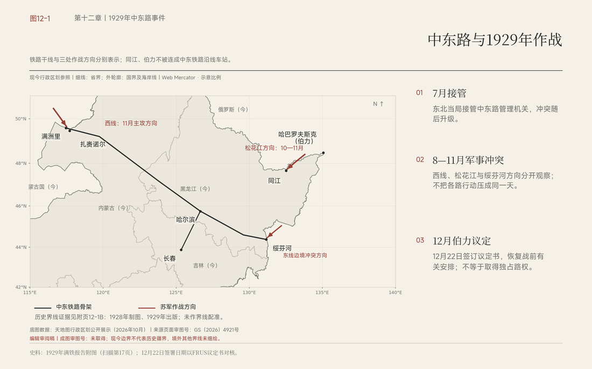
图12-1 中东路与1929年作战 中东路与西线、松花江及东线作战方向分列；现今中俄边界只作参照；另附1928年绘制、1929年出版的历史国界图原页审读，不将现代界线冒充历史界线。
资料来源：本书第十二章；外交部7月10日及中国近代外交史；底图：天地图公开展示（来源页审图号 GS（2026）4921号，非本图审图号）
有一件事能说明东北对中东路的强硬，不是听南京的命令才开始。1928年12月24日，易帜前五天，张学良已经命令东省特区行政长官张景惠强行接收中东铁路的电话局。那时候南京还没有下过任何命令，东北自己先动手了。这个时间顺序，把”张学良只是执行南京旨意”的说法堵死了。
1929年春，事情一步步往上走。东北方面向苏方提出一系列权益要求，内部制订了强制接管的方案，还在5月搜查了苏联驻哈尔滨总领事馆。搜查领事馆，是严重的外交动作，等于把争端从铁路管理升级到国家安全。苏联提出抗议，双方的交涉越来越僵。
6月6日，张学良致电张景惠、吕荣寰，电文里出现”原定办法”“一定方针”这样的词，还说苏方如果延宕，就采取严厉手段。他在电文里讲：“有何困难，良当力肩之。”这句话说得很明白：出了事，他担着。同一天的另一封电报里，他又说，防御的事不能只靠东北，要把全国力量算进来。一边是自己扛，一边是要全国的后盾，两种心思同时存在。
东北内部的决策，缺一道关键的程序：风险评估。接管之前，苏方可能的反应有几种，断交、边境冲突、局部战争、全面战争，每一种东北准备到哪一步，南京能帮什么、帮到什么程度，都没有答案。这些，在留下的材料里看不到系统的讨论。决策更多是靠判断、靠气势、靠”苏联不敢打”的预期。预期一旦落空，就没有Plan B。
南京在这时候点了头。6月下旬，王正廷肯定东北的方案，赞同地方径行办理、苏方抗议由中央交涉。7月，蒋介石和张学良会面，强硬路线得到正式认可，形成”行动归东北，交涉归中央”的分工。这个分工听着顺，实际有毛病：行动在前，交涉在后；行动的风险由东北承担，交涉的筹码却握在中央手里。
7月6日，张学良公开表态：“凡条约以内已允我之权利，应当强硬主张，不能放弃。”这句话把他的自我定位说得很清楚：我不是要撕毁条约，我是在条约之内维权。话说得漂亮，也给自己留了退路。问题是，7月10日的全面接管，跟”条约以内”这四个字对不对得上，需要论证；接管之后苏方人员的去留、路款的处理、机构的改组，都不是一句”条约以内”能交代的。
7月10日，东北方面动手，接管中东铁路，撤换苏方管理人员。
动手之前，东北内部不是没有不同意见。有人主张先谈，谈不拢再动手；有人主张只换人、不动整个机构；也有人主张一步到位。这些意见的分量，从留下的材料里看不完全。能确认的是，最后走的是最硬的那条路：接管整个路务，撤换苏方人员，把共管变成单方管理。
东北的情报系统里有白俄顾问，也有反苏的俄国人。他们提供的消息，说苏联内部不稳、远东兵力不足、欧美会支持中国。这些话在决策圈里很受欢迎，因为它们支持了既定的判断。情报一旦变成支持偏好的工具，决策就危险了。
南京那边的判断，也不比东北高明。王正廷主持外交，讲革命外交，态度硬，手里没有兵；蒋介石要反苏，也要防着国内的实力派，对苏联的军事反应没有充分估计。南京给东北的，是政治上的鼓励和外交上的声援；东北需要的，是兵、钱、运输和统一的作战指挥。两边都在按自己的需要解读局势，都以为苏联会退让。7月12日，张学良嘉勉执行人员，电文里说”事前筹备完密，临事措置又极迅速”，要求继续按固定步骤进行。这封嘉勉电，是他在事后最要命的一份证据：它证明最高负责人事前知情、事中主导、事后认可，不是被部下推着走的。
决策圈当时的判断，有几处明显的偏差。
第一处，把苏方的克制当成实力不足。以前接收电话局、气象台，苏方反应不大，东北方面就以为苏联不敢动真格的。那些行动和全面接管铁路，性质不一样；苏方在什么情况下会忍，在什么情况下会打，东北没有认真算过。
第二处，把对苏强硬当成对日缓和的筹码。东北同时面对苏联和日本，日本才是更危险的对手。有人以为，东北在反苏上表现得积极，日本就会满意，就会在满蒙权益上松一点。这个想法没有根据。日本要的是自己的利益，不会因为中国反苏就放弃。
第三处，把国际声援当成可以兑现的资源。非战公约、国联、西方国家的和平呼吁，能提供道义和交涉渠道，给不了军队、军费和把苏联逼回谈判桌的能力。
第四处，把南京的口头支持当成已经到手的后援。张学良认为对苏作战事关全国，这个认识符合现代战争的国家动员逻辑；错在动手以前，全国后援还停在口头上，没有兵、没有钱、没有运输安排，也没有国内战争的优先级排序。
白俄顾问和一部分东北官员在这个过程中起了坏作用。他们出于自身的反苏立场，提供苏联即将崩溃、欧美必然支持之类的判断。这些情报带着明显的立场，需要交叉核验；决策者跳过核验，责任还是自己的。
这里可以问一个问题：如果南京在6月不点头、不给支持的姿态，张学良还会不会在7月10日动手？
从时间线看，多半会。12月24日接收电话局，南京没说话；6月6日的电文，东北已经定了”一定方针”；7月6日的公开表态，也是他自己的想法。东北要收回路权，这个决心在南京表态以前就有了。南京的点头，起的是壮胆和分担的作用：有了中央的背书，张学良更敢把步子迈大；出了事，也有人说这是”全国的事”。这个作用很坏，它让一场主要由东北承担的冒险，披上了全国的名义。
评价张学良在中东路的责任，要抓住两点。他是发动者，不是执行者；他手里有停止的权力，却没有在关键节点上停。评价南京的责任，也要抓住两点：它给了背书，没有给后援；它提高了强硬的门槛，却在收场时把责任推给执行者。
还要补一句：决定动手之前，东北对苏联的判断是”不敢打”；这个判断本身，比兵力对比更致命。形势评估不是看对方有多少兵，而是看对方在什么情况下会动手、动手会到什么程度、中国能不能收场。情报工作不是拿到多少消息，而是把消息拼成判断；中东路这一课，先输在判断上，再输在战场上。
苏联的反应比东北估计的快得多、狠得多。7月中旬，苏联发出通牒，宣布断交，边境进入战备。8月以后，苏军在黑龙江、乌苏里江一线和多处边境口岸动手，同江、富锦、扎兰诺尔、满洲里都成了战场。东北军在这些地方打得很苦：江防舰队在同江同苏联的阿穆尔河区舰队交火，舰船被击沉；扎兰诺尔的守军顶了几天，一个旅长阵亡，阵地还是丢了；满洲里方向的守军被包围，成建制地被俘。局部有硬仗，整体是败仗。
指挥这支苏军的是布柳赫尔（V. K. Blücher）。他是苏联元帅，1929年任特别远东军司令，同江、扎兰诺尔、满洲里的几路进攻都由他统筹；1938年在大清洗中被处决。东北军在中东路面对的，不只是一个边境对手，而是一支按国家体系组织起来的军队。
这场仗暴露的问题，不是一句”装备不如人”能盖住的。苏军有飞机、有重炮、有装甲列车、有江防舰队，几路并进，火力配合熟练。东北军有兵、有枪、有铁路，可到了边境线上，炮兵打不准，飞机上不去，江防顶不住，前线同后方联络不畅，增援和弹药跟不上。
同江一战，东北的江防舰队吃了大亏。苏联的阿穆尔河区舰队船大炮多，还有飞机配合，东北的舰艇在江面上没处躲，沉了几艘，剩下的撤了。富锦方向，苏军沿江推进，守军守不住，县城丢了。扎兰诺尔那边，苏军步兵、骑兵、炮兵一起上，守军阵地被切成几块，旅长阵亡，部队溃散。满洲里的守军被围，突围没成功，成建制地被俘。这些战场情况，当时的报纸登得零碎，后来的研究拼起来，才能看出个大概。
军事上的教训，写进战报里也是那几条：炮兵协同不行，飞机太少，江防薄弱，通信和后勤跟不上。更根本的是，东北军没有打过这种对手。以前打的仗，对手是北洋军队，装备差不多，士气和指挥决定胜负；这次打的仗，对手是国家的军队，打的是体系。体系的差距，不是靠勇敢能补上的。
1930年，中苏在莫斯科开会谈中东路，没有谈出结果。苏联继续管着铁路，中国继续要权利。1932年两国复交，中东路的问题还是悬着。一条铁路，从1924年共管到1935年苏联把它卖给伪满，拖了十几年，谁也没有真正解决。国家弱的时候，条约和道理都硬不起来。这笔账，中国记了几十年。国内战争里靠人多、靠铁路调兵、靠一股狠劲的打法，碰上按国家体系组织起来的对手，就不灵了。
这不是说东北军不能打。同江的江防、扎兰诺尔的阵地、满洲里的突围，士兵和下级军官都拼了命。
战场上的困难，一件件数得出来。苏军飞机多，东北军的高射武器少，白天不敢大部队行动；苏军重炮多，东北军的炮打不远、打不准，阵地被压制；苏军有装甲列车，沿铁路推进，东北军拆路、埋雷，挡得了一时挡不住一路；江防更是吃亏，东北海军的江防舰队船小炮少，同江一战吃了大亏。最要命的是指挥：边境线太长，部队分散，铁路一断，前后方联络不上，增援上不去，撤退没掩护。
苏联方面也有自己的账要算。它要保住铁路权益，要显示远东的力量，要在国际上立威。多路进攻、占领边境城镇，军事上有效，政治上的后果却难收拾：中国方面的民族情绪被激起来，国际舆论对苏联也不利。苏联扩大军事行动的责任，要同中国方面的责任分开算：中国先动手，不等于苏联怎么打都正当。
战场之外的账也难算。苏联扣了中方人员，占了边境城镇，战后又把铁路恢复到7月10日以前的样子，等于用军事胜利把原来的共管状态又按了回去。中国方面死了人、丢了地、花了钱，换回来的是一个”恢复原状”。这种结果，对任何一个国家的政府和军队，都是沉重的打击。问题在更高的地方：一场边境战争需要什么样的作战目标，谁来统一指挥，中央能提供什么支援，打不下去时怎么收场。这些问题，在动手之前没有答案。
7月下旬，张学良已经感到事情超出了东北一家的能力。东北通过地方接触，提出四项方案，其中包含苏联另派正副局长、双方临时共同签字维持路务之类的安排。这套办法算不上体面，却能把局面大体恢复，为谈判留出空间。张学良赞成先做局部解决。南京方面把关键条款删掉，要求”无条件开议”，等于否掉了这条退路。
这是评价南京责任的关键一笔。南京提高了妥协的门槛，后面的战事因此多打了几个月，损失更大。至于”唯一和平机会被南京葬送”这种说法，材料不够，不能坐实：苏联方面接不接受地方方案、能不能达成持久协议，都还有变数。能成立的是：南京以国家威信为由，把谈判的路收窄了，却没有同时给出支撑强硬路线的资源。
苏方在谈判桌上的条件，一直咬着先决条件不放：恢复原状、承认苏方权益、惩办有关人员。中方越拖，条件越硬。张学良到后来也明白，靠东北一家的兵力，撑不到苏方让步；靠南京的援助，也等不来。两条路都堵着，剩下的只有停战。停战靠的是打不下去，谈判桌上并没有赢来什么。这话难听，是实情。
援助的事，也要把承诺和到位分开。南京讨论过调兵、军费、全国支援，这些都是真的；到了11月战局恶化，军费还停在纸上。更说明问题的是，国内的反蒋战争还在打，南京甚至要求东北拨重炮去支援豫西。这说明在南京的优先级里，“全国对苏战争”排不过国内的仗。东北要求全国后盾，南京拿不出全国后盾，双方的分工从一开始就是虚的。
11月以后，东北恢复地方接触。12月22日，蔡运升和西门诺夫斯基签订《伯力会议议定书》：中东路恢复7月10日以前的状态，苏方另派局长，双方安排撤兵、释放被扣人员，并约定后续会议。
战败的直接后果，是边境的老百姓遭了殃。同江、富锦、满洲里一带的村镇被战火波及，居民逃亡，商路断了，庄稼烂在地里。东北的财政为这场仗多花了一大笔钱，士兵的伤亡和失踪，抚恤又是一笔。张学良后来对苏联一直忌惮，根子就在这里：打不过，也惹不起。就”全面强制接管”的初始目标而言，这是失败；就当时的战局而言，接受议和是止损，再打下去只会丢更多地盘、损更多部队。
南京在地方重开谈判时点过头。到了1930年，又以”超越铁路范围”“越权”为由追究蔡运升等交涉人员。如果谈判代表确实拿到了授权，事后把中央政策失败的成本压到执行者头上，既不公道，也寒了地方的心。后面的莫斯科会议没有解决赎路、复交这些根本问题，伯力一纸议定书只是把仗停下来，铁路的账还是没算清。
中东路这场仗，值得记的教训有三条。第一条，主权诉求正当，不等于可以跳过实力和程序硬上；收回权利要算清对手的反应、自己的家底、盟友的可靠程度。第二条，中央和地方的”分工”如果没有资源和指挥的支撑，就是互相推责任；南京得了强硬的名声，东北付了战败的账。第三条，一场败仗会改变军队和领袖对”能不能打”的判断。这种改变怎么影响两年后的九一八，材料不足，不能直接连线；但东北的虚弱和南京的靠不住，在1929年已经暴露得清清楚楚。
1929年的仗刚打完，1930年的机会就来了。同一年，阎锡山、冯玉祥、李宗仁联合反蒋，中原大战爆发。
中原大战的起因，说起来也不复杂：1928年北伐完成后，蒋介石要裁军、要收权，阎锡山、冯玉祥、李宗仁这些实力派不干，从口水战打到真刀真枪。1930年5月，大战全面爆发，战线从河南、山东一直拉到湖南。南京这边能打的部队有限，钱也紧；反蒋那边人多，心不齐。双方都盯着东北，因为东北军是当时唯一一支完整、没怎么消耗的大军。双方投入上百万兵力，打了大半年，谁也吃不掉谁。东北在关外，手里有完整的军政体系，谁拉到他，谁就多一半胜算。于是，南京和反蒋各派都派人到奉天、到北平游说，条件越开越高。
张学良先不动。3月1日，他发表通电，表示中立。这个姿态有两层意思：一是不想替别人火中取栗，二是等着看谁出价高。南京方面由方本仁、吴铁城、李石曾、张群这些人轮番来做工作；反蒋方面也派人来谈。东北内部意见不一：有人主张趁乱入关，扩大地盘；有人主张守住东北，别掺和关内的事。
6月，李石曾第一次出关，双方谈到出兵条件。东北军高级干部会议把方案否了，理由是风险太大、条件不够。这个否决说明，张学良当时还不能一个人拍板，重大决策要过元老和高级将领这道关。同月，南京在正式职位上加码：6月21日，国民政府任命张学良为陆海空军副总司令。名分先给，兵还没动。
8月，李石曾再度北上。张学良开口要钱：以”金融吃紧、兑现纷来”为由，要求南京中央即付500万元作为军用，再借给公债1000万元以稳固金融。蒋介石答应筹办。入关后的权力安排也在出兵前谈好了：南京同意东北军入关后掌握平津地区的军政、财政权，黄河以北军事归张学良节制。
这两条很关键。500万元和1000万元公债，说明东北出兵要的是真金白银；平津军政财权和黄河以北的军事节制，说明东北要的不只是荣誉，是实打实的地盘和财源。张学良把账算得很清楚：帮你打仗可以，得给钱、给权。
他还有自己的算盘。东北军在出兵前就定了不与冯玉祥、阎锡山的部队作战，张学良反对把冯阎彻底铲除，主张妥为安置。他说过一句话：“名分决服从中央，举动必以东北四省福利为前提而慎重考虑。”这句话是理解他的钥匙：中央的名分我认，但动不动兵、跟谁打、打到什么程度，要看东北的利益。这算不上抗命，更像一个地方实力派在中央名义下的自我保护。
8月，中央军攻克济南，反蒋方面的军事处境恶化。张学良还在观望，入关通电没有发。9月18日，机会到了：他发表”巧电”，呼吁各方罢兵，静候南京中央措置，东北军随之入关。巧电用的韵目是18日，所以叫”巧电”；这个日子，一年后成了九一八，纯属巧合，但在历史上留下了一个让人心里发紧的记号。
东北军入关，几乎没有打大仗。反蒋联军已经疲了、散了，东北军一进关，平津就拿下了。
反蒋那边，这时候也乱成一团。1930年8月，汪精卫、阎锡山、冯玉祥这些人在北平开扩大会议，另立国民政府，推阎锡山当主席。张学良没有参加，也不承认。他心里清楚：跟着反蒋派，赢了分不到多少；跟着南京，副司令的位子和华北的地盘是现成的。
入关的部队，主要是于学忠、王树常这些东北军精锐，从山海关、喜峰口一线开进，沿北宁路向平津推进。反蒋联军这时候已经撑不住：阎锡山的晋军退回山西，冯玉祥的西北军被拆得七零八落，李宗仁的桂军在湖南吃了败仗。东北军进关，更像是来接收的，不是来决战的。平津的机关、铁路、税收，很快换了主人。张学良没有乘胜追击，也没有按蒋介石的意思彻底消灭冯阎。他留着这两股势力，有他的打算：北方需要缓冲，东北军也不愿意替南京火中取栗。中原大战就此收场。陈进金把东北军称为中原大战的关键因素，同时说它不是唯一因素：其他地方实力派的选择、财政的枯竭，都在起作用。这个评价是稳的。
巧电发出后，全国的反应两极。南京方面欢迎，说张学良深明大义；反蒋方面骂他投机，说他看准了风头才下手。舆论怎么说，张学良不太在乎，他要的是实惠。东北军入关的兵力和路线，都是事先同南京商量好的：从山海关进，沿北宁路向平津，接受南京的任命，接管北平、天津的军政机关。整个过程像一场安排好的交接，不像一场战争。
入关以后，张学良开始接收北方。11月14日，蒋介石和他磋商北方善后，决定北方政局由他全权处理。
接收的具体安排，落到了人事上。王树常做了河北省主席，于学忠带兵驻在平津一带，东北军的干部接管了北宁路和河北的财政机关。华北的官场换了一批东北口音的人，南京派来的官员反而插不上手。这种接收，表面上完成了权力交接，实际上是东北军把华北当成了自己的新地盘。财政和铁路也接了过来：东北军取得华北地盘后成立河北财政特派员公署，把国税收入拨给副司令行营军需处；北宁路的管理权没有简单移交给中央铁道部。蒋把晋军交张学良整编，对西北军则拆开处理。石友三部约六万人，军饷需求同中央、东北的实际供给差得远，张主张缩编，石要一省地盘自己筹饷。蒋张各有打算，留下”中央希望石往北边来，我们希望石往南边去”的话。
平石以后，东北军没有立刻回防，有几层原因。平津接收刚完成，机关、铁路、税收要人管；晋军整编、西北军拆分，需要东北军在场；宁粤对峙，华北的局势也不稳。每一层都有道理，合起来就是一个结果：东北军留在关内，回不去了。回防需要计划，计划需要有人拍板，拍板需要时间，时间一天天过去，就拖到了9月。
1931年4月，张学良在北平建立陆海空军副总司令行营，官邸设在顺承王府。东北军的政治中枢，从沈阳挪到了北平。他离开沈阳以后，东北的日常军政由张作相、臧式毅、荣臻这些人分头代行，大事还要向北平请示；东北的负责人多次请他回沈阳，他回不去。
北平的副司令行营，成了东北军真正的总部。张学良在那儿见客、办公、批公文，东北的官员一趟趟往北平跑，日本领事也到北平找他。沈阳的大帅府还在，主人不常回来。一个军政集团的最高领袖，长期不在自己的根据地里，平时靠电报和亲信维持，出了急事，就慢了半拍。
这笔交易，要算一算值不值。
值。张学良用很小的直接作战代价，结束了观望，帮南京收了场，换来了全国副司令的职位、北方军事节制、平津军政财权、河北的税源和北宁路，还保住了对冯阎处置的发言权。曾景忠把蒋张关系概括为实质上的平行盟友：双方合作结束战争，又各自握着军队、财政和地盘。这个概括是准的。对一个29岁的继承者，这是他能拿到的最好结果。
代价藏在收益后面。东北军的任务从”守住东北”变成了”守住东北加华北”；十一二万人长期驻在关内，关外的兵力薄了；张学良和一批高层长期在北平，东北的日常决策要靠代理，代理的权限又没写清楚。最要命的是，这场交易做成以后，没有人去设计退出的条件：什么时候回防、留多少兵、接防的是谁、出了事谁拍板，全没有。成功的交易，变成了一张没有到期日的支票。
1931年，东北的麻烦从两个方向来。南边，宁粤对峙越闹越凶，蒋介石和胡汉民、汪精卫各派撕破脸，广州另立国民政府；北边，日本的压力一天比一天紧。夹在中间的张学良，既要做南京的副司令，又要守东北的家业，两头不能得罪。
6月，石友三又不安分了。他对军饷、缩编、防区都不满意，同孙殿英、阎冯旧部以及广州方面暗中联络。
1931年的中国，南方在闹分裂。2月，蒋介石把胡汉民扣在南京，国民党内炸了锅；5月，广州另立国民政府，形成宁粤对峙；7月，石友三在北方起兵；9月，粤桂联军出兵湖南。南京的精力被南方拖住，对东北的求助只能给点口头支持。张学良后来抱怨”中央不给钱不给兵”，不是没有根据。张学良从北平回到沈阳处理事务，随后以东北军换防为名，6月中旬从关外调了大批部队进关。后来的事实证明，这次增兵早于石友三公开起兵：先增兵，后起兵，次序不能倒过来写。
7月18日，石友三就任广州国民政府委任的第五集团军总司令，下令截断南北交通；20日发表讨蒋通电，沿平汉路北进。7月23日，蒋、张分别通电讨石；28日起，保定附近激战；31日，石部全面溃退。石友三期待的北方反蒋大联合没有出现，他成了孤家寡人。东北军在这场仗里出力不小，平石算是办成了。
平石有它的道理。石部六万人，离平津太近，背后又有广州方面和日本人的影子；不压下去，华北不稳，东北的退路也不稳。
日本那边，1931年的动作越来越明显。关东军在沈阳、长春一带演习，满铁沿线调动频繁；朝鲜军在日本国内和朝鲜半岛之间来回调动；关东军参谋们公开谈”解决满蒙问题”。东北的驻军分散，沈阳附近的兵力不足以应付突袭，军械又集中管理，兵工厂和机场都在日军的攻击范围之内。这些情况，北平的少帅知道一些，南京知道得更少。问题出在平石之后的动作：部队没有及时分批回防，东北军的重心继续留在关内，关外的防务一天天空下去。
8月5日，阎锡山由大连秘密返回山西。金以林指出，此行由土肥原贤二安排日军飞机。一个被国民政府通缉的地方军阀，坐着日本人的飞机回到自己的地盘，这件事本身就是信号：日本在华北下的功夫，比南京想象的多。蒋张围绕宋哲元、商震这些部队该不该南调、要不要留在河北，也各有各的算盘。华北的军事部署，被国内政治搅得动不了。
阎锡山回到山西，等于告诉各方：中原大战的败将没有被彻底打垮，晋系还在，华北还有变数。张学良主持北方善后，既要压住晋军，又要防着西北军残部，还要应付南京和广州的对峙，手里的兵和钱都不够用。一个地方的麻烦，牵动整个北方的布局，这就是1931年中国政治的常态。
东北内部有人看出了危险。8月，王以哲搜集日方的军事动态，到北平向张学良报告，并请求回师御敌。王以哲是第七旅旅长，驻在沈阳，对日军演习和调动的感觉比在北平的少帅直接。他的报告说明，前线的军官已经闻到火药味了。至于回防的部队序列、运输日程、实施方案，材料里没有；有报告，没有方案，这本身就是问题。
日本那边的计划，和东北的混乱是两条线。水野明的研究指出，“解决满洲问题”的作战计划从1929年5月就开始拟订，1931年的方案明确：不论发生什么情况，关东军都要在紧急情况下独断推翻张学良政府、占领满蒙。日本的侵略有它自己的目标和时间表，不是被中国的内乱”逼”出来的。这点必须说清楚：中国内乱给日本提供了机会，但机会不等于原因。
回到兵力账。两次入关，东北军到底出去多少、关外还剩多少，常见的两项估算有差别：一项认为1930年入关约7万，1931年再入约5万，累计约12万，关外还有约14万正规边防军；另一项认为关内约11.5万，关外近19万，分省数字里含热河。两个口径不能直接相减，但共同支持的结论是稳的：约十一二万东北军长期驻在关内，关外还保留相当数量的部队。
表12-2 两次入关的收益与代价
| 项目 | 收益 | 代价 |
|---|---|---|
| 1930年入关 | 副司令职位、平津军政财权、河北税源、北宁路、冯阎处置发言权 | 关内驻军、华北秩序责任、回师难度 |
| 1931年再外调 | 平定石友三、稳住平津 | 关外兵力更薄、统帅与主力更远离东北 |
| 政治地位 | 全国副司令、蒋张平行盟友 | 与南京的承诺绑定，危机时被期待配合 |
| 军事部署 | 关内集中，便于华北作战 | 关外分散，沈阳附近可用兵力有限 |
资料来源：作者据陈进金、金以林、曾景忠等研究与相关档案整理。
这张表里的收益和代价，不是同一时点上的：收益在1930年就拿到了，代价要到1931年才显出来。这就是历史的麻烦之处：做决定的时候，账本只翻到第一页。
数字之外，还有几层要分清。账面总兵力，说明整个系统的规模；关内驻军，说明华北任务占了多少；关外实有兵力，说明东北还有多少资源；沈阳附近当夜能动的兵，说明突发时谁能够行动；可能回师的部队，说明铁路和政治条件允许时能抽多少回来。前几层数字大，后两层数字小，用总数推当夜的胜负，最容易出错。
回师这件事，铁路只是条件，不是能力。北宁路有多少车皮、几天能装完、卸在哪里、沿途会不会被日本拦阻，都是问题。还有更麻烦的：抽兵回东北，平津怎么办；石友三的残部、阎锡山、韩复榘、宁粤对峙，哪一头出事都要兵；日本会把大规模回师看成提高它的行动成本，还是看成扩大事态的借口，也说不准。最要命的是，回防的触发条件、部队序列、代理权限、集结地点，没有一份现成的方案。
7月6日，张学良电示东北政务委员会：“此时若与日本开战，我方必败。”他担心的是打输了要割地赔款，东北万劫不复，而非仅仅打一仗。所以他主张力避冲突、以公理周旋。这份电报是事变前的政策判断，不是九一八当夜的现场命令。两件事要分开看：力避冲突，是避免给日本借口；不抵抗，是日军已经打进来以后放弃还击。前者有它的道理，后者是另一回事。
1931年9月以前，东北的局面是：约十一二万主力在关内，统帅在北平，关外的部队分散在辽吉黑热，沈阳附近的兵力不足以应付一次突袭，回防没有方案，对日只有”力避冲突”四个字。
国民政府的算盘，是先把东北稳住，再腾出手来对付日本和国内各派。稳住的意思，是不要刺激日本，不要在东北惹事。这个方针有它的道理：中国当时没有能力打一场全面战争。可稳住的代价，是把东北的防务交给了张学良一个人，而张学良又把主力放在了关内。一个怕打仗的中央，一个想保实力的地方领袖，再加一个磨刀霍霍的日本，三方的选择加在一起，就凑成了九一八前夜的局面。日本的关系军有作战计划，有演习，有铁路，有朝鲜军的增援。两边的准备，一边是纸上的，一边是实打实的。
关东军在东北的兵力不过一万余人，加上朝鲜军可以增援，满铁沿线调兵也方便。东北军在关外还有十几万人，账面上占优；可这十几万人分散在辽吉黑热，沈阳附近能立刻拉出来的，只有几个旅。兵力多少是一回事，能不能在几个小时内把兵用在关键地点，是另一回事。
九一八的条件，到这时候已经摆好了。但条件不等于决定。日本为什么在9月18日动手，怎么动手，谁下的命令，那是日本的选择，责任在日本。中国这边能检讨的是：为什么没有看出危险，为什么没有准备，为什么当夜没有统一的命令，为什么之后的抵抗是零散的。这些是下一章的事。
回顾1929年到1931年这三年，张学良干了几件大事：中东路打了一仗，输了；中原大战入关，赢了政治、输了防务；平石友三，赢了眼前、输了长远。三件事有一个共同的毛病：动手的时候算收益，收场的时候算责任，中间的准备和退路，总是欠着。这是那个年代地方军政集团的常态，不能只算在张学良一个人头上。区别在于，东北面对的是日本，欠账的代价，比别处大得多。
中东路和两次入关，看起来是两件事，底下的逻辑是通的。中东路是对外冒险：用东北一家的兵力和财政，去碰一个国家级的对手。两次入关是对内扩张：用东北的军队，去换全国的政治地位和华北的地盘。两件事的方向相反，毛病一样——量力而行这四个字，没有被认真执行。
中东路动手的时候，东北算的是”苏联不敢打”，没有算”苏联打了怎么办”。两次入关的时候，东北算的是”能拿到多少权和钱”，没有算”拿到以后守不守得住、回不回得去”。三件事办下来，东北得了副司令的头衔、平津的地盘、北方的财源，也背上了华北的防务、关内的驻军和一条越拉越长的补给线。账面是赚的，风险是攒的。
张学良不是没有想过退路。他后来在口述里说，自己知道东北空虚，也知道日本要动手，可总觉得能拖一天是一天。这种”拖”的心理，在弱势一方很常见：打不过，谈不拢，只能等。等的结果，是把主动权交到对方手里。1931年9月18日晚上，关东军替他做了决定。关东军赌赢了开头，却没算到中国后来十四年的抵抗。账，还没算完。回头看，这三年里东北不是没有机会：中东路可以只做局部交涉，入关之后可以分批回防，平石之后可以留兵守关外。机会一次次出现，一次次被再等等拖掉。
中东路还有一层账，不在战场上。俄国和日本在东北互相提防了二十多年，中国本来可以坐在这个矛盾中间，让苏联至少保持中立。1929年那一仗之后，苏联的疑忌更深，中国在东北少了一个可以借力的方向；伯力议定书签完，中东路回到共管，苏联的疑忌却留下了。日本也看得清楚：中国敢跟苏联动手，却打不赢；苏联不会为中国出头。九一八之后，苏联果然选择中立，到1941年干脆在日苏中立条约里“尊重”满洲国。这不是说收回中东路不对，而是说主权宣示排在了防日备战前面，账最后由东北来付。更可惜的是，苏联本来不是非敌对不可。1924年的中俄协定、奉俄协定还留着合作的门，1929年把门关上了。东北的兵力和财政，本来应该用来对付日本，却先消耗在同江、扎兰诺尔。等到九一八，苏联选择中立，中国在东北连一个能借力的方向都没有。
张学良在这三年里长进很快。他从一个刚接班的少帅，变成了能同蒋介石做交易的全国二号人物。他学会了算政治账，学会了在各方之间周旋，学会了用名义换实利。他还没学会的，是给每一次成功留一条退路：赢了以后怎么收场，扩张以后怎么防守，承诺以后怎么兑现。这三件事，他在1930年都没做，到1931年就来不及了。
这不是说他蠢。1928年到1931年，张学良面对的是一个死局：日本要东北，南京要名义，元老要地盘，军队要军饷。他能做的选择不多，能拿到的资源更少。他选了看上去最划算的一条路：用政治交易换时间，用时间等转机。这条路在1930年走得通，在1931年走不通，因为日本不给他时间。一个30岁的领袖，用地方政权的本钱去赌国家的命运，赌输了，责任在他，也不全在他。
南京在这三年里的表现，也要如实记。它给了东北名分、给了支持的话、给了”行动归东北、交涉归中央”的分工，却没有给够军费、兵力和运输。中东路打起来，它提高了谈判门槛，又拿不出后援；中原大战，它用职位和地盘换东北出兵，事后也没有能力约束东北的扩张。中央权威不够，又不肯承认不够，结果就是让地方去承担国家的风险。
日本在这三年里看得很仔细。1929年，东北军在同江、扎兰诺尔吃了败仗，弱点暴露；1930年，东北军主力入关，关外空虚；1931年，中国自己还在宁粤对峙、江淮水灾里打转。关东军的参谋们不是等到9月18日才想动手的，他们在1929年5月就开始拟订计划。中国的内乱给了他们机会，他们自己的扩张目标给了他们动机。机会和动机凑齐了，差的是一个借口。
1931年9月的东北，就像一个把家底都押在牌桌上的人：桌面上赢了不少，口袋里没剩多少，身后的门也没有关。九一八的枪声一响，牌局就散了。
1931年9月18日夜里十点二十分左右，沈阳北郊柳条湖，南满铁路的一段路轨被炸断了。动手的是关东军独立守备队的河本末守中尉和他带的几个兵。炸药埋得不多，铁轨只被掀开一小段，事后仍有列车从上面通过。爆炸刚过，关东军就对外宣称中国军队破坏铁路，早已在附近展开的部队随即向北大营、沈阳城和满铁沿线各要地发起进攻。那个晚上的枪炮声听起来突然，日本方面的准备却已持续多年。
关东军参谋石原莞尔、板垣征四郎等人从1929年起就在拟订“解决满洲问题”的作战计划。参谋旅行、北满用兵研究、占领地统治方案、沈阳周边的地形调查，几年间一项一项做下来。计划里要处理的已经不止保护铁路和侨民，还包括推翻张学良政权、占领满蒙、建立占领统治。东京的陆军中央对这些文件并不陌生。军事解决早已进入日本政策圈的考虑，剩下的分歧只在时机和方式。 关东军内部有自己的算盘。石原、板垣一班人认为，日本在东北的地位正被张学良的易帜、自建铁路和收回利权一点点挤掉，拖得越久越不利，他们希望由现场军人制造机会，用一次迅速的军事行动把局面翻过来。
陆军中央的一部分人承认军事行动的可能，又担心国际舆论，要求慢慢准备，不要立即卷入争端。外相币原喜重郎得知关东军将要动手，当面向陆相南次郎提出质问。参谋本部作战部长建川美次奉命前往东北，传达暂缓行动的要求。建川和主张动手的军官有联络，关东军很快就知道东京来了人。建川美次9月18日下午到达沈阳，关东军就在当天晚上动了手。东京派来传话的人还在路上，沈阳的枪已经响了。 这个时间差，后来成了日本政府推脱责任的借口：中央政府事先不知情、事后才追认。
追认是真的，不知情却只对了一半。东京与沈阳之间的这场拉扯，最容易被写漏。日本政府、外务省、陆军中央和关东军各有职权，各有节奏，事前约束、内部默契和现场抢跑同时存在。外务系统的外交官试图用交涉限制军方，驻奉天总领事林久治郎在19日给外务省的报告中已看出这是军方的有计划行动，他能做的也只是报告和交涉。 侵略的责任不能只记在几个参谋头上，也不能因为内阁一度想限制就轻轻带过。9月19日，若槻礼次郎内阁开会，表面上定了“不扩大事态”的方针；21日，朝鲜军司令官林铣十郎下令部队越境进入东北；22日，内阁追认了这笔越境军费。东京想控制事态，又不肯为控制付出代价，军部每走一步，政府就跟一步。关东军看准了这个，才敢把既成事实一次次做下去。
日本在东北的既得利益，集中在南满铁路和关东州。满铁经营铁路、港口、煤矿和附属地，附属地里驻着军队、设着警察，中国政府管不到。张学良易帜后想用自建铁路和葫芦岛港分流货运，减少对满铁的依赖，日本军部把这些举动看作对既得地位的挑战。铁路和港口的生意账，在关东军那里被算成了战略账。日本国内的报纸把东北的冲突写成中国排日、军队挑衅，军部的行动因此有了舆论土壤。 日本对满蒙的执念，不是凭空来的，先要看日本本土的处境。1930年，日本本土人口约6445万（1920年约5596万），可耕地只有约600万公顷，人均耕地不到一亩；粮食、煤炭、铁矿石都要进口，工业品要找市场。1929年世界经济危机一来，生丝价格暴跌，农村负债、失业、城市贫困一起压上来。日本国内的办法有限：向北海道、朝鲜、台湾移民，向海外找资源、找市场。满蒙就在眼前：土地辽阔、人口约三千万、煤铁大豆都有，还是日本重工业的原料地和工业品市场。
朝鲜是日本的殖民地（1910年起），人口约两千万。日本在这里推“产米增殖计划”，把大米运回本土，朝鲜农民自己吃杂粮；朝鲜北部有水电、矿产，但朝鲜的市场和资源填不满日本的需求。台湾是另一块殖民地，产糖、产米。日本有了朝鲜、台湾，还觉得不够，眼睛就转向满蒙。
满蒙的“优越”，可以用几个数字看：1930年东北人口约2957万（日本本土约6445万，东北约为日本的46%）；煤产量约960万吨（日本本土约3150万吨，东北约为30%）；生铁及铁合金约34万吨（日本约166万吨，约21%）；大豆及豆制品占东北出口的约三分之二。东北还有铁路、港口、兵工厂，是日本资本已经投了二十多年的地方。
这些数字说明日本为什么把满蒙叫“生命线”：资源、市场、土地、战略缓冲，四样都在。但数字不能替日本做选择。日本可以有别的路：贸易、移民、技术、国际合作；它选了侵略。满蒙生命线是话语，不是自然法则；把它写成“日本非如此不可”，就替侵略者开脱了。
把东北说成“满蒙生命线”，是日本侵华话语里最关键的一步。“满蒙”指满洲和东蒙，不单是东北三省；“生命线”的说法，则把殖民权益说成了日本活下去的必需。它有两层来源。一层是明治以来的“利益线”论：山县有朋在1890年把朝鲜划进日本的“利益线”，主张用武力保护；日俄战争后，南满铁路、关东州租借地、护路驻军和领事裁判权，成了日本在东北的“特殊权益”。另一层是1920年代的危机感：日本经济依赖东北的煤、铁、大豆和市场，军部又把东北看成对苏防御的缓冲地。1927年田中内阁开东方会议，确定把“满蒙”同中国本部区分开；1929年石原莞尔的关东军计划把“满蒙领有”写得更直白；1931年1月，松冈洋右在国会演说里把“满蒙”称为日本的“生命线”，这句话很快成了军部和舆论的口头禅。“生命线”的含义有三：资源与市场的生命线、国防的生命线、移民与人口压力的出口。它最厉害的地方，是把“中国收回主权”说成“日本生存受威胁”——中国在自己的领土上修铁路、收关税、办交涉，都可以被解释成掐日本的脖子。九一八的发动者，正是靠这套话把侵略说成了自卫。
九一八前几个月，万宝山事件和中村事件把中日冲突的气氛又推高一层。
万宝山在长春附近，朝鲜移民开渠引水，同当地农民发生冲突；中村震太郎一行在兴安岭一带活动，被中国屯垦军查获处死。中国方面要处理交涉、排日情绪和地方治安，日本军方则拿这些事件做战争宣传，寻找借口。日方既有占领计划摆在那里，九一八的起因就无法由某一桩地方纠纷充分解释。 借口是临时找的，方向是早就定的。日本国内当时正处在经济危机和政党政治、军部势力相互拉扯的局面里，对外强硬既能转移国内压力，也能替军部争地位。侵略的动因不只在东北一隅，也在东京的政治账本上。
同一年，中国这边被别的事情缠住了。南京的蒋介石与广东方面为党权、军权争执，宁粤对峙拖了几个月，中央的政治资源大半耗在内斗上。东北军抽调部队入关应付，石友三随后在河北起兵，关外的兵力又薄了一层。江淮大水灾，几省的赈济和财政都压得喘不过气。张学良坐镇北平，东北的日常军政交给臧式毅、荣臻等人，重要事项仍要向他请示。东北军两次入关，华北的责任重了，关外的家底却空了。
张学良并不是没有看见危险。1931年7月6日，他电示东北政务委员会，判断同日本开战必败，主张力避冲突，用外交和公理周旋。另一些材料里，他也提醒过日本有急侵满蒙的意图。两种说法放在一起看，他对威胁心里有数，对日本会以什么方式、多大规模动手，却始终拿不准。战争判断是一回事，危机预案是另一回事。东北的防务安排，更多是按照“日军会寻事、但不会大打”的估计做的。
9月6日，张学良致电臧式毅等人，要求对日本人的寻事“万方容忍，不可与之反抗，致酿事端”。这封被称作“鱼电”的电报，成了事变当夜处置的重要依据。电文的语气在讲“寻事”和“容忍”，落到9月18日晚上，日军已经开炮攻营，语境完全变了。命令还是那封命令，执行的人只能照着字面往下做。东北的地方社会和民众，反应并不慢。沈阳失守的消息传出，平津的学生请愿、报馆出号外、商会通电，要求政府对日强硬。 国民政府收到的民间电报堆成山，能拨出去的兵和钱却有限。
舆论与实力之间的落差，此后几年一直压着南京。9月19日，张学良通电全国，说明日军袭击沈阳、北大营，东北军已“力避冲突”，请全国主持公道；他给部下的指示仍然是不抵抗、不扩大。通电里“请全国主持公道”的期待，和当夜兵营里的枪声，隔着一整套没有建立起来的国防动员。
东北军的部署也帮不上忙。九一八前，东北军主力一部在关内，关外部队分驻沈阳、长春、吉林、齐齐哈尔、锦州等处，各有防区，各有主官。沈阳附近驻第七旅等部，长春、吉林有独立驻军，黑龙江的部队又归省主席系统节制。各防区之间平时靠电报和铁路联系，紧急时能不能互相增援，要看主官关系和铁路运力，没有统一的作战预案。沈阳是中枢，兵工厂、军械库、通信机关、银行和省级机关都在那里，平时的指挥靠这套中枢运转。
防区分散，中枢又没按“遭到全面进攻”做过演练，一旦沈阳出事，各处的反应只能各按各的情况来。军械集中保管、士兵弹药受控，本来是防意外、防兵变的办法，真到了打仗的时候，反而让部队反应更慢。
易帜以后的东北军，名义上归南京统一指挥，军令、人事、财政实际上还是张学良一人说了算。这套体制在平时运转得动，遇到大战就露馅：中央调不动部队，地方等不到命令，各军之间缺少协同。九一八当夜沈阳等不到援兵，根子有一半在这里。东北军的情报系统并不迟钝，日军的演习、调动和满铁沿线的异常，都有报告送上去。问题在于这些零碎的消息没有变成对日军行动日期、规模和目标的可靠判断。 情报不是没有，缺的是把情报拼成判断、再把判断变成预案的能力。
南京的态度与北平相近。蒋介石和国民政府同样不愿意在东北再起冲突。宁粤对立占住了中央的政治资源，国内还有别的军事行动要收尾，对日政策里既有避免给日本扩大借口的一面，也有等待国际处理、维持国内秩序的一面。中央与地方在“先不要打”这件事上互相加强，谁也没有把“如果日军全面进攻，在哪里打、谁来打、拿什么打”写成可执行的方案。 张学良和南京在当时都相信，只要中国军队不还手，日本在国际上就站不住脚，国联会把公道还给中国。这个判断后来被证明错得厉害。
张学良与蒋介石之间还有一层说不清的关系。东北易帜以后，张学良在名义上服从南京，华北的军政、财政和外交却仍有很大自主。中原大战时他通电入关，帮了蒋介石大忙；九一八前，南京对东北的防务既插不上手，也不愿多花钱。双方都习惯把“东北的事”当成张学良的事，中央的责任就停在了电报上。把这段时期的政策简单叫作“不抵抗”，会掩盖一个关键区别。
“力避冲突”针对的是平日挑衅和交涉，军事上还有转圜余地；“不抵抗”发生在武装进攻之后，牵涉放弃还击、撤出阵地和让出城市。两者在心理上前后相连，在责任上却必须分开算。分不清这两层，就会把事前的方针笼统当成当夜的罪状，也会放过当夜本可以做而没有做的部署。
再把那一夜的时间理一遍。
夜里十点二十分左右，柳条湖爆炸。几乎同时，日军独立守备队第二大队向北大营开火，铁路守备队和驻沈阳的部队按事先计划分别行动。长春的宽城子、南岭两处兵营也在19日凌晨遭到攻击，守军凭借营房和工事还击，日军进攻一度受阻，随后调来增援，守军才在上级命令下撤退。北大营在沈阳城北，是东北军第七旅的驻地，下辖六一九、六二〇、六二一等团，营区有营房、操场和仓库。
柳条湖就在北大营东南不远，关东军独立守备队第二大队选中这里下手，既靠近铁路，又紧贴中国军队的主力营盘。日军在满铁附属地驻有守备队，第二师团又驻在辽阳、旅顺一带，铁路一开动，增援很快就能上来。旅长王以哲不在营中，旅参谋长赵镇藩和几个团长在营内。事变前，东北军的枪械多集中管理，士兵手里没有充足弹药，营区也没有按遭到全面进攻做过防御部署。
枪声起来后，营内向上请示。沈阳方面又通过电话和北平联系，同时让辽宁的交涉人员去找日本总领事。爆炸、炮击、兵营告急、层层请示、对外交涉，几件事挤在同一两个小时里。荣臻在电话里传达的意思很明确：不许抵抗，把枪收起来，不要给日方借口。王铁汉等团长在营内还接到过“挺着死”一类的话。命令传下去，部队却没有完全照办。日军冲进营垣以后，部分官兵开火还击，部分部队由南北两面出击，掩护非战斗人员从东面撤出。战斗规模不大，时间也不长，死伤却实实在在。
19日清晨，日军分区分街占领沈阳，中国军警被缴械，城门口挂起日军的告示。城里的银行、钱庄、商铺和民居被搜查，军政机关的档案、印信和公款成了战利品。一座省城在几个小时里换了主人，市民还没弄明白发生了什么事。省政府、兵工厂、电话局、银行和报馆都在城里，枪声一响，机关找不到主官，市民往城外跑，电话局和电报局不久就被日军控制。 东北军的将领有的在城里，有的在城外，有的已经往锦州方向撤。沈阳的失守，有一半是打丢的，另一半是乱丢的。
日军当夜的行动说明这并不是一次“护路冲突”。进攻同时指向兵营、城关、机场、军政机关和通信设施，还在安东、营口、长春等与柳条湖没有直接关系的地方动手。打掉指挥和补给，比占一段铁路更能让东北军失去抵抗能力。日军的作战计划，从第一夜起就是冲着这个目标去的。柳条湖的炸药只是开场的信号，真正被攻击的是整个东北军政体系的中枢。
日军的通信和指挥比中国军队顺畅。关东军司令部设在旅顺，事先有预案，各部队按计划行动；中国军队要层层请示，电话线一断就没了主意。战场上最要紧的那几分钟，往往就这样过去了。中方对爆炸的第一反应，也带着旧经验。沈阳方面起初把这当作日军寻事，按平时的交涉办法处理，找总领事、打电话、请示上级。等看清日军是全面进攻，营区已经挨了炮，城里的机关也乱了。旧经验在突发事变里最容易变成错误类比：过去几次中日纠纷靠退让和交涉收了场，这次对方要的是城和政权。
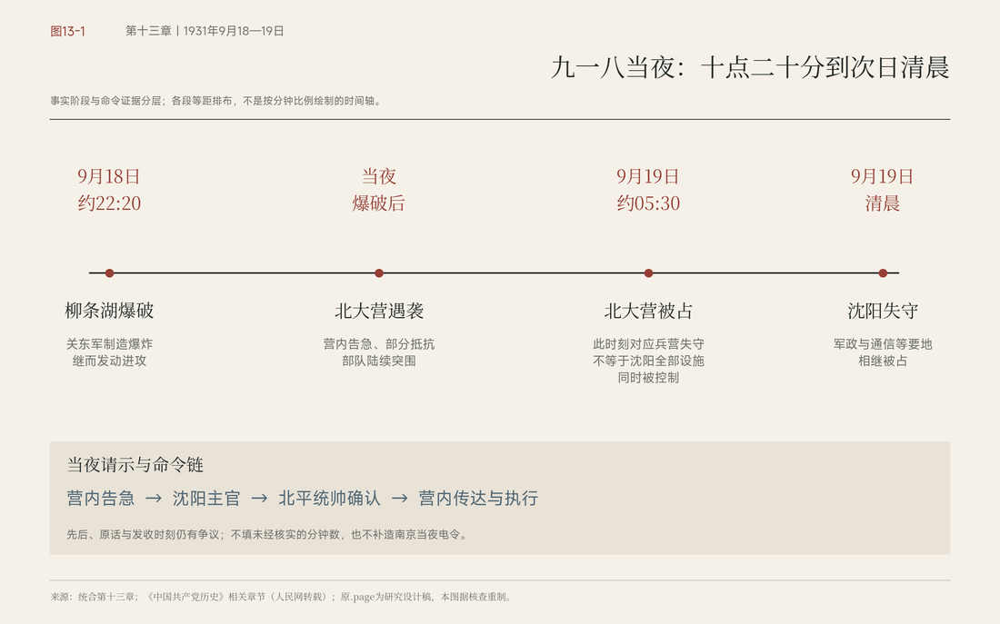
图13-1 九一八当夜：十点二十分到次日清晨 约22:20爆破、北大营遇袭及次晨失守分阶段列示；约05:30对应北大营被占，命令链不补精确分钟。
资料来源：本书第十三章、《中国共产党历史》相关章节人民网转载；原研究设计稿研究设计稿据此重制。
9月19日天亮前后，沈阳城及兵工厂、机场、通信机关相继被日军控制。北大营的抵抗没有发展成沈阳全城的防御，各部队在命令约束、通信中断和日军炮火下各自突围。说当夜“一枪未放”不对，说当夜“打了一场沈阳保卫战”也不对。命令不许打，现场打了，然后撤了，这才是当夜的实情。
战斗的细节后来靠参战者的回忆留下。赵镇藩记述，日军进入营垣后，部队从南北两面出击，掩护营中的非战斗人员由东面撤退。王铁汉的回忆强调，部队是在遭到炮击、上级又不许还击的情况下被迫开火突围的。旅长不在营内，军械集中管理，事前没有防御预案，电话和电报又不时中断，这些条件加在一起，使第七旅只能各自为战。日军有炮火、有机枪，还有后续增援，北大营的抵抗再勇敢，也改变不了兵营被占的结果。
第七旅残部撤出北大营后，经新民、锦州方向退往关内，沿途收容散兵，武器和人员都有损失。退出来的军政人员往锦州集中，东北政权在关外另找落脚点，锦州也就成了下一阶段日军要拔掉的钉子。东北军其他部队有的接到撤退命令，有的自行判断，有的还在等上级指示。从9月19日到月底，关外的东北军各自为战、各自找路，没有形成一条统一的防线。21日，日军进入吉林；同日，朝鲜军混成第三十九旅团越境进入东北，事后获得追认。
沈阳一失，吉林、黑龙江的军政人员立刻要在战、守、退、和之间各自拿主意，东北的军政体系沿省区裂成几块。日军的推进沿铁路线展开，满铁附属地的驻军和朝鲜调来的部队给它提供了运兵和补给的便利。
吉林方面的情况更能说明东北军政体系的脆弱。日军21日进入吉林，代理军政的熙洽选择迎日军入城，吉林省的军政机关很快脱离了张学良的系统。黑龙江、锦州各自为战，东北军从此再没有一个能号令三省的统一机关。沈阳城里的损失，几天后才看得清楚。东塔机场的飞机、兵工厂的机器和库存、军械库的枪炮，成批落入日军之手。这些东西是东北军多年攒下的本钱，丢掉以后，再想靠自己补充装备，已经没有可能。
东三省兵工厂是当时中国最大的兵工厂之一，军需仓库、通信枢纽、银行和省级机关也都在这里。日军进城后，兵工厂、军械库、机场、官银号、边业银行等要害设施先后落入其手，库存的枪炮弹药、飞机和金银被日军接收。东北军的指挥、补给和行政，本来靠这套中枢串在一起。中枢被打掉以后，关外各部队还能列队、还能打仗，却再难像过去那样统一调兵、统一发饷、统一补给。九一八当夜最重的损失，在这里。
日军进城以后，很快扶植了地方维持会，拉旧官僚、旧绅商出来维持市面，替占领制造“秩序恢复”的样子。东北的政权机器被拆成两半：一半跟着张学良退到锦州，一半被日军按在沈阳替它办事。外交交涉也没能拦住日军。驻奉天总领事林久治郎在事变后试图与军方沟通，得到的答复是军人行动、领事无权限制。中国方面希望通过领事渠道和国联制止日军，日本方面则用军方行动造成既成事实，再让外交去追认。沈阳的陷落因此没有停在“地方事件”的范围内，几天之内就变成了国际争端。
事后流传最广的一个说法是：当夜张学良十几次请示蒋介石，蒋反复电令不抵抗。这个版本经不起时间上的核对。9月18日当天，蒋介石已经离开南京去南昌，19日才得知沈阳出事，21日才返回南京开会。当夜南京与北平之间没有留下这样的电令记录。把责任都推给南京，既合不上当事人的行程，也解释不了东北军自己的命令链。
较为可靠的叙述，是把当夜拆成几段来看。9月6日的“鱼电”是最初的政策约束。北大营告急以后，沈阳主官按照既有方针，先作出了不抵抗的处置。张学良在北平得到消息，随后通过电话确认继续执行。通信中断、局势扩大，后续的调整就越来越难。彭敦文的研究把“首道现场命令”和“统帅确认”分开，指出最初那道“不得抵抗、先退出兵舍”的指示，很可能出自沈阳方面，张学良随后才确认。 曾景忠根据荣臻的报告和张学良当时的通电，重建了请示、指示、转告第七旅的过程。
张学良9月20日对记者的谈话里也承认，此前已经命令部下遇日军进攻不得抵抗，接到进攻消息后又下令不得报复。
命令传递的细节，后来各方回忆得并不一致。荣臻说自己据张学良的指示下令不抵抗，王以哲说自己不在营内、事后才知详情，赵镇藩和王铁汉则强调营内是被动挨打、被迫还击。回忆各有立场，也各有记忆的偏差。能够互相印证的只有几件事：事前有“万方容忍”的约束，当夜沈阳向北平请示过，张学良确认了不抵抗，营内部分部队在遭到进攻后开了火。把这几点拼起来，当夜的命令链大致就清楚了。 张学良在北平的指挥条件，也值得说清楚。
副司令行营设在北平，东北军的电报、电话和人员往来都要经过这里；张学良本人还要应付华北的军政、日本的交涉和南京的电令。九一八当夜，他能做的主要是接电话、听报告、给指示，具体到沈阳城里哪条街在打、哪个营还有子弹，他并不清楚。统帅离战场越远，越容易把复杂的战况压成一句“不要扩大”。这些考订的意义在于把责任放回它该在的位置。 张学良是东北边防军司令长官，是东北军的最高统帅。当夜的命令不论第一句由谁说出，最终的政策由他定，确认也由他做。
把“首道命令出自沈阳”当作替张学良开脱，或者把“最终确认”当作他亲手向每名士兵下令，都不符合实际。命令链上有政策、有现场、有统帅确认，三层各有各的责任。
至于“铣电”“石家庄密谈”“秘密保存电文”几种说法，多来自后出回忆，时间、行程和文本都对不上档案。这些材料可以进证据目录，不能拿来当定案的依据。张学良晚年承认命令由己作出，这句话有分量，仍要和同期文件、当夜电话记录分开使用。
张学良的难处也是真的。东北军主力一部在关内，关外兵力分散，沈阳中枢一失，指挥和补给同时断线；全国援助没有到位，单靠东北一隅对日作战，胜算很小。这些都是当时真实的约束。问题在于，约束越紧，越需要事先想清楚：日军攻营时打不打，打到什么程度，撤退时保什么、丢什么。这些预案，当夜没有。
9月19日，南京得到沈阳事变的消息。蒋介石从南昌致电张学良，要求驳斥日方所谓中国军队拆毁铁路的说法，并询问近况。21日，蒋回到南京，参加紧急会议。会议前后定下几件事：设立对日决策的研议机关，抽调部队北上助防，停缓部分国内军事计划，推动宁粤团结，向国际联盟和非战公约签字国申诉。对民众的公开要求是镇静忍耐、努力团结、准备自卫、信赖国联公理。南京随后公开发表告全国国民书，语气仍以克制和国际申诉为主。
这套政策里既有交涉，也有自卫的准备。此后几天，蒋介石对烟台、淞沪等日军可能扩大行动的地方作过武装自卫的指示，要求相关地区配置防御。把这些电令同“绝对不抵抗”放在一起，是讲不通的。南京最初的实际重心仍在避免战事扩大、争取国际干预，离“立即收复沈阳”的全国战役方案差了很远。
诉诸国联，是当时中国能想到的主要办法。9月21日，中国代表施肇基向国联理事会提出申诉，要求依据盟约制止日本军事行动。中国希望用国联盟约、九国公约和非战公约揭露日本的行动，争取国际压力，避免单独承担全面战争。日本则用“自卫”、既得权益和直接交涉来应付，同时在战场上继续制造既成事实。国联理事会随后通过决议，要求日本撤兵，日本拖着不办；10月下旬的表决，除日本一票外，各国一致要求限期撤兵，日本仍然拒绝。 国联派出的调查团要几个月后才能到东北。
外交上的道理站在中国一边，军事上的主动权在日本手里。
南京当时能调动的部队，多在江西、河南、湖北一带“剿共”或整理，出关作战要经过漫长的铁路运输和华北的接防安排。中央军一部北上的动议提过，实际动作很小。南京把希望寄托在国联和国内团结上，军事上只做了零星的自卫准备。东北的存亡，在中央的优先级上排在内政之后，这也不必替南京遮掩。南京的困难也要如实写。宁粤双方正在争中央的正统，财政和军队都抓不拢；抽调部队北上助防，说起来是一句话，真要从各战区调兵、筹饷、备车，处处掣肘。
中央对东北军的实际控制也有限，张学良的部队不是南京说调就能调的。外交申诉与军事自卫本来可以并行，南京把重心放在外交上，自卫的准备就只剩下零星的指示。国内的舆论又是另一种压力，学生请愿、抵制日货、要求对日强硬的声音很快起来了，政府既不能不应付，又拿不出能打的方案。
日本方面也拒绝了国联的调停框架，主张同中国直接交涉。直接交涉的意思，是让中国在军事压力下承认既成事实。南京既不愿承认，又没有力量把日军赶走，只能在国联、直接交涉和民间舆论之间来回应付。外交上的被动，从这里一直延续到锦州和热河。中央的责任因此要就事论事。南京在事变后并非毫无动作，外交、自卫指示、国内整合都在做。可它没有在最短时间里把“准备自卫”变成东北能用的兵力、弹药和运输，也没有把全国对日政策同东北的实际防务接上。
中央的政治分裂和对地方军队的实际控制力，是当时真实的条件，这些条件解释困难，不能取消责任。
九一八的责任要分层看。分层不为和稀泥，是为了把每个人的责任说到具体处。评价人物有个笨办法：看他当时手里有多少信息，实际有多大权力，面前有几种可选方案，最后得到什么后果。四件事对上了，责任就赖不掉；四件事对不上，也不该拿事后聪明去补。
先说日本。柳条湖的炸药是关东军自己埋的，进攻的命令是关东军自己下的，占领范围迅速超出铁路现场，背后又有1929年以来拟订的占领计划。关东军是动手的一方。陆军中央事前知道军事解决已被认真讨论，对现场约束无力，事后也没有追查责任。内阁和外务省先想限制，接着追认增援与占领结果，再用“自卫”“不扩大”的说法替既成事实找台阶。把责任只推给几个参谋，会放过国家层面的侵略责任；把责任摊给整个日本社会，又会模糊决策者的选择。侵略的发动与扩大，由这几层合起来构成。中国内部有多少误判，都没有制造这场侵略。
再说张学良。他当时是东北边防军司令长官，东北的军队和重大决策在他手里，关内外调动、对日处置都有自主空间。他掌握的信息不算少：日本在东北的挑衅、军部的动向、中东路事件的教训，都摆在那里；他能下的命令也清楚：关外部队怎么布防，遇到进攻怎么应对；可选方案不止“不抵抗”一条：有限自卫、提前疏散、明确授权，都可以做。他选了最省事的一条，后果是中枢尽失。事前他定下“万方容忍”的调子，当夜确认不抵抗，事后没有拿出扭转局面的办法。他对日本军方会自行其是估计不足，对国联的约束力估计过高，晚年自述“迷信条约神圣，错估国联的制裁力量”，说的就是这个意思；中东路的失败又让他把“打不过”当成了不打的理由。张学良的易帜是真功劳，九一八的判断是真错误，两句话可以分开说，不必互相遮掩。
再说南京。蒋介石当时的信息比张学良多一些，全国的政治军事形势都在他手里；权力也更大，能调中央军、能定财政、能同国联打交道。可选方案里，既有继续内战、外交周旋的老路，也有停缓内战、集中对日的另一条路。他选了前者为主，后果是东北孤军无援。南京在事变后并非毫无动作：外交申诉、自卫指示、国内整合都在做，问题是没有在最短时间里把“准备自卫”变成东北能用的兵力、弹药和运输，也没有把全国对日政策同东北防务接上。中央的政治分裂和对地方军队的控制有限，是当时真实的条件；这些条件解释困难，不取消责任。中央的责任在国家战略，不在替张学良背当夜的命令。
最后是现场。荣臻、王以哲等沈阳主官负责警戒、请示和现场处置，事前准备不足、临机权限含混，属于指挥责任；北大营的官兵在枪口下还击、掩护撤退，属于战斗行动。高层责任不能自动转到士兵头上，士兵的英勇也不能替指挥链的失误开脱。
回头看，当时能做而没有做的准备，有几件是清楚的。一是把“挑衅可交涉、攻营即自卫”写成命令，让各部队事先知道什么情况下可以开火；二是让沈阳主官在通信中断时有明确的临机权限，不必等北平回话；三是把兵工厂的库存、飞机和重要档案提前疏散，别让中枢一锅端；四是关内部队事先定好回师方案和铁路运力。这几件事都不要求中国当时就有打败日本的力量，只需要把已有的兵、枪、路用好。没做，是判断问题，也是组织问题。
历史爱好者常会追问：如果9月18日夜里北大营收到的命令是“日军攻营即还击”，后来的东北会不会不一样？这个问题没有确定答案，但可以按当时的条件推一推。明确的自卫底线能缩短第一道命令形成的时间，能让部队早一点进入阵地，能多保住一些指挥机关、军械和撤退通道。沈阳能不能守住，还要看日本的增援、朝鲜军的越境和全国的援助，不能拿一句“如果抵抗就能守住”来下结论。可以确认的是，有准备的有限抵抗与在限制还击中丢掉中枢，军事后果和政治后果都不一样。这个道理，后来在江桥、在长城，都得到过验证。
国联这条路的教训也要说一句。中国把希望寄托在国际条约上，想用“不还手”证明日本是侵略者，这个思路在外交上也有道理，问题在于把外交当成了唯一的出路。外交需要军事做后盾，战场上退得越快，谈判桌上越没有筹码。锦州、热河、长城一次次证明了这个道理。国联最终派出了调查团，报告书写得也算公道，日本照样退出国联、继续占领。国际公道要靠国家自己去撑，撑不住的时候，公道就只是一纸文书。
把1928—1931连起来看，东北的失守是三次选择叠出来的，并非一夜之间的事。1929年中东路，主权宣示排在了防日前面，打输了，暴露了东北军的虚弱，也把苏联从中立推成了敌人。1930年中原大战，东北军主力入关，换来了华北地盘和副司令的名分，代价是关外空虚、回防没有方案。1931年石友三再调兵，沈阳周边的部队更少，弹药还锁在库里，兵工厂、飞机和军械库都在城里，没有疏散预案。三次选择，每一次都有眼前的理由，合起来却把东北推到了最坏的位置。张学良不是没有情报，也不是没有判断，他每次都知道日本要动手，只是每次都把眼前的政治问题放在了日本威胁前面。1930年入关，如果能在出兵前要到军费和回防承诺，或者干脆不蹚中原大战的浑水，关外不至于只剩几个旅；1931年石友三之后，沈阳周边还有时间调兵，他却把部队留在了平津。这些不是后人替他想出来的办法，当时的参谋和部将都提过，只是没有成为决定。这不是说换一个选择就一定能保住东北——日本要打，中国很难完全拦住；但至少可以不让沈阳在几小时内丢掉，不让兵工厂完整地留给敌人。历史的假设，价值不在证明“本可避免”，而在指出当时可做而未做的事。
再往深一层想，九一八暴露的是一个组织问题。东北军政集团平时靠张学良一个人的权威把军令、财政、行政串在一起，这套办法在承平时候效率不低，遇到突发的全面进攻，反而处处要人等命令、层层向上请示。沈阳主官不敢自作主张，北平方面远在千里之外，南京又被内政拖住。命令链越长，留给现场的时间越少。这个问题不是九一八当夜才有的，此前的每一次危机都埋着它，只是那一夜把它放大到了无法收拾的地步。
那一夜丢掉的是东北军政体系的中枢。沈阳的兵工厂、军需库、铁路枢纽和省级机关，是张作霖、张学良两代人攒下的家底。家底一失，东北军还有兵、还有枪、还有将领，却再没有一块能自行征税、自行造械、自行发饷的地方。此后两年半，东北军能做的是在锦州、江桥、热河、长城这些地方且战且退，把一支区域军队打成一支寄居关内的军队。江桥的第一枪、锦州的守与撤、热河的溃散、长城上的大刀，都是这条路的下一段。
1931年9月23日，锦州城里挂出了两块新牌子：东北边防军司令长官公署行署、辽宁省政府行署。沈阳的机关被打散以后，退出来的军政人员、警察和一部分部队在这里重新集合，黄显声受张学良委托主持日常事务。锦州本是辽西的一座中等城市，北宁铁路从这里经过，往西是山海关，往北是热河，往东就是已经沦陷的沈阳。张学良把行署放在这里，意思很明白：辽宁的省政府还在，东北的政权没有被一仗打光。
行署做的第一件事是收容。沈阳撤出来的官员、警察、学生和眷属，先到锦州落脚；能编队的编成公安骑兵，能恢复的县份派人去联络，辽西一带的行政和治安由行署重新接起来。第二件事是撑住门面。张学良远在北平，国民政府的外交要有一个“东北还有政权”的凭据，锦州行署就充当这个凭据。第三件事才是防御。行署手里没有多少正规军，能调动的多是警察、公安队和地方武装，防线靠北宁路和辽西走廊摆开，纵深很浅。
行署还试着把辽宁各县的行政重新接起来。辽西、辽南的县长、公安局长、商会，有的留在原地，有的跑到锦州，行署能给的只是名义、委任状和一点经费。黄显声把撤出来的警察和公安队编成骑兵，沿北宁路两侧活动，打小仗、护交通、联络地方。这些力量零散，却不是白吃饭的，后来辽西的义勇军和敌后活动，有一部分就是从这批人里长出来的。日军很快把锦州看作眼中钉。
9月末，日军的飞机已经在辽西上空活动；10月8日，日军飞机轰炸锦州，公开理由是东北军扰乱南满铁路沿线的治安，实际目标是把行署赶走、把东北军残部压进关内。轰炸以后，锦州的机关白天办公、晚上疏散，行署名义上还在，实际已经很难正常运转。
这时候东北的局面已经碎成几块。沈阳、长春、吉林相继失守，黑龙江的省主席万福麟身在北平，省内的军政人员为战、守、退、和争个不停。吉林的军政机关在日军入城后脱离了张学良的系统。辽西有锦州行署，黑龙江有留省官员，热河还是汤玉麟的地盘，各块之间靠电报和铁路联系，谁也指不动谁。日军就利用这种碎裂，一处一处地推，能打就打，能拉就拉，能用汉奸地方维持会就先用维持会。
黑龙江内部的危机来得更早。张海鹏在日方支持下想进齐齐哈尔，谢珂等留省官员在他到任以前就组织江桥方向的警戒和工事，把库存的武器发下去，10月16日把张海鹏部击退，还破坏了部分桥梁。江桥的防御不是从马占山到任才开始的，谢珂和守桥部队的提前准备，替后来的抗战打下了底子。
行署还要应付外交。国联派来的调查人员、外国记者、关内的报馆，到东北来都要先到锦州打听消息；行署能提供的，也只是辽宁省政府还在、东北军还在抵抗的口供。这种口供在外交上有用，在军事上换不来一门炮。锦州的防御部署，是拿现有的部队拼出来的。行署手里有从沈阳撤出的公安队、警察，有东北军第十九旅等部，还有辽西各县的地方武装。防线沿北宁路和大凌河摆开，重点守锦州城和外围要点。
第十九旅是正规军，能打阵地战；公安队熟悉地方，适合守城镇和交通线；义勇军和地方武装则分散在铁路两侧袭扰。这些部队加起来人数不算太少，火炮、弹药和通信却十分有限，守城的重武器和空中支援更是谈不上。
锦州行署的存在，给东北留了一个公开的落脚点，也给张学良留了一个“还在守土”的政治姿态。可它手里没有兵工厂、没有税源、没有成建制的野战军，靠警察和公安队撑不起一场正规防御。日军把行署看作必须拔掉的障碍，行署能做的只是拖延和等待。等到江桥打起来，锦州的命运也就跟着定了：守锦州的人心里明白，这座城与其说是一座孤城，不如说是东北政权退往关内的最后一块跳板。
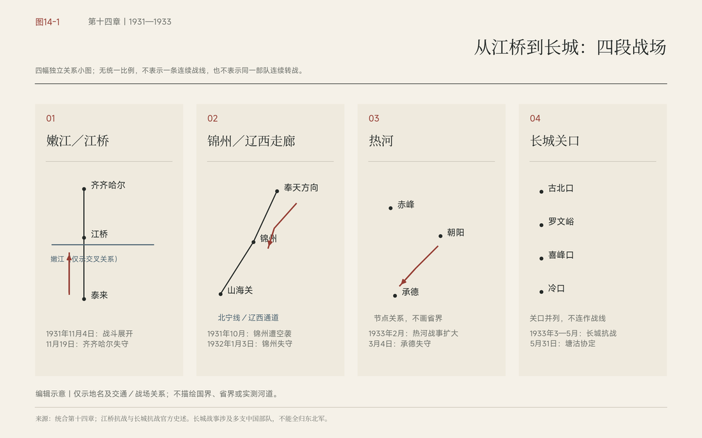
图14-1 从江桥到长城：四段战场 分别呈现江桥、锦州、热河和长城关口四段战场及关键日期；各图无统一比例，关口不连作战线，亦不暗示同一部队连续转战。
资料来源：本书第十四章、江桥及长城抗战官方史述。
黑龙江的局面在10月中旬有了转机。张学良任命马占山代理黑龙江省主席，兼军事总指挥。马占山从黑河赶到齐齐哈尔，10月20日正式就职。他到任以后压服了省内的主和意见，把留省部队、政府机关和地方警务重新编起来，以江桥、大兴、三间房、昂昂溪方向构成前后相接的阵地，10月22日发表抵抗宣言，说对侵入省境者决死一战。黑龙江省的军政，几个月来第一次有了一个说了算的人。
日军要进齐齐哈尔，绕不开洮昂铁路和江桥。洮昂路连接洮南和昂昂溪，江桥是通往省城的咽喉。日方以洮昂铁路借款和修复江桥为名，要求黑省军撤离、允许日军保护修桥。马占山拒绝。日军随即以飞机、火炮、铁甲车和步兵展开进攻，局部交涉变成了持续战斗。修桥是借口，过桥进省城才是目的，这点马占山看得很清楚。
11月3日，日军开始在江桥附近活动。4日，日军在飞机、装甲车和炮火掩护下发起进攻，守军还击，江桥抗战进入直接对日作战。接下来的几天，双方围绕桥头、江岸和大兴阵地反复争夺。黑省军利用既设阵地、骑兵机动和近距离射击阻挡进攻，日军不断增援，用空中和火力优势摧毁工事。守军初段打出了战术成效，随着伤亡、疲劳和弹药消耗，逐步后撤。
战斗最激烈的地段在桥头和大兴。守军把仅有的野炮和机枪架在阵地两侧，靠骑兵在开阔地机动，日军几次冲上桥头都被打回去。日军的飞机和铁甲车白天压制，守军就夜里修工事、白天躲炮；弹药靠库存和省内搜集，打一发少一发。打到11月中旬，阵地已经被炮火犁过几遍，官兵疲劳到极点，后方的补充还是空的。江桥的数字后来被传得很乱。中方的战时报告、回忆和报刊，有说日军伤亡数千的，也有说上万的。
李淑娟、王希亮利用日本亚洲历史资料中心所藏陆军省调查班的统计复核，战死、负伤和失踪合计328人，冻伤另计；日本学者江口圭一的考证略高，记录的冻伤更多。这些数字还要同部队补充、战报和中方记录继续核对，但已经足以说明一件事：修正夸大的战果，不会削弱守军抵抗的事实，反而能把评价放回阵地争夺和持续作战这些可核的过程中。
11月8日以后，日方要求马占山下野、黑省军撤退、允许日军进入昂昂溪，军事压力和政治要求同时加码。日方还给马占山留了另一条路：只要让出省城、交出省政，可以保留军队和职位。马占山没有接。他清楚江桥守不住太久，也清楚一旦开了让省城的口子，黑龙江就再没有公开抵抗的旗子。马占山拒绝交出省政，守军在三间房一线继续抵抗。11月12日，蒋介石致电嘉奖自卫；17日，国民政府正式任命马占山为黑龙江省主席；19日，南京又电称已催促张学良派队援助。
嘉奖、任命、催促一样不少，前方的兵和弹药却没有随电令到达。马占山始终没有等到张学良的援军。
17日以后，日军集中更大兵力，在飞机和重炮支援下向三间房等阵地发起总攻。守军工事受损，弹药将尽，外援无望。18日，马占山下令撤出阵地，省府和部队向海伦方向转移；19日，齐齐哈尔失守。转移保住了部分军政人员和部队，黑龙江的抗战在富裕、海伦一带延续下来。江桥的结局谈不上“守住了”，也谈不上“一触即溃”，打、耗、撤、转，一个环节都没少。
江桥当然不是九一八以后唯一的抵抗。9月19日，长春宽城子、南岭的守军在日军进攻后还击，随后受上级撤退命令约束；沈阳的警察和公安队在城区抗击后撤出；辽西的公安队和地方武装也在活动。江桥之所以突出，是因为它是九一八以后第一次有省级军政领导、有较完整阵地部署、有持续作战过程的重大抵抗。这个位置是打出来的，不是后人封的。
江桥打完，马占山把省府迁到海伦，继续以黑龙江省主席的名义号令，部队在富裕、海伦、拜泉一带整补。1932年，他又在黑河再举抗日旗帜，组织部队反攻。黑龙江的抗战没有因为齐齐哈尔失守就停下来，只是从正面阵地战变成了分散的游击和袭扰。省主席这面旗还在，队伍就还能聚起来，这也是江桥留下的东西。江桥也把单省抗战的边界摆得很清楚。马占山能决定黑龙江的部队打不打、怎么打，却调不动吉林的驻军、锦州的部队和中央的资源。
省内的命令一条线到底，跨省就成了另一回事。南京的嘉奖和外交支持给了抵抗正当性，解决不了弹药和兵员；张学良的东北军主力在关内，回师要过铁路、要时间、要华北的安稳。一个省能打出样子，打不出一场战争。
江桥之外，东北的抵抗还有别的样子。原东北军部队、省区的警察和公安队、地方保安和民团、民众义勇军、中共领导的游击武装，都在打，组织来源、指挥关系、装备和政治目标各不相同。辽宁的警务系统利用撤出人员、县公安队和民间武装发展抵抗，黄显声等人的活动把部分地方力量纳入行署联络；吉林、黑龙江的爱国将领更多依托原有驻军和地方政权。主要城市失守以后，分散的义勇军在辽河、松花江和其他地区活动，逐渐成了东北抗战的重要部分。
这些力量合起来看是社会基础，拆开来看就明白：省级部队能守阵地，靠的是固定防区、弹药和铁路；公安队适合维持地方秩序和短促阻击；义勇军便于分散动员和袭扰，编制、训练和供给却参差不齐。各地之间缺少稳定通信、共同作战计划和持续补给，一个战场上的兵力和声援，很难自动变成另一个战场的增援。问“东北军抵抗了没有”，要拆成几个问题：官兵开火没有，主官组织防御没有，张学良调主力增援没有，南京给全国支持没有。前几问有肯定的答案，后几问的答案要难看得多。
马占山本人的经历，还提醒后人评价人物要分阶段。1932年2月，他出任伪黑龙江省省长；3月，任伪满洲国军政部长；4月1日离开齐齐哈尔，7日到黑河后再举抗日旗帜。“诈降”是后来纪念叙述和部分研究者的解释，任伪职和随后反正则是可以分别确认的行动。他为什么这样选择，部下怎么分歧，物资怎么处置，都要看当时的交涉和行为，后来的反正不能自动抹掉任伪职期间的政治影响，早年的抵抗也不该被这段盖住。抗战期间，他出任东北挺进军总司令；抗战后逐渐退出军界，1949年参与北平和平解放，1950年病逝北京。
江桥打完，锦州的压力立刻上来了。锦州的军事价值在北宁铁路、辽西走廊和山海关门户，政治价值在行署和残存的辽宁省政府。守住锦州，中国在关外还有一个公开的政权和继续交涉的立足点，还能屏障热河和平津。守城需要外围防线、铁路运输、空军和炮火支援、稳定的后方，锦州手里这几样都不齐。常国栋依据国联说帖和中日材料，把锦州守军从“六万”的旧说修正到三万至四万人，12月抽调以后继续减少；日军则逐次增兵，火力和空中优势明显。
列强对锦州的态度，从头到尾是“关心但不担保”。英国在远东有生意要做，不愿为锦州得罪日本；美国没有参加国联，只在外交上表示关注；法国更冷淡。顾维钧的方案要求第三国明确保证日军不进入，这条恰恰是各国最不愿答应的。没有担保的中立，等于中国军队先撤、日军随时可以进，中方当然不放心。11月下旬，顾维钧向英、美、法探询锦州临时中立安排。 中方设想的要点是：中国军队撤出，当地中国行政和警察保留，第三国明确保证日军不进入。
这个方案想用主权和行政的延续换军事缓冲，可有关国家不愿承担担保责任，国联只讨论派观察员一类较弱的安排，方案很快就露出没有执行基础。日本随后提出自己的中立化版本，要求中国军队撤往山海关以西，由中日地方代表直接商谈。两个版本在“军队撤退”上看着相近，在行政权、警察、担保和进入条件上差得很远。中方要的是有担保的缓冲，日方要的是没有担保的撤军。
张学良对直接交涉有兴趣，希望用部分军事调动换取日军停止前进、锦州行政权保存。他在谈判中反复询问日军停止线、留守警察、地方政府和铁路警卫，关注点一直在怎么降低撤兵的代价。日方代表的回答变来变去，军事进攻又让原先谈好的条件作废。这段交涉最容易被后人简单化，写成“张学良一心想撤”；实际情况是抵抗指示、外交试探、保存实力三件事在几个星期里交替出现。11月25日，他还电令第十九旅遇敌交战时固守。问题在于这些指示没有拧成一个统一、持续的防御方案。
12月初，南京加强对张学良的守锦要求。12月2日，顾维钧传达中央决定：没有国联或有关国家的切实保证，不得同意撤兵；日军若进攻，应竭力抵御。他同时转达宋子文关于抽调部队、税警团和筹款的承诺。12月8日，蒋介石又电告“此时锦州军队切勿撤退”，并称航空第一队将到北平归张指挥。南京的抵抗表态是明确的，援助却停在“筹办”“将到”上。
12月上旬的南京，自己也在换班子。蒋介石下野前后，财政、军政和外交的大员都在动，孙科政府接手时连各部人选都没配齐。张学良同新政府之间本来就没有深交，求援电发过去，回来的多是“已交机关核办”一类的话。中央的政潮和锦州的前线，就这样叠在一起。12月15日，蒋介石下野，宁粤政潮进入新阶段。孙科政府接手，财政、军政和外交机构都受人事更替影响，张学良与新政府之间缺少既有信任。 日本趁这段时间增兵，准备辽西作战。
南京要守锦州以维持国家立场，实际调兵、拨款和协调华北防务的能力却十分有限。12月21日以后，日军沿北宁、大通、营沟等方向推进，张学良向孙科政府紧急请求现款、弹药和援军，还提醒天津日军可能威胁后方。25日至29日，政府多次回复“积极抵抗”，说粮械援军已交有关机关筹办或核办；张学良反复要求“确切办法”，指出空言固守解决不了前线困难。常国栋梳理这些往来后指出，直到撤守，孙科政府有关回复仍停留在机关办理，锦州方面没有得到所请求的实质支援。
日军在12月下旬的推进很快。北宁路沿线城镇一个接一个失守，锦州的右翼和后方同时受威胁。张学良手里的部队，一部分在锦州外围，一部分在滦州、山海关，还有一部分在平津附近看家。要把这些部队捏成一个锦州会战，时间、运输和指挥都不够；要撤，又怕政治上担“不战而退”的罪名。拖到12月30日，他选择了撤主力、留留守。12月30日，锦州驻军在张学良的授意下撤往滦州等地，辽宁省政府行署暂时留锦办公。
主力撤出以后，公安骑兵、警务人员、部分义勇军和外围部队还在阻击。1932年1月2日，大凌河守岸的公安部队在日军强渡时还击，随后且战且退；1月3日，日军占领锦州。撤守因此有三层：张学良决定主力撤出，部分留守和外围力量继续交战，日本以优势兵力完成占领。只说“锦州兵不血刃易手”，抹掉了留守人员的行动；把外围交火说成一场完整的锦州会战，又掩盖了主力已经退出、统一防御没有形成的事实。
锦州撤守以后，东北军主力基本退入关内，辽宁省政府行署先留锦州，后来也退到关内。东北军在华北的驻地、军饷和番号，从此要看北平军分会和南京的脸色。东北的税源、兵工厂和行政腹地全部丢光，剩下的只有部队、眷属和一群流亡的党政人员。锦州一撤，撤掉的是东北军作为区域军政集团的最后一点独立性。张学良为什么撤，后来的研究有比较具体的解释。
黄道炫依据张学良12月30日致吴稚晖函指出，张在函中说“国家之情势如此，国家之实力又如此，胡敢再以救国之故而重其误”。这句话里的“重其误”，一头指着这次守锦州没有把握，一头指着前一年挥师入关、东北空虚的旧账。张的判断有几层：中东路事件让他不相信东北军能单独对日作战；九一八后军工和税源已失，弹药和财政都成问题；锦州一旦开战，天津的日军和日本海军可能威胁平津和退路。这些顾虑有军事现实作底，不能简单骂一句“保存实力”。
保存实力也有合理与不合理两面。若目标是争取时间、组织下一道防线、保护撤退，它与守土可以相容；若保存华北部队的代价是丢掉锦州政权、外围防御和抵抗意志，它就削弱了后面的战略基础。东北军退入关内以后，热河和长城成了下一道防线，锦州原本可以用于新防线的兵力、工事和情报，很多都随着仓促撤退丢掉了。评价撤守，要看撤退之后有没有把部队和组织用到下一道防线上，不能只看撤走了多少人。
锦州失守，在关内引起的反应比沈阳失守时更复杂。九一八时全国还有“日军寻事、政府交涉”的幻想，锦州一丢，东北军在关外的地盘就只剩热河了，舆论对张学良和南京的责难一下子多了起来。学生请愿、报馆社论、商会通电，要求出兵收复失地的声音一浪高过一浪。张学良能拿出来的，还是那几个军、那点钱和一条通往关外的铁路。
张学良在锦州有实际选择权。南京多次电令抵抗，日方劝诱又附压力，最后撤出主力仍由他决定。援助不足影响了可选方案，他仍须说明为什么在那个时候撤、怎么安排留守、有没有为下一道防线保存有效组织。统帅的责任，就体现在这些具体判断里。南京的责任在另一头：表态明确、承诺不少、落实很少，中央把守土要求转成国家行动的能力，在这场危机里暴露得很清楚。
锦州失守以后，热河的意义一下子重了。它连接辽西、内蒙古东部和华北，往北对着伪满，往南经平泉、承德、滦平、古北口可以逼近北平，往东经凌源、冷口可以进入滦东。东北军守着热河，关外就还有一块行政立足点，义勇军还有回旋和接济的空间；日军拿了热河，伪满的西南边界就清了，长城各口也就成了下一次进攻的出发线。燕山和长城给防御提供了地形，也把军队限制在几条交通孔道里，守得住口子就守得住一线，守不住一个口子，整条线都可能动摇。
热河的问题出在省主席身上。汤玉麟在热河的权力，兼着省政、军费、军队和地方人事，亲属和亲信把着财政和禁烟一类来钱的部门，军队的薪饷、给养和地方摊派都随他一支笔。热河是国防前线，省政却先服务于汤氏集团维持自己的权力和收益。军纪、民心、战备就这样互相拖着：地方社会承担驻军成本，部队又拿不到支撑现代作战的补给和训练。这样的省，平时看不出大毛病，真打仗就处处漏风。
九一八以后，汤玉麟在日本诱引、张学良命令和自己地盘的安全之间长期暧昧。他公开说守土，实际备战很有限。对北平当局来说，继续用汤，可以维持东北旧部表面的团结，代价是热河军政无法改造；撤换汤，可能引起地方部队分裂，甚至给日方干预的口实。两难是真的，可两难不等于只有“不动”一条路。有限换防、派参谋和粮弹监督、整顿财政、先指定代理指挥，这些办法都可以谈，只是每一样都要付政治成本，谁都不愿意先付。
热河的财政底子薄，军队粮饷一紧就向地方要；地方负担重了，民心就散。1932年年中，蒋介石连电张学良，要求迅速出兵、直接接管热河，说这是“以后治乱关键”。 张学良顾虑触动汤玉麟和日本的反应，没有照办。
蒋的建议里含有中央军令进入华北地方权力的意思，张的顾虑里也含有维护自己统辖权的意思。热河防务就这样同中央地方的权力竞争缠在一起：前线要人守，谁都承认；换将的风险谁担、增援的部队谁控、费用谁出，迟迟定不下来。
汪精卫的责难，集中在“抵抗不力、军费不清”上。行政院要张出兵热河，张要行政院先给钱、给权、给中央军的明确指挥关系；双方在电报里来回顶，越顶越僵。8月的鱼电把事情公开化，张随后辞去北平绥靖公署主任。这场争执有政策分歧，也有个人意气，最后埋单的是热河前线的准备时间。同年6月，汪精卫北上与张学良商议热河问题，8月又通电责张，要求他辞职。 行政院和北平当局围绕抵抗、军费、兵力的争执公开化。
张随后卸任北平绥靖公署主任，转任军事委员会北平分会副委员长并代行委员长职权，名义上的指挥机构调了，汤玉麟的地方权力和热河防务的主要矛盾没有动。
撤汤的讨论一直在小圈子里打转。回忆材料说，张学良因汤失民心、热河又是国防前线，动过换人的念头；张作相担心东北团体分裂，万福麟与热河职位有牵连，最后没有决断。这些回忆有立场，也有具体对话真伪的问题，可它们提出的问题很实在：换将不只是军事判断，还牵着旧部关系、地盘分配和对中央介入的戒备。张学良在东北旧部里是靠人情和资历维系权威的，动汤一个人，可能牵动一片人。
1932年底到1933年1月，蒋介石曾密备部队北上，张学良对中央军进入华北仍有抵触。榆关失守以后，张紧急增兵，并请求中央军增援，蒋又以友军多虑为由，表示战前中央军宜缓。双方的立场都随危机在变，也都让此前的猜忌影响了最后的准备。热河防务因此出现一种最坏的组合：地方主官没有改造的动力，华北统帅到危急时才想起要全国支援，中央在最关键的窗口又留着兵不动。
1933年1月1日，日军在山海关制造事端，反诬中国守军挑衅。驻守当地的东北军何柱国部，面对日方撤军、开放城门的要求，拒绝交出城防，赶修工事。1月2日，日军以炮兵、铁甲车、兵舰重炮和飞机攻击南门、鼓楼和东南角楼，守军还击，击退了当天的进攻。日军随后调来关东军第八师团所属部队增援。3日，日军在飞机、坦克和炮火掩护下再次猛攻，城墙和南门附近反复争夺，守军伤亡严重，最后撤离山海关。安德馨营等部的抵抗，说明榆关守军是在苦战之后才退的，并非不战而失。
榆关失守把热河的南侧也敞开了。日军控制了北宁铁路关内外的衔接点，可以威胁滦东，牵制中国军队，同时把主要进攻方向转向热河。中国方面若把山海关当成一次孤立事件，就会低估它对整个华北防务的预警意义。从1月中旬到2月中旬，调兵、筹钱、编组都在警报之后才开始，迟缓而分散，很难用“事发突然”来解释。
1933年2月，北平军分会把华北部队编成两个集团军。张学良自兼第一集团军总司令，负责平津、滦东到长城方向；张作相任第二集团军总司令，汤玉麟任副总司令，万福麟、汤玉麟及其他部队分担热河各线，孙殿英、冯占海和若干义勇军也编进作战体系。纸面上的参战兵力不小，实际各部的驻地、系统、装备和指挥关系差别很大，有的部队还在开进或换防。张作相名义上是热河的总司令，能直接支配的部队和参谋机构却有限；汤玉麟掌着热河本地军政；万福麟部新入热河；孙殿英和义勇军又各有各的底子。
2月中旬，张学良、宋子文等人到承德视察，张作相、汤玉麟、万福麟、宋哲元等将领随后发表抗日通电。公开表态是必要的，它向全国表明东北军还在抵抗，也向南京争取政治支持。可作战司令部成立得仓促，前线阵地、兵站、通信和预备队没有同步成熟。通电里的决心，落到阵地上要靠部队、粮弹和电话线去兑现。
2月21日起，日军分三路推进：绥中指向凌源，锦州指向朝阳，通辽指向开鲁。日军以航空、炮兵、装甲车辆和骑兵配合，沿交通线快速推进，又用伪军协助占领和侧翼行动。它的打法是趁中国军队还没集结完毕，先抢主要城镇和道路，避免在每一处阵地平均消耗。中国方面若干阵地相继失守，凌源、平泉方向的后撤使承德暴露。
日军三路并进，打的是交通线和城镇；中方各线没有统一指挥，退起来就成了比赛。
热河准备期里，北平军分会也开过会、发过电、派过参谋，真正落到前线的工事、粮弹和兵站却总慢一步。等到日军动手，各部队还在找自己的阵地。承德的结局很难看。汤玉麟在省城安排撤退，车辆和私人财物先走，士气跟着散。3月3日，汤离开承德；3月4日，日军占领省城；张学良随后下令通缉汤玉麟。张作相和总司令部无法把后撤的部队重新组成纵深防线，全省战线在多路失败、联络中断和指挥失控中解体。
热河战役里也有抵抗：冯占海等义勇军继续袭扰日军，孙殿英部第四十一军所属部队曾夜袭日军第六师团司令部。这些行动不足以恢复城市和交通线，只能证明“热河十日”里有不同部队、不同地点的战斗。写热河，只写承德易手会漏掉抵抗，只列几次夜袭又会遮住省区防御体系的总体失败。
承德失守后，日军没有停在省界。部队迅速向喜峰口、冷口、古北口方向推进，要控制长城关口，向华北施压。热河溃退的部队、原驻防军和新到的增援部队在关口附近相遇，接防、撤退、反击同时发生。热河阶段的组织弱点，就这样直接带进了长城战场。只是长城各口的地形和目标比热河清楚，各部队的表现开始拉开差距。
长城各口的防御，从一开始就是在漏水的船上补窟窿。热河溃退的部队往口内跑，增援部队往口外赶，接防的命令和撤退的命令同时下，前线主官常常不知道听谁的。何应钦接管军分会以后，把部队按口分配，勉强搭起一条防线，部队与部队之间的空隙、预备队的缺乏、通信的混乱，都不是几天能补上的。冷口在3月4日被日军先遣部队占领，直接威胁滦东守军的侧翼。 北平军分会7日命令商震、何柱国等部协同反攻，第三十二军黄光华师等部队7日至8日发动攻击，恢复了冷口。
此后守军抢筑工事，地方民众和矿区提供木料、工具和运输。3月下旬，日军再次进攻，守军依托阵地抵抗，打成相持。冷口初期的主动反攻说明，联合防务在目标明确时还能运转：军分会定任务，商震部主攻，邻近部队配合，地方社会出工料。4月，日军增加兵力、连续炮击，守军伤亡上升，预备队渐渐耗尽。 11日，白羊峪方向被突破，冷口守军面临侧后包抄，增援没有到位，只得撤退。冷口因此走完了失守、反攻、固守、再撤的全过程，最后丢在侧翼和增援时机上。
喜峰口方向原先由东北军万福麟部防守。热河溃退和日军追击使阵地动摇，第二十九军奉命接防，部队要覆盖冷口以西到马兰峪附近约三百里的长城各口。这里交通孔道多，兵力配置天然分散。宋哲元、张自忠、冯治安等以喜峰口为重点，在三屯营、洒河桥配置纵深支撑和预备力量，另派部队协助冷口、警戒其他关口。3月9日起，日军进攻喜峰口及附近高地，第二十九军在接防还没完成时投入战斗。 部队重武器少，就用山地工事、夜袭、侧后绕攻和近距离作战抵消日军火力。
10日至12日，赵登禹等部几次夜间出击，打日军侧背、炮兵和宿营地，正面部队同时反击，喜峰口的局势逐步稳定下来。张皓、吴迪芃利用中日双方材料指出，日军第八师团的报告也承认服部旅团的侧背受到扰乱、损失较大。日方记录为夜袭的效果提供了独立证据，具体歼敌数字仍要另案核对，纪念叙述里的高额估计也需要验证。
第二十九军的夜袭，后来被写成大刀队的神话。实际战斗里，大刀只是近距离作战的一种手段，部队靠的是夜暗、山地和突然性；日军报告承认侧背受扰、损失不小，说明夜袭确有实效。宣传把大刀说成克敌制胜的法宝，掩盖了第二十九军重武器不足、只能靠近战弥补的窘境，也掩盖了其他部队在别的口子上的苦战。3月中旬以后，喜峰口由夜袭转为阵地攻防和对峙。 第二十九军缩短部分战线，保留口内纵深和机动兵力。日军正面进展有限，就把压力转向罗文峪、冷口和其他方向。
罗文峪关系喜峰口的左翼和遵化的通路，刘汝明等部在3月16日至18日组织防守、增援和侧后反击，阻止日军从这个方向切断喜峰口的阵地。
喜峰口和罗文峪的战术成效，政治影响很大。全国舆论从中看到中国军队能在正规战斗里击退日军进攻，大刀队成了抗日精神的象征。军事边界也很清楚：第二十九军守住的是一条防线里的若干要点，日军仍可绕到别的关口。4月冷口失守，喜峰口守军的侧后受威胁，只能收缩。局部胜利没有改变整个东线的态势，原因就在各口相互依存，任何一处被突破，其他还在坚守的阵地都可能失去意义。
喜峰口的胜利没有维持太久。4月中旬，日军在冷口方向突破，滦东局势逆转，喜峰口守军的侧后受威胁，第二十九军被迫收缩。罗文峪、喜峰口一带的阵地陆续放弃，部队向遵化、唐山方向后撤。大刀队的声名留在了报纸上，防线的实际位置却一路向西移。古北口是承德通往北平的重要关口。热河失守后，东北军王以哲部及张廷枢师等在此布防，中央军第十七军关麟征第二十五师等奉命增援。 第二十五师3月上旬连续行军，到达时面对敌情不明、接防争议和阵地未备。
东北军希望交防后撤，中央军对第一线和第二线的配置另有意见，双方直到日军接近才完成部署。联合防御在紧张条件下开始，官兵作战意志不弱，指挥协同却没有预先解决。
3月10日，日军先以飞机侦察轰炸，再用炮火和步兵攻击。11日，古北口关口及部分高地失守，第二十五师在龙儿峪等阵地受到包围压力。关麟征负伤，杜聿明代理指挥，守军仍组织反击，保住部分阵地。12日，日军增加重炮和飞机，向正面和右翼同时进攻。守军连续击退攻击，电话总机和无线电报机随后被炸毁，前后方失联，预备队又不足，阵地最终被分割。 当夜，第十七军调第二师接替，第二十五师撤到密云整补。
古北口一仗推翻了“中央军一到就能形成优势”的设想，中央军训练和组织较整齐，照样受防空、炮兵、通信、工事、粮弹和友军接防的制约。杜聿明等后来的回忆说，部队卡车不足，粮秣主要靠骡驮和牛车，为避空袭只能夜间行动，石匣到北平往返要很长时间。这些细节出自参战者回忆，天数和数量还要同兵站记录核对，它揭示的后勤机制同别的战场是相通的。
古北口一仗，把中央军的长处和短处都露了出来。长处是组织、训练和补充比地方军整齐，短处是防空、炮兵、运输和通信都跟不上日军的节奏，长途增援到了前线也难马上形成战力。东北军和中央军在接防上的争执，又让阵地出现空档。联合防御的账，在古北口算得最清楚：番号可以拼在一起，指挥、补给和信任拼不起来。古北口失守后，第十七军在南天门组织纵深阵地。
第二师、第八十三师和整补后的第二十五师先后投入，利用对峙时间修筑掩体、交通壕和预备阵地，派小分队袭扰日军后方。4月下旬和5月中旬，日军两次集中兵力进攻，用飞机、重炮和坦克摧毁阵地，向侧后迂回。中国守军逐次接防、逐线撤退，付出重大伤亡，也把这个方向的战斗拖到了5月。
东线和中线相继后撤时，晋绥军傅作义部被调往北平以北。5月23日，第五十九军在怀柔、顺义之间的牛栏山阵地与日军激战，依托事前构筑的工事多次击退进攻，当晚奉命撤退。怀柔战斗和停战交涉几乎同时发生，前线还在抵抗，最高层的军事目标已经转向保全平津、结束冲突。战场行动和政治谈判，在最后阶段直接交错在一起。
长城抗战打了一个多月，各口都有可歌可泣的战斗，也都有狼狈的撤退。第二十九军在喜峰口守得最好，靠的是夜战近战和纵深配置；第三十二军在冷口先反攻后失守，输在侧翼和预备队；第十七军在古北口、南天门打得最苦，输在火力、通信和接防；第五十九军在怀柔打得最稳，靠的是工事和地方支援。同样是1933年的中国军队，表现差这么多，说明决定胜负的不只是装备，还有主官、准备、地形、后勤和指挥关系。这些经验，对后来的抗战有直接的用处。
长城抗战的另一个教训，是各军之间的协同。中央军、东北军、西北军、晋绥军在同一片战场上，各有各的指挥系统和补给来源，军分会能做的协调有限。一个口子吃紧，邻近部队未必能动；一个军撤退，友军的侧翼就露出来。这种分割不是1933年才有，此前的内战和派系已经把军队切成一块一块，抗日只是让这些裂缝暴露得更彻底。
热河迅速失守，全国舆论大哗，张学良的华北指挥地位撑不住了。关于请辞的日期，现有研究分别记3月6日和7日，可能涉及电文发出、到达和公布的口径；可以确认的过程是，张在6日至7日间引咎请辞，9日在保定与蒋介石会谈，蒋同意他离职。这场会谈同时处理战败责任、全国舆论和华北军队改组，带有明显的政治交接性质。3月12日，国民政府正式准张学良辞职，命何应钦兼代军事委员会北平分会委员长。
张学良离开北平，所留东北军改编为四个军，由于学忠、万福麟、何柱国、王以哲分任军长，归北平军分会指挥。改组保留了东北军的主要将领和部队，撤销了张学良个人直接统辖华北各军的枢纽。
张学良下野以后，东北军的四个军归北平军分会指挥，军长还是原来的人，部队的编制和驻地在调整，中央的军令、军饷和政治工作一步步进来。东北军名义上还是“东北军”，实际上已经从一支区域军队变成中央序列里的若干部队。这个变化在1933年3月就开始了，到1937年整编才最后完成。下野有实际的追责基础。张学良长期负责热河和华北防务，对汤玉麟问题、增援时机、作战准备和临战指挥负有主要统帅责任。 把离职写成蒋介石单纯夺兵权，会漏掉这些事实。
蒋介石和南京当局也确实借改组加强了中央在华北的军事存在，中央军北上和何应钦接管改变了权力分配。追责和中央扩权在同一件事里同时发生，各自都能由命令和人事安排证明。东北军失去张学良这个最高协调者以后，对中央军令、军饷和政治方向的依赖进一步加深，这个矛盾在下一章还会发作。
4月以后，日军在正面进攻之外加强侧后迂回。冷口和滦东的局势变化，威胁界岭口、喜峰口等守军的退路；古北口方向继续向南天门、石匣压迫。北平军分会命令若干部队撤到滦河和后续阵地，想缩短战线、保护平津。撤退在战术上有必要，临时构筑的防线、薄弱的通信和疲劳的部队又削弱了收容效果。日军相继进入滦东、冀东若干城镇，逐步形成对平津的军事压力。
日军的打法很清楚：正面压住，侧后迂回，逼中国军队自己撤。滦东一失，平津的东面就敞开了；古北口、南天门一破，北平的北面也保不住。中国军队在各口死守，守的是点，日军打的是线，点守得再好，线一断就得退。冷口一失，滦东就守不住了。何应钦接管军分会以后，命令部队撤到滦河以西，缩短防线，保住平津。撤退的命令下得急，部队和难民挤在几条公路上，日军的飞机追着轰炸，秩序很乱。长城各口的守军先后后撤，有的部队还保持着建制，有的已经打散。
从4月下旬到5月，华北的战线一路向西移，最后移到了平津城下。
5月上旬，日军再次发动较大规模进攻，南天门和石匣方向的战斗加剧，东线守军继续后撤。到5月中下旬，密云、玉田、蓟县、三河等地相继告急，平津受到直接威胁。中国政府的选择缩得很小：继续作战，需要新的增援、补给和城市防御方案；停战，则要接受日方提出的撤军线和监察条件。南京和北平当局以保全平津、避免战事扩大为优先，谈判渐渐压过了继续组织战役反击。
日本方面在停战条件上也不是铁板一块。关东军和驻华北的日军希望趁胜多占地方、多要条件，外务省则担心在国际上太难看，主张留一点余地。冈村宁次在谈判桌上态度强硬，把草案当成最后方案，中方代表能改的余地很小。塘沽协定的条款，是日本军事优势在谈判桌上的直接反映，中国方面争取到的，主要是停战和保全面子，实质内容很少。
5月25日，中方军使徐燕谋在密云签署《密云觉书》；31日，熊斌与冈村宁次在塘沽正式签署《塘沽协定》。日方把草案当成最后方案，中方关于恢复战区原状等意见没有进入正文。协定要求中国军队撤到延庆、昌平、高丽营、顺义、通州、香河、宝坻、林亭口、宁河、芦台所连之线以西以南，允许日军以飞机和其他方式监察撤退；长城与中国撤军线之间的治安由中国警察维持，正规军活动受到限制。
外交上的账也到了结账的时候。1932年10月，国联调查团提出报告，基本认定日本是侵略者，主张东北实行某种国际共管；日本不接受，1933年3月27日正式退出国联。国联的决议和调查，在道义上站在中国一边，阻止不了日军的推进。塘沽协定签在国联报告之后，等于用事实承认了国联管不了。塘沽协定的直接效果是停止大规模战斗，保全平津不受本轮攻击，为国民政府争取到整顿的时间。
代价同样明确：中国失去了热河和长城以北的实际防御空间，冀东出现受日方监督的非武装地带，日本得以巩固既有占领，继续向华北施压。臧运祜指出，这个安排后来成为日本推进分离华北政策的重要立足点。停战的短期理性和长期战略损失要分开记账，两项同时成立。说它“卖国”，解释不了当时平津兵临城下的处境；说它“必要”，也遮不住一纸协定把华北大片地区的手脚捆住的事实。
塘沽协定之后，华北的局势没有安静多久。日本以协定造成的非武装地带为跳板，继续在华北搞分离活动，1935年的华北事变就是这条线的延长。中国方面用一纸停战换来的几年时间，一部分用在了整顿和建设上，一部分又消耗在内战和派系争斗里。停战的价值，不能只看签字那一天，要看后来的时间怎么用。塘沽协定的条文不长，含义很重：中国正规军撤出冀东，日军飞机可以监察中国军队的撤退，长城以南、撤军线以北的治安交给中国警察。
这几条合在一起，等于在华北的东大门上开了一个口子：中国军队不能进，日本军队随时可以来，警察维持的“非武装地带”成了日方可以自由进出的走廊。此后几年，日本在华北的分离活动，很多就是从这个走廊里长出来的。
东北的格局，到这时也定了型。1932年3月1日，日本在长春导演“建国”，9日溥仪就任“执政”，伪满洲国登场；1933年3月热河失守后，热河也被并了进去。这个政权从成立那天起就不是东北军政集团的延续：军队是日本的关东军和伪军，官吏由日籍次长和顾问监督，经济由满铁和日本财阀统制，外交跟着东京走。它把东北从中国领土里割出去，又用“王道乐土”“五族协和”一类话替占领涂脂抹粉。东北军余部退进关内，留在东北的抗日武装转入地下和山林，此后的东北，是日本占领下的东北，不是奉系旧部能说了算的东北。
塘沽协定在当时的舆论里被骂得很凶，政府出来解释，说这是为了保全平津、争取时间。骂的人和解释的人各有道理：协定确实让平津免于战火，也确确实实把冀东交了出去。历史评价如果只挑一头，都会失真。
塘沽协定签完，本轮战事就算收了尾。从九一八到塘沽，中国方面的抵抗没有断过，只是始终没有组织成一场战争。关内的东北军、关外的义勇军、长城上的各军，都在用自己的方式打，缺的是一个能把他们连起来的国家组织。这点，比任何一份停战协定都更值得记取。回看1931年9月到1933年5月这两年半，东北军和地方部队并不是没有打。江桥打了一个省能打的仗，锦州的留守和外围部队打过，榆关打过，冷口、喜峰口、罗文峪、古北口、南天门、怀柔都打过。
问题在于这些仗分散在几百里的战线上，各打各的，胜了不能扩大，败了无人接应，最后被日军的火力和机动一点一点压垮。前线官兵的抵抗没有换来相应的政治成果，停战所争取的时间能不能变成国防建设，还要看随后几年的政策。
历史爱好者不妨问一句：如果1932年夏天就把热河的换将、增援、阵地和兵站做起来，1933年的长城会不会是另一番局面？这个问题没有确定答案，但线索是清楚的：热河有一年多的预警期，中央和地方也都有过调兵、换将、整顿的动议，最后都停在互相戒备和政治算计上。战争不是从1933年2月才开始的，准备却拖到1933年2月才开始。
东北军在1933年失去的东西，比1931年更彻底。九一八丢的是沈阳中枢，锦州丢的是关外政权的立足点，热河丢的是最后一块省区地盘，长城一战又丢了独立统帅。部队改编成四个军，番号和将领还在，可财政、军令、人事和政治方向越来越要听中央的。下一章要看的，就是这支失去乡土、税源和独立行政腹地的军队，怎样在关内流亡社会里重新找位置。
本编写失去根据地之后的东北军。官兵、军属、学生和商民进入关内，流亡社会靠学校、同乡会、救济组织和救亡刊物维持；东北军则在中央军饷与整编中生存，被派往西北“剿共”，在劳山、直罗镇连续失利后开始秘密接触中共，最终在1936年12月由张学良、杨虎城发动西安事变，东北军被卷入其中。本编三章把流亡社会、西北战场、西安事变与 1937 年整编连成一条线：东北军的政治转向既有全国抗日潮流的推动，也有军饷、损耗、驻地与内部权力关系的现实约束。
九一八之后，东北人往关内走，走法并不一样。军政机关跟着部队撤，先从沈阳退锦州，再从锦州退北平、天津；学生和教师结伴南下，先找能复课的地方；商人带着能变现的货物和关系，往上海、北平等大城市寻生意；普通百姓则看亲戚、看同乡、看路上有没有活干。热河、长城两场战事打完，又添了一批新的离乡者。把这些人都叫“难民”，不对；都叫“流亡者”，也不全对。他们在关内落脚的方式不同，登记他们的册子也不同。
最早动的是机关和学校。1931年9月26日，东北大学大部分师生迁往北平；十几天后借南兵马司的房子复课。军政人员随锦州行署、北平军分会一步步后撤，家属跟着走。天津、北平和山海关沿线挤满了等车等船的人，铁路运力先紧着机关和军队，普通旅客买不到票，就在车站附近住下来，等下一趟。
海路是另一条。营口、大连的轮船把人和货往天津、上海、青岛运，票价随局势涨落。有钱的买舱位，没钱的挤统舱，再没钱的只能沿铁路线走。走的人不一定都打算长住关内：有人把家眷送到天津租界，自己回东北看铺子；有人在北平落脚，指望冬天过去就回去。占领成了定局以后，回去越来越难，临时落脚才慢慢变成长期流亡。
北平是第一处大码头。张学良和北平行营在这里，奉天会馆这类同乡地方能接待来人，平津又有学校、报馆、商会和通往全国的铁路。会馆管住和介绍，学校管学籍和宿舍，报馆管说话的地方，商会管生意和信用。一个人能不能在北平站住，往往不取决于他是不是东北人，而取决于他手里有没有这几样关系。有的军官太太靠旧部接济，有的教授靠学界荐举，有的学生靠同学合租，有的小贩靠同乡赊账。关系多的人先站住，关系少的人先饿肚子。
上海接住了另一批人。工商、新闻、募捐，都在这里找到空间。上海的商会、银行、报馆和租界，给东北流亡者提供了一种北平没有的可能：靠经营和舆论活下去。杜重远这样的实业家能在这里办刊物、募捐、联络，普通店员和小商贩则只能靠同乡和临时工作。天津和济南也接住了一批人。天津有租界、有港口、有北洋时代留下来的报馆和学校，许多东北军政人员的家眷先在这里落脚，再往北平或上海走。山东人出关谋生是旧传统，九一八以后，一批在东北做小生意、当工人的人沿着原路回到胶东、鲁西老家，过一冬再出来。这些人的流动没有留下多少文字，铁路客票、商会登记和村镇口述里能看出一点影子。
教会、红十字会和各同乡会办的收容所，是流亡者最早碰到的一层。收容所有床位、粥棚、简单医疗和登记册，能救急，也有规矩：要登记籍贯、职业、家属人数，有的还要找保人。登记本是为了发救济，也把流亡者变成一个个可统计的姓名。谁有保人、谁有同乡介绍，谁就更容易被收进去；没有关系的人，往往在门外等一夜也进不去。
流亡路上最难的常常是孩子和老人。孩子要上学、要看病，老人走不动、受不了颠簸，一家人在车站、码头和收容所之间分开是常有的事。救亡团体后来办寻亲、办临时学校，就是因为这种离散太多。1932年伪满洲国成立以后，回东北变得麻烦。回去要办手续、要证明身份，有的人被日伪列为“抗日分子”家属，不敢回；有的人回去后被监视、被敲诈，又跑出来。关内外的通信和汇款也断断续续，家里收不到钱，人不知道死活。流亡从临时避居变成了长期分离，很多人从此再没见过父母妻儿。
东北军官兵的家属，夹在这中间最难受。丈夫随部队在关内，妻子带着孩子留在东北，靠亲戚接济；或者一家人挤在关内，靠军饷和救济过日子。军饷断了，家就散；部队开拔，家就搬。战争把家庭拆开，流亡把拆开的家庭又拉成一条条跨省的线。
1935年以后东北军西调，西安又成了一个聚合点。部队驻在那里，军属、学生、旧部和救亡工作者跟着去，东北大学西安分校也设在那里。西安的物资和住房比平津紧张，东北人来得多，和地方社会的摩擦也多。全面抗战爆发后，人流再往武汉、重庆、成都和四川三台走。流亡社会没有固定的中心，中心随着军队驻地、中央政策和战线移动。
人口数字能说明一点问题，但只说一点。研究者整理华北劳工进出东北的记录：1932年离开东北的约四十四万八千九百人，进入的约三十七万二千六百人，出比入多七万六千余人；1936年又出现出多于入；1937年反过来，入多于出。这是劳工流动的统计，里面有季节工、有返乡、有逃难，不能直接当成“东北流亡者”的总数。它至少纠正一个想象：东北被占领以后，人一直在占领、谋生、返乡之间来回走，没有一条单向的路。
身份的名目也要分开。“难民”常见于收容、施赈和遣送的册子，说的是眼下没饭吃；“流亡者”多出现在学校、救亡团体和政治回忆里，说的是离开故土、还想回去；“东北人”可以包括早就在关内落脚的移民和他们的后代。三种身份大量重叠，背后却是三套材料：收容册记一次救助，学籍记一段教育，救亡刊物记一批政治活跃的人。把这些材料一锅煮，就会把不同的人算成一类。
关内的地方官和警察，对流亡者的态度也不一样。平津的当局既要安置，又怕人多出事，收容、登记、遣送、限制，几手并用；东北军驻地附近，地方官要应付军队，也要应付源源不断来的家属。流亡者夹在政府、军队、同乡和慈善机构之间，谁都可以管一点，谁都不全管。这种“多头照顾”，正是流亡社会真实的样子。
关内社会接住这些人的方式，靠的是现成的网络。同乡会馆管吃住和介绍，学校管学籍和宿舍，商会管生意和信用，报馆管说话的地方，部队管番号和薪饷。军官有旧部，教授有学界，商人有同业，学生有同学。什么都没有的人，才真正落到“难民”两个字里。流亡社会从一开始就是分层的。
所以写流亡史，不能只顺着有档案的人走。上层军政人员和知名人士能带出钱、关系与名声，中层教师、职员、学生能带出学历和人情，底层工人、农民、小贩只能带出一双手。前两类人的经历被写进回忆、校史和报纸，后一类人留下的记录少得多。漏掉的人恰恰是多数，他们的日子只能从救济册、房租、粮价和零散家信里一点点拼。
部队进关，家庭也跟着离散。军官和士兵可以凭番号领饷、找驻地，眷属却要自己找亲戚、租房、安排孩子上学。有的家庭随军走，有的留在沦陷区，有的在沈阳、锦州、平津和后来的西北驻地之间来回搬。军队发不发饷、换不换防、主官肯不肯给车皮，直接决定一家人的日子。第二十二章说过东北军失去税源和地盘，落到家庭账上，就是军饷越来越靠中央，眷属越来越靠同乡和救济。
军属不只是被救济的人。1931年11月，于凤至等人发起华北妇女救国会，请军政人员的眷属参加，募款抚慰抗日死伤官兵和遗族，也救济被难灾民。这件事把上层军属的声望、募捐能力和战时的慰劳工作合在一起。她们用“慰劳”这种体面的名义进入公共政治，为伤兵和遗属争到一些资源。普通军属面对的是房租、粮价和孩子的学费，两者的处境差别很大，不能用一个“军属”抹平。
妇女救国会的办法，是把军政家庭的太太、小姐组织起来，开会、募捐、办义卖、去医院慰问。她们能动员的社交网络很广，从官太太到女学生都能拉进来；能募到的钱也有数，比起几万流亡家庭的需要，只是杯水车薪。募捐的办法很实在：开茶话会、办义卖、请名角唱戏、向银行和商会劝募，钱物登记造册，再送到伤兵医院和遗属手里。义卖会上，官太太们拿出首饰、字画、皮货，女学生做手工、写标语，场面热闹，账目也要公开给人看。这种活动既筹钱，也替抗日做宣传，还让军属在公开场合露面。对参与者来说，这是体面的事；对受助者来说，能拿到多少，要看募捐的运气和分配的次序。
这层工作的局限同样明显。它靠的是上层关系和临时热情，捐款随局势起落，账目和分配缺少稳定制度；受助者要找人、要证明、要排队，最不会说话的家庭常常排到最后。妇女救国会能替军属争到一些资源，改变不了军属整体靠军饷和亲戚过日子的局面。
救济在最初几年带着明显的应急味道。会馆给落脚的地方，救亡团体帮着寻亲、安置，学校收失学青年，军政网络发一点补助或安排随军。这些办法能救急，救不了长期。捐款有起落，主官会更换，部队会开拔，1933年张学良下野以后，靠他个人掏钱和打招呼维持的救济更是大打折扣。流亡家庭后来更多依靠教育机关、中央赈济和跨党派的救亡组织。
全面抗战爆发后，眷属问题跟着战区扩大。刘澜波在武汉时期根据平汉线回来的人所说，呼吁救济流散在河南各地的东北失业者和阵亡将士眷属，主张设专门机构做调查、筹款、生产救济和教育。他引用的数字来自救亡刊物的二手报告，能说明问题有多急，不能当成精确的户数。后来国民政府拨八十万元救济难民，东北救亡总会提出优先照顾东北军人家属并得到采纳。这笔钱是难民救济总盘子里的一笔，东北军属实际分到多少，还得看分配清单。
教育和救亡，是流亡社会最有组织能力的两块。东北大学是流亡教育里最完整的例子。1931年9月26日，大部分师生迁到北平；10月18日，学校借南兵马司旧税务监督公署的房子复课，八十多间房挤进男女学生三百多人，部分系科停办，课程也改了。图书、仪器、档案大多没运出来，一部分学生被送到北大、清华、南开、平大借读。张学良以校长身份给经费、找关系，教授代表会和学生组织管具体事务。学校保住了名字、学籍和一批师生，也就保住了一个“东北还在办学”的象征。
复课不是把学校原样搬来。校舍是借的，经费是凑的，教师有的随校、有的留在北平其他大学兼课，学生有的住校、有的散居民间。教授代表会要管课程和人事，临时学生会要管伙食、住宿和纪律，校长要出面找钱、找房子、找关系。一个大学在流亡里还能开课，靠的是这些琐碎的组织工作，不是靠一句“弦歌不辍”的口号。
张学良下野、华北危急、驻地变化，都会影响学校的校址和经费。1933年学校在北平重新征选校徽，图案保留东北的地域和故土象征；这类象征看着小，却能让学生和校友觉得学校还是那个学校。1936年2月，工学院和补习班迁到西安，成立西安分校，其余学院还在北平。1937年校部和文、法两院经开封转移，6月集中到西安；1938年春再往四川三台迁。所谓“东北大学师生”，从来不是一批人一起走：不同学院、不同年级、不同时候各走各的。学校的认同靠的是校名、学籍、校友和“打回老家”这句话，不是靠大家住在一个院子里。
大学之外，中学和职业教育接住了更多失学青年。1931年10月27日，东北学院在北平皮库胡同原救济所的院子成立，张学良任董事长兼校长，王卓然、阎宝航、高崇民、王化一、车向忱等当校董；大学部迁出后，中学部改称东北中学。1934年3月26日，东北中山中学在北平创办，专门收东北流亡学生，后来成为抗战时期教育部直属的第一所国立中学。国立中学把流亡青年纳入国家教育经费，比一次性捐助稳定得多。
东北中学和各类职业学校，接住的是另一批人。东北中学管初中、高中，学生多半是随家流亡或只身出来的青少年；职业学校教印刷、机械、纺织、护理，毕业能找活干。还有民众夜校、识字班，把成年流亡者和城市居民招进来，白天干活、晚上上课。这些学校的条件都简陋，教室是借的，教员是兼的，经费靠捐款和学费，能坚持几年不容易。
学生一进学校，政治就跟着进来。国共两党和外围团体都在学生里发展组织，抗日宣传、读书会、壁报、演剧，是常见的形式。学生一边上课，一边参加救亡活动，许多人后来参军、去延安、去大后方，也有留在沦陷区做地下工作的。国立中学的制度，是国民政府为流亡学生设的一条线。1934年以后，教育部在各地办国立中学，收沦陷区和战区来的学生，管吃、管住、管学费，按成绩分班。东北中山中学是第一所，后来在各地办的分校也收东北学生。读国立中学的学生，毕业后能考大学、考军校、找工作，也能参军。对许多流亡青年来说，这是唯一能继续读书的路。
流亡学生和东北军的关系很近，也很复杂。学校靠张学良和东北军政网络的支持，学生里又有不少人后来进了东北军；但学生有自己的组织和政治选择，不完全听军队的。西安事变前夜，东北大学西安分校的学生参加请愿，走在队伍前面，他们和东北军的军官一样，都是流亡者，都在等一个“打回老家”的机会。
这些学校的分工，其实是流亡社会自己的分层。大学保存专业教育和一批教师，中学收青少年，职业学校教一门手艺，借读维持一部分学生的课程。能进大学的，多半在东北时就有学历和家庭底子；能进国立中学的，要赶上招生和审查；进不了学校的，只能去当学徒、做杂工或参军。教育救济覆盖了相当一批青年，也把另一批人挡在门外。
救亡团体把这些人组织起来。1931年9月27日，东北民众抗日救国会在北平奉天会馆成立，到会四百余人，多数是东北籍青年学生。阎宝航、高崇民、卢广绩、王化一、车向忱、杜重远这些人带来农会、工会、商会、教育和新闻的经验，学生出人出力。救国会一手对关外联络义勇军、传递消息、输送支援，一手对关内向南京和全国社会请愿、募捐、办学校、救难民。张学良给保护和钱，地方精英和青年学生管日常运转。说它完全是“自发”，或者完全是“授意”，都不合事实；政治发起、经费支持、军事联络和公开代表，本来就是几拨人分别在做。
救国会最有影响的工作，是把东北的遭遇变成全国的话题。他们办刊物、发通电、组织请愿团到南京，向各界报告日军在东北的暴行和义勇军的抵抗。东北的义勇军需要枪、药、钱和消息，救国会就在关内募捐、派人、传递情报。这些活动一直踩在政府的容忍线上：南京既想利用抗日舆论对日交涉，又怕舆论失控；张学良既支持救国会，又得顾及和南京的关系。
1933年以后，华北的公开抗日活动受到限制，张学良下野又改变了保护结构。救亡组织改名、换人、改活动方式，公开的军事援助收缩，救济、宣传和联络还在做。1937年6月，东北抗日救亡总会在北平成立，阎宝航等任常委，刘澜波任中共党团书记。这个组织想把东北各救亡团体、东北军和流亡人士联起来，统一战线在全面抗战前夜已经有模有样。
工商和报刊是另一条线。杜重远是个典型：九一八后离开东北，参加救国会，任常委、政治部副部长；江桥抗战时到上海募捐；后来办《新生》周刊，1935年因为《闲话皇帝》一篇惹出“新生事件”，被判刑，1936年9月出狱。他把沈阳实业时期攒下的商会声望、企业经验和跨地域关系，转成抗日宣传、物资动员和关内实业。这条路走通了，靠的是他个人的能力和本钱，普通商人未必复制得了。
报刊的作用更直接。流亡者借报纸向全国解释东北的处境，东北的消息因为进了全国的新闻市场，才不只是同乡圈里的旧闻。言论有边界，抗日的话说过了头会被查禁，“新生事件”就是例子。实业、新闻和救亡互相支撑，也让杜重远这样的人在张学良和东北军转向时，拥有一种不完全依附军职的影响力。
1937年卢沟桥事变以后，北平的东北大学旧址被改成难民收容所。市商会等机构从8月起在龙泉寺、彰仪门大街东北大学旧址和南半截胡同设了三处收容所。一所因东北沦陷而流亡的学校腾出旧址，另一轮战争中的难民又在那里落脚。流亡学校、城市救济和新的战争，就这样叠在了同一处房子上。
1933年3月，张学良下野出洋。1934年春回国，在武昌任事，东北军一部随后进入鄂豫皖参加“剿共”，第六十七军也从河北调到潢川、商城一带。九一八以后在华北辗转的东北军，这一次离东北和华北前线更远了。张学良的算盘不复杂：服从中央军令，保住部队的番号、军饷和地位，把抗日的希望寄托在国内统一之后。他此时还是“剿共”部署的执行者，后来的回忆把他写成一开始就觉悟、被迫内战的人，与当时的任职和作战对不上。
鄂豫皖的仗打得并不顺手。东北军对当地地形、民情和红军的打法都不熟，部队在山区里拉不开、展不开，补给线又长。红二十五军在这一带活动，机动灵活，东北军几次合围都没有抓住主力。部队有损耗，士气也受影响：官兵们从东北退到华北，又从华北调到鄂豫皖，鄂豫皖的作战，还暴露出东北军和中央军之间的隔阂。
东北军是客军，地形不熟，方言不通，和地方的关系也浅；中央军和当地保安团队各有系统，配合作战要层层协调。部队打了败仗，补充和抚恤又要走中央的机关，主官们心里难免有怨气：仗是替南京打的，消耗的是东北军的底子。这种情绪在军官层里传得很快，后来张学良转向，不少人是被这种情绪推着走的。
东北军内部也不是铁板一块。高级将领想着保存部队和地盘，中下级军官想着升迁和出路，士兵想着家里的爹娘和几亩地。张学良要带着这样一支军队去执行一个自己也不太信的任务，靠的是统帅的个人威望和中央的军饷。这两样东西，到1935年都开始松动。
1935年，红军长征和西北战局把局面改了。张学良转任武昌行营主任，东北军主力向陕甘移动，西北“剿匪”总司令部在西安设立，蒋介石兼总司令，张学良任副总司令、代行总司令职权。材料对机构设立和明令任职分别记了9月26日与10月2日，可以理解为先筹备、后发表，具体仍要拿机构档和国民政府公报复核。10月2日的明令还说他节制陕、甘、宁、青军政事宜，武昌行营随之结束。
职务上的地盘画得很大，手里的实权有限。中央军、第十七路军、东北军和西北各省地方部队各有各的指挥关系，财政、人事也分属不同系统。张学良可以部署东北军、协调战区行动，不能越过各军既有的指挥链去直接调人调钱。西北总部的权威来自南京，他对蒋介石的服从又是这个权威的来源。后来他同红军秘密停战，实际是在同一个法定职务内部改变执行方式，军令和密约从此两条线并行。
部队的部署是沿路拉开的。1935年9月中旬，第六十七军军部和第一〇七师在洛川，第一一〇师、第一二九师沿洛川—延安公路北进，第一二九师第六八五团进了甘泉。这样摆，是想恢复对陕北苏区的包围，把南北联系接上；代价是部队散在道路、城镇和山地之间，各据点互相依赖增援，交通一断，师、团就可能被分别吃掉。
西北的地形和补给，把东北军的老本行废掉了一半。在东北，他们可以靠铁路、兵工厂和地方财政；到西北，重武器、弹药、运输、粮秣都得从新的补给系统里出，道路不熟，民情不熟。红军恰恰擅长山地、群众信息和机动伏击，专挑行军和据点的薄弱处下手。账面的人枪数字，要换算成某条路上能多快集中、能侦察到什么、能撑几天，才有意义。
更要命的是军饷和抚恤。东北税源丢了，中央拨款直接决定部队能不能按时发饷，主官能不能安置眷属和伤兵。战后申请保留番号、补充兵员、发放抚恤，表面是财务手续，底下是这支部队还能不能活下去。后来研究常引用南京撤销第一〇九、第一一〇师番号、拒绝部分抚恤请求的说法，用来解释张学良和东北军的失望。这些说法线索价值不小，但目前多是后出回忆和研究转述，军政部的令、财政部的拨款单、抚恤案卷还没有系统调出来。可以说整补争议确实存在、政治影响确实很大，不能说“全部停饷”“一概不补”。
第一一〇师番号的空缺是个旁证。西安事变期间出现的抗日先锋队曾自行用第一一〇师的名义，1937年整编时又被要求裁掉，说明这个番号此前一段时间确实没有正常使用。西北的冬天来得早，部队的冬装、燃料和粮秣都成问题。东北军从东北和华北带来的一点库存，经过几次调动已经用得差不多；西北就地采购要钱，要运输，要地方配合。军需官和主官为了粮秣、草料、车皮到处求人，部队在防区里征用民房、骡马和粮食，又和地方百姓发生摩擦。这些琐碎的困难，最后都汇成一句话：这仗打不下去。
张学良在西北总部能做的，主要是向南京要钱、要粮、要补充，同时安抚各军。他能批的经费有限，能调的物资更少。部队的供给越来越依赖中央，中央的拨款又越来越紧，主官们对南京的信任就这样一点点磨掉。到1935年冬天，东北军还没有公开抗命，心里的账已经算得很清楚。
部队往西北开，家属的日子也跟着变。西北的房租、粮价、气候和关内不一样，眷属随军的要挤在驻地附近，不随军的要靠军饷寄回去。军饷一拖，家里就断顿；部队一换防，孩子就转学。到1935年底，东北军官兵的家庭生活已经和中央的拨款节奏绑在一起，这也是后来整补问题为什么会在军中引起那么大反应的原因。
西调还有一个说不出口的后果：部队离东北越来越远。官兵们嘴上说“打回老家”，脚下却从华北走到鄂豫皖，又从鄂豫皖走到陕甘。越走越远，回家的路越长，心里的账越难算。张学良需要用“先统一、再抗日”的说法稳住部队，这个说法在1934年还能讲得通，到1935年连败之后就越讲越吃力。
1935年10月1日，劳山打响了。红十五军团在沿公路北进的东北军身上设伏，第一一〇师师部和所属部队被打垮，师长何立中战死。红军方面的战史材料说，歼灭该师师部和两个团，何立中以下一千余人丧命，三千七百余人被俘。这些数字是胜方的战果记录，死亡、伤、俘和建制损失要分开看，不能把“歼灭”全折成死亡，也不能拿战果数字直接当南京的点验数。
劳山的后果不止伤亡。第一一〇师的指挥机关垮了，南北交通线露了出来，延安、甘泉、洛川之间的协同被打乱。红军拿到了选择下一个攻击点的主动权，东北军则要重新掂量分兵守点和沿公路推进的风险。第六十七军还有别的部队，整个东北军更没有到崩溃的地步；把劳山写成全军完蛋，就看不见后面榆林桥、直罗镇还有部队在打。
10月25日，榆林桥又打了一仗。陕西省地方志材料记载，参战的是第一〇七师第六一九团和第六二〇团一个营，团长高福源被俘，营以下官兵一千八百多人被俘。地方志里“高福元”这类异名要留着检索，正文用通行的“高福源”。榆林桥一仗的关键不在数字，在俘虏：高福源后来成了双方联络的中介。
11月，第五十七军等部继续往陕北推，第一〇九师沿葫芦河进直罗镇。11月20日该师到达，21日拂晓红军发起攻击，打到24日结束。战史材料说第一〇九师大部被歼，增援的第一〇六师一个团也被歼，红军方面记毙敌一千余人、俘五千三百余人。师长牛元峰死亡，师级建制被打烂，第五十七军的进攻计划随之失败。
三仗连起来看，问题很清楚：东北军没能把人和枪的优势变成稳定的战场控制。劳山暴露了沿公路机动的危险，榆林桥说明据点和团营容易被隔开，直罗镇则是进攻部队对地形、敌情和相互接应的判断出了错。红军每一步的兵力集中和打法选择，也都不是被动应付。东北军的败，败在把一支靠铁路和城市作战的部队，扔进了它最不熟悉的山地里。
从指挥上看，三仗都吃了“各管一段”的亏。部队沿公路摆开，各团各营守住自己的点，友邻之间的接应要临时联络；红军集中兵力打其中一段，旁边的部队来不及救，也不敢擅自离开防区。东北军的装备优势在山地里展不开，重武器上不去，通信又断，师部一被打掉，下面的团营就成了没头的苍蝇。劳山的地形，是公路两侧的山梁和沟壑，部队沿路行进，首尾拉得很长，红军埋伏在两侧高地，一开火就把队伍切成几段。
第一一〇师的师部在最危险的位置，一被打掉，前面的团、后面的团各自为战，谁也救不了谁。榆林桥是个据点，守军凭堡寨抵抗，红军集中兵力围攻，援军被阻在外面，据点就丢了。直罗镇在葫芦河边的川地里，冬天天亮得晚，红军趁拂晓摸上来，守军还没展开就被压进镇子，重武器和骡马都施展不开。
三仗的打法不一样，毛病是一个：东北军习惯了大兵团、正规战、铁路运输，到了山地和川道里，部队展不开、通信不灵、友邻不接，优势就变成了包袱。红军则专挑这种时候下手，集中几倍兵力打一路，打完就走。张学良后来在回忆里说红军“能打”，不是客套，是打出来的认识。
败仗之后，整补成了政治问题。张学良要向南京说明败因、申请补充、维持官兵和遗属的生活；南京要决定继续打、调整编制还是追究责任。番号和抚恤之所以在回忆里那么刺眼，是因为它们碰到的是信任：东北军觉得自己为国家军令流了血，中央的处理如果被看成借机削弱异己，继续打下去就没了道理。
这里也要留个分寸。三次败仗只涉及东北军一部分，伤亡、被俘、失散的人各有归宿，宣传里“几个师”的概括和全军减员比例不能混算。但精锐师级干部和建制在两个月里接连受创，对一支没有地方兵源、军工和财政的军队来说，分量确实重。伤亡和抚恤的处理，也在这时候显出不公平。有的部队伤亡大、补充少，有的部队没打什么仗却保留编制；有的遗属拿到抚恤，有的拖了几年没有下文。
第一〇九师在直罗镇被打掉以后，番号的处理、兵员的补充、干部的安置，都成了中央与东北军之间的拉扯。东北军想保留建制、恢复番号、安置旧干部；中央要从全局编制和财政考虑，能批多少、什么时候批，都有程序。双方各有道理，也各有算盘。后来第一〇九师番号恢复、人员重建，中间经过多少交涉，这里不详列，但这个过程足以说明：整补从来不只是钱的事，还是信任的事。
东北军的兵员来源也成了问题。东北老家在日本人手里，关内招募的新兵口音不同、乡土不同，补充进来的兵员和原有骨干之间需要重新磨合。一支失去本土的军队，打仗靠的是老兵和军官的经验，经验和人一起消耗掉，就很难补回来。三次败仗打掉的正是这批人。
张学良面前摆着三件互相打架的事：继续进攻，损耗更大，官兵对内战的疑问更深；自己停手，违反南京军令，军饷和地位都可能受影响；公开转向抗日，需要全国政治条件，尤其是和蒋介石的关系。1935年底他能走的路很窄。秘密接触成本低，可以保留正式职务，又能试探红军愿不愿意停战、中共能不能调整对蒋政策。后来发生的事，就是从这条窄路走出来的。
中共对东北军的工作，分公开文件、俘虏教育、秘密联络三条线。1935年8月1日的《八一宣言》提出停止内战、组织国防政府和抗日联军；12月瓦窑堡会议定下广泛的抗日民族统一战线。此时中共的框架还是“抗日反蒋”，东北军既被看作可以争取的抗日力量，也被放在反对南京的战略里。从口号到具体方案，中间还要走一段。
俘虏教育是最直接的接触。高福源在榆林桥被俘后，在苏区住了两个多月，参加东北军被俘官兵的学习，后来表示愿意回去说服张学良。这里面有几个环节：战场把他从东北军挪到红军，集中学习给他一套解释，参观和谈话让他看见红军的样子，释放和返回把个人态度变成组织间的联络。只说红军“感化”了东北军，就把这些具体安排漏掉了。
据后来整理的材料，高福源在苏区看到红军官兵同吃同住、纪律严明，听了关于抗日和土地问题的报告，也见到了被俘的东北军官兵。他原本担心被枪毙，结果受到治疗和招待，这种经验对旧军官的冲击很大。他提出回东北军做工作，红军方面认为可以通过他打通与张学良、王以哲的渠道，就放他回去。回去以后，他先见到王以哲，再见到张学良，把红军的停战主张和优待俘虏的情况讲了。
释放俘虏一举两得。对东北军官兵，俘虏能回来，等于多了一个和宣传不一样的经验；对中共，放人减轻看押负担，还把停战抗日的主张带回对方部队；对张学良和王以哲，高福源这样的旧部是容易验证的私人渠道。政治信任先靠能见面的人和看得见的行为积累，然后才轮到高层协议。
1936年1月的洛川接触，把联络推到正式层面。1月17日晚，李克农和王以哲谈；1月20日晚，张学良和李克农谈了三小时。张学良表示愿意为成立国防政府奔走，提出各守原防、恢复通商；中共这时还强调在“抗日反蒋”的基础上联合。双方在停火和做生意上先找到交集，对蒋介石和国防政府的看法还有距离。
1月25日，毛泽东、周恩来、彭德怀等二十位红军将领联名发表致东北军全体将士书，公开提出愿与任何抗日武装联合，首先同东北军组织国防政府与抗日联军，建议互派代表协商。文告的对象从张学良扩到于学忠、王以哲、何柱国、董英斌、万福麟和全体官兵。中共想同时做统帅、各军和基层的工作，这个意图很清楚。
2月25日，李克农一行再到洛川。张学良去南京了，王以哲、赵镇藩先和红军谈第六十七军与红军的具体关系。2月26日至28日，双方谈各守原防、互不侵犯、恢复交通与通商，形成口头协议。3月4日张学良回来，飞洛川和李克农谈，提出由中共派全权代表继续谈、商谈常驻西安代表等事。口头协议怎么执行，是另一门学问。各守原防要划出具体界线，前线部队要知道哪条路能走、哪个村不能进；通商要定货物、价格、路线和护送，物资过卡子要有人接应；常驻代表要解决住房、电台、安全和对外名义。这些事都要具体的人去办，办不好就出乱子。双方前线部队偶尔擦枪走火，或者因为误会扣人扣货，都要靠联络人员去解释、去要人。
通商对双方都有用。东北军需要粮食、布匹、药品和日用品，红军需要盐、布、弹药材料和消息。做生意的商人夹在中间，既要赚钱，又要躲两边的检查。有的商人成了双方的联络人，有的因为替一边办事被另一边抓起来。战争里的灰色地带，就是这样由具体的生意和人情撑起来的。
这些协议有个共同点：管的都是眼前的事。各守原防能少打仗，通商能解决物资，常驻代表让联络不用每次现找门路。国防政府、抗日联军、苏联援助、对蒋政策，都是更大的题目，当时没有条件落地。口头协议也没有公开的法律约束，执行全靠王以哲、张学良和中共代表维持，还要躲南京的检查和前线别的部队。
4月9日，周恩来代表中共中央到肤施，也就是延安，同张学良秘密会谈。双方谈停止内战、共同抗日、组织国防政府和抗日联军、互不侵犯、互派代表。张学良提出争取蒋介石抗日，说抗日绕不开南京最高军政权力。周恩来表示把他的意见带回中央研究。张学良在会谈里表现出的态度，和他后来发动事变的逻辑是一致的：他要抗日，也知道绕不开蒋介石；他希望红军和东北军先停下来，再一起推动南京改变政策。周恩来则要摸清东北军的底，争取张学良，同时不放弃对蒋的政策调整空间。双方谈得拢的是停战和抗日，谈不拢的是对蒋的办法和时机。
会谈以后，双方的联络更密了。中共派代表常驻西安，东北军方面由王以哲等人对接；红军的物资、伤员和交通，也在局部得到东北军的默许和帮助。这些安排没有公开文件，靠的是人和人之间的信用。信用建立起来慢，破坏起来快，后来二二事件一响，这些渠道断了大半。
中共的政策在接下来几个月里继续变。红军2月20日东渡黄河进山西，5月5日回师陕北，东征期间一边宣传抗日一边找出路。5月5日回师通电强调停战议和，8月政治局扩大会议提出把统一战线放在第一位、争取同蒋介石联合，9月1日发出《关于逼蒋抗日问题的指示》，“逼蒋抗日”成了总方针。1935年瓦窑堡、1936年4月肤施、9月指示，是一步步推过来的，张学良的建议在其中起了作用，中日关系、红军战略和国民党内部形势也在推。
1936年上半年以后，红军同东北军、第十七路军的敌对行动逐步停下来，西北出现三方合作的雏形。“局部停战”比“统一军队”更符合实际：三家各有指挥系统、财政来源和政治目标，合作靠秘密代表、前线默契、通商和人员往来。张学良还得应付南京的作战命令，有时要用表面部署掩护实际停战。这样做降低了西北的战事强度，也增加了信息不透明和纪律风险。
10月，毛泽东、周恩来致信张学良，提出只要国民党军队不进攻红军，红军首先停止攻击，并请张向蒋介石转达互派正式代表、谈判停战抗日的意见。到西安事变前夜，张学良是秘密协议的当事人，也成了中共与蒋介石之间的传递人。地方停战能不能变成全国谈判，钥匙还在南京手里。
杨虎城和第十七路军的转向有自己的路。杨部长期驻陕，与地方社会、陕西省政和共产党人的关系都和东北军不同。1935年底，汪锋带着毛泽东的信到西安，杨虎城先核实来人身份，再经南汉宸、王世英等渠道确认。1936年2月王世英秘密到西安，双方谈成各守原防、互不侵犯、必要时放空炮或假战应付上面。杨部同样夹在南京军令和秘密停战之间，政治判断和联络路径都独立于张学良。
东北军和第十七路军要合作，也有防区、资源和信任的问题。东北军大批入陕，西安和陕西的军事平衡变了，杨虎城要保住本省地位和部队空间，张学良要处理客军和地方军的关系。中共分别同两边建立联络，再推着两边合作，三方关系才稳下来。张杨后来能一起动手，靠的是抗日共识、对南京政策的不满和秘密停战的经验，两家的利益差别并没有消失。
东北军内部的政治工作，不是一声令下就转过来的。王以哲和第六十七军最早参与具体停战、通商和联络，高福源这些军官来回传话，中共代表陆续进西安。别的军接触得深浅不一，高级将领、少壮军官、普通士兵知道的东西也不同。统帅赞成联共以后，部队还得靠军官会议、训练、宣传和实际不打仗，一点点改行为。把东北军写成张学良一个人一转念就整体转过去，太小看中间的这些环节了。
王以哲的角色尤其重要。他是第六十七军军长，也是张学良身边能办事的人，前线的停战、通商、俘虏交换多由他经手。高福源回来先找他，中共代表进西安也多通过他安排。王以哲在主和与主战之间偏向和，但在东北军内部不是没有对手。后来二二事件中他第一个被杀，原因就在这里：他是当时最能和各方说得上话的人。
流亡社会给转向提供了公开的说法。前面说过的东北流亡学生、救亡团体和一二九运动，把“停止内战”“打回老家”带到全国的公共空间。1935年12月9日，东北大学学生在北平参加请愿，宋黎被推为请愿队伍总指挥；1936年12月9日，西安一万多名青年学生纪念一二九一周年，东北大学西安分校的学生走在前面，先向陕西省政府请愿，再往临潼去，要求面见蒋介石。
请愿的细节和它同扣蒋的关系，放到下章讲。
这件事在东北军内部也有反响。军官们看着学生请愿，想起自己在东北的家和部队的处境；有的人同情学生，有的人担心事情闹大会影响部队。张学良当天看到的不只是学生，还有自己部队里那股压了很久的情绪。扣蒋的决定有更复杂的准备，学生的请愿至少让他确信：再拖下去，人心要散。
12月9日到12日只隔三天，时间很近，因果要收着写。请愿增加了政治压力，让张学良更清楚地看到蒋介石和西北社会的冲突；扣蒋的军事计划、张杨协商、南京督战和部队部署，另有各自动作。三天后出了事变，不能用一件事把事变的起因全包了。社会压力和秘密联络是在这里汇合的：前者提供公开的正当性，后者提供停止作战和组织协调的实际经验。
到1936年底，东北军实际上有两套命令。明面上，西北总部属于南京军事体系，张学良是法定负责人，部队要报部署、应付作战命令；暗地里，东北军、第十七路军和红军通过代表、电台和前线默契停止敌对，安排通商和人员往来。中共在东北军里的工作，也随着停战从公开转入隐蔽。原先的东北军工作委员会撤销，改成以军为单位建立秘密组织，任务转为坚持抗战、团结友军和秘密发展组织。学兵队的成员随部队东调，被分到各军师旅团营连，有的做宣传，有的做联络。国民党政训系统同时进入各军，政治控制和地下工作在同一支部队里并行，军官们夹在中间，谁也不敢把话说透。
到1936年冬天，东北军的处境可以用一句话概括：饷要靠南京，仗不想打，家乡回不去，路又不知道往哪走。张学良能给的答案，是一场把天捅破的兵谏。这个答案的代价，当时没有人算得清。
双层的麻烦在纪律上。哪些军官可以知道停战，怎么避免误会开火，表面进攻怎么不真伤人，通商物资怎么过检查，都要具体操作。前线将领裁量权大，能推合作，也能因为换个人就让安排断掉。口头协议灵活，便于试探，没有公开批准和稳定程序，又撑不久。张杨之间的关系，也在1936年下半年走得更近。杨虎城长期受中央和东北军的夹板气，对南京的“剿共”政策不满；张学良有东北军、有全国声望，又有停止内战的打算。两个人各有部队、各有对南京的怨气，也各有自己的算盘。中共分别和他们联络，推动两家合作，三方在西安形成了一个松散的合作局面。这个局面没有成文的盟约，靠的是彼此的需要和信任。
到12月，蒋介石把“剿共”的命令压到西安，张学良、杨虎城几次进谏，都被顶回来。公开的命令要求继续打，秘密的承诺要求停下来，两条路走到头了。几天之后，这个矛盾在西安摊了牌，具体过程见下章。
张学良用统帅权威把分散的求和倾向提到高层谈判，这是他能破局的地方。可他从头到尾靠秘密和个人渠道办事，没把新方向变成全军公开的规矩。破局靠的是他，后来组织变脆，也与他这种办事方式有关。东北军要变成全国统一抗战的力量，这道关到这时还没过。
如果1935年冬天东北军不打了，公开要求调往抗日前线，会怎样？答案要落回当时的条件：军饷在南京手里，中央军就在旁边，日本在华北一步步进，南京的政治局面也不允许一支地方军自行挑战场。最可能的结果是断了饷、被调散，甚至被宣布为叛军。秘密停战之所以被选中，是因为它在这些条件里成本最低。它也把一支军队劈成了两套命令，到1936年12月，这两套命令非碰不可。
1925年冬天，郭松龄在滦州起兵反奉。齐世英在郭松龄身边管政治和外交，郭军打到巨流河边，他劝郭松龄把前来会面的张学良扣下。郭军很快失败，齐世英逃进日本领事馆，又化装出关，辗转流亡南方。张学良记住了这段，晚年说起齐世英，仍称他是郭松龄身边最积极的鼓动者之一。两个人隔着的，是一场差点改朝换代的兵变。
齐世英南下后进了国民党。1929年，陈立夫请他去当中央政治会议秘书，后来长期主持东北党务。他的本钱在中央党部、东北籍党员、流亡教育和同乡网络，手里没有兵。张学良的本钱在东北军、张氏政权留下的人事关系、国家任命，还有他在东北军政史上的地位。两边都能影响东北人，谁也管不到对方的根上。齐世英能办党证、介绍工作、安排学校，也能在中央开会时替东北说话；张学良那边有军队、有旧政权留下的县长和局长、有全国性的军政职务。合作谈得成，是锦上添花；谈不成，各走各路。
1931年以后，东北军、军政眷属、学生、商人和党部人员大批进关。原来那块地方社会失去统一政权，军队、学校、同乡会、救亡团体和国民党党务机构各接一部分人。齐世英办流亡教育、管党务，在军队之外攒下一块社会基础；张学良仍是东北最有实力的人物，却已经不能靠旧省政机关把流亡者统起来。
汉口会面的时间只能从齐家的文本推。齐邦媛为父亲口述写的序里，明记“民国二十四年汉口晤谈”；郭冠英1991年在张学良住处访谈，当面把这段话读给张听，张没有否认。1934年张学良回国后主持鄂豫皖“剿共”，武昌行营到1935年10月才撤销，会面应当在这段时间里。1935年的张学良处境不算好：东北军丢了东北，在华北站不住，被调到鄂豫皖打内战，官兵怨气越来越大。
齐世英说，他到汉口先住德明饭店，第二天去司令部见张学良，这是郭案以后两人第一次见面。当天晚上，张亲自来请，两人坐车到一处后来听说是端纳住的地方吃西餐，旁边没有别人。没有第三者在场，谈话只有齐世英一人的复述。地点这样安排，说明双方都不想张扬。张学良当时是武昌行营主任，齐世英是中央党部的东北党务负责人。一个手里有兵，一个手里有党证；两个人谈的是东北的前途，也是在试探对方能不能合作。
谈话从郭松龄开始。张学良先说郭的长短，又说齐当年逃进日本领事馆是对的；齐世英也不客气，重提自己曾劝郭扣张。旧账摊开，谁也没有回避。话题转到张作霖，齐世英问，为什么东北的人才总是互相猜忌、不能合作？张学良不认，回了一句“有雄才而无大略”，又拿马车作比，说几匹马不往一处使劲，车就拉不动。齐世英反过来夸张作霖会用能人、能容反对的人，说张学良在这点上不如父亲。
这句话后来被到处引用。张学良在另一套口述里说得更具体：第二次直奉战争打完，李景林、张宗昌、杨宇霆、姜登选都拿到地盘，郭松龄的安置却没解决；他向父亲提过调动方案，也没被接受。他因此说父亲缺少通盘计划。这个评价落在赏罚、分配和协调上，不是对张作霖对日战略的总结；后人把这句话放大成对张作霖一生的定论。
会面末尾，齐世英劝张学良认识国民党、照主义办事。他的“中心思想”是：东北不能只靠一个人的军权，要有一个党、一套主义、一个国家的规矩，把军队和地方政府管起来。张学良对党部一直有戒心，听懂了，没有答应。齐世英后来把这场会面看作文人碰兵权：他手里只有党部和道理，张手里有枪和地盘。两个人分歧的根子，是谁来当东北的家。
会面以后，王树翰转述张学良的话，说“被齐某人教训了一顿”。这句话经过张、王、齐和整理者几层转述，能说明齐世英怎么看这场谈话，不能当张当场心理的证据。会面的实际结果，是双方知道对方要什么、不要什么，原先由中间人撑着的合作想象，被当面碰了一下。会面的分量不在于谈成了什么，而在于它把流亡社会里两条最大的线——军权和党务——摆到了同一张桌上。
真正把“谁代表东北”变成硬碰硬的，是1936年的国民大会选举。1935年12月，国民党五届一中全会决定次年11月12日召开国民大会，要求代表选举在10月10日以前办完；立法院随后通过《国民大会组织法》和《国民大会代表选举法》，1936年5月14日公布，7月1日施行。汉口会面在选举法公布之前，把后来名册争议的内容提前塞进会面，证据不够。
选举法把代表分成区域、职业和特种几种。辽宁、吉林、黑龙江、热河四省因沦陷，列入特种选举，候选人由国民政府指定，名额是各省应出代表的三倍：辽宁14名、吉林13名、黑龙江9名、热河9名，共45名。军队另有代表30名，陆军师、独立旅等单位先推选候选人，国民政府从中指定90名，再由有选举权的官兵投票。
登记才是真难题。沦陷区来的几十万人散在关内各地，要证明自己是某省某县人，得有籍贯、住址、职业和保人；战区交通断绝，很多人的证件早丢了。选务机关只能靠同乡会、学校和流亡团体的名册编选举人册，这些名册又多半掌握在党部、军队和同乡组织手里。谁编名册，谁就有机会决定谁能投票。
齐世英开始筹划选举，自认在群众和口才上占优，指控张学良让军队参加选举、伪造选举人名册、把非东北籍的人列进去，还派人到西安调查、向选务机关申诉。这些指控的具体姓名，还要原始名册、调查报告和处理公文来证。调解的人也来了：叶楚伧以“两将罢兵，天下太平”劝他，陈果夫出面疏通。齐世英把叶说成选举总事务所主任，这个职务记错了；同期材料记蒋作宾为东北四省及自由职业团体代表选举总监督。
张学良那边也递过话。杨毓珣向齐世英传话：齐可以提出希望当选的人，由杨带到西安，再由张正式提出，这样张在东北事务上的地位还能保住。齐世英拒绝马上接受。争的不只是法定资格，还有名单由谁提、面子归谁。
事情卡在这里：齐若接受由张提名单，等于承认张在东北的优先地位；张若放弃提出权，等于承认党部和流亡精英可以独立决定东北代表。两人都退不得，合作没有成。1937年7月，东北四省还有地方投票的记录，南京一地当天有567名东北籍投票人。1936年的争议，不是选务的终点。
西安事变以后，这段旧怨又被拿来说事。齐世英说，何应钦在1936年12月26日以后转述张学良的话，说齐在南京接连和他作对，何甚至当面对齐说，西安事变他有“百分之二三十的责任”。这句话经过几层传递，是事后归责，不能当成可以计算的原因比例。张齐之争没有因为大会延期就结束，只是从选举名册转到抗战时期的党务、救济和人事上。
东北代表权其实有几套底子。张手里是军队和旧政权的人事，齐手里是党部的名册，同乡会手里是救济名单，中央手里是选举法。四套名册，各记各的人。国家法令和选务有名额、资格、投票和申诉，沦陷地的信息断裂，中央指定又压缩了社会选择。军队和历史功绩能维持旧部、承担防务，却容易把部属的服从当成东北人的授权；党务有全国组织和党义，又被派系和指定机制捆住；流亡社会网络分散，精英的自我主张未必得到普遍承认。
齐世英后来去了台湾，继续管党务、办教育；张学良被管束半个多世纪，晚年谈起齐世英，还是那句“他鼓动郭松龄”。两个人一个把“我养着东北军”当成“我代表东北”，一个把“党部程序”当成“公共原则”。两边都有真东西，也都有私心。最没有声音的，是那些既没有军队也没有党证、只想过日子的东北人。
如果要问一句：1936年让东北流亡者自己推选代表，张齐之争会变成什么样？答案要落到登记和程序上：谁是东北人、谁有选举权，先要登记；流亡团体各有党派背景，推选必然变成组织竞争；中央的指定权还在，最后仍要南京点头。张有军队、战功和全国声望，齐有党部、程序和人脉，两边都不是全无道理。
1936年上半年，西北已经停下来。红军、东北军和第十七路军通过洛川、肤施的会谈和前线默契，实际停止了敌对，代表往来和通商也在做。9月，中共中央明确“逼蒋抗日”，张学良则希望争取蒋介石领导全国抗日。两家的目标有一层重合：先停止内战；也有一层不同：怎么对待蒋介石。
10月以后，绥远抗战和华北危机把停止内战的呼声推高，蒋介石却仍把解决红军放在前头。他10月22日到西安，12月4日又来，要求张杨继续“剿共”。蒋介石这次来，住在临潼华清池，把军事会议、个别谈话和公开训话排得很密。他给东北军和第十七路军的选择很直白：要么继续“剿共”，要么让开防区、由中央军来打。张学良几次单独进见，讲抗日、讲军心、讲东北军的处境，蒋介石的答复是“先安内”。两个人最后一次谈话，张学良出来时脸色很难看，身边的人已经感到要出事。12月9日，蒋介石给邵力子写信，提出通过《大公报》发布蒋鼎文、卫立煌、陈诚等人的职务消息，其中蒋鼎文拟任西北“剿匪军”前敌总司令。
这封信后来有两种说法。一种说邵力子把消息传给记者，12日见了报；一种说原信留在华清池，事变以后才被发现。两种说法不能合成“张学良看了密信，马上下决心”的故事。东北军的高级将领对继续“剿共”也有怨气。部队在西北打了败仗，补充和抚恤没有着落，官兵想家、想抗日；现在上头又要压着打，还要把不听话的部队调走。12月上旬，蒋介石在西安召集东北军和第十七路军的将领开会，当面要求他们继续进攻。张学良、杨虎城轮流进谏，讲抗日、讲军心、讲国内外的形势。蒋介石的态度很硬，说“剿共”是国策，谁不执行就调走。会后，张学良对身边人说，他已经没有别的办法。
12月9日又是一二九运动一周年。西安一万多名学生请愿，要求停止内战、一致抗日，部分学生要往临潼去见蒋介石。张学良半路劝阻，答应一个星期内用事实答复。当天，流亡学生、东北军和西北最高军政决策挤在同一个现场。张学良既要防学生被镇压，又要应付蒋介石对学生运动的斥责。请愿队伍里，东北大学西安分校的学生最显眼。他们从东北流亡到北平，又从北平到西安，书没读完，家回不去，抗日的要求比谁都直接。
张学良看着这些学生，想起自己当年在东北办学、在北平接见学生请愿的情形，也想起蒋介石对学生运动的强硬态度。学生的请愿队往临潼走的时候，中央军的警戒部队已经接到命令，必要时可以开枪。张学良赶去拦住学生，一方面怕流血，一方面怕事情闹到不可收拾。他对学生说，你们的要求我记下了，一个星期以内给你们答复。学生们半信半疑地散去。三天后，张学良用扣蒋答复了他们。
12月7日以后，张学良、杨虎城几次进谏，话越说越僵。12月11日，蒋介石召集军事会议，预定第二天发布新的“围剿”命令；张学良再劝，没有用。东北军这边，张学良把任务分给刘多荃、白凤翔、唐君尧、刘桂五这些人；第十七路军那边，杨虎城让宋文梅、许权中等人控制西安城。两边约定同时动手，以临潼的枪声为号。中共中央事前不知道具体时间，周恩来当时还在西安，事变发生后才知道。张学良在行动前给中共发电报，是在扣蒋之后，不是之前。12月危机是督战、指挥权调整、秘密停战、抗日舆论和部队前途判断一起压上来的结果，学生请愿、一封密信或一次争吵，都单独解释不了。
扣蒋的方案12月上旬就在准备，动手时间到11日晚才定。张学良、杨虎城按地域分工：东北军管临潼华清池，第十七路军管西安城里的军警宪特、机场、车站和南京来的军政要员。行动要求活捉，不许伤人，张学良向执行的人反复交代。刘多荃、白凤翔、唐君尧、刘桂五、王玉瓒、孙铭九这些人分别管指挥、包围、突击和搜索；西安城里由杨虎城的部队按原计划动手。
行动前，张学良把参与的人分成几路，反复交代“要活的，不要死的”。临潼方面由刘多荃统一指挥，白凤翔、唐君尧带人突击，刘桂五、王玉瓒、孙铭九各带一路搜索。西安方面由第十七路军控制城门、电台、机场和要员住处。整个行动靠的是少数人的忠诚和保密，只要有一路走漏消息，蒋介石就可能跑掉，或者南京提前动手。
12日凌晨，东北军进了华清池，和蒋介石的警卫打起来。蒋介石翻墙往后山跑，在骊山被搜出来，送到西安新城。侍从室主任钱大钧受伤，第三组组长蒋孝先死了。第十七路军同时控制西安城，扣住陈诚、卫立煌、蒋鼎文、朱绍良等一批南京军政人员。扣人的目标达到了，代价是流血和中央政府权力一时中断。
张杨把这件事叫“兵谏”，强调保蒋安全、逼蒋改变政策；南京最初定的是劫持统帅、破坏军纪。两种说法，一个讲政治目的，一个讲法定秩序。写历史的人得把两头都留住：行动的目标是抗日和停止内战，手段是武力扣留国家最高军政领袖，中间还死了人。不能因为目的正当就把手段说轻，也不能因为手段激烈就把目的抹掉。
扣蒋以后，张学良马上给中共中央发电报，告知扣了蒋介石和重要将领，问“兄等有何高见，速复”。这封电报说明三方平时有紧急联络的渠道，也说明中共是事后才知道。张杨希望中共帮着收拾局面，事前却没有把扣蒋方案交给中共讨论或批准。后来常说的“三位一体”，不能往前提到12日以前；中共参与和平解决，也不能改写成共同策划。
张杨随后撤了西北“剿共”总部，组织抗日联军临时西北军事委员会，设联合参谋和政治工作机构。新机构让两军和红军能商量防御、宣传和谈判，是个战时联盟。它的合法性来自张杨的兵、中共的参与和抗日的主张，没有经过全国政府或社会代表的程序。它靠张学良在中间维系，人事和权限都要临时商量。扣蒋在军事上一下就成功了，政治组织才刚搭架子，两边的速度差，埋下了后来的麻烦。
12月12日，张学良、杨虎城等18位高级将领联名发表对时局通电，提了八项主张：改组南京政府，容纳各党各派共同救国；停止一切内战；立即释放上海被捕的爱国领袖；释放全国一切政治犯；开放民众爱国运动；保障人民集会结社和政治自由；确实遵行总理遗嘱；立即召开救国会议。通电把一次军事扣留变成了公开的政治纲领，内容超出“停止剿共”，碰到政府组成、政治犯、人民权利和救国会议。它既要改变对日、对共政策，也碰到国民党一党体制下的政治参与。
八项主张是张杨两边的人在行动前后紧急起草的，通电以高级将领联名，做出集体的样子。联署能证明公开支持，不能证明每个署名的人都参加了全部决策，也不能证明东北军、第十七路军和流亡社会对每一条都一致。张杨可以代表两军提要求，中共代表红军和自己，救亡团体通过声明表示支持。三种人在抗日和停止内战上合得来，对改组政府、军队指挥、蒋介石的地位和西北政权的形式，各有各的想法。
八项主张是行动纲领，也是谈判的起点。它向国内外解释为什么扣蒋，也给后面的谈判提供了说法。它没有解决怎么做：谁负责改组政府，救国会议怎么产生，东北军和第十七路军算什么法律地位，蒋介石的承诺怎么保证，都要再谈。联盟公开了，政治动员扩大了，不同意见也一起进了同一个屋子。八项主张发表以后，全国各界的反应很复杂。救亡团体和青年学生多数叫好，认为终于有人敢逼蒋抗日；南京方面骂它是“劫持统帅”；一些地方实力派公开表态支持抗日，私下又怕事变扩大；外国使节最担心中国打内战，日本则希望南京和西安两败俱伤。
通电发表以后，南京宣布张学良“叛国”，调兵讨伐；一些地方实力派发电报劝和；学生和救亡团体上街庆祝；外国记者涌到西安。舆论把事变说成“兵谏”还是“叛乱”，本身就是政治斗争。张杨需要全国舆论支持，南京需要把事变定性为叛乱，两边都在抢说法。真正决定结局的，还是军队、谈判和蒋介石的安全。
南京在12日晚开紧急会议，决定孔祥熙代理行政院长，何应钦负责军事指挥，褫夺张学良本兼各职。16日，国民政府任命何应钦为“讨逆军”总司令，刘峙、顾祝同分任东西两路集团军司令，中央军向潼关、华阴、华县推进，飞机轰炸渭南等地。南京的理由是维持统帅权威和政府秩序，实际效果是把西安事变推到全面内战边上。东北军、第十七路军和红军赶紧商量防御，红军主力往关中方向开，三方从秘密停战转成公开联防。
南京内部也有另一条线。宋美龄、孔祥熙、宋子文不赞成只靠打仗，端纳14日到西安探情况。17日，蒋介石让蒋鼎文带手令去南京，要求暂停攻击三天。军事讨伐和家族谈判同时走，两边都要蒋安全、南京权威不失，手段和风险偏好不同。
主战的一派有制度上的理由：扣的是国家统帅，政府若不讨伐，以后任何地方军都可以照办。何应钦掌军政部，调兵、派飞机、发讨伐令，都走他的系统；讨伐军西进、飞机轰炸，是这条线在推。主和的一派另有账：蒋还在西安，真打起来，蒋的安全先没有保证；内战扩大，日本正好趁火打劫。宋美龄、宋子文、孔祥熙能直接同西安通消息，也知道张学良的底线。两派都要救蒋，一个用兵压，一个用谈判换，南京的决策就在这两条线之间来回摆。两条线并存，才使西安事变的结局既有军事压力，又有谈判空间。讨伐军推进到潼关前后，南京的主和派更急：真打进去，蒋的性命和政府的面子都保不住。讨伐军往潼关方向推进的时候，东北军和第十七路军也在调兵。渭南、华县一带的前线部队已经接火，南京的飞机到西安附近侦察、轰炸。真要打起来，西安方面守不住关中，红军主力又远在陕北，三方都得付出大代价。军事压力逼着西安尽快谈，也让主张和平的人有了理由：再拖，中央军就打进来了。
中共最初的反应也变过。12日的内部指示里，还有罢免蒋介石、交人民审判的话。13日政治局开会，讨论事变性质、南京的地位和军事形势，张闻天比较早主张不要和南京对立，要把局部的统一战线变成全国的统一战线。17日周恩来等到西安，中共中央拿到更直接的现场报告。中共内部对蒋介石的处理也有争论。有人主张杀蒋，有人主张审蒋，有人担心放蒋以后被报复。
张闻天、周恩来这些人看得更远：蒋介石在南京还有权威，杀了他，南京会打到底，全国抗日统一战线就散了；放他回去，逼他答应停止内战，才有可能把局部的停战变成全国的合作。这个判断在当时并不占压倒优势，是随着南京的军事压力和谈判的进展逐步定下来的。
共产国际那边，要按电报实际到达的过程看。16日季米特洛夫来电，电码错乱译不出，中共中央要求重发；19日和平决策在重新收到指示以前已经形成。20日可读的来电主张和平解决，也批评张学良的行动客观上可能损害抗日团结。中共、共产国际对张杨行动的评价有差别，在避免内战中逐步走到一起。把19日的方针全说成莫斯科的命令，会抹掉中共内部的讨论和现场的信息。
苏联的报纸骂张学良是“叛徒”，说事变是日本人的阴谋，这个态度让中共很为难：一边要和平解决，一边要解释自己不是苏联的傀儡。日本那边幸灾乐祸，希望南京和西安打起来，好从中取利。英美怕中国内战削弱抗日力量，主张和平解决。各国的算盘都打得很精，没有一个真心替东北军的前途着想。12月24日英美驻华使节正式向孔祥熙提建议，25日蒋介石已经离开陕西，两者之间没有直接决定的证据。地方实力派和救亡团体的态度也不齐，公开支持抗日，不等于赞成扣蒋的手段。国内外的反应压缩了长期对抗的空间，最后怎么选，还是张杨、中共和南京的谈判者在做。
端纳、蒋鼎文、宋子文来回跑，南京和西安重新通上话。宋子文20日到西安，分别见张杨、蒋介石和周恩来，22日又和宋美龄一起来。他的日记记了军事冲突的风险、张杨的团结、红军的合作，也记了谈判条件的变化。日记可能事后整理过，但形成得早，又能和周恩来的电报对上，价值很高。蒋介石的《西安半月记》和宋美龄的《西安事变回忆录》是给公众看的，讲到周恩来和具体条件，得和早期材料对着读。
23日、24日，张学良、杨虎城、周恩来和宋子文、宋美龄正式谈。周恩来代表中共提出停止“剿共”、联合红军抗日、释放政治犯、改组政府、召开救国会议、同同情中国抗日的国家合作。张杨坚持八项主张的基本内容，宋氏兄妹在蒋介石授权的范围里谈。六条之外，双方还谈了撤兵、行政院改组、红军接济、西北军政安排这些具体事。有些条件当场就定了，有些等蒋回南京再办，有些要等国民大会和抗战形势。
张杨方面最看重的是停战和联合抗日，蒋介石方面最看重的是安全回京和权威不失。谈判中间还有一段紧张：南京的讨伐军已经推进到潼关，西安方面要求先停战再谈，南京要求先放人再停战。宋子文来回传话，周恩来和张杨商量对策，蒋介石在住处不说话。最后是蒋鼎文带着蒋的手令去南京，前线暂停三天，谈判才稳住。停战三天是临时的，谁都知道三天以后还要再想办法。
23日、24日的谈判，气氛时紧时松。张杨方面要求先停战、后放人，南京方面要求先放人、后停战；宋子文两头跑，周恩来帮着出主意，蒋介石在住处不露面。谈得最僵的时候，杨虎城拍了桌子，说没有保证不能放人。最后还是宋美龄、宋子文兄妹把局面缓下来。谈判能成，靠的是双方都不想再打，也靠几个人在中间穿针引线。
具体记录里还有撤兵、行政院人事、红军接济和改编。周恩来、博古24日的电报记了蒋介石的答复：东路军退出潼关以东，中央军离开西北，孔宋负责行政院，先回南京再释放爱国领袖，联合红军容共，召开国民大会，联俄联英美。宋子文在西安的几天，几乎每天都在张杨、蒋介石、周恩来之间跑。他把蒋的态度带出来，把张杨的条件带进去，又要防着南京的讨伐派把事弄僵。
宋美龄到西安以后，作用更大：她是蒋的夫人，能劝蒋，也能让张杨相信蒋不会翻脸。宋氏兄妹的担保，是口头承诺最重要的一层保险。
张学良信这层保险，杨虎城不信，周恩来也不全信。杨虎城主张至少要有蒋签字的文件，或者让南京先撤兵；周恩来主张有条件放蒋，条件要具体、可核查。张学良担心拖下去西安内部先乱，又觉得蒋作为领袖不会食言。 几个人争到深夜，最后按张的意见办。这个决定，后来被证明是西安事变里代价最大的一个。宋子文、宋美龄可以担保，蒋介石可以用人格、用领袖的身份承诺，但白纸黑字的文件始终没有。张杨方面要的是保证，蒋介石方面要的是面子和回旋余地。最后这种安排的风险，张杨不是不知道。杨虎城主张扣住蒋，等南京撤兵、等条件落实再放；张学良担心拖下去内部先乱，又相信蒋作为领袖不会食言。
周恩来的意见是放，但要有条件、有保证。三个人争到最后，张拍板。历史没有如果，但可以看出来：放蒋的方式决定了事变的结局，也决定了张学良自己的命运。从12月25日离开西安到1937年1月4日被特赦管束，不过十天时间，他从发动事变的统帅变成了不能自由行动的囚徒。 这种“口头加人格”的协议，在政治上常见，在军事上很脆弱——蒋一走，执不执行、什么时候执行，就由他说了算。
24日晚，周恩来去见蒋介石，当面讲中共的政策。蒋介石表示同意谈的条件，要求以人格担保履行，不签字。宋子文的日记和周恩来的电报里，都没有共同签署的文件。张杨的部下对没有文字保证不满，杨虎城尤其担心部队安全和承诺兑现。谈到这里，缺口很清楚：停止内战、联合红军抗日，口头上有了一致；政治文件、公开声明、谁先履行，都还没有。
蒋介石的承诺，要分几层文本看。第一层是当面口头表示：据周恩来、博古12月25日致中共中央电，蒋答应停止“剿共”、联合红军抗日、释放政治犯、改组行政院、召开国民大会等；这是转述，不是蒋的手迹。第二层是宋子文日记所记的谈判过程和条件变化，形成得早，也有事后整理的可能。第三层是蒋回南京后发表的《对张杨的训词》，只讲张杨受“反动派”包围、自己如何以人格感化，对谈判条件不作正面确认。第四层是事后各方回忆与纪念文字，加工更多。几层文本的措辞和重点不一样，研究西安事变，不能拿训词否认口头承诺，也不能拿电报转述当成已经签字的条约。事变之后国共能接着谈，靠的是这些口头承诺的政治分量，不是一纸法律文件。
25日，张学良决定放蒋介石走，自己陪着去南京。这个决定出在几个条件里：谈判有了口头成果，南京的停战期限快到了，西安内部为要不要文字保证争得厉害。张学良觉得再扣下去可能重新打起来，也想用亲送维护蒋介石的威信，说明兵谏不为争个人的权位。宋子文、宋美龄的担保和个人关系，让他对安全和承诺兑现抱了希望。
25日下午，蒋介石、宋美龄、宋子文、张学良等到机场。张学良临走前写下手令，交给于学忠等人，又和杨虎城、周恩来简单交代。飞机起飞的时候，西安方面很多人还不知道张要走。周恩来得到消息晚了一步，赶到机场时飞机已经走了。这个细节说明，亲送是张个人临时下的决心，不是联盟共同作出的决定。
放蒋、送蒋，没有经过一次大家共同授权的完整决定。周恩来、博古25日的电报写得清楚：“杨及我们对条件同意。我们只认为在走前还须有一政治文件表示，并不同意蒋今天走、张去。但通知未到张已亲送蒋、宋、宋飞往洛阳。”这段话分了三件事：杨虎城和中共代表同意条件；他们希望在走以前另有一个政治文件；他们不同意当天放蒋、更不同意张学良亲送。中共早就支持有条件地和平解决，争的是时机、保证和送蒋，不能概括成中共反对放蒋。
张学良在机场留下手令。参加的人回忆，原文是“孝侯兄我陪委座回南京，东北军由兄负责，归杨主任指挥，并转东北军各部队”；另有一种“原信”版本，措辞不同。还有回忆说，他交代东北军内部由于学忠主持，王以哲、何柱国协助，和第十七路军的共同事务同杨虎城商量。代理安排是有的：杨虎城拿到共同指挥的名义，于学忠负责东北军，王、何协助。手令是在机场临时写的，许多高级将领事先不知道张当天走，代理人选、集体议事、对南京谈判、对中共联络，都没有成形的程序。
权限上的窟窿，一条条列得出来。东北军内部，于学忠是客籍，资历和各军的承认度都不够；两军共同行动归杨虎城指挥，东北军各军听不听、听多少，没有细说；对南京谈判，杨虎城和后来派的代表去谈，没有固定的权限和否决程序；手令之外，张学良还留了几句话：东北军要团结，听于学忠的；有事和杨虎城商量；对中共要接着联络。这些话是口头交代，不是制度安排。于学忠的资历、威望都不足以压住各军；杨虎城是客军首领，指挥东北军名不正；王以哲、何柱国能帮着协调，也得各军买账。张学良在的时候，这些问题靠他的身份压着；他一走，问题全冒出来。
离开西安前，蒋介石对张杨和周恩来说了一些安抚的话，答应停止内战、联红抗日。到洛阳以后，他发表谈话，把事变说成“受张杨胁迫”，给自己留了面子。到南京以后，他马上要求释放陈诚等人，又下令处理东北军和第十七路军的事。蒋的承诺有真话，也有权宜；他希望用安抚稳住西北，又不打算让张杨牵着走。蒋介石马上要求释放陈诚等人，西安方面照办。张学良原想用承担个人责任换来和平，再争取回陕西，结果很快就没了自由。
12月31日，高等军法会审以“首谋伙党，对于上官为暴行胁迫”判他有期徒刑十年、褫夺公权五年；1937年1月4日，国民政府特赦主刑，仍交军事委员会严加管束。审判和特赦是走给全国看的程序：判刑表示统帅权威不容侵犯，特赦表示宽大为怀。真正的处置是“严加管束”：住在哪里、见什么人、写什么东西，都要经过批准。张学良从此失去了直接统兵的权力，也失去了回西安的机会。东北军将领盼他回来，盼了几个月、几年，最后明白他不会回来了。
亲送把危机收了尾，也把唯一能压住各方的人送走了。张在西安，各军还认一个“副司令”；张不在，谁说话算数，就成了没有答案的问题。有担当，步子却迈得太急，代价落在整个集团身上。
张学良被扣以后，南京在1937年1月5日公布陕甘军事善后安排：顾祝同为西安行营主任，杨虎城、于学忠撤职留任，用军事力量压西安方面接受处置。善后谈判同时谈驻地、中央军进城、张学良的名义和三方联盟还能不能存续。甲案让东北军移驻甘肃和陕西邠州以西的西兰路，第十七路军移到泾渭以北，红军回陕北，中央军进西安、控制陇海路一段；乙案把东北军调到安徽和淮河流域，第十七路军调甘肃，中央军进西安和关中。
甲案保住三家在西北靠得近，乙案给东北军东调和地方职位，甲案、乙案各有各的算盘。甲案把东北军留在西北，三方还能互相照应，南京不放心；乙案把东北军调到豫皖，离东北近一点，也便于中央控制，对东北军将领有吸引力。蒋介石让东北军自己选，又不给太多时间。对东北军来说，选甲案是留在西北继续谈张的自由，选乙案是换一个驻地、换一份军饷，也换一种活法。
杨虎城、于学忠、王以哲、何柱国和周恩来这些人，开会、跑潼关，想办法谈和平。张学良在南京、奉化也几次写信劝杨虎城接受方案。谈来谈去，焦点落到撤兵和救张谁先谁后。王以哲、何柱国主张先撤兵，再争张的自由；孙铭九、应德田这些少壮派坚持张不回陕就不撤，怕部队一开动，营救的筹码就没了。东北军内部主和、主战分成两拨，年长的高级将领和参加过兵谏、管政治工作的少壮军官之间，又积了权力和路线的旧账。
1月29日，渭南军官会议作出“张副司令未回来以前坚决不撤兵”的决议，和潼关谈判、主和的安排顶上了。31日，于学忠从兰州赶到西安，杨虎城、周恩来和东北军三位军长于学忠、王以哲、何柱国开最高会议，决定主和，派代表去办甲案。这个会说明机场手令还能把最高层叫来，却撤不了前线军官的决议，也没有强制约束少壮派的办法。中共赞成和平，同时表示张杨若一致决定打，红军会考虑共同进退；这种维护联盟的态度，替不了东北军内部形成一致。
2月2日，少壮派枪杀王以哲，想除掉主和的障碍，坚持营救张学良。枪声一响，元老派翻了，王以哲的旧部和相关将领对中共、杨虎城、少壮派的信任一下子垮了。于学忠、何柱国、缪澂流、刘多荃随后转向接受东调，中央军进了西安，“三位一体”维持不下去。东北军的解体，是南京的军事压力、甲乙方案、军饷驻地、将领利益和张学良长期缺席一起压出来的；二二事件是其中关键的一环，它让主和派丢了最能整合的人，也让西北联合谈判的成本一下抬高。
王以哲之死，最可惜的地方在于他是当时少数能同时和南京、中共、杨虎城、东北军各军说上话的人。他主张先撤兵，不是不救张，是知道再拖下去连谈的余地都没有。少壮派把他当成投降派，一枪下去，东北军里再没有人能替各派传话。二二事件的消息传到南京，南京方面马上把它当成东北军内部分裂的证据，加紧催逼东调。西安内部，主和派和主战派互相指责，杨虎城和中共代表尽力维持，已经压不住各军自己找出路。
东北军的分裂，从此就加速了。元老派提高了警惕，少壮派有的被抓、有的跑掉，部队里人人自危。杨虎城和中共方面尽力维持，已经压不住各军自己找出路。南京看准了这个时机，加紧推进东调和整编。东北军不是被别人从外面一下打散的，是在统帅缺位以后，自己先失去了共同行动的能力。
西安事变的联盟，是一层一层搭起来的。张杨合作是军事核心，中共分别和两军联络，学生和救亡团体提供公开支持。各层在停止内战上是一致的，对扣蒋、改组政府、放蒋的保证、统帅代理，信息和利益都不一样。共同的目标降低了合作成本，没有自动生出统一的决策权。谁能代表联盟作一个不能回头的决定，从头到尾都是最薄的一环。
扣蒋是张杨一起定的，执行靠两军统帅对直属部队的命令。行动要保密，多数将领和社会支持者事后才知道。八项主张用联署通电扩大集体性，没有公开讨论和授权。中共被请来帮忙解决危机，很快成了谈判和军事协商的重要一方，它的介入靠张杨的邀请和自身的政治影响，没有拿到指挥两军的正式权力。救亡团体能造舆论，不能对军事决定投否决票。
放蒋的时候，这个缺口更明显。谈判由张杨、周恩来和宋氏兄妹在做，两军高级将领对联名信、文字保证、撤兵顺序有实际影响，却没有固定的议事规则。张学良把宋氏的担保和蒋介石的人格承诺当成够了，杨虎城和中共代表希望另有一纸政治文件。两边都赞成和平，对“什么保证才够”看法不同。张学良最后用自己的统帅权威结束了争执，避免了拖延的风险，也绕开了联盟正在形成的集体审查。
亲送把统帅缺位变成事实。张学良一旦离开，联盟里没有第二个人同时得到东北军、第十七路军和中共的承认。亲送把统帅缺位变成事实。张学良离陕前留下手令，让杨虎城、于学忠代行指挥；手令在两军之间勉强算个交代，在东北军内部却不够。于学忠远在甘肃，又是客籍，王以哲、何柱国、缪澂流、刘多荃这些军长各有资历，谁也不能让谁服气；杨虎城是第十七路军首领，能合作，指挥不动东北军。少壮派手里握着卫队、特务团和一部分政训系统，军长们的命令出不了军部。张学良在的时候，这几件事靠他一个人压着；他一走，就一件件松开了。指挥靠的是人，不是一纸手令。东北军的命令系统在张离陕后已经裂开，二二事件前的紧张不是突然冒出来的，是这道裂口越拉越大。各军军长各有部队、各有驻地、各有跟南京的渠道；张在的时候，这些渠道藏在底下，张一走，都浮上来。西北临时军事委员会、联合参谋团和多边谈判，搭了组织的架子，各方还是用自己的军队命令和政治渠道。共同目标有了，没有变成职位、程序和可执行的集体责任。
南京的处置，又把这个缺口固定下来。军法审判和管束让张回不来，军事压力逼西安尽快选择，甲乙方案把驻地、给养、地方职位和联盟存废绑在一起。东北军的高级将领除了忠诚和背叛，还要算部队的生存、官兵的给养、内战的风险。少壮派把救张放在第一位，有维系兵谏政治意义的考虑，低估了军事对抗和内部暴力的代价。主和派看得清和平的必要，却拿不出让少壮派信得过的救张时间表。
杨虎城在这个过程里表现出较强的风险意识。他主张要有文字保证，反对张亲送，后来事实证明他的担心有道理。他的局限在第十七路军和东北军的利益不完全一致，南京一压、内部一乱，他手里没有独立撑住联盟的本钱。周恩来和中共代表在调解里起了大作用，中共也要顾全维护三方团结、避免内战、推动全国统一战线这几件事，替不了东北军解决自己的统帅问题。
评价事变的各方，得按各人的位置说话。张学良有兵、有决心，扣蒋是他的决定，亲送也是他的决定，功过都在他身上。杨虎城是共同发动者，也是被夹在中间的地方首领，他要保证、要安全，最后自己也没能保住。周恩来和中共是调解者，也是受益者，他们推动了和平解决，也借事变扩大了政治空间。蒋介石是当事的另一方，他的承诺、他的报复、他的抗战，都要分开看。
长期用军事压力处理政治分歧，是西北危机升级的大背景；事变后讨伐和谈判一起走，是体制内不同办法在争。放蒋以后又审判、特赦、管束，形式上分了刑罚和宽赦，实际上长期剥夺了张的自由，原来那点政治信任被消耗掉。南京随后推动军令统一和国防整合，有国家建设的道理；用驻军、调动、人事拆散西北联盟，也确实在削弱地方政治军事主体。
西安事变留下两样东西。全国政治层面，持续的内战开始收口，国共接着谈，抗日统一战线有了新的条件；东北军组织层面，张学良缺席、代理含混、内部动武，使这个集团失去了独立协调的能力。评价张学良，不能只看西安事变这样一来。他1928年易帜，结束东北的独立状态，是真功劳；1931年九一八判断失误，是真错误；1936年停止内战、推动抗日，是真转向；1936年底扣蒋以后没有安排好组织，是真失算。
评价张学良，功劳要认：他把西北的地方停战推成全国政治的转折，最后选择和平出口。
错误也要认：他事前没有把扣蒋之后的谈判、代理、退路安排好，把一场政治行动当成了个人担当。全国政治的收益是真实的：内战停了，国共谈判恢复，抗日统一战线在1937年逐步形成。 东北军的损失也是真实的：统帅没了，内部打起来，各军被分开整编，一支曾经左右全国政局的地方军队，从此不再是一个统一的政治军事集团。把西安事变放到更长的时间里看，它是中国从内战走向抗战的一个急转弯。这个弯转得惊险，也转出了代价。张学良、杨虎城、中共、南京、东北军、流亡社会，每一方都在这场事变里得到一些、失去一些。历史书写不能只记住“和平解决”四个字，也不能只记住东北军的悲剧；把每个人的选择和代价摆出来，才对得起这段历史。张学良后来在幽禁中反复想这段，越想越觉得自己当年太自信；他的自省有分量，历史评价却不能只按他自己的说法来写。
事变之后，东北军内部的少壮派和元老派互相指责，军心散了，各军开始各自找门路。张学良在南京被管束，杨虎城被撤职留任，中共在西安继续周旋。一场以“停止内战、一致抗日”为目标的兵谏，最后停是停了，内部却先裂开了。东北军走到这里，已经不是“张学良的东北军”一句话能说清的了。各军有各军的算盘，将领有将领的出路，士兵有士兵的家乡。东北军的老兵后来回忆，事变那几天西安城里很乱，枪声、口号、传单、会议，一天一个样。
等蒋介石走了、张学良也走了，城里安静下来，大家才明白：这场闹，把天捅破了，也把自己捅散了。下一步，南京要把这支军队拆开整编，各军要在新的编制里找自己的位置。那是下一章的事。这里能说清的是：事变改变了全国政治的走向，也把东北军推上了解体的路；两条线各有各的逻辑，不能互相解释。这点，往下读就会看得更清楚。
1937年2月初，东北军还守着陕甘几块防区，可“三位一体”已经没有主心骨。张学良在南京被管束，于学忠的代理权威不够，王以哲在二二事件里被杀，少壮派和高级将领动了枪。中央军往关中开，西安行营接管善后，杨虎城和中共还想保住西北合作，东北军各军却得马上处理驻地、给养、部队安全和营救张学良。各军在心里算的账不一样。于学忠的第五十一军远在甘肃，东调意味着离开自己的地盘；何柱国的骑兵军留在陕西，动起来目标大；缪澂流、刘多荃的部队在渭北和西安附近，最先感到中央军的压力。谁先表态、谁先动，关系到部队在新体系里的位置。高陵会议能开出结果，是因为多数人已经认定：不走，代价更大。
南京1月5日公布《陕甘军事善后方案》，要求各部回到1936年12月1日以前的位置。何应钦第二天补了一条：东北军先集中甘肃，由王树常节制整理。后来的甲案以东北军西调甘肃为主，乙案把部队调往豫皖。甲案让东北军、第十七路军和红军在西北还能靠得近，乙案帮中央军控制关中，把东北军从三方联盟里拉出去。张学良1月7日给蒋介石的函电里，也提过调开封、洛阳、平汉线或豫鄂整理训练、担任国防的设想。移防和整理早就在他的善后考虑里，具体方案还要看被扣以后的力量对比。
中共方面和杨虎城倾向甲案。2月4日，周恩来判断东北军可能东调安徽，主张开往甘肃，免得分裂；19日又建议全部入甘；21日中共中央复电同意。他们想保住三方靠近，留住推动全国抗日的西北支点。对东北军各军来说，甘肃的补给、交通和防区又是另一笔账。高级将领得在中央军压力、联盟政治和官兵吃饭之间选，三种考虑指不到一个方向。
东北军内部，主和与主战两拨人已经撕破脸。王以哲、何柱国这些人主张先撤兵，保住部队再争张的自由；孙铭九、应德田这些少壮派坚持张不回陕就不撤，认为一撤就没了谈判的本钱。2月2日王以哲被杀，主和派折了最能说话的人，元老派对少壮派、对中共、对杨虎城的信任都往下掉。张学良被管束以后，东北军里还有人抱着幻想，以为只要部队稳住、谈判得法，张就能回来。二二事件把这层幻想打掉一半：内部先动了手，还有谁会相信这个集团能一致对外？
南京看得很清楚，东北军已经没有统一意志，正好各个击破。王以哲的旧部要求严办凶手，少壮派的一些人躲了起来，杨虎城和中共代表两边调停。中央军已经进到西安附近，西安行营开始接管城防和善后。东北军各军最急的事，是粮秣还能撑几天、驻地会不会被中央军接管、部队会不会被拆散。政治口号退到后面，生存问题顶到前面。
2月5日，于学忠、何柱国、缪澂流、刘多荃在高陵一起议事，决定接受乙案，东北军开出潼关。这个决定出在二二事件以后：主和派少了王以哲，元老派信不过少壮派和西北联盟，继续拿三方力量跟南京顶，成本越来越高。高陵共议成了东北军主要将领转向东调的关键一步。菅先锋研究西安事变后整编时，把高陵共议放在二二事件之后、南京指示之前，时序很清楚。
高陵会上，军粮是绕不开的难题。汪瑢后来回忆，缪澂流向团长以上的人宣布甲乙两案，把“军粮问题”摆出来，几位师长表示服从。汪瑢自己说没有日记，记忆可能不准，他的话适合用来看参会的人怎么理解会议，不宜拿来补写每位将领的发言。陈诚2月14日的报告也转述缪澂流、刘多荃派去的人说高陵粮秣困难、部队盼东调。这份报告反映的是陈诚拿到并选择上报的信息，能证明南京据此论证东调可行，证明不了全体官兵都一个想法。
南京那边，蒋介石2月8日指示顾祝同，以调豫鄂皖为方针，还希望由东北军自己提出来。南京已经捏着军事和行政的主动权，仍旧看重东调在名义上得到东北军将领同意。这样阻力小，也能把拆散联盟的政治成本，换成各部“自请移防”。甲乙两案的条款，说到底是两种安置办法。甲案把东北军留在西北，靠近红军和第十七路军，便于继续谈张的自由，也便于三方互相照应；乙案把部队调到豫皖，离南京的控制圈更近，离东北也近一点。
南京倾向乙案，因为它能拆散联盟；中共方面希望东北军留在西北，三方还能互相照应。可东北军将领要吃饭、要发饷，甘肃的贫瘠和交通不便摆在那里。
周恩来、叶剑英这些人再会做工作，也变不出粮食和军饷。周恩来后来在回忆里说，东北军东调是“免不了的”，因为南京掌握了军饷和驻地，东北军没有本钱硬顶。 这话说得实在：政治联盟再热，也热不过吃饭问题。中共能做的，是在部队里保留联络、争取将领，把损失减到最小。张学良在溪口见到何柱国，也表了态。他当时已经被管束，说话的分量有限，还是希望部队服从中央、保住建制、准备抗日。何柱国带着这个意思回南京，东北军将领里主张东调的人更多了。张学良的态度对高陵决议有影响，但真正拍板的是各军军长，他们算的是部队的活路。压的是中央军和军事命令，给的是职位、经费和部队保留。何柱国到南京、溪口两头跑，带回来的不只是命令，也有承诺：服从东调、接受整理，军长还是军长，部队还是部队。将领们信不信这些承诺是一回事，眼前有没有别的路是另一回事。
平津的东北人士也没闲着。他们在王树翰宅里会商，倾向把部队调到苏皖。2月14日，何柱国作为东北军代表到南京见蒋介石，又到溪口见张学良，西调由此改成东调。陈诚同一天提出可以让第一〇五师和第六十七军等部先动，还点明东调对拆散“三位一体”的作用。卫立煌也主张早点调走东北军大部，认为西北问题跟着就解决了。南京的核心决策者心里清楚：部队整理和联盟解体，是同一盘棋。
中共还在救。高陵共议以后，陕西图书馆所收张闻天研究材料记着，周恩来直到2月23日才知道东北军要东调安徽、主要军官已经分化。这个细节说明，高陵的决定没有三方共同决议的程序，东北军将领已经在单独跟南京安排自己的前途。三方联盟的终结，从代表知情权和共同协商的消失开始，中共方面对高陵决议很被动。西北“三位一体”是周恩来、叶剑英这些人花了大半年搭起来的，说散就散，谁都不甘心。可东北军将领要保部队，杨虎城要保陕西，中共要保抗日统一战线，三家的急事不一样。周恩来后来在电报里说东北军“分化”，指的就是将领们各自跟南京谈前途。联盟还在名义上，实际已经空了。
3月初，西安行营制定移防和输送计划，3月3日东北军开始东调。第五十七军从高陵一带步行到渭南上车，沿陇海铁路往东，再南下周口、淮阳、太康；第一〇五师移驻河南南阳；第六十七军移驻安徽阜阳、涡阳；第五十一军从兰州出发，先到蚌埠，再转苏北淮阴。到4月下旬，移防基本完成。骑兵军还驻咸阳，第五十三军还驻保定。留驻的部队各有各的算盘。第五十三军还在保定，万福麟和东北军主力隔着一大截，军令、补给、人事都自成一路；骑兵军留在陕西，马匹多、目标大，行动不便；已经脱离原系统的第一〇六师、骑兵第十师、炮兵部队，自己找门路。各军的新驻地和老驻地之间，差着几百上千里。 南京派员点验，各军造册上报，人马、枪械、经费一笔笔核对。点验的时候，各军报上来的兵员、枪械、马匹数字，和实际情况常有出入。有的部队吃空额，有的部队把旧枪充数，有的部队把骡马藏在民间。点验人员睁一只眼闭一只眼，各军也想办法应付。整编要从这些数字出发，数字不实，编制和经费就定不准。中央和东北军之间的不信任，从点验就开始了。
部队到一个新地方，先要安顿下来。营房不够，就借祠堂、庙宇和民房；操场、靶场、仓库要现找；马匹要草料，车辆要修理，伙房要开伙。驻地附近的县长、区长和地方士绅，部队都得打交道。安顿得好，部队能快点恢复；安顿不好，官兵的怨气先撒在地方上。这些琐事，整编文件里不会写，部队的日子却是一天一天过出来的。
点验之后才谈编制。中央按点验清册核定各军的师、团数目，超编的裁，缺编的补，番号重新排；官佐按新编制安排，多余的送训练班或者调军委会候差。编制定下来，经费才能定：一个师多少人、多少枪、多少骡马，按标准算饷。这套程序走完，部队才算真正进了中央的账本，也才知道自己在新体系里占多大位置。
各军的经历不一样。第五十一军横跨甘肃、安徽、江苏，原来的甘肃地方职务和部队驻地对不上。第五十七军、第六十七军进了豫东皖北，彼此比在西北时近了些，却不再听一个东北军总部指挥。第五十三军没参加这次东调，还在华北；骑兵军大部留在陕西。第一〇六师、骑兵第十师、炮兵第六旅和第八旅，在西安事变后已经脱离原系统，自己找归属。整编还没开始，集团的边界已经变了。
马万钟回忆，刘多荃部从西安、渭南一带经商洛，出荆紫关、老河口，开往南阳、唐河、方城、舞阳。
部队移防，军属是另一本账。有的眷属随军走，坐火车、搭军车，一路颠到豫皖苏；有的留在西安、兰州，靠部队按月寄钱、同乡会和救济机关接济。东调以后，部队驻得散了，汇款在路上走的时间更长，军属的日子更紧。官兵的心思，一半在前途，一半在家里，这两件事在整编文件里都看不到。军属们后来回忆，东调那一年，收到家信的时间从半个月拖到一两个月，有的人家干脆断了音信。 这条路和其他部队走陇海铁路不一样，说明第一〇五师有自己的一条输送线。回忆里记的县名可以跟行营计划对着看，实际怎么走，还得靠部队日报和铁路记录一笔笔核。
移防把部队放到了陇海、平汉、津浦几条铁路边上，南京点验、补给、传令都方便。豫皖苏的人口、粮秣、城镇条件跟陕甘不一样，部队换了供应环境。原来的西北共同防区没了，东北军各军分在河南、安徽、江苏，留下的又在陕西、河北。空间一散，集体行动就难了，部队到了新驻地，和地方的关系要重新搭。豫皖苏人口密、村子多，部队驻下来要房子、要粮食、要柴草，地方上要摊派、要应付，矛盾很快出来。有的部队和地方政府关系好，供应顺一点；有的部队强征硬要，和地方闹得很僵。这些事不上报，却在基层积成怨气。中央接管以后，粮饷走中央，地方供应仍要靠就地解决，两套办法并存。
东调的路上，部队的士气很复杂。有人庆幸离开了打内战的山沟，有人担心被中央拆散，有人只想赶紧安顿下来发饷。军官们清楚，这么一走，东北军就不再是一个整体了。部队里也有想不通的。有的军官说，东北军从东北退到华北、退到西北，现在又要调到豫皖，越走离家乡越远；有的士兵说，打了几年仗，连东北的影子都没见着。张学良在南京被扣，各军主官没了主心骨，官兵的怨气只能咽下去。东调的命令一下，部队还是开拔了。
军官们把怨气放在心里，士兵们把行李捆好，火车一开，西北的山就看不见了。移防路上的困难，比计划里写的多。车皮不够，部队要在站台上等；给养要沿途筹措，地方供应不上就向百姓征借；家属跟着走，老弱病残掉队；部队纪律也出问题，强占民房、拿东西不给钱的事时有发生。军官们一边催部队走，一边和地方交涉，一路走一路得罪人。东调是把部队从西北拔出来，也是把一堆麻烦带到豫皖苏。
4月8日，何应钦同刘峙、陈诚、卫立煌等人会商，拟定《分期整理东北军计划大纲》，9日报蒋介石，10日获批。大纲把“变成国家武力”“担负国防”“收复失地”列为公开目标，同时规定以军为最高单位，人事、经理、教育这些大端直隶中央，还通过政治训练培养国家民族思想、服从中央、拥护领袖。这份文件把政治目的和组织办法写在一张纸上：军队要国家化，也要服从领袖。这两句话在当时的语境里并不冲突，对东北军来说，却意味着两头都被收紧。
第一期到4月底，任务是确定隶属与指挥、各军建制、驻地、经费数目和发放手续。各军以军为单位直隶军事委员会，并受军政部、参谋本部、训练总监部及豫皖绥靖公署指挥。军事委员会、军政机关、教育机关和地方绥靖系统一起插进原东北军的指挥链，张氏总部那个中间层没有了。部队从“东北军的军”变成“中央的军”，名义上归了国家，军事委员会管命令和编制，军政部管人事和经费，参谋本部管作战，训练总监部管教育，豫皖绥靖公署管地方协调。
一个军长要办一件事，得跑好几个衙门，盖好几个章。东北军过去在张氏总部里，张学良一句话能定的事，现在要按中央的程序走。程序多了，权力是集中了，效率未必高，各军和中央之间的磨合才刚开始。
经费接管和部队归属连在一起。第一二九师原属第五十三军，调到西北后配属刘多荃部，万福麟要求归还，刘多荃和该师军官有顾虑。争议还牵涉冀察政务委员会每月约三十万元补助经万福麟转发的事。这笔钱只是经特定渠道转发的补助，东北军全部军饷的范围要大得多。5月中旬，于学忠、缪澂流、吴克仁、刘多荃协商，以团为单位在各军之间调剂，让各部有了改编的基础，方案报蒋介石批准。
国难饷章是南京在抗战前推行的新饷制，标准比旧饷章低，名目也更统一。东北军从7月起按这个标准发饷，等于把原来的补贴、特支和部队经理的余地都收掉了。官兵拿到手的钱少了，军官能机动支配的钱也少了。中央说这是统一财政、准备抗战，部队感受到的是日子紧了。 对南京来说，这是一笔合算的买卖：用统一的饷章和经费手续，把一支地方部队的命脉握在手里。部队听话，饷就顺；不听话，饷就卡。军饷从“东北军的钱”变成“中央发的钱”，军官和士兵对中央的依赖加深了，对旧集团的忠诚淡了。
政治训练也转进中央系统。大纲要求各军师恢复政训，由军事委员会政训处统筹。马万钟回忆，第四十九军在南阳恢复政工机构，校级以上的人多有南京政治训练班背景，尉级的多有星子训练班背景。他对政工的内容和官兵反应批评得很尖锐，那是个人观察；恢复机构和人员来源，倒是给中央接管政治工作添了部队层面的旁证。
胡玉海、范丽红的研究指出，整编后的各军从7月1日起按中央规定的“国难饷章”发饷。这个日子给经费国家化定了个执行节点，也提醒人分清：4月定手续，7月才按新饷章实施。军需和装备同样纳入中央审核，“纳入制度”和“供应充足”是两回事，政训归中央以后，部队里的政治工作换了一套话语。国家民族、服从中央、拥护领袖，是政训的三大内容。原先东北军里的救亡宣传、抗日情绪，被纳入中央的框架；中共的秘密组织转入地下，活动空间小了。
军需品也换了账。被服、械弹、马料、医药，过去由东北军自己的军需系统筹办，现在由军政部按编制配发，军、师设军需处，团有军需官，账目按月上报。各军原有的被服厂、修械所，或并入中央系统，或就地裁撤。制度是整齐了，东西到不到、到多少、什么时候到，又是另一回事；部队领不到东西，还是要向地方借、向百姓摊。
军官们对政训的态度不一，有人真心认同，有人应付差事，有人心里抵触。第一期整理到4月底，要紧的是把隶属、指挥、建制、驻地和经费手续定下来。
这些事听起来琐碎，却是军队能不能运转的根。隶属不清，命令没人听；建制不定，兵员没法补；驻地不定，部队没法安顿；经费手续不清，军饷发不下去。 大纲里最让东北军将领不舒服的，是“拥护领袖”和“政治训练”这两句。军队国家化，大家能接受；拥护领袖，就把国家和蒋介石个人绑在一起。政训由中央派来的人管，军长、师长对部队的政治工作插不上手，这在旧军队里是从来没有过的事。东北军的老军官们嘴上不说，心里明白：政训处的干部到部队以后，先办训练班，再下连队讲课，讲三民主义、讲领袖、讲抗战。官兵们坐在台下听，心里想的是发饷、想家、想什么时候能打回东北。政训的效果因人而异，有的人接受，有的人反感，有的人表面服从、背后照旧。政治工作能改变口号，改不了部队的旧习气。
4月29日，豫皖苏军事整理委员会成立，刘峙任主任委员。5月7日，刘峙说明这个会是咨询建议机关，实施步骤要请示中央。原西北“剿匪”总部已经裁撤，东北军此后直隶中央。整理委员会给各军和中央提供了一个商量的地方，最后批不批还在蒋介石和中央军政机关。整理委员会的委员里有中央的军政要员，也有东北军的将领。开会时，中央讲编制、讲经费、讲统一，各军讲自己的实际困难、讲部队的历史、讲官兵的情绪。
最后拍板的是中央，委员会的作用是把各军的意见收上来、把中央的决定传下去。开封会议把整编的具体数字定下来。十个师、四十个团，比原来的建制少了一大截；裁掉的七个师、十三个团，有的调出原军，有的撤销番号。各军为了保住自己的师、自己的官，在会上会下争得很凶。
中央的底线是编制和经费，各军的底线是部队和人事。 骑兵第二军的番号保住了，骑兵的特色却在消退。骑四师早就改成步兵第二十四师，骑三师、骑六师也经过合并，后来又有暂编第十四师调进来。军长何柱国升了职，徐梁、廖运泽先后接任，部队的师级来源越来越杂。番号还叫骑兵第二军，实际上已经是一支多来源的合成部队。
6月1日至2日，开封会议讨论具体整编，会后各部着手实施，到6月底基本完成。步兵各军缩编为两个两旅四团制的师，合起来十个师、四十个团；研究统计说裁减了七个师、十三个团。这个“裁减”包括调出原军和撤销番号，具体师号要一个个辨，不能把改隶也写成消失。
整编后的基本序列是：第四十九军刘多荃，辖第一〇五、一〇九师；第五十一军于学忠，辖第一一三、一一四师；第五十三军万福麟，辖第一一六、一三〇师；第五十七军缪澂流，辖第一一一、一一二师；第六十七军吴克仁，辖第一〇七、一〇八师；骑兵第二军何柱国，辖骑兵第三、四、六师。第一〇九师调进第四十九军后继续存在，刘东社对这个师重建和整编的考证，可以跟序列互相印证。
新第一一〇师是差别处置里最扎眼的一个。这个师由抗日先锋队改编，少壮派和中共的联系比较强。蒋介石4月26日要求严密监视，5月1日又要求准备解决，认为该师还在做反对南京的宣传。于学忠最后取消它的番号，官兵分编到第五十一军各部。人留下了一部分，原有的组织和政治网络被拆散。新一一〇师的官兵，后来的去向各不相同。有的编进第五十一军，继续当兵；有的被审查、调离，甚至离开军队；还有的后来参加了抗战，牺牲在战场上。一个师的番号取消了，师的官兵没有消失，他们的命运散落到各军、各战场。整编文件上写得干净，底下是一千多个人的出路。
冯占海第六十三军番号撤销，只保留第九十一师；一些早就脱离原系统的部队，也没有回到整编序列。新军、新师的成立给部分军官提供了升迁的位置，裁并同时造成闲职、调迁和失去旧部。马万钟的批评很具体：第四十九军名义上扩了军，实际兵员没有增加多少，武器还是旧的，新设的官位倒不少。军官多了，指挥层级多了，打仗的时候未必顺手。
这种“扩军”不是东北军一家的毛病，中央整编地方部队时常见：编制表上好看，实兵、装备、训练跟不上。
编制上定下来的事，执行起来还有得磨。军饷按月由军政部核发，手续一层层走；补充的枪械、被服要看库存和运输；人事任命要报中央批准，军长看中的人，未必批得下来。各军和中央之间，为编制、经费、人事的事，几乎每个月都要打笔墨官司。这套程序把权力收到中央，也把扯皮的时间拉长了。
整训也换了章程。各军按中央颁下的训练计划操课，政治课、军事课、点名、会操，一项项来。东北军的老军官带兵多年，习惯了自己的一套；中央派来的教官和政训人员，讲的是另一套。两套办法碰在一起，军官们嘴上服从，心里各有各的账。部队的训练水平有提高，旧习气也没一下子改掉，这也是整编要付的代价。 当然，也有部队在整编中受益。第五十三军后来进了远征军，换了美式装备，打了滇西反攻；第六十七军缩编后保留了第一〇八师，在抗战中继续作战。同一个整编，有的部队得到补充和装备，有的部队被拆散、被消耗。中央的资源分配不是平均的，东北军各军的命运也不是一样的。
裁下来的官兵，也各有各的去处。编余军官一部分送军官训练团、中央军校补习，一部分调军委会候差，一部分就地退役；编余士兵有的遣散回籍，有的拨补中央军，有的转地方保安队。一个师的番号撤了，几百上千人得重新找位置。整编文件上写的是编制、经费、番号，落到人身上，是饭碗和前程。
东调完了，南京还得决定谁统率原东北军。张学良复统全军、于学忠统率、各军直隶中央，三个方案摆上桌。张还被管束，南京不会放他；于学忠有张学良的托付，也有第五十一军和甘肃的资历，可各军军长跟他资历相当，万福麟、刘多荃未必服他，南京也不放心；各军直隶中央，南京最愿意，各军也能接受。南京用“各军直隶中央”解决了统帅问题，也把东北军最后的统一可能拿掉了。
主官和地方职位先动。4月28日，何柱国被任命为西安行营副主任，于学忠任江苏绥靖公署主任，王树常任豫皖绥靖公署副主任，刘尚清任安徽省政府主席。于学忠在江苏的职务可以指挥苏北驻军，第四十九、五十七、六十七军在豫皖则归刘峙指挥。于学忠拿到了地方军政的位置，没拿到原东北军全系统的指挥权。主官安排里，何柱国、于学忠、王树常、刘尚清各得其所。
何柱国到西安行营，是中央给东北军将领的一个位置；于学忠到江苏，离自己的部队近一点；王树常参与整理，算是对东北军元老的安抚；刘尚清当安徽省主席，是东北籍文人在地方上的安排。这些位置让东北军的人有个去处，也把他们的精力分散到地方军政事务上，不再集中于一个军事集团。
刘多荃早就主张“过去集团形势应该打破”，认为各军应该在中央指挥下分别集中训练。4月20日，刘多荃、缪澂流、吴克仁向陈诚表示愿直接中央，不受他人操纵。这个表态对南京定以军为单位的方案很有利，也反映部分高级将领把直属中央看成结束内部争夺、保住部队前途的路。在他们看来，与其让一个压不住各方的代理统帅骑着，不如各军自己跟中央打交道。
接受整理并不等于没有异议。4月25日，董英斌、洪钫致电北平图存学会，希望联络宋哲元、韩复榘、阎锡山和东北元老，推动各军师长联衔维持原案。这说明还有将领想借华北地方实力派和东北社会网络保住集体地位。可这种联络没有统一军令和部队共同行动撑着，改变不了以军直隶中央的方向。
“救张”仍是各派评价方案的一把尺子，却没形成共同执行的办法。少壮派把保留西北军事力量当成营救张学良的条件，高级将领逐渐把和平善后、服从中央和部队安全连在一起。何柱国到溪口见张学良，说明被扣的统帅还能传话，实际的自由和军权已经没了。服从整编是不是被普遍理解成换张自由的条件，现有材料不够作全称判断；能确认的是，整编完了，张还在管束中，东北军已经失去用集体军事实力营救他的能力。
到7月，事情大体定型。各军直隶中央，统一统帅不再恢复，经费按国难饷章发，政训归中央系统，番号按新编制重排。1937年7月适合当作独立军政集团的制度终点。此后各军还叫“东北军”，那是因为人员出身、历史称呼和社会认同，不是因为还有一个东北军总部。
番号换了，东北军的叫法没有马上消失。官兵见面还说“咱们东北军”，老百姓也这么叫；可各军已经归中央指挥，军长们跟南京打交道，不再有一个人能替整个集团说话。称呼留着，组织没了，这是整编以后东北军最真实的状态。
评价这次整编，得把两笔账分开。一笔是国防整合：统一编制、统一指挥、统一经费，对即将到来的全面抗战有实际用处，各军后来能跨省跨战区调动作战，靠的就是这套中央体系。另一笔是政治代价：东北军作为地方集团的独立性被拿掉，张学良的领袖中心被另一个领袖中心取代，各军的人事、经费、政训都被南京捏住。整编里有国防整合的真内容，也有政治收编和差别处置，两笔账都要记。
对东北军高级将领，也不能一句“投降”骂倒。二二事件以后，继续留在西北可能引发新的内战，粮秣和地方关系都难维持；接受中央的职位、经费和编制，能让部队活下来，也能让官兵有参加抗战的机会。他们开始把本军的前途，放在集团整体利益之前。他们手里的选择自由有大有小，仍要为高陵以后缺少共同协商、没充分保障少壮派和政治人员、逐步放弃救张筹码，承担该负的责任。
对普通官兵，整编带来军饷、训练和参加全国抗战的制度通道，也带来裁并、调迁、政治审查和乡土共同体的离散。官兵想抗日的心没随集团终结消失，后来各军作战、部分人转入中共领导的抗日武装，说明国家认同和政治选择还在分化。独立集团解体以后，东北籍军人继续在多种军政体系里活动。
如果1937年2月高陵会议选甲案，东北军会保住独立集团吗？短期看，可能保住一个时期的西北集结和集体谈判位置；长期看，粮秣、交通、中央军压力和内部裂痕都在，张学良又回不来，集体授权的问题照旧没有答案。选哪一案，改变的是解体的方式和速度，改不了“没有共同统帅就没有共同谈判”的死结。
东北军的结局，不是12月25日张学良亲送蒋介石那天就注定的。张学良走的时候，各军还有番号、有军饷、有驻地；真正把这个集团拆散的，是接下来几个月的选择和程序。二二事件、高陵共议、东调、大纲、开封会议，每一步都有选择，每一步都把空间收窄一点。南京的政治强制、将领的有限选择、官兵的生存压力、全国抗战的紧迫，全搅在一起，最后把一支曾经左右全国政局的地方军队，改成了中央体系里的几个军。
国家统一的账面上，这笔是进项；终结的账，也不能只算在南京头上。西安行营接管善后以后，东北军的军令系统就断了一半。各军可以直接和行营、军政部打交道，不用再经过一个东北军总部。
张学良在南京、奉化，偶尔有信出来，能传话，不能发令。各军主官接到南京的命令，要不要执行、执行到什么程度，自己掂量。 于学忠的处境最能说明问题。他是张学良手令里指定的东北军负责人，手里有第五十一军，也有甘肃的资历；可各军军长跟他资历相当，有的还比他老。他调到江苏当绥靖主任，离东北军主力远了，能管的只剩自己那一军。于学忠不是不想统，是统不起来。南京也不给他统的机会。南京的强制是外因，二二事件和高陵转向先把东北军自己的阵脚打乱，外面的压力才推得动。把整编放到抗战的大局里看，它确实有正面作用。
各军直隶中央以后，能按全国战区的需要调动，能拿到中央的补充和装备，能在更大的战场上使用。
各军军部从此直接对西安行营、军政部和军委会，不用再经过一个东北军总部。军令、经费、政训三条线都从中央下来，军长们各管各的军，有事直接跟中央打交道。原来的总部和军需、政训系统，散的散、并的并，东北军作为一个军政集团的组织骨架，到这时就拆完了。1937年全面抗战爆发，原东北军各部开赴前线，靠的就是整编后的指挥和补给体系。 部队换了番号、换了驻地，官兵的家属和乡土还在关内各地，家书和汇款跟着部队走，往往几个月才通一次音信。要是没有这次整编，各军还困在西北的内战里，未必能那么快投入抗战。
负面作用也很清楚。东北军作为一个政治军事集团没有了，张学良的领袖地位被蒋介石取代，各军的人事、经费、政训被中央掌握。官兵的乡土共同体被打散，很多人从此再没见过老长官、老战友。救张的问题，从西安事变结束一直悬到整编结束，谁也没有找到办法。各军将领能做的，只是在服从中央和营救统帅之间，尽量留一点余地。各军将领在南京、溪口、西安之间传话，想用服从换张的自由，没有结果。张学良在管束中，偶尔有信出来，劝将领们服从中央、准备抗日。
他知道自己回不去了，也希望部队别再为他冒险。东北军的将领们明白这个意思，心里未必甘心。1937年7月7日，卢沟桥事变爆发。东北军各军已经整编完毕，陆续开赴前线：第四十九军到津浦路，第五十三军到平汉路，第六十七军到淞沪，第五十一军到山东海防，第五十七军到长江北岸，骑兵第二军到晋绥。他们不再是“东北军”，是国民革命军的几个军。可官兵们心里，还是那支想打回老家的队伍。
最后一编写“组织终结之后”。1937 年整编结束了东北军作为独立军政集团的组织形态，原各部人员进入正面战场、敌后战场和不同政治体系，1945—1949 年再度分流；张学良的长期幽禁、晚年口述、齐世英与《巨流河》的家族叙述、两岸纪念与影视传播，又在更长时间里塑造这一集团的历史形象。本编一章处理部队分流与历史记忆两条线，提醒读者：番号消失不等于人员网络消失，记忆活跃也不等于历史评价已经完成。
1937年7月，卢沟桥的枪声响起时，原东北军的五个步兵军和一个骑兵军，早已不归同一个司令部管了。第四十九军在河南，第五十三军在保定一带，第六十七军在津浦路北段，第五十一军在山东，第五十七军在长江边，骑兵第二军在陕西。西安事变以后，张学良被扣，东北军被东调、整编、分割，张氏父子时代那个能号令三省的军事集团，到这时只剩下各军、各师自己的番号和人事关系。
可官兵心里的事是清楚的：家乡丢了六年，如今终于对日作战。
第四十九军是最早北上的。军长刘多荃带着部队从河南开到沧州，在津浦路北段顶了一阵，又奉命南下淞沪。第五十三军由保定附近展开，在平汉路方向的大清河、保定以南抗击日军，此后在冀、豫、晋之间辗转。第六十七军在津浦、平汉之间作战，10月底调往上海。骑兵第二军从陕西进入晋绥，骑兵第六师随马占山部在绥远活动。第五十一军先守山东海防，1938年初在淮河北岸阻击日军。第五十七军先后参加津浦方向、淞沪和沿江作战，1938年又进入徐州会战和苏北、鲁南战场。
这些部队出发时，已经不是当年那支装备精良的东北军了。重武器在整编和调动中丢了不少，新兵补充不足，训练也跟不上。马万钟回忆第四十九军从沧州南下时的情形：部队连续转移，新兵没受过对空、对坦克的训练，军、师之间又被分割使用。他的回忆带着强烈的派系情绪，具体到某某军官的品行，不能全信；但新兵没经验、阵地交接混乱、火力差距大，这些情况和淞沪战场的普遍记载能对得上。
东北军官兵的勇敢，要放在这样的条件里看。光凭伤亡数字，看不出指挥高低，也看不出政治忠诚。开战头几个月，各军都在摸日军的底：飞机怎么炸，坦克怎么冲，炮火怎么覆盖，阵地怎么守。第一仗打完，活下来的人才知道书本上的战术和战场上的情形差多远。
表18-1 各军1937年的作战方向与早期境遇
| 部队 | 主要作战方向 | 早期境遇 | 对后续道路的影响 |
|---|---|---|---|
| 第四十九军 | 沧州、淞沪 | 跨战区调动，两师重大消耗 | 第一〇九师靠外部兵员恢复，军官来源改变 |
| 第五十一军 | 山东海防、淮河北岸 | 于学忠及主要师级网络保留 | 1938年后转入鲁苏敌后 |
| 第五十三军 | 平汉路、大清河及晋冀豫 | 军主力持续转进，一个团脱离南撤序列 | 第六九一团北上，另建人民自卫军 |
| 第五十七军 | 津浦、淞沪及华东战场 | 军级网络尚存，内部秘密组织活跃 | 鲁苏敌后冲突中逐步分裂 |
| 第六十七军 | 津浦、平汉、淞沪松江 | 松江作战后军长牺牲，军番号撤销 | 第一〇八师延续，军级组织终止 |
| 骑兵第二军 | 晋绥、绥远及豫皖边 | 各骑师分置，马匹装备消耗明显 | 步兵单位调入，骑兵属性渐弱 |
资料来源：作者据这里材料整理；具体出处见相关引注。
打得最惨的是松江。
1937年11月5日，日军在杭州湾北岸登陆，直扑松江，想抄上海守军的后路。第六十七军军长吴克仁奉命率部协同第四十三军残部和地方保安部队守松江，任务只有四个字：死守三日。部队6日进入阵地，在城北、城南分头阻击。日军飞机、大炮轮番轰击，阵地一段一段被啃掉，守军一段一段补上去。到8日子夜，三日期限完成，部队开始突围。
9日，吴克仁在指挥渡河时中弹，落水牺牲。
松江守住了，主力撤下来了，第六十七军却垮了。第一〇七师几乎打光，第一〇八师也伤亡惨重。军长死了，师旅团长伤亡大半，军番号随后撤销，第一〇八师被编入第二十五军系统。一支部队完成了任务，也走到了自己的尽头。战场上的“完成任务”和编制表上的“组织存续”，是两把不同的尺子。
淞沪战场上的第四十九军，也拼掉了大半。这个军下辖第一〇五师、第一〇九师，从沧州赶到上海，正赶上大场、苏州河一带最吃紧的时候。部队仓促进入阵地，火力压不住日军，白天丢的阵地，夜里再摸回去。打到最后，两个师都残了。第四十九军撤下来的时候，军部还能发令，下面的团营已经换了几茬人。
第五十一军在淮河打得也硬。1938年初，日军沿津浦线北上，想打通南北。第五十一军在临淮关、淮河北岸顶住，让第五战区有时间调兵。这仗没有淞沪那么出名，可它挡住了日军北上的势头，也为后来的徐州会战争取了准备时间。于学忠这支部队，从山东海防一路打到淮河，主官没换，军心没散。
吴克仁死后，事情还没完。战时军政机关根据错误的战区情报，把他列进了“投敌”名单。家属请恤无门，旧部抬不起头，一桩殉国的事，被一纸情报弄成了污点。直到1987年2月，民政部才追认他为革命烈士；2014年，他进入第一批著名抗日英烈和英雄群体名录。人死了四十七年，名分才回来。战时情报、行政程序和政治成见加在一起，能把一个战死的人再杀一次。
第四十九军在淞沪的损失，引出另一段故事。第一〇九师打残了，1937年12月退到皖南时，两个师先合并，靠第一〇五师撑住。刘多荃、赵毅不甘心，向中央争取恢复。1938年2月，预备第五师的徒手兵补了进来，第一〇九师的番号保住了。
番号保住了，人换了。新兵来自江西、湖南、湖北，入伍时间短，补进来的时候连枪都没有；黄埔出身的军官大批进入，原东北军的赵毅等主官相继被调走。徐州会战前后，第一〇九师四个黄埔团长告假，赵毅被撤，该师改归刘峙系统。番号还是那个番号，军官网络已经换了主人。
这就是整补的两面。中央确实给了兵，部队确实能再打；中央也趁机换了人，把一支东北军旧部改造成了中央军系统的部队。只记“番号恢复”，看不见后面这层；只骂“吞并”，又抹掉了补充兵员的实际作用。
第五十一军的运气好一些。1938年初，该军在临淮关、淮河北岸阻击日军，打完之后由友军接防，稍事休整又开赴徐州。伤亡数字说法不一，有说七千的，有说两三千的，有说某师伤亡十之七八的，这里不把这些合成一个全军总数。能确认的是：淮河阻击战为第五战区调兵争取了时间，部队在重大伤亡后还能继续作战，于学忠、牟中珩这些主官还在，军、师的组织没有像第一〇九师那样被整体换血。
第五十一军在鲁南、皖北一直撑到抗战后期。1941年以后，日军对鲁苏地区反复“扫荡”，部队化整为零，白天隐蔽，夜里转移。军饷、弹药、被服越来越难，靠地方摊派和自筹过日子。到1943年撤出山东时，第五十一军已经是一支疲惫之师，可建制还在，于学忠的指挥还在。这支部队没有打过什么名垂青史的大仗，硬是撑住了一块敌后的地盘。
第五十三军的路更远。武汉会战后，该军驻防洞庭湖一带，周福成接任军长。1943年，第五十三军调入云南，编入中国远征军，换了美式装备，参加滇西反攻。同一个中央，对不同的部队有不同的待遇：第一〇九师被换血，第五十三军被加强。原因不在亲疏二字，在战区的需要、主官的周旋、交通和补给的现实条件。制度执行到这个层面，从来不是一刀切。
第五十七军和骑兵第二军，早年的仗打得更零碎。第五十七军在津浦、淞沪、沿江之间来回调动，部队被分割使用，军长缪澂流和师旅长之间也不齐心。骑兵第二军从陕西出来，马匹在长途行军中掉膘，弹药补给跟不上，打的是侧翼和袭扰。这些部队没有大会战的场面，消耗却一点不少。
到1938年秋，原东北军各军已经散在从绥远到苏北的漫长战线上，彼此之间没有了统一补给，也没有了共同行动。
一年多的仗打下来，各军的模样已经很不一样。第四十九军换了血，第五十三军保住了架子，第五十一军还带着旧部的情分，第六十七军没了，第五十七军心里各有各的算盘。同一批从东北出来的兵，走上不同的路，后面几年还要越走越远。张氏时代那个能一声令下调动十几万人的集团，如今只剩下几张番号和一些旧关系。接下来的路，各走各的。
1939年2月，鲁苏战区成立，于学忠任总司令，韩德勤、沈鸿烈任副总司令。第五十一军和第五十七军相继开进鲁南、苏北，于学忠不再兼第五十一军军长，牟中珩接任。部队从交通线附近的正规会战，转入日伪据点、国民党地方政权、中共根据地和各式游击武装交错的地带。
这是一个完全不同的战场。正面战场上，敌我阵地分明；敌后却是我中有你、你中有我。日军占着县城和铁路，伪军守着据点，国民党县政府在乡下流动，中共的根据地一块一块地长出来，各路游击武装时聚时散。部队要吃粮、要兵员、要情报，就得同这些力量打交道，有时合作，有时摩擦，有时刀兵相见。
于学忠进鲁南，先要过铁路封锁线。部队夜里过路，白天隐蔽，辎重靠人挑马驮。1939年夏，日军对鲁南山区发动大规模“扫荡”，战区总部、山东省政府和各部队在沂水一带转移抵抗。敌后坚持牵制了日军兵力，也保住了国民政府在山东的军事和行政存在。于学忠这步，有真功劳。
战区政治工作随后进来。中央派来的政工人员，把秘密党员的身份、军内的政治关系一一登记，原本可以含糊的空间一点点收紧。郝昭荔的研究说得清楚：政治工作加强了中央对部队的控制，也加重了原东北军军官的戒心。敌后资源就那么多，政治排查和军事竞争一叠加，一次防区纠纷、一次征粮冲突，就可能变成一场火并。
代价也很大。正规战的军、师阵地换成了游击区和临时防线，军需常常要穿过敌占区运送；地方摊派、征粮、抽丁、防区划分，处处是矛盾。有的部队主动出击，有的部队守着防区保存实力，有的部队在日伪和反共之间找暂时妥协。鲁苏战区这几年，是抗战，也是苦撑。
国共关系在这里走了一条由合作到摩擦的曲线。抗战初期，第五十一军、第五十七军的若干单位和八路军互通敌情、配合作战；中共中央山东组织也把争取东北军当作统战重点。1939年以后，中共根据地扩大，重庆的政策收紧，地方政权、粮源、兵员和防区的竞争越来越尖锐。沈鸿烈、韩德勤和部分地方武装反共强硬，于学忠夹在中间，一面要执行上级政策，一面要维持战区的生存和对日合作。
1943年，吴化文投敌，带着日伪军打战区总部和山东省政府。第五十一军部队反击，伤亡惨重。吴化文这个人，几次换旗，最后当了汉奸，责任在他自己和参与决策的人。可这件事也暴露了敌后政权的一个大问题：队伍来源杂，审查松，地方生存压力大，一有风吹草动，就有人倒戈。
1943年秋，鲁苏战区总部和山东省政府撤到安徽阜阳，山东敌后的大规模国民党正规军存在就此收缩。撤的时候，部队已经打残，地方政权七零八落，山东的国民党势力元气大伤。于学忠后来调任军事参议院副院长，失去直接军权。他在山东坚持了四年多，吃过苦，打过仗，也执行过反共政策。写他的时候，功是功，过是过。
于学忠这个人，旧部服他，中共也承认他抗日，重庆最后把他调走，说明他两头都不算“自己人”。这种人放在哪个时代都难做：上面要的是听话的将领，下面要的是能保命的长官，中间还要对付日本人和各种地方势力。他能撑四年，靠的是旧部的情分和山东的地盘，不是中央的信任。
东北军主力入关时，东北的抗日并没有停。中共领导的东北抗日联军，从义勇军、游击队发展起来，1936年统一编成，杨靖宇、赵尚志、周保中、李兆麟等分头坚持。1938年以后，日军重兵“讨伐”，抗联损失惨重；杨靖宇、赵尚志先后战死，余部由周保中、李兆麟等率领，分批退入苏联境内整训，1945年随苏军返回东北。
吕正操走的是另一条路。
吕正操是第五十三军第一三〇师第六九一团的团长，1937年5月秘密加入中国共产党。北方局在第五十三军里做了多年工作，该团部分营连干部早已倾向中共。全面抗战爆发后，第六九一团在冀中作战，随主力南撤。南撤路上，地方政权垮了，百姓流离失所，敌后抗日武装纷纷起来。吕正操和团里的中共组织商量：不走了，回师敌后。
1937年10月14日，第六九一团在晋县小樵镇改编为人民自卫军，随后北上。这件事发生在一个团的范围内。第五十三军主力继续南撤，后来的军长周福成和多数官兵没有跟着走。把这件事写成“第五十三军全体投向中共”，就把同军里别人的选择抹掉了。
人民自卫军刚成立时，还是一支旧军队。晋察冀军区同他们建立联络，1937年12月，两千多人到军区整训，学政治工作，学群众动员，学根据地建设。整训之后，这支部队才真正变成中共领导的武装。原东北军的训练、军官经验和枪械底子，给平原游击战提供了最初的骨干；中共的组织、宣传和政权建设能力，让它迅速扩大。
1938年5月，人民自卫军和孟庆山领导的河北游击军合编为八路军第三纵队，成立冀中军区，吕正操任司令员。合编以后，兵员里已经有大片冀中的农民和地方武装。东北军的渊源留在部分干部和历史记忆里，社会基础和组织性质都变了。
冀中的经验说明，平原上的人口、粮食、村庄网络和党组织，可以支撑长期抗战。吕正操部赶上的，是旧政权撤退后的真空；他们用抗日号召恢复秩序，很快得到响应。从一支脱离南撤的团，到一片根据地的武装，这条路走了不到一年。1938年以后，冀中军区在反“扫荡”中打过几场硬仗，也付出过整营整连的伤亡。部队的成分变了，农民多了，旧军人少了；可原东北军的那点底子——队列、射击、带兵——还在干部的做派里。对原东北军来说，这是一个小单位的大转折。
冀中的日子也不好过。1938年以后，日军多次“扫荡”，据点修到村口，公路挖成封锁沟。人民自卫军改编成八路军第三纵队以后，打的是破袭、伏击、地道战，部队在战斗中扩大，也在战斗中伤亡。原东北军带来的正规训练，遇上平原游击战，要改造；旧军队的作风，遇上政治工作，也要改造。改得过来，就活下来；改不过来，就淘汰。
第五十七军的分化，比吕正操部更曲折。
第五十七军第一一一师师长常恩多，同中共关系友好；第一一一师的万毅，1938年秘密入党；第一一二师等单位也有秘密党员和进步军官。与此同时，军长缪澂流和部分师旅干部、中央政工人员，倾向执行重庆的反共政策。一个军里，几种方向并存。
1940年9月，缪澂流派人和日方接洽，谈划分防区、互不侵犯、共同反共。常恩多、万毅得到消息，9月22日发动东盘行动，包围军部，扣押有关人员，缪澂流跑掉了。行动打的旗号是“锄奸救国”，针对的是通敌，也针对用共同反共换局部安全的做法。
重庆没有按常恩多、万毅希望的那样处理。第五十七军番号随后被撤销，两个师改归战区直接指挥。东盘事件把鲁苏战区东北军的中央化往前推了一大步，也把内部分裂摆上了台面。
番号没了，部队还在。撤归战区直接指挥以后，第一一一师、第一一二师各有各的主官，各有各的靠山，对九二二行动的看法针锋相对。有人说常恩多、万毅锄奸救国，有人说他们破坏军令；重庆那边的档案，把这件事写成了军内叛乱。同一件事，三种写法，谁也没有把全部材料拿出来。
1941年，万毅被扣押，常恩多病重，师内反对中共的力量抬头。于学忠对万毅的处置拖延了一阵，说明战区主官还想留一点缓冲；重庆的命令、师内的控制和秘密组织之间的冲突，却一天紧似一天。
1942年8月3日，常恩多在山东莒南率第一一一师一部起义，郭维城等参与组织，万毅在脱离拘禁后参加后续工作。常恩多随即病故。起义部队进入中共领导的抗日根据地，经过联络、收容和政治整理，一度保留新一一一师的番号，为的是稳定原官兵、维持统一战线。没有参加行动的原第五十七军人员，仍留在国民政府军事系统里。
1944年10月20日，新一一一师改编为八路军山东军区滨海支队，万毅任支队长。1945年抗战胜利后，万毅率以滨海支队等为基础组成的东北挺进纵队进入东北。原东北军的一部分人，以中共军队的身份回到了故乡。
第五十七军这条线，有抗日，有摩擦，有起义，有忠诚，也有背叛。常恩多的抗日立场是真的，万毅的党员身份是真的，缪澂流的通敌安排是真的，重庆的处置和于学忠的缓冲也是真的。各人的选择加在一起，才把这个军推到了分裂的地步。用后来的内战立场倒推1937年全体官兵的想法，就把历史讲简单了。
骑兵第二军的路，又是另一种。
何柱国率骑兵第二军从陕西进入晋绥，骑兵第六师随马占山的东北挺进军活动。1938年春，挺进军向绥北日军后方出击，在武川、百灵庙方向被日伪优势兵力追击。4月22日，骑兵第六师师长刘桂五在固阳红油杆子村战斗中牺牲。旧文献把地名写成“黄油干子”，是错的。
刘桂五参加过西安事变，后来死在抗日的战场上。国共双方都悼念他。一个人的政治选择和他在民族战争中的位置，可以分开看。
骑兵靠马、靠草料、靠交通和地形。长期转战，人马消耗大，补充困难时，骑兵改步兵，或者缩编。骑兵第四师后来改成步兵第二十四师，骑兵第三师和第六师合并，暂编第十四师又调进骑兵第二军。1940年以后何柱国升职，徐梁接军长；1944年前后廖运泽继任。番号还叫骑兵第二军，内里已经是多来源部队的组合。1946年，该军改成第九十六军，骑兵第二军的名号就此结束。
炮兵、工兵和东北兵工厂、讲武堂培养的技术人员，也散进了各个系统。有人留在关内的军工、交通、教育部门，有人进了中共的部队，有人随国民政府去了台湾。这些人没有显赫的名字，人数和岗位也没有统计。可一支军队的技术底子，就是这样一点一点散开，又一点一点传下去的。
到1945年，原东北军已经分成几条互不相干的路：一条在国民政府的军令系统里继续作战，一条在中共的根据地和军队里生长，还有一条散在技术、教育和地方岗位上。接下来，是抗战胜利，是返乡，也是又一场内战。
1945年8月，日本投降。消息传到关内各驻地，原东北军的官兵比谁都激动：打了八年，家乡终于可以回去了。
可“回去”这两个字，很快就变成了另一场争夺。国民政府要接收东北，中共要进军东北，双方都盯上了东北籍军人和熟悉东北地理的干部。原东北军的番号没有恢复，人员却成了两边都想要的力量。吕正操、万毅跟着中共的部队进了东北；第五十三军、第四十九军后来奉国民政府的命令开进东北。同一批人的子弟兵，从两条路上往回走。
第五十一军没有走返乡这条路。抗战胜利后，该军改编为整编第五十一师，周毓英任师长，开进鲁南打内战。1947年1月的鲁南战役，枣庄被围，守军在攻坚和包围下被歼，周毓英被俘。临沂地方志记着，1月20日解放军攻克枣庄，俘获周毓英。
这里要分清几个词：被歼、被俘，和主动接洽后放下武器的投诚，和有组织有计划的起义，不是一回事。周毓英是兵败被俘。牟中珩后来做第二绥靖区副司令官，1948年济南战役中被俘。于学忠没有再带这支部队，1949年前后留在大陆。三个人，三种结局。
第四十九军的路，绕了一圈，回到东北。抗战胜利后该军改作整编第四十九师，参加苏中一带的内战。1947年8月，整编第四十九师调往东北，随后恢复第四十九军番号。王铁汉调走，郑庭笈接任军长。
1948年秋，辽沈战役打响。第四十九军在辽西被围，连续受创，部分师被歼后又重建，重建起来又被打掉。到战役后期，军部和大部在辽西覆灭，郑庭笈被俘。王铁汉此前已经离开，后来去了台湾；刘多荃在1949年前后脱离国民政府，返回大陆。同一支部队里，军长的路各走各的，个人选择没有顺着旧军网络整体传递。
第五十三军的结局在沈阳。滇西反攻之后，该军到越南受降，接着投入内战，1947年开进东北。周福成兼着第八兵团等职务，第五十三军成了沈阳守军的重要部分。
这时的第五十三军，和1937年那支从保定南撤的部队，已经隔了十一年。官兵里东北人少了，南方兵多了；装备换过，主官换过，连行军的路都从华北、华中、西南绕了一大圈。他们回到东北，带着原军的历史，也带着一支在南方重新长起来的部队的陌生。
1948年11月1日，东北野战军向沈阳发起总攻。守军少数单位抵抗，多数在军事压力和政治争取下放下武器。11月2日沈阳解放，周福成被俘。城里有暂编师等部队事先接洽起义，那和第五十三军多数单位的放下武器，要分开写。第五十三军的军级历史到此结束，官兵进入俘虏管理、改编、遣散或其他安置程序。这些人后来的日子，多数没有留下记录，只在地方志、户籍和家谱里留下几行字，有的连名字都没有留下。
骑兵第二军改成第九十六军以后，也进了内战，旧骑兵军的名号彻底成了历史。
何柱国后来退出军界，留在大陆，晚年在北京去世。于学忠没有再掌兵，1949年以后在大陆任职，晚年写回忆，谈东北军旧事。刘多荃1949年前后脱离国民政府，返回大陆。这些人各走各的路，有人善终，有人落魄，旧部下面的人更是散落各处，有的随军起义，有的被俘，有的遣散回乡，有的去了台湾。
1945年以后这几年，原东北军这个称呼，越来越像一个历史标签。部队和人员分别被编进新的建制，接受新的指挥，打新的仗。所谓“返乡”，在国共双方争夺东北的战略里，成了一场大规模军事行动的一部分。官兵的乡情是真的，行动的方向却由政治和军令决定。
到1949年，原东北军的人员大致散在几处：一部分在中共军队里，一部分在国民政府残余部队里，一部分成了俘虏、起义人员或遣散人员，还有一部分转入地方行政、教育和技术岗位。于学忠留在大陆，刘多荃返回大陆，何柱国退役留在大陆，王铁汉去了台湾，周福成、郑庭笈、周毓英、牟中珩成了俘虏。没有人能代表全体，也没有一条路能代表全体。
把这段历史收拢起来，可以看见三种连续性。
第一种是番号。第四十九军、第五十一军、第五十三军的番号一直用到1948年前后；第六十七军的番号1937年就撤销了；第五十七军的番号1940年撤销；骑兵第二军1946年改成第九十六军。番号最容易在编制表上查，也最容易骗人：同一个番号下面，人可能已经换了几茬。
第二种是人员网络。军官同僚、讲武堂同学、家族乡谊、秘密组织，这些东西不随番号消失。第一〇九师的番号保住了，原来的人走了；吕正操的团脱离了原军，干部和训练传统却带进了新部队；常恩多、万毅的师改了番号，老关系还在起作用。看人员网络，比看番号更接近历史的真实。
第三种是记忆。东北军、打回老家、抗日牺牲，这些词在1949年以后还被不同的人使用，也被不同的政治力量重新解释。记忆不写在编制表上，写在人的心里，写在书里、戏里、纪念馆里。它的寿命比组织长得多。
教育是另一条延续线。东北大学抗战中一路南迁，战后回到沈阳，后来院系调整，又分出新的学校；东北中山中学收容流亡的东北学生，从北平一路迁到后方。流亡学生后来散在各行各业，有人成了工程师，有人当了教师，有人进了军队。学校不是军政组织，却把东北的地方经验、人际网络和乡土记忆一代一代传下去。
三种连续性，在1945年以后的返乡中交会，却没有把旧集团重新拼起来。组织终结了，人还在；人散了，记忆还在。三种连续性里，番号最短，人员网络居中，记忆最长，也最难写清楚。读历史的人，看到的是组织；活过历史的人，留下的是记忆。下一节从一个人说起，走进这条记忆的长线。
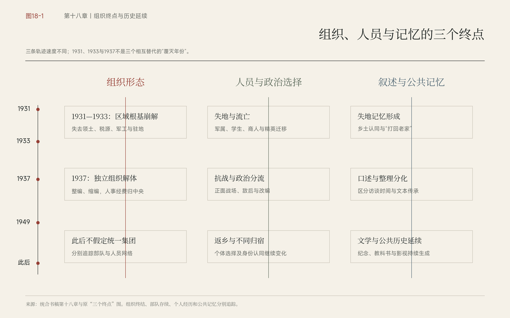
图18-1 组织、人员与记忆的三个终点 1931—1933年区域根基崩解，1937年独立组织解体；人员选择与公共记忆仍沿不同轨迹延续。“三个终点”是观察层次，并非三个统一终止日期。
资料来源：本书第十八章及原“三个终点”图。
1936年12月25日，张学良送蒋介石回南京。飞机落地，他的政治生命就结束了。
12月31日，高等军法会审以“首谋伙党，对于上官为暴行胁迫”的罪名，判处他有期徒刑十年，褫夺公权五年。判决书墨迹未干，特赦令就下来了。1937年1月4日，国民政府特赦他的十年本刑，同时写明“仍交军事委员会严加管束”。
特赦免了刑期，管束没有期限。“严加管束”四个字，管了他五十多年。判十年，关了半个多世纪，法律文书上的两句话，落在一个人的一生上，就是这么重。
幽禁的地点换了很多次。南京，奉化，贵州，重庆，台湾。后出的回忆把每一段的起止年月说得有鼻子有眼，可日记、监管记录和当时函件并不齐全，这里只保留一个梗概，不替史料补空白。
1946年，张学良被送到台湾。先住新竹五峰乡清泉，后来迁高雄西子湾，再迁台北北投。清泉在山里，进出不便；西子湾靠海，房子是日式的；北投较晚，离城市近了些，来访的人也多了些。赵一荻一直陪着他。宋美龄等人有时关照生活，少数亲友、旧识、获准的访客维持着有限往来。
清泉的日子，从留下的照片和记载看，很安静。读书，记日记，听收音机，种菜，钓鱼。一个早年天天处理军务、电报、人事的人，突然有了大把的时间，只能拿来读书和想事。他读明史，读宗教书，也读报刊。时间被拉长了，外面的世界却越来越远。
管束的松紧，生活的好坏，是两回事。住的地方清幽，吃的用的不缺，不等于自由。会客要批，通信要查，出门要跟，写东西要斟酌。有人看见照片里的小院和花木，就说他“晚年过得不错”；院墙外面的事，照片照不出来。
1950年代到1980年代，张学良基本与外界隔绝。偶尔有旧部、记者、学者获准见面，谈的也多是比较安全的话题。他对旧部的消息，多半从报刊、访客和监管者口中来。1937年整编、抗战、东北军各部的分流，他大多没有在场。晚年谈旧部，有共同经历留下的具体记忆，也有隔了几十年重新理解的成分。他说的话，和他不知道的事，都得听进去。
变化从1980年代末开始。1986年，他与晚辈有过口述；1990年九十大寿前后，逐步公开活动。1990年，唐德刚采访他，日本NHK也来采访。唐德刚的整理本1990年代在大陆出版，文字流畅，影响最大；可唐氏的评论和编排也进了书里，读的时候要分清哪些是张学良的话，哪些是唐德刚的话。哥大项目走的是另一条路：先录音，再誊写，再整理，七卷本一直到2014年才出齐。同一个人的口述，做成两种书，体例和侧重都不一样。1991年到1993年，张之丙、张之宇姐妹受哥伦比亚大学委托，做了六十次访谈，录下145盘录音带，约七千分钟。1993年，郭冠英多年采访整理的纪录片《世纪行过》完成。2001年，《联合报》刊出长篇访谈整理稿。2014年，哥大项目的七卷本《张学良口述历史（访谈实录）》出版。
这里要分清几件事。“唐德刚采访”“郭冠英采访”“哥大访谈”，有时是不同的工作，有时是同一场谈话的不同录音和整理。2001年《联合报》的长文说得明白：1990年复活节前后，郭冠英请张学良谈话，唐德刚在场，地点在王一方家中。同一场谈话被不同的书转录，措辞一样，只能证明它们用了同一个底本，不能算两次独立证据。
口述的价值，在于保存了档案里没有的东西：语气，犹豫，对人对事的褒贬，几十年后的自我解释。它的限制也在这里：记忆会变形，提问会引导，整理会删改，出版会编排。张学良谈九一八、谈西安事变、谈父亲、谈郭松龄，讲得很动人，也很主观。他把自己说成“不抵抗”的责任人，这句话有分量，可这句话是他晚年的认识，不能直接当作1931年9月18日夜里的命令链来用。
1991年5月29日，纽约。吕正操来见张学良。五十四年没见了。吕正操还叫他“老校长”。两个人握手，坐下，谈了很久。张闾蘅在场，后来写了回忆。
场面很动人。东北讲武堂的教育、东北军的旧关系、冀中的抗战、晚年的返乡愿望，都在这间屋子里碰上了。可它首先是一场私人重逢。两个人分属不同的政治阵营，私人情谊还在；从这场重逢推断整个原东北军有共同的政治评价，就走远了。
张学良晚年对父亲的评价，流传最广的是四个字：“有雄才，无大略。”这句话，齐世英的回忆里有，哥大访谈的摘录里也有。它说的是张作霖会用人才、能镇住场子，却看不清大局，算不清长账。这个评价有它的道理：张作霖一辈子在联盟和战争里打转，赢了就扩，扩了就缺钱，缺钱就印票子，最后把东北押了进去。可它也是儿子和旧部事后的评价，带着晚年的感慨，不能当作对张作霖一生的定论。
幽禁把一个人的时间改变了。张学良早年的每一个决定，都发生在电报、会议、军队和盟友之间；晚年的每一次谈话，都发生在院子、书房和访客之间。前者是行动，后者是解释。解释有解释的价值，行动有行动的逻辑。把两者混在一起，就会把历史写成传记，把传记写成自辩。
他在晚年反复说一句话：“这个事不是人家的事情，是我自个儿的事情，是我的责任。”说九一八，也说西安事变。一个被关了大半辈子的人，把责任揽到自己身上，这话有重量。可责任有分层：他的判断，南京的方针，现场的命令，部队的执行，日本的侵略，一层一层，不能因为一个人认了，别的层就不查了。
1995年以后，张学良定居夏威夷，深居简出。2000年，赵一荻去世。2001年10月14日，张学良在夏威夷去世，一百零一岁（虚岁）。他走的时候，东北军已经散了六十多年，可关于他的书、纪录片、电视剧，一部接一部。一个人的身后，比他生前热闹得多。
早年的日记和书信，也值得一看。清泉那几年，他记读书，记访客，记天气和身体，偶尔也记一点对旧事的想法。这些文字和晚年访谈不一样：离事件远，离日常近。日记里能看到一个人怎样把漫长的日子切成一天一天；访谈里能看到一个人怎样把一生收成一个故事。两种材料对着读，才知道哪些记忆是慢慢长出来的，哪些是后来才补上的。
幽禁生活里还有宗教。张学良晚年读经、祈祷，谈忏悔，谈宽恕。宗教给了他一套解释苦难的语言，也让他的自述多了一层道德自省。真诚的信仰和记忆的误差可以并存；一个人认了错，不等于把当年每道命令的细节都记对了。宗教改变的是他讲自己的方式，不是历史的证据链。
张学良的口述之外，还有一条理解奉系—东北军的记忆路径，是从齐世英一家走出来的。
齐世英早年参加郭松龄方面的政治、外交活动。郭松龄失败，他流亡，后来长期在国民党党务系统和东北流亡社会里做事。中央研究院近代史所的书目确认，沈云龙、林泉、林忠胜访问整理的《齐世英先生访问纪录》1990年出版。这部口述，站着一个反奉参与者、一个党务负责人、一个流亡者的三次位置。
齐世英记忆里最要紧的一桩事，是“公共培养”和“私人知遇”的纠葛。张学良晚年说，郭松龄反奉有“一大部分”是齐世英鼓动的，还把他赴德留学同张家的恩情连在一起。齐世英的说法相反：留学经费是公家的预算，他效忠的是国家，不是张家的私恩。
两边各说各的，可这场争论碰到了真问题：官费、主官批示、个人知遇、军职关系，搅在一起的时候，公和私的边界在哪里？奉系靠人身关系维持组织，齐世英把效忠对象上移到国家。两个人，一个说私恩，一个说公义，说的其实是同一件事的两面。
汉口会面也是一样。现存最完整的逐句对话，来自齐世英的晚年口述，私密场合，没有第三方同期记录。“被齐某人教训了一顿”这句话，经过张学良、王树翰、齐世英和整理者几层传递，只能拿来说明齐世英怎样理解那场会谈的后果。语气，次序，张学良当时的脸色，都说不准。
“有雄才而无大略”这六个字，在齐世英的回忆里出现过，在哥大访谈的摘录里也出现过。它说的是张作霖会用人才，能镇场子，却看不清大局。这话有道理，也是事后的评价。儿子说父亲，旧部说主公，都带着几十年的感慨。
流亡者的记忆不只齐世英一家。阎宝航、高崇民、王卓然这些人在关内搞救亡、搞调解，后来各有各的道路。教育界的车向忱办学校，收容东北流亡子弟。这些人的回忆里，东北不是一块抽象的失地，是具体的学校、宿舍、同乡会和救济款。齐世英代表的是反奉—党务—流亡这条线，不能代表所有流亡者。
齐世英的女儿齐邦媛，把齐家的记忆写成了《巨流河》。
齐邦媛1924年生于辽宁铁岭。2005年，八十岁的她开始写这本书；2009年出版。书从东北的巨流河写起，写到台湾南端的哑口海，两代人的流亡，一个世纪的家国。
这本书至少可以分五层看。第一层是齐邦媛亲历的：病弱的童年，流亡求学，家庭聚散，来台后的教书、编书和文学工作。第二层是父亲齐世英的转述：郭松龄的理想，反奉的失败，东北党务，汉口会谈。第三层是家族情感：母亲的等待，亲人的离散，故乡的丧失。最后一层是晚年的历史解释：作者把一生的阅读和经历，放进对郭松龄、张氏父子和东北命运的判断里。第五层是文学结构：巨流河和哑口海，歌声和沉默，渡河和渡海，互相照应，把散落的记忆收成一个完整的故事。
五层叠在一起，就有了这本书的感染力，也有了它的局限。
郭松龄的叙事在书的中心。父亲的经历给了人物和情感，作者又用“渡不过的巨流河”把一场失败写成了家族和民族的象征。她在访谈里说得很直：郭军要是渡过巨流河，东北就有革新自强的机会，“历史必会重写”。
这句话，是她本人的历史理解，不是史实。要成立，得分别过三关：郭军能不能打赢；打赢以后新政权能不能拿到稳定的授权；拿到授权以后，建设能不能变成持续的防务。第十一章、第十二章说过，军事推进、政治接管、后勤、同盟、日本干预，各有各的条件。一条河渡过去，后面还有一道道坎。
细节上也有打架的地方。邹作华的炮弹不炸，是流传很广的说法；张学良在唐德刚整理本里明确否认，说“说邹作华放出去的炮弹不爆炸，那说的是假话”。谁对谁错，现在说不清。炮弹批次、炮兵命令、邹作华本人的材料，都还要查。写历史的人，碰到这种地方，把冲突摆出来，比替一方圆场强。
指出这些，不是要贬低《巨流河》。这本书把“流亡”写成了孩子的病、母亲的等待、学校的课、年轻人的爱情和家庭的日常，让东北的经验不只属于军政人物。它也把来台以后的落地、教育和文学翻译写进同一条生命史，让奉系研究的下游问题——军政集团散了以后，知识、情感和乡土认同怎样在家庭和学校里传下去——有了着落。
文学有文学的用处，史书有史书的用处。《巨流河》适合证明一个人、一家人怎样经历那段历史，适合保存情感和细节；具体到战役、动机、反事实，还得回到口述、档案和同期材料。把文学当史料用，要小心；把文学当文学看，它的价值反倒清楚。
这本书出版以后，读者很多。东北人读出了乡愁，台湾人读出了迁徙，海外华人读出了离散，年轻人读出了一个家庭在乱世里的悲欢。不同的人各取所需，这是文学的本事。可研究历史的人读它，还得拿一支笔，把亲历、转述、象征和反事实分开画线。
人死了，事还没完。公共纪念把私人的回忆变成可以参观、祭祀、上课的东西，也把复杂的历史压成几个好记的形象。
纪念从安葬和追悼开始。战死的军官，家里领一份抚恤，同乡立一块碑，部队开一次追悼会。这些事看着小，却决定了一个人死后在地方上的名声。吴克仁那样的案子，抚恤和名分拖了几十年，家属的日子也就难了几十年。纪念从来不只是情怀，背后是钱、是行政、是政治。碑上刻谁的名字，名录里收谁的故事，纪念馆里摆谁的遗物，样样都有选择，也样样都有取舍。
张学良的旧居在沈阳，幽禁的地方在台湾新竹，两边的展陈各有各的说法。沈阳那边，讲少帅，讲东北易帜，讲西安事变；新竹那边，讲幽居，讲读书，讲山里的日子。郭松龄、吴克仁、吕正操、常恩多，各自沿着抗战、返乡、不同政治道路进入纪念体系。纪念没有统一的声音，也不该有。
吴克仁的那条修复链，最能说明纪念是怎么回事。
松江打完，吴克仁殉国，军政机关却根据错误情报把他列成投敌。副军长贺奎等人为死难的官佐请恤，家属申诉了很多年。1980年，亲历松江作战的王公玙发表殉国纪实，事情才慢慢翻过来。1987年2月，民政部追认吴克仁为革命烈士；2014年，他进入第一批著名抗日英烈和英雄群体名录。
四十七年，从“投敌”到“烈士”。一条错误情报进了行政程序，代价是两代人抬不起头。修复靠的是新的证明和新的行政行动，不是时间自己会还人清白。
台湾那边的入祀时间，还有两说。有资料记1982年入祀台北圆山忠烈祠，人民网转载的《人民政协报》文章则记1989年清明。两说并存，具体日期要等忠烈祠的入祀档案。追认、批准、入祀、撰文，可能发生在不同年份，后出的年表容易把其中一步写成全部过程。
纪念的空间也在变。沈阳的张氏帅府、新竹的张学良故居，一个讲东北军政的兴衰，一个讲山居岁月的日常；东北大学的校史馆把流亡办学写进校史，上海的龙华烈士陵园把吴克仁的名字刻进碑墙。各处展陈按自己的需要选择人物和事件，合起来才是一张不完整的纪念地图。
纪念还有另一面：提纯。吴克仁从“投敌”变成“烈士”，公共叙述集中在他的“死守三日”和殉国，第六十七军的整补困境、指挥链、突围损失、家属请恤，讲得就少了。荣誉纠正了忠奸的误判，却不能代替对战时行动的逐项研究。
影视的力量更大。1993年的《世纪行过》，用张学良本人的影像、旧地实景和人物访问，做出一种“在场感”。2016年首播的电视剧《少帅》，四十八集，用老年回忆的框架，把家族、爱情、战争和政治决策编成一个人的成长故事。张作霖、张学良、郭松龄、杨宇霆，几个人的关系撑起了全剧，财政、军需、教育、地方社会，退成了背景。
电视剧要好看，就得虚构对话、合并人物、安排因果。关于《少帅》里的一些童年桥段和大帅府情节，小说作者曾经公开说，其中有些本来就是文学虚构。著作权的事，这里不裁；值得看的是传播链：小说虚构进了电视剧，剧情截图和分集梗概进了网络文章，最后被读者当成“剧里这么演，历史上就是这样”。
网络再把差异压一遍。电视剧播出的时候，弹幕和短视频同步跟上，一集四十五分钟，剪成三分钟；一句台词，配一张剧照，就成了一个“历史真相”。观众记住的是人物关系和金句，制度的来龙去脉、战役的胜负条件，很难挤进那三分钟。传播越快，简化越狠。九一八被压成一道命令和一个人的忠奸，西安事变被压成“逼蒋抗日”的一转，郭松龄在“改革悲雄”和“忘恩叛将”之间来回摆。每一个说法都有几分影子，也都不够用；历史研究要做的，是把影子后面的东西找出来。口述里的警句最好用，短、狠、带人物口吻；问答里的犹豫、追问、时间错位、整理者按语，进不了短视频。几个公众号、百科条目、视频文案转引同一集纪录片或同一页整理本，看上去到处都在说，其实只有一个底本。
纪念史要按程序排。一项修复，可能经过旧案复查、家属申请、主管机关批准、证书颁发、祠墓仪式、展陈改版、教材采用，一步和一步之间隔好几年。只记最后那场仪式，前面推的人就没了；只记批准，可能把还没办的展陈写成既成事实。
展陈和课堂还会再选一次。旧居适合摆家族、器物和日常，烈士陵园突出牺牲，军校纪念讲教育和人事，通史教材只留九一八、西安事变几个节点。每种载体都有自己的道理，合在一起，就有了偏差：领袖的旧居好保存，普通士兵和流离家属的物件难找；名人多地有展，军需、卫生、基层政工找不到位置。
纪念还有一层政治。抗战胜利以后，国共两边都要讲东北抗战，都要争“谁在抗日”。原东北军的人，有的被写进八路军的战史，有的被写进国民革命军的战史，有的两边都不提。一个人的功劳，跟着政治走；一个部队的历史，也跟着政治走。研究者的难处就在这里：既要尊重纪念，又不能被纪念牵着走。
纪念和研究，本来就是两件事。纪念要有仪式、有场所、有可讲的故事；研究要有材料、有辨析、有分寸。纪念可以把一个人举起来，研究要把他放回地上。两者不必互相拆台，可也不能混为一谈。
这就是记忆的脾气。它保存人，也简化人；它让历史可感，也让历史走样。写这本书，能做的就是把被简化的那部分再拆开：纪念归纪念，研究归研究，两不相欠。
从1937年出征，到敌后分化，到1945年后的归宿，再到幽禁、口述、文学和纪念，原东北军这条线，走了八十多年。组织早在1937年就终结了，人的路却越走越散，记忆越积越厚。三种连续性——番号、人员网络、历史记忆——到头来，最长的还是第三种。
写这一章，不是为了给原东北军算一个总账，也不是为了给谁翻案。总账早就算不清了：从1937年出征到1949年散尽，十二年间，五个步兵军、一个骑兵军，死的死，俘的俘，起义的起义，遣散的遣散，没有哪一个数字能把这些人装进去。人数也早已散在四方：有人战死，有人被俘，有人起义，有人去了台湾，有人回了乡。能说清的是：这些人走过哪几条路，路和路之间怎样分开，又在哪里重新碰上。历史到了这个份上，剩下的就是一个一个的人：谁在哪个军，哪一仗，哪一天被俘、起义、阵亡或返乡，记清楚了，才对得起他们。
1902年冬天，新民府城外那支三百人的马队，不会想到自己三十多年后的结局。
它的首领张作霖，1928年6月4日死在皇姑屯的爆炸里。他的儿子张学良，1936年12月扣下蒋介石，随后被关了大半辈子。这支马队扩出来的东北军，1937年被整编拆散，此后各奔东西：有的在淞沪、淮河、滇西打光了，有的在敌后长成了新的部队，有的1948年死在辽西和沈阳，有的1949年去了台湾，还有的留在大陆，安静地过完余生。
三十多年，一个地方武装长成了一个区域政权，一个区域政权一度摸到了全国政权的位置，最后又被打回原形，剩下人和记忆。
新民府那个冬天，收编的场面大概很平常：点卯，造册，发饷，换旗。张作霖带着他的马队进城，见了知府，领了关防，回去照样带兵。没有锣鼓，没有演说，也没有什么历史性的时刻。历史的转折，往往就是这么平平常常地发生的。
这条路，走得并不慢。1902年受抚，1911年进省城，1916年督奉，1919年拿下吉林，1922年败回关外，1924年再打进北京，1925年郭松龄反戈，1927年张作霖做上大元帅，1928年皇姑屯一炸，东北易帜，1929年杨常被杀、中东路开战，1930年入关助蒋，1931年九一八，1933年热河失守，1936年西安事变，1937年整编。三十多年，几乎每两年一个坎，每一个坎都有人下注，也有人丧命。
这条曲线不是天命。它由一连串很具体的选择、资源和条件组成：招抚时留下的编制，辛亥时进城的军队，王永江理出的财政，秦皇岛截下的枪械，两次直奉战争的胜败，郭松龄的反戈，日本人的炸弹，张学良的判断，1937年的整编。每一步都能找到决策的人，每一步也都有当时不得不如此的理由。张作霖进关，是因为关内的地盘和名位能养活军队；张学良易帜，是因为日本的压力需要一个国家做后盾；蒋介石让东北军整编，是因为一个中央不能容忍半独立的军队。理由都成立，结果却不由人。历史的难处，就在这里。
这本书想说的，就是这些理由和这些选择，怎样把一个集团推到高处，又怎样让它摔下来。
写这本书，还想说明一点：历史里的人很少非黑即白。张作霖会用人，也杀过政敌；张学良敢兵谏，也误过国事。一个政权修路办学是真的，印钞养兵也是真的。把这些放在一起写，历史才有分量。
先说枪。
奉系的军事能力是真的。1922年败退回关外，两年就重整旗鼓；1924年第二次直奉战争，几十万大军从山海关打到北京，把直系打垮了；冯玉祥在阵前倒戈，组成国民军，成了奉系的盟友。兵工厂能造枪造炮，讲武堂能培养军官，兵站、无线电、铁道运输，在当时的中国算得上一流。这些不是花架子，是在战场上见过真章的。
可说枪，不能只说能打。一支军队背后是钱、是粮、是铁路、是兵源。奉系最强的时候，东北的军费占到财政支出的七八成。这个比例放在任何一个政权身上，都是危险的信号。钱花在军队上，教育就少，建设就慢，纸币就得多印；纸币多印，商民的钱就毛，士兵的饷也就毛。奉票从能换七八角银元，跌到几元换一元，这个过程比任何宣言都更能说明这个政权的处境。
再说钱。
奉系的兵工，在当时的中国确实数一数二。奉天兵工厂有两万多工人，能造步枪、机枪、迫击炮和炮弹，规模超过关内多数兵工厂。讲武堂办了多年，培养出一批懂参谋、懂步炮协同的军官。1924年的胜利，很大一部分要记在这些人和这些厂上。
可一支军队越现代化，越花钱。兵工厂要煤要钢，要技师要外汇；讲武堂的学生要发饷，要装备，要出路；铁路要修，港口要建，飞机要买。奉系的收入涨得快，支出涨得更快。到1920年代中后期，账面收入还不够军费，只能靠借债、靠银行垫款、靠印票子。这是所有军阀政权的通病，奉系并不例外，只是它的摊子更大，毛病也更重。张作霖不是不知道这个道理，他也让王永江省钱、让杨宇霆理财，可每到打仗，钱还是先给军队。军费优先，是那个年代所有军人政权的规矩，奉系只是把这套规矩做到了极致。
钱从哪里来？王永江的办法是清赋、加税、整顿官银号、压开支。田赋、税捐、官银号的利润、铁路的收入，一笔一笔收上来，省库才有点样子。可这些钱来得慢，花得快。打仗要军费，扩军要军费，买枪买炮要军费，养官养警也要钱。到1920年代中后期，奉天的岁入不过两千多万元，军费就要一千三四百万，剩下的钱办教育、修马路、开工厂，捉襟见肘。不够怎么办？借债，垫款，印票子。印得多了，票子就毛；票子一毛，老百姓就骂；老百姓一骂，政权就更得靠枪杆子撑着。这是一个死循环。1923年的账最能说明问题：岁入约两千六百八十万元，支出约一千八百二十万元，军费一千三百九十万，占支出七成六到八成八，教育经费不到百分之三。一个省的钱，大半拿去养兵，剩下的一点修路办学，还得靠借债和印钞补。这样的财政，打一场小仗可以，打一场接一场的大仗，非垮不可。
东北的资源是真的。土地、大豆、煤铁、铁路、港口，样样拿得出手。1930年前后，东北的煤产量相当于日本本土的三成，生铁相当于两成，直接对外出口占到东北和关内合计的三成多。这些数字说明东北的经济规模不小，也说明奉系手里有一座像样的家底。
可资源不等于财政，财政不等于军力。煤要运出去才能换钱，粮要收上来才能养兵，税要收进省库才能花，钱要稳得住才能用。奉系在这条链条上，每一环都出过问题：铁路受日本人和苏联人牵制，港口要看大连、营口，官银号的票子越印越毛，县里的税常常收不上来。1920年代中后期，账面上还有收入，实际能调动的钱越来越少。
所以奉系的强大，一半是真本事，一半是账面风光。它能把资源变成军队，却没有把资源变成持久的国家能力。
再往深里说，它缺的是一套能把枪、钱、权分开又连起来的制度。军队听谁的？财政谁管？仗谁决定打？打了以后谁负责？在张作霖手里，这些问题的答案是同一个人。一个人活着，还能压住；一个人死了，就全乱了。1937年整编之所以能一刀切下去，根子就在这里：这个集团从来没有建成一套离开领袖也能运转的公共制度。
1928年12月29日，东北改挂青天白日满地红旗。张学良做了一个他父亲不会做的决定。
易帜的意义，不能小看。它结束了东北和关内十几年的法统分裂，让南京国民政府在全中国范围内完成了形式上的统一，也让东北的军队、财政和人事进入了一个新的国家框架。对张学良个人来说，这是他一生里最干净的一笔政治账。
可易帜不是交权。东北的军队还是东北的军队，财政还是东北的财政，省主席的人选、铁路的经营、对日交涉的渠道，多半照旧。南京拿到的是一面旗子和一个名义，东北保留的是实实在在的自主。双方各取所需，也各自留了一手。
易帜的谈判，也不轻松。日本方面百般阻挠，先是想拖，后是想换人，甚至放出风声要动手。张学良顶着压力，在1928年12月29日换了旗，12月31日南京任命他为东北边防军司令长官。东北政务委员会随后成立，委员多是旧人，权力还是那些权力。名义变了，里子没变，这是过渡期的常态。
易帜后的东北，自主到什么程度？1929年的中东路，张学良敢在南京点头之下跟苏联动手，说明他手里还有兵、有决策权。1930年的中原大战，他一份“巧电”入关，左右了全国局势，说明东北还是全国天平上的一个大砝码。这些事，南京都管不了。名义上统一了，实际上各干各的，直到1937年整编，这个局面才被打破。1931年九一八，南京和东北在“谁下令”“谁负责”上扯不清，根子就在这里。名义上的统一，没有变成命令、财政和军令上的统一。九一八以后，东北军退进关内，靠着中央的军饷和驻地过日子，自主的本钱越来越少。1933年热河失守，张学良下野出洋，东北军的名分和士气都受了重创。到1936年西安事变，这支军队已经是强弩之末，兵还是那些兵，心已经不是那些心了。
1937年的整编，是第二次整合，也是最后一次。东北军被拆成几个军，调往不同的战区，接受中央的指挥和补给。国家统一有它的道理：一个国家不能长期容许一支半独立的地方军队存在，抗战也需要统一的指挥和动员。东北军这一头则是终结：张氏父子两代人经营的组织，从此不再是一个整体。
整编的过程，拖了一年多。西安事变以后，张学良被扣，东北军群龙无首，内部先为“和”与“战”吵翻了天，1937年2月2日闹出二二事件，王以哲被杀。随后是高陵会议、甲乙两案之争、东调豫皖苏、开封会议、《分期整理东北军计划大纲》，一步一步，把六个军的师级建制压缩，把原来的主官调的调、换的换。到1937年夏天，东北军已经编进了国民革命军的序列，抗战打响，各军各师各奔战场。整编的初衷是国家统一，结果是一支旧军队的终结。整编在制度上是进步，落到具体的人身上，是一批人的离散。
整编有收益，也有代价。收益是国家编制、军饷和指挥的统一，是几支部队后来在抗战中得到补充和装备。代价是原有的军官网络、人事关系和部队传统被打散，一批人在整编中失了位置，一批人在新的体系里从头开始。收益和代价，落在不同的人身上，不能互相抵销。
写奉系，绕不开几个人。
张作霖。这个人有真本事。他会用人，王永江管财政，杨宇霆管兵工，郭松龄带兵，各安其位；他能忍，也能狠，该低头的时候低头，该下手的时候下手；他把一群来源复杂的队伍捏成了一个集团，让东北在他手里成了一个像样的政权。他也有大账算不清：一辈子在联盟和战争里打转，赢了就扩，扩了就缺钱，缺钱就印票子，最后把东北押进了关内的战争。他对日本又用又防，占了便宜，也埋了祸根，最后死在日本人手里。功过不能相抵，要分开记。他留给张学良的，是一份看着像家业、实际上全是窟窿的遗产：一支庞大的军队，一个空虚的省库，一堆对日对苏的烂账，还有一群谁都不服谁的老臣。
张学良。这个人的一生，被三件事定了型：东北易帜、九一八和西安事变。易帜是他的功劳，西安事变改变了中国的政治走向，也改变了东北军的命运。九一八的判断，是他的错误：他以为日本人只是挑衅，以为国联能主持公道，以为忍一忍能过去。这个判断错了，代价是整个东北。中东路是他拍板，输了；杨常是他下令，杀了；后来被关了大半辈子，他认账，说“是我的责任”。认账是一种担当，认账不等于把账算清了。东北易帜结束法统分裂，是他的功劳；九一八一连串判断失误，代价是东北沦陷；西安事变以兵谏逼出抗日统一战线，也把东北军推向终结。三件事放在一起看，他有大担当，也有大失误。历史对他，很难用一句好话或一句坏话收场。
有人说他是“千古功臣”，有人说他是“不抵抗将军”。两种说法，各抓住他的一面。平心而论，他是一个被时代推上高位、又在关键时刻做出自己选择的年轻人。他的选择，有对有错；他的结局，有他自己的责任，也有时代的碾压。
郭松龄。有真本事，也有真野心。他反对内战，主张建设，这些话放在1925年，是有人听的；他起兵时借张学良的名义，扣异己，杀姜登选，这些事也做得出来。他打到巨流河边，败在自己没算清的政治账上。他是一个不错的军人，一个失败的政治家。军事上，他懂得集中兵力、快速推进；政治上，他以为凭“拥张”两个字就能把旧部、元老、日本人和少帅都摆平。他没算到的是，政治不是战场，喊话不等于收编，倒戈的部队更靠不住。
杨宇霆。精明强干，办兵工厂、管铁路都有一套，做人却跋扈，得罪的人太多。他死在张学良的枪口下，死得冤不冤，史家还在争；可他活着的时候，确实把自己摆到了一个新领袖无法容忍的位置上。他把权术用过了头，最后招来杀身之祸。张学良杀他，有立威的考虑，也有旧怨，还有东北易帜后新旧权力怎么排座次的难题。杀杨常，短期看是集权，长期看是寒了老臣的心。这笔账，算到后来，还是东北军自己吃亏。
王永江。奉天财政的功臣。他把一堆烂账理成了能用的账本，办银行、清田赋、压开支，让张作霖有了打仗的本钱。他最后拦不住主公打仗，挂冠而去，死在任外。一个技术官僚在一个军人政权里的限度，在他身上看得最清楚。他能管住账本，管不住枪杆子；能劝住一时，劝不住一世。他辞官以后，奉天的财政再没人能像他那样理得清楚，奉票也就越印越毛。
还有两个人，不能漏。齐世英，一辈子反对张氏，反奉失败以后搞党务、搞流亡，晚年口述留下一大堆材料；他有他的道理，也有他的立场，恨张家恨了一辈子，写到纸上，字里行间都是气。于学忠，旧部出身，抗战时在山东硬撑了四年，既抗日又反共，最后被调离军权，落了个两头不讨好。这两个人，一个在朝，一个在野，路不同，命都苦。
另外两位旧人，一个善终，一个暴死。张作相是张作霖的把兄弟，为人厚道，办事稳当，皇姑屯以后力推张学良接班，后来在吉林主政多年，是奉系里少有的善终者。吴俊升是黑龙江的督办，打仗勇猛，皇姑屯和张作霖同车炸死，死得干脆。两个人的路，都是那个年代的命。
把几个人的终局放在一起，像一张收束的表。张作霖死在1928年6月4日皇姑屯的桥下；张学良从1936年12月被扣，到2001年10月14日病逝夏威夷，活了一百零一岁（虚岁）。郭松龄与夫人韩淑秀1925年12月在辽河附近被杀；杨宇霆1929年1月与常荫槐同被处决于帅府老虎厅；王永江1926年辞官，1927年病逝；齐世英1987年在台北病逝。张作相1949年在天津病逝；吴俊升1928年与张作霖同车炸死。抗战里，马占山1950年病逝北京，黄显声1949年在重庆遇害，吴克仁1937年松江殉国，唐聚五1939年阵亡；吕正操、万毅活到战后，分别于2009年、1997年去世；于学忠1964年病逝北京，何柱国1985年病逝，万福麟1951年在台湾病逝。再往外，蒋介石1975年病逝台北，周恩来1976年病逝北京；后藤新平、田中义一都死于1929年；布柳赫尔1938年在大清洗中被处决。
再往外看，蒋介石和日本的决策者，也在写奉系的账。蒋对东北、对张学良、对九一八和西安事变，有他的算计和责任；日本的侵华是国策，从田中义一到河本大作，从币原喜重郎到关东军的少壮参谋，各有各的角色和算计。写清这些人的选择，是为了看清侵略怎样一步步发动，不是为了替谁开脱。
这些人，谁也不是完人，谁也不是脸谱。写他们的功过，只有一把尺子：当时他知道什么，他手里有什么权，他能选哪几条路，最后的结果由谁承担。用这把尺子量，有的人可敬，有的人可叹，有的人可恨，更多的人是几样都占一点。
一个政权的账，不能只算收入和支出，还要算谁付了代价。
建设的账，是正面的。东北的铁路里程在1920年代增长很快，奉海、吉海、打通、四洮这些自建铁路，加上南满、中东的既有线路，把主要城市和港口连成了一张网。奉天、哈尔滨、大连、长春成了近代城市，学校、医院、报馆、电灯、自来水，一点点办起来。东北大学、冯庸大学、讲武堂，培养了一批人才。这些成绩，后来被战争和占领打断，可它们真实存在过。
打仗的账，是负面的。连年入关，军费浩大，东北的财力被抽干；军费挤占了教育，纸币贬值坑了商民，征发摊派压垮了农户，战争伤亡毁掉了家庭。郭松龄事件、皇姑屯事件、中东路事件，一次比一次伤筋动骨。九一八以后，东北沦陷十四年，几千万人做了亡国奴，这笔账更大。
政治上的账，也不能忘。张作霖杀李大钊，杀邵飘萍，镇压学生和报人，这些事不能因为他也办过教育就抹掉。奉系对言论、结社和政治异己的处置，有那个年代的普遍性，也有它自己的狠。一个政权用枪杆子起家，最后也最容易用枪杆子对付不同意见。
两本账不能互相抵销，也不能只在其中一本上做文章。只写建设，会漏掉代价；只写代价，会漏掉建设。难的是把两本账放在一起，看清同一个政权为什么一边修路办学，一边打仗印钞。
受益的人和承担的人，往往不是同一批。铁路沿线的商人和城市居民得了便利，铁路两侧被征地的农民吃了亏；军队的军官得了地位和饷银，农村的壮丁丢了性命和劳力。1931年以后，留下的人和流亡的人，又是两种命：留下的当亡国奴，流亡的当难民。把这些分开写，历史才有公平可言。
还有一笔账，要单独算：日本侵略的责任。中国内部有失误，有派系，有不抵抗，有判断错误，这些都要写，也都要负责。可它们不能拿来分摊侵略的责任。受害者的账和决策者的账，是两本账。日本的责任必须写明，中国内部的失误也须写明，两笔账不能混算。
东北丢了，东北军散了，记忆没有断。张学良晚年的口述、齐邦媛的《巨流河》、影视和几处旧居纪念馆，把这段历史一遍遍重讲，也一遍遍简化；口述、文学、纪念各自的用法和限度，第十八章已经细说。学者能做的，是把这些标签背后具体的人、具体的事、具体的账，尽量还原出来。
假如1936年12月25日，张学良没有亲送蒋介石回南京，而是留在西安，东北军会怎样？
这个假设争了几十年。留在西安，张学良手里还有兵，东北军不会群龙无首，二二事件也许不会发生，1937年的整编也许能拖一拖。可再往下想，路又堵住了：南京的军事压力、中央的财政封锁、日本人的动作、东北军内部的和战争执，哪一样都不好对付。亲送，是拿自己的自由换东北军的退路；不送，是拿东北军的前途赌一个不确定的局面。历史没有给他两全的选项。送与不送，争的是一张保证书：张学良手里没有能兑现的保证，东北军也没有能替代他的集体领导。
从1902年到1937年，奉系—东北军走完了两次转型。第一次从地方武装走向区域国家建设，财政、铁路、兵工、教育都办出了样子，最高权力和继承却始终是一个人说了算；第二次从易帜走向中央整合，法统统一了，军令、财政、外交和政治代表权没有同步公共化。1937年整编终结了独立集团，也立起了另一种领袖中心。两次转型都办成了事，也都留下了没办成的事：看一个集团，要看它做成了什么，也要看它没把什么做成。
账房先生只能把账摆清楚，不能替读者做决定。这本书写到的每个路口，都留着当时的信息、权力和可选项。至于功过，读者自有判断。
1916年到1928年，中国大地上同时存在过好几个靠军队起家的集团。奉系是其中最大的一个，却不是唯一的一个。把直系、皖系、晋系、桂系、滇系、粤系、川系、西北军和奉系放在一张桌子上看，能看出一些单看奉系看不出的东西。
| 集团 | 核心人物 | 兴起根源／与北洋的关系 | 财政基础 | 外部靠山 | 结局 |
|---|---|---|---|---|---|
| 皖系 | 段祺瑞 | 袁世凯小站旧部，北洋常备军统制；袁死后以“北洋正统”自居 | 中央财权、日本借款 | 日本 | 1920年战败，段退隐，1936年病逝 |
| 直系 | 冯国璋、曹锟、吴佩孚 | 北洋小站嫡系，以直隶为基地，继承北洋中央 | 直隶、湖北、中央财权 | 英美（有限） | 1924年战败；曹下野，吴晚年拒日，1939年病逝 |
| 奉系 | 张作霖、张学良 | 清末巡防营出身，1902年受抚，1912年编第二十七师；非小站嫡系，后入北洋军制 | 东北财政、铁路、兵工 | 日本、苏联（多角） | 1928年张作霖炸死；1937年集团整编终结 |
| 晋系 | 阎锡山 | 日本士官学校出身，1911年山西新军起义；非北洋嫡系，受北洋任命而自主 | 山西闭关自守的财政 | 左右逢源 | 1949年赴台，1960年病逝 |
| 桂系 | 陆荣廷；李宗仁、白崇禧 | 陆荣廷旧军、绿林出身；李、白出自广西陆军小学与护国军；非北洋 | 广西贫瘠，靠组织与外部 | 多方 | 陆1924年失势；李赴美后1965年返大陆，白赴台 |
| 滇系 | 唐继尧 | 日本士官学校出身，云南新军重九起义；非北洋 | 云南烟税、锡矿 | 法、日（有限） | 1927年失势，1928年病逝 |
| 粤系 | 陈炯明 | 广东新军、辛亥革命出身；非北洋 | 广东商税、华侨 | 无稳定靠山 | 1925年失势，1933年病逝 |
| 川系 | 刘湘、刘文辉 | 清末新军、辛亥革命出身；防区制下自立；非北洋 | 防区制下的地方截留 | 多方 | 刘湘1938年病逝；刘文辉1949年起义 |
| 西北军 | 冯玉祥 | 北洋第十六混成旅出身，北洋边缘；后改国民军 | 地盘不定，靠苏联与地方 | 苏联（早期） | 1948年黑海轮船失火遇难 |
这张表里，兴起根源分两类。皖系、直系是北洋嫡系，靠小站练出来的军官团和中央政府的名分；奉系、晋系、桂系、滇系、粤系、川系、西北军则各有各的来路：有的出自清末巡防营，有的出自新军起义，有的出自绿林旧军，有的从北洋边缘部队里脱出来。非嫡系里，奉系最像“体制外长进来的”——先被招抚，再编入国家军制，最后反过来控制省政；晋系、滇系、粤系、川系则多是辛亥革命后地方新军直接转化为省政权。
还有一条共性，过去常被忽略：这些集团从头到尾都承认一个名义上的中央政府。他们争的是“谁代表中央”“谁掌握中央”，不是“要不要中央”。督军、巡阅使、省长、边防督办，这些名分都要从中央来；1917年护法、1920年直皖、1922年直奉、1924年北京政变、1926年安国军、1928年易帜，打的都是中央的旗号。联省自治听起来像分家，陈炯明讲的也是“自治”，不是“独立”。没有哪个军阀公开宣布脱离中国；后来东北出现的“满洲国”，是日本刺刀下的傀儡，不能记在中国军阀账上。这一条，是理解易帜意义的关键：换旗不是换国，是争一个中央合法的名分。
人物结局也值得放在一起看。靠军队起家的强人，善终的少：张作霖在皇姑屯被炸死，郭松龄在巨流河兵败后被杀，杨宇霆在帅府老虎厅被处决，张宗昌1932年在济南车站被刺，孙传芳1935年在天津居士林被刺，冯玉祥1948年死在黑海船上。段祺瑞、吴佩孚、曹锟算是平安下野，代价是交出军队、退出政治。阎锡山、李宗仁、白崇禧活到战后，走的是另一条路——把自己的集团交给更大的政治力量，换一个位置。张学良活得最长，代价是半个世纪的幽禁。
把眼光放大到世界，19世纪末到20世纪30年代，类似形态并不只中国有。
墨西哥最像。1910年革命以后，全国冒出许多地方军队和强人：比利亚、萨帕塔、卡兰萨、奥夫雷贡，各有地盘、军队和外国关系。1920年奥夫雷贡上台，1928年遇刺；卡列斯把军人集团改组成国民革命党，1930年代又经过卡德纳斯的改造，军人政治才慢慢变成党国政治。墨西哥走通的路，是“军人集团→政党→制度”，代价是几十年的强人政治和一次一次的内部清洗。
波斯也像。1921年，礼萨汗靠一支由外国教官练出来的哥萨克旅发动政变，1925年称王，建立巴列维王朝。他用军队压平地方势力、统一财政、修铁路、办学校，把军权转成国家权力；1941年苏英军队进入伊朗，他被迫退位。强人建国的成果与外部干预的脆弱，在他身上同时出现。
土耳其是另一种。凯末尔1919年领导民族抵抗，1923年建立共和国，把军官、政党、议会和军队拧成一套新国家机器。他的成功有几个条件：一支在战争中练出来的军官团、一个明确的民族目标、一个可以替代旧帝国的合法性叙事，以及战败后旧秩序彻底崩掉的窗口。1924年废哈里发，1930年代推进世俗化；1950年多党选举，政权和平交出。军人集团在这里没有变成军阀，而是变成了国家的创建者。
阿拉伯半岛的伊本·沙特，1902年带几十个人夺回利雅得，靠部落、宗教定居点和英国的海上保护，一口一口吃下内志、汉志，1932年建立沙特阿拉伯。他的集团靠血缘、婚姻和宗教维系，继承在家族内部解决，国家靠石油收入撑起来。
日本不算军阀，却提供了另一种参照。明治以后，长州、萨摩的藩阀把军队和政府握在手里；军部逐步独立于内阁，1930年代干脆绕开文官政府行事。它不是“地方军阀”，更像“国家军部”，但军人干政、军费优先、对外扩张的逻辑，与中国军阀有相通之处。
西班牙和巴尔干是19世纪遗产。西班牙的军人干政传统从19世纪的pronunciamiento一直延续到1923年普里莫·德·里维拉的军事独裁；塞尔维亚的军官集团、保加利亚的马其顿内部革命组织，都是“军队—秘密组织—地方政治”搅在一起。它们的共同点是：中央文官政府弱，军队成为政治的最后仲裁者。
把这些例子摆在一张桌上，背景很相似：中央养不起兵，地方养得起；外国资本、军火和顾问插进来，扶一把，也拴一根绳；读过新式军校的军官，又正好接上地方政治。中国的军阀、墨西哥的caudillo、波斯的哥萨克旅、土耳其的军官团，都在这几个条件里长出来。
把中国和世界放在一起，可以看到几个反复出现的机制。
第一，保护与税收的循环。地方武装先提供保护，再取得征税权；有了税，就能养更多的兵；兵多了，保护范围扩大，税源也跟着扩大。这个循环一旦启动，中央若不插手，地方就会长出一个“小国家”。奉系的保险队—巡防营—二十七师—督军，走的就是这条路。
第二，外部靠山的双刃。外国势力给钱、给枪、给顾问，也拿走路权、矿权、驻军权和外交权。靠山能让你在地方竞争中胜出，也能在关键时刻把你卖掉。张作霖靠日本打赢郭松龄，又在路港和权益上跟日本顶牛，最后死在日本人手里；礼萨汗靠哥萨克旅建国，最后在苏英入侵时退位。
第三，人格化权威与继承难题。军政集团靠一个强人把军队、财政、人事、外交串起来，效率很高；强人一死，继承没有程序，儿子、元老、部将、外部靠山各有一票。奉系在张作霖死后靠元老推让、保安会和张学良的军中资历勉强接上，杨常事件又用杀人解决了“谁最后决定”；墨西哥的奥夫雷贡遇刺、卡兰萨被杀，都是同一个问题。
第四，军事优先挤压公共品。军费优先，教育、卫生、道路、救济就往后排；军队要钱，税就重，商民就想跑；通货膨胀、征发、摊派，最后都落到普通人头上。奉系的奉票贬值、直系的“讨逆”军费、滇系的烟税，都是同一本账。
可以说：有，但只能是条件性的规律，不能是决定论的规律。
第一，兴起看条件：中央财政和军事垄断崩了，地方有可自养的经济，外部有势力愿意下注，三者缺一，军政集团就起不来。中国1916年以后三者齐备，所以军阀遍地；1928年以后中央重建、外部格局变化，旧军阀就一个一个消失。
第二，存续看继承：强人活着，集团就在；强人死了，继承顺，集团还能撑一段；继承不顺，集团立刻分裂。奉系、直系、皖系都栽在继承上；晋系、桂系靠家族、同乡和派系网络多撑了十几年。
第三，转型看四件事：财政能不能集中、军令能不能统一、文官能不能压住军人、代表制度能不能把地方精英吸进来。四件事做成的，军政集团转成国家（土耳其、墨西哥、沙特）；做成一半的，转成地方势力（晋系、桂系）；一件没做成的，被外部征服或中央整合（奉系、滇系、川系）。制度化是唯一的出口，走不成的，不是被内战吃掉，就是被外敌或中央整合吃掉。
这些规律能解释很多，但不能解释全部。凯末尔只有一个，礼萨汗只有一个，伊本·沙特也只有一个；同样的条件，换一个人、换一个时间，结果可能完全不同。历史比较能说明“哪些条件重要”，不能说明“哪一天一定发生什么”。
奉系是这套逻辑里的一员：靠地方武装起家，靠财政、铁路、兵工做大，靠外部靠山撑腰，靠强人仲裁维持，最后栽在继承、外部侵略和战略承诺过度上。这些是共性。
奉系也有它的特殊。东北的地缘位置首当其冲：一边是日本，一边是苏联，铁路、港口、资源都在大国眼皮底下，它比任何内地军阀都更受外部约束。东北的经济基础又比桂系、滇系、川系厚实，大豆出口、铁路、兵工厂、相对完整的省政，使它更有本钱，也更容易把本钱用过头。张学良的继承是中国军阀里少有的“父死子继”，继承者受过新式教育、有国家统一意识，这对奉系是运气，也成了难题——旧部认的是张作霖，不是张学良。再往后，日本侵华把奉系的区域根基一刀切断，此后的流亡、整编、分化，都不是“军阀兴衰”四个字能概括的。
从长时段看，这几十年的盛衰，当事人多半是走一步看一步。不是每个人都能意识到自己正在历史里占什么位置；多数人被眼前的地盘、军队、派系和危机推着走。张氏父子大体是凭本能和情势行动，没有把“我在中国历史里应当做什么”想透。
张作霖的一生，每一步都是对眼前情势的回应：被招抚，是因为地方秩序需要武装；进省城，是因为辛亥革命给了机会；督奉，是因为袁世凯要稳定东北；入关，是因为直皖、直奉的胜负把他卷进去；当大元帅，是因为北伐军已经打到门口。他有朴素的民族底线，对日本没有完全屈服；但他的最高政治想象是“问鼎中原”，不是“建设国家”。他没有把“东北是中国的一部分、东北的安危系于中国能否统一”上升为自觉的历史定位。所以他在1928年退出北京时，想的是保存实力、退回关外，而不是把东北交给一个统一的国家；皇姑屯的炸弹，替他结束了这个没有想透的问题。
张学良不同。东北易帜是他一生中少数有历史自觉的选择：换旗不是换一个靠山，是承认国家统一、把东北放回中国的法统里。这件事的历史意义，当时的人未必都看得清，今天回头看却很清楚。西安事变也有这层自觉——他用兵谏逼出一个抗日统一战线，代价是自己半生幽禁。但他的问题同样明显：九一八时，他没有把“抗日准备”当成首要问题，把“保存实力、避免冲突”当成了首要；西安事变后，他又把“送蒋回京”的个人担当放在了组织存续之前。看透首要次要，是历史人物最难的一关。
拿郭松龄、杨宇霆作对照，就更清楚。郭松龄看到了内战耗费东北、旧派把持权力的问题，却选择用兵变解决，结果把东北推回旧轨道；杨宇霆有财政、兵工、外交的专业能力，却困在“谁最后决定”的权斗里，最后死在老虎厅。三个人都不是不聪明，问题是他们把聪明用在了次要问题上，或者用对了问题却选错了手段。
读史读到这一层，比较才不只是“谁好谁坏”。历史评价不能只看动机，也不能只看结果；要看他在当时的信息和权力里，有没有把首要问题认出来，认出来之后有没有担起来。没有意识到历史责任，不等于没有历史责任——选择的后果，会替每一个人记账。
这本书不是一次写成的。
最早是一份三十多万字的研究稿，按问题分章，材料堆得很厚，能读下去的人不多。后来另起了一条专题线，把日俄战争后的接收、省权承接、人口经济比较拆开做；又有一条日俄战争社会史的线，专门写周生有、华工、难民。三条线各说各话，合在一起才看出：奉系的故事，光讲军政不够，还得讲铁路、财政、移民和普通人。
合并的时候，最难的不是补，是删。研究稿里有很多考证细节——兵额口径、文书日期、逐旅名册、口述版本——单看都有价值，放进通史里就成了绊脚石。我的办法是：能改变判断的留下，不能改变判断的进附录；正文只留事件、人物和因果，考据退到注和附录里。删掉的大约有三四万字，有些是重复，有些是过度谨慎，有些是写给同行看的，不是写给读者看的。
书里还留着一些没有解决的问题。九一八当夜命令链的分钟级细节、西安事变若干谈判环节、1937 年整编的实拨数、热河守军的确切人数，材料不够，就不硬写。地图的审图号也还没有办完：六幅地图现在用的是公开地理数据作参照，出版社还要按程序送审。这些不是谦辞，是提醒读者：这本书能说到哪一步，说到哪一步为止。
写这本书，常想起一个问题：一个人在他所处的时代里，能看清多少？张作霖从保险队做到大元帅，张学良从少帅做到阶下囚，郭松龄、杨宇霆、王永江，各有各的能干，也各有各的看不清。历史学家事后替他们复盘，很容易；难的是承认，换我们站在那个位置，未必比他们看得更远。所以这本书尽量不做道德审判，只把选择、条件、后果摆出来，让读者自己判断。
书里有些话可能不中听。对张作霖、张学良，对蒋介石和南京，对日本政府与关东军，都有直说的地方；对郭松龄、杨宇霆，也没有一味说好或说坏。不是故意刻薄，是觉得对历史人物最大的尊重，是把他们当人看：有本事，也有私心；有担当，也有算计；有时代的限制，也有自己的责任。
最后说一句材料。这本书用了两条辅助线的专题研究和档案长编，也用了不少公开的档案、报刊、口述和研究。凡是别人已经做过的工作，正文和注里都尽量注明；凡是自己没有读到的，不装作读过。历史写作的底线，大概就是这一条。
—— 2026 年 10 月，于北京
说明：本年表据本稿与 前期专题研究《关键年表》合并；只收可核事件，异说与待核已在正文注明。年份后括注章次，供检索。
| 时间 | 事件 | 说明 |
|---|
说明：由《替换来源表》（102 源）与《未覆盖来源著录》（180 源）合并生成，剔除已删除引注 12 源，共 270 个来源。标【待核】者为来源待回原刊/原书核定；【页码待补】者为缺页码。
说明：词条后数字为统合版章次；人物/机构/地名/事件分别排列。待正文定稿后按拼音（或笔画）重排并补页码。
本书是通史，不是史料考证专书；但凡涉及判断的地方，材料从哪来、能用到什么程度，仍要说清楚。这一篇说明四件事：材料的分级、口述与回忆怎么用、反事实推演的边界、以及哪些数字只能给区间。
本书材料来自三条线：一是 2026 年完成的奉系—东北军 29 章研究稿（下称”前期稿”）；二是同一课题的 本项目专题研究稿（专题01—07、日俄战争全报告、人口经济比较、来源书目）；三是独立的日俄战争社会史研究（周生有案、华工、难民、中立区治理）。
三条线各有边界。前期稿提供事实底盘和大部分考据；本项目专题研究提供日俄接收、省权承接、经济比较的细节；日俄战争社会史只提供社会史素材、地图和三条史料纪律，不并其 12 章结构。三条线的未刊稿只作内部参考，正文注释只引原始出处；独立论文和独立专著不占本书目录。
日俄战争社会史一线立了三条纪律，本书沿用：
本书用了张学良晚年口述、齐世英回忆、《巨流河》等材料。用法有三条：
本书有几处条件性反事实：1922 年整军、1925 年郭松龄渡巨流河、1928 年易帜、1931 年九一八、1936 年西安事变。写法是：先说明”当时能做什么、不能做什么”，再推演”如果换一个选择，代价和时机可能怎样变”，不写架空故事，不作”如果……就一定……“的断言。
反事实的作用不是证明”本可避免”，而是把”当时可做而未做”的事找出来，让责任落到具体选择上。
全书 14 幅图：分析图 4 幅、时间轴 2 幅、统计图 2 幅、地图 6 幅。6 幅地图中，图2-1、2-2、2-3、5-1、8-1、12-1 使用天地图公开展示数据作底图参照，来源页审图号 GS（2026）4921号；该号不是本书成图的审图号，出版前须由出版社按程序送审。图12-1 另附 1928 年绘制、1929 年出版的历史国界图原页审读（附页12-1B）；图8-1 的巨流河点为 2019 年采样位置参照，不表示 1925 年渡场。详细来源与待办见《图版制作备忘》《地图重出需求单》。
导论提出用八项指标检验”两次未完成转型”，结论只作叙述，检验表放在这里。状态分四档：完成、部分完成、未完成、反向（去公共化）。
| 指标 | 第一次转型（1902—1928） | 第二次转型（1928—1937） |
|---|---|---|
| I1 人事任免 | 部分完成：受抚—第二十七师—督军兼省长；王永江等专业文官；关键职位仍由首领仲裁（第2—4章） | 部分完成：易帜后东北政务委员会保留人事；1937 年整编后军师长归中央（第11、17章） |
| I2 财政征收 | 部分完成：清赋、田赋月报、预算、官银号、三行合并；军费优先、预算外特别战费（第5、9章） | 部分完成：中央军饷依赖、地方税源丧失；财政整合以依附为代价（第15—18章） |
| I3 货币发行 | 未完成：奉票发行服务军政开支；准备与财政欠款混同，贬值成本由商民承担（第5、9章） | 反向：奉票信用崩溃；中央币制未在东北落地（第9、17章） |
| I4 军令调动 | 部分完成：师制、讲武堂、参谋、兵站、无线电、军工；郭松龄事件中五条权力链分离（第6、8章） | 部分完成：易帜名义统一；中东路协同失败、西安事变统帅缺位（第11、12、16章） |
| I5 战争决定 | 未完成：两次直奉、入关、郭案均由首领与联盟决定；无公共预算审议（第6—8章） | 未完成：九一八”力避冲突”由地方统帅决定，中央无程序（第13章） |
| I6 对外交涉 | 未完成：张作霖与日、苏多角交涉；外国路权、驻军与条约限制；中央—地方权限不清（第5、10章） | 部分完成：中东路东北先行、南京认可；九一八后诉诸国联，国际制度约束有限（第12、13章） |
| I7 铁路交通 | 部分完成：自建路网、葫芦岛港规划、军运体系；满铁、中东路控制与路权限制（第5章） | 反向：中东路恢复原状；满铁与失地使路权丧失（第12、14章） |
| I8 地方代表权 | 未完成：省议会、商会为咨询性参与；无稳定代表制度（第4、5章） | 未完成：流亡社会、党部、国大代表名额之争；无共同授权程序（第15、16章） |
两期对照：第一次转型”部分完成”4 项（人事、财政、军令、铁路）、“未完成”4 项（货币、战争、外交、代表权）；第二次转型”部分完成”4 项（人事、财政、军令、外交）、“未完成”2 项（战争、代表权）、“反向”2 项（货币、铁路）。两次转型的差别不在”有无现代化”，而在”能力增长是否转化为可问责的公共权力”。
本书仍有一批待核项：部分战役日期与部队番号、东北军 1937 年整编的序列与实拨数、九一八当夜命令链的分钟级细节、西安事变若干谈判环节、满洲国时期东北社会的变化。这些不写成定论，正文用”待核”“据……估计”标出；完整的待核清单另存工作档案，供后续修订。
正文是通史，很多细节放不进去。这一篇收四组专题材料：日俄战后的接收与交涉、新民个案、兵额与财政复算、社会史三题。它们不是正文的替代，是给愿意往下查的读者留的底。
1. 营口税款交还。 1906 年 12 月 5 日，中日双方就营口关税与税款交还达成安排；日方在营口设军政署期间征收的税款，按约定移交中国。这不是一件小事：关税是东北地方财政的命脉，交还意味着中国在营口恢复了一部分行政能力。
2. 新奉铁路买收。 1907 年 4 月 15 日，新奉铁路（新民—奉天）由中方买回自办，价款 166 万日元，自京奉铁路余利中提付，按清单点验线路、车辆。这是清末东北收回路权少数办成的事之一，说明”收回”不是不可能，但要有钱、有人、有外交时机。
3. 税务、开埠与 1907 年日俄协调。 1907 年日俄协约公开部分称尊重中国领土完整，秘密部分划分北满、南满势力范围；同年东北改设行省，中国以行政改革回应外力。这些内容正文只作背景，细节见专题研究的接收与交涉长编。
招抚与点编。 1902 年张作霖部受抚，研究记载准留 250 人；1903 年夏整编，两组合计 879 人，裁留 485 人，统带权集中；1905 年又扩至 400 余人。数字分属不同文书、不同时点，不能当成一支军队的连续兵额。
供饷与任命。 受抚后由地方筹饷转向领官饷；1903 年 3 月有拟由张接充陈树森营管带的呈文，1904 年 10 月有李洪亮撤回调省的文书；提议、批准、交接、实际到任不是同一件事。
指挥与驻地。 张部驻新民一带，任务包括剿匪、护路、应付过境军队；日俄战争期间处在多国权力交错中，1905 年后编入巡防体系，1912 年改第二十七师。
结论。 新民个案能确认的是一条”部分闭合”的链：招抚有文书、点编有数字、供饷有渠道、任命有呈文、指挥有任务、战后有编制；但每一环都缺原件或中间环节。它不是一条完整的继承线，而是一组可以分别核对的制度接口。
兵额六组数字。 250（准留）、400（1902 年另说）、479（1903 年裁留另说）、879（两组合计）、394（1903 年某营）、485（裁留）。六组分属不同文书与口径，本书只在新2 做一次表，其余处不重复。
1926 年军费。 六项合计 137,045,842 奉票元：战斗与革命军费占 40.6%、特别战费 25.5%、兵工厂 17.7%、被服 10.2%、军事机关 5.4%、海军 0.9%。特别预算跨 1925 年末至 1926 年中，不能全归郭松龄事件，也不是实拨决算。
奉票与大豆。 奉票发行服务军政开支，准备与财政欠款混同；1925—1926 年原豆出口值下降、豆饼豆油合计上升，三项合计增长 12.85%。出口值不等于产量、利润或农户收益。
周生有案。 1904 年 12 月 15 日，宁波人周生有在上海南京路被俄舰”阿斯科”号水兵砍死；俄方以领事裁判权拒交凶手，中方三次照会，1905 年 1 月 13 日俄领单方判决，3 月 18 日订约束俄船四条了结。一条人命，四年苦工，十五卢布。
华工。 日军招”军夫”、就地征”人夫”，俄军招华工、征大车民夫；扛、挖、修，工资被包工头层层抽，货币混乱，死亡不算阵亡。华工没有可靠总数，只能说”以万计，精确数字待核”。
难民。 战争初期百姓多观望，辽阳、奉天两场大仗后才大规模逃难；四条路：海路、陆路西向、铁路、城内躲避。红会自报受赈 225,138 人、出险 131,177 人，这是工作统计，不是人口普查；不给”东北难民总数”。
九一八当夜命令链的分钟级细节；西安事变若干谈判环节；东北军 1937 年整编的序列与实拨数；热河战役守军确切人数；江桥作战伤亡数字；满洲国时期东北社会的变化。这些不写成定论，正文以”待核”“据……估计”标出。
正文讲事实，这一篇讲几个”如果”和”为什么”。不是替当时人做决定，是把当时的选择摊开，看哪些条件在起作用，哪些判断本来可以不同。
1928年到1931年的东北，是一个四方博弈的局面：奉系—东北军、日本、苏联、南京国民政府。
这个局面能维持，靠的是四个条件。第一，日本内部不统一：内阁、外务省、陆军中央、关东军各有各的节奏，谁也不能一下子把国家拖进战争。第二，苏联在东北取守势：它要保中东路，不愿意同日本正面冲突，也不愿意同中国彻底翻脸。第三，南京没有力量直接控制东北：易帜之后，中央给的是名分，不是兵和钱。第四，奉系还有实力：东北军、兵工厂、铁路和财政，足以让日本觉得动手要付代价。
郭松龄事件（1925）是第一次压力测试。日本一划禁区，战场的平衡立刻倾斜；张作霖赢了，可他也看清了：在东北打仗，绕不开日本。中东路事件（1929）是第二次。张学良想用强硬换回主权，结果把苏联从中立推成了敌人，也把东北军的虚弱暴露给日本看。易帜和中原大战（1928—1930）是第三次：东北军主力入关，关外空虚，南京得了名义，奉系得了华北，日本得了机会。
平衡不是被一件事打破的，是被几件事一起削薄的：苏联被推到对立面，南京给不了后援，东北军主力外调，日本军部判断”代价可控”。到1931年9月，四个条件倒了三个。
日本动手，有三个层次的原因。
第一层是日本国内。1929年世界经济危机冲击日本，出口下降、农村破产、政党政治失信，军部借”满蒙生命线”扩大影响。1930年伦敦海军条约之争，让海军和军部对文官政府更加不满。1931年，军部需要的是一场对外胜利，来证明自己应该主导国家。
第二层是中国方面。1931年，南京与广东对峙，江淮水灾，石友三起兵，东北军再次入关。中国自己没有统一，也没有准备好。日本看得清楚：这时候动手，中国很难组织起全国性的抵抗。
第三层是国际。国联没有强制力，美国正陷在经济危机里，苏联在1929年中东路事件后选择中立。日本判断，国际上不会为东北跟它翻脸。
三层合起来，才是1931年这个时机。不是某一个人选定了9月18日，而是几个条件在1931年秋天同时成熟。
威慑要四个东西：能力、意志、信号、联盟。
能力：东北军有兵、有枪、有兵工厂，可兵力分散，主力在关内，弹药集中保管，空军和重炮没有形成体系。日本关东军人数不多，但有铁路、有增援、有朝鲜军作后盾。能力上，中国不占优势。
意志：张学良”力避冲突”，本意是避免给日本借口；在日本看来，这是中国不会大打、不敢大打的信号。意志没有传递出去，反而被读成了软弱。
信号：9月6日的”鱼电”要求”万方容忍，不可与之反抗”，在日军已经开炮之后，被现场执行成”不抵抗”。信号发错了对象、发错了时间。
联盟：南京给的是外交支持，不是军事后援；国联给的是道义，不是兵力。中国没有可靠的盟友。
四个要素里，中国缺三个半。威慑失败，不等于战争一定可以避免；但它解释了为什么日本判断”代价可控”，为什么沈阳会在几个小时里丢掉。
写历史假设，有四条规矩。
第一，只改一个变量，其他条件不变。比如问”如果郭松龄渡过巨流河”，不能同时假设日本不干预、张作霖不抵抗、元老都支持郭；那样问的不是历史，是小说。
第二，说明不确定区间。回答可以是”可能推迟几个月到一年”，不能是”一定不会发生”。
第三，区分”可预见”和”可避免”。日本要侵略东北，在1931年是可以预见的；战争能否避免，不是中国单方面能决定的。把”可预见”当成”可避免”，是事后聪明。
第四，不替当时人做决定。假设的作用，是找出”当时可做而未做”的事：兵力回防、弹药疏散、统一预案、中央与东北的财政军事协同、外交上不主动激化对苏矛盾。这些事当时能做，没有做；至于做了能不能改变结局，只能给条件性的回答。
四个案例可以这样问：郭松龄若渡过巨流河，东北会不会出现一个”新奉系”？中东路若不动武，苏联会不会在九一八后保持更久的中立？九一八若在北大营还击，日本会不会付出更大代价、战争会不会推迟？西安事变若不亲送蒋介石，东北军会不会避免二二事件的分裂？每个问题都只改一个变量，答案都落在兵力、财政、联盟和时机上，不落在”如果某人更聪明”上。
先问郭松龄。郭反奉，直接原因是战后分配：他出力最多，地盘、兵权、军费却落在旧派和杨宇霆手里；深层原因是奉系的新旧之争、张作霖的个人统治，以及张学良与郭松龄之间”师生＋上下级”的混合关系。要让郭不反，至少得同时做到几件事：给郭实权与地盘，处理杨宇霆与旧派的排挤，让张学良真正接手军权，并且让郭相信”改革”能在体制内做成。这几件事，1925年的张作霖一件也做不到——他还要用旧派平衡新派，还要自己掌舵，还要防郭尾大不掉。
所以，郭变”可以推迟，难以根除”。张作霖若早一点把军权交给张学良、让郭做张学良的副手而不是对手，郭可能不会在1925年冬天起兵；但只要旧派还占着位置、分配还靠个人裁决、少帅还没有权威，郭与杨宇霆、郭与张作霖的矛盾迟早要爆。郭松龄的性格也有关系：他看不起旧派，又急于做事，受了委屈就走上兵变这条路。这不是替他开脱，是说这场变故不是一个人造成的。
再问杨常。1929年1月，杨宇霆、常荫槐在帅府老虎厅被处决。和平处理有没有可能？有，但代价高。杨宇霆以老臣自居，常荫槐掌交通，两人串联，确实威胁到张学良的权威；可”威胁权威”不等于”必须杀掉”。可以撤职、外放、给虚职、用元老会议和南京任命来分权，也可以先动常荫槐、再分开处理杨宇霆。张学良选了最快的一条，因为他刚接班、元老不服、旧部观望，他需要立威；也因为旧怨——郭松龄事件里杨宇霆的角色，他一直记着。
杀杨常的收益是立即集权，代价是程序破坏、专业断层和老臣离心。杨宇霆管兵工、铁路、对日交涉，常荫槐管交通，这两个位置不是随便换个人就能接的。和平处理能不能解决”谁最后决定”？短期未必，但可以把冲突放进制度程序，而不是放进老虎厅。张学良的领导力，在这里暴露得很清楚：他能下决心，却不善于把政治冲突转成制度安排。
有人会问：既然郭必反，为什么不先流放、拘押甚至处决？这个问题要分两层。第一层，郭的兵不是他一个人的私兵，是奉军第三方面军，军团长是张学良，郭是副军团长；张作霖把最精锐的部队交给儿子，郭是儿子最信任的助手。要动郭，先得动张学良的班底，还要冒第三方面军哗变的风险。第二层，郭的”反迹”在1925年11月以前并不清楚：他反对入关、反对内战、对分配不满，这些都可以解释为”意见不合”，不到起兵的程度。没有确凿证据就流放、拘押、处决一个方面军副军团长，可能逼反的不止郭一个人。
但这不是替张作霖开脱。真正的失败不在”没有杀郭”，而在没有一套拆解私人武装的制度：调离、换防、分权、财政卡住、情报监控、给张学良独立权威，这些都可以做而没有做。放任郭在第三方面军里建立个人班底，是军令、人事、编制上的失职；等郭起兵再杀，已经晚了。
杨常的事，还可以再往前推一层：张作霖有没有能力团结元老、分化杨常？活着的时候，有。他用结拜兄弟张作相、吴俊升、张景惠稳住旧派，用杨宇霆、常荫槐办兵工、铁路、交通，让新旧两派互相牵制；这套办法靠他个人的权威，不靠制度。他一死，元老服的是”老帅”，不是”少帅”；杨宇霆以老臣自居，常荫槐掌交通，少帅要立威，冲突就来了。
如果张作霖在生前把继承安排做成制度——比如设一个元老会议、明确军政分工、让张作相摄政一段、张学良以军团长身份逐步接班、把杨宇霆外放或调离——杨常未必走到被杀那一步。但他没有做，一部分是因为他觉得自己还能活很久，一部分是因为他的统治方式本来就不允许别人分享最高权力。
扶张作相做继承人，是不是更好？短期看，可能更稳：张作相资历老、人厚道，元老服他，杨宇霆未必敢跋扈，杨常事件可能不会发生。但长期看，有三个问题：张作相没有张作霖的法统（长子继承），也没有张学良的国家统一意识；他若接班，东北易帜可能推迟，与南京的关系可能更疏；元老政治回潮，少壮派和杨宇霆的技术官僚集团未必服。更可能的安排是”张作相摄政、张学良接班”的过渡，但张作相自己就坚辞了——这说明奉系的继承，不是换一个人就能解决的，缺的是制度。
所以，郭的问题、杨常的问题、张作相的问题，最后都落到同一件事上：奉系是一个靠个人权威维持的军政集团，没有继承规则，没有军令统一，没有文官制度。张作霖的个人能力越强，这套制度的缺口越被掩盖；他一死，缺口就全露出来。
中东路事件，非军事处理是可能的，但要说清”可能”到什么程度。1924年的中苏协定、奉俄协定，给了中国两条路：一条是主权条款，要求苏方交出民政、司法、税务；一条是赎路条款，中国可以出钱赎回。走这两条路，是谈判、交涉、国际仲裁，不是派军警接管。张学良和南京选了后者，因为它快、能显示”革命外交”的强硬，也因为它低估了苏联动武的决心。
非军事处理能收回中东路吗？短期不能。苏联不会轻易放手，中国也没有赎回的钱。但非军事处理可以避免两件事：一是军事失败暴露东北军的虚弱，二是把苏联从中立推到敌对。1929年这一仗，中国没收回铁路，却让日本看清了东北军”敢动手、打不赢”，也让苏联在九一八之后选择了中立。这笔账，比中东路本身更重。
这里要补一句：能打赢是军事手段的必要条件，不是充分条件；打不赢就不打，但要用别的办法继续争。中东路的教训不只在”打不赢”，还在”没算清打了会怎样”。苏联的国力、远东兵力、南京的后援、日本的反应，这些判断决定能不能打；情报不是知道对方有多少兵，而是把消息拼成”打了会怎样、打不下去怎么收”的判断。1929年的东北，消息不少，判断不足：有白俄顾问提供”苏联要崩溃”的说法，有南京的”全国支持”姿态，却没有一份把对手实力、国际反应、退出方案放在一起的评估。形势评估和情报工作，是战略能力的第一道门槛；这道门槛没过，后面的仗就不用打了。
中原大战呢？1930年张学良通电入关，帮蒋介石打败冯玉祥、阎锡山，自己做了全国陆海空军副总司令，拿到华北地盘。政治上，这是一笔成功的交易；战略上，这是一次失败的排序。东北军主力入关，关外空虚，防务让位于政治扩张；等到1931年石友三再起、日本动手，东北已经回不去。更优的选择不是”绝对不入关”，而是”有条件入关”：要军费、要回防承诺、要中央对东北防务的实质支援，或者干脆保持中立、坐收政治好处。张学良选了收益最大、风险最不显眼的一条，因为1930年的东北，看起来还有时间。
对日防范与斗争，奉系不是没有做。硬的一手：修铁路、建葫芦岛港、办兵工厂、练空军，想在满铁之外另造一套交通和工业体系；软的一手：利用日本内部的外务省、陆军、关东军之间的矛盾，拖、顶、谈。张作霖在路权、港口、权益上跟日本顶过牛，也签过字、让过步；张学良易帜后，想借南京和国联来平衡日本。这些都不是空话。
问题在三个地方。
第一，情报是碎片，不是判断。东北军知道日本在演习、在增兵、在测绘，也知道关东军少壮派在活动；可这些消息没有变成”日本会在什么时候、以多大规模、用什么方式动手”的判断，更没有变成预案。情报工作最难的，不是拿到消息，是把消息拼成判断，再把判断变成准备。
第二，对日评估偏乐观。张学良和南京都相信，日本政府能约束军部，国联能主持公道，中国只要不还手，日本在国际上就站不住。这个评估错在两点：高估了日本文官政府对军部的控制，高估了国联的强制力。九一八之后，日本政府确实一度想”不扩大”，可关东军已经动手，内阁只能追认。
第三，老帅的安保风险评估失败。张作霖回东北的路线、时间、专列，日本方面知道得太清楚；皇姑屯的三洞桥，是日军选好的地点。奉系对日本军人的敌意不是没有察觉，可对”日本会用暗杀解决问题”这一步，准备不足。领袖的安保，不只是卫队和路线，还包括对对方决策逻辑的判断。
第四，与中央的战争风险协调不够。易帜之后，东北对外名义上归南京，实际交涉、军事、财政还在张学良手里；南京给的是名分和外交支持，不是兵、钱和预案。九一八前，中央与东北没有联合的战争风险评估，也没有”如果日军全面进攻，在哪里打、谁来打、拿什么打”的方案。中央与地方互相依赖，又互相推诿，风险就悬在中间。
这四条，不是要替日本开脱。侵略是日本发动的，责任在日本。写中国方面的失误，是为了看清：在同样的外部压力下，哪些判断本可以更准确，哪些准备本可以做而没有做。
写这些”如果”，不是为了穿越回去替张作霖、张学良做决定，也不是为了证明”本来可以更好”。历史研究能给后人的，不是一本”正确答案”，而是一套看问题的方法：谁在什么条件下，做了什么选择，付出了什么代价，还有哪些选择当时其实存在。
博弈会平衡，也会被削薄；战争有时机，也有误判；威慑靠能力，也靠信号和联盟。把这些说清楚，比盖棺论定一个人，更有用。
正文写事件，这一篇写事件背后的眼睛和耳朵。一个地方军政集团，能不能看清对手、看清自己、看清时机，很大程度上取决于情报和判断。奉系在这两样上，都不是没有做，而是没有做成一套。
日本在东北的情报，不是一家在做，是三家各做一块，再拼起来。
第一套是满铁调查部。满铁1907年设调查部，起初调查土地、资源、经济，后来范围越来越宽，社会、习俗、方言、地方势力都在里面。它调查的是”经营东北需要知道什么”：哪条线运什么货、哪个矿值多少钱、哪个县的土地关系怎样、哪个地方势力可以拉。这些材料平时是经营底账，战时就是军事情报。
第二套是领事馆警察和关东厅。奉天总领事馆1906年开馆，领事馆警察在昌图、开原、法库门、通江口、公主岭等地设出张所，活动越出铁路附属地；关东厅管租借地和沿线事务，警务、户籍、卫生、交通都管。它们提供的是”地方上的动静”：谁在招兵、谁在征粮、哪个县有匪、哪个商会不满。
第三套是关东军参谋与铁路警备。关东军驻在旅顺、辽阳、沈阳一线，守南满铁路和附属地；参谋们做地形调查、兵要地志、演习方案，也同满铁、领事馆交换情报。皇姑屯的爆炸，靠的就是这一套：知道张作霖的专列什么时候到、走哪条线、在哪个交叉点经过，能用铁路警备和工程条件把炸药埋到桥下。
三套情报合起来，是一张网：经济、地方、军事各有分工，最后都汇到日本在东北的决策圈。日本不是每个判断都对，但它有”把消息拼起来”的机构和人。
奉系的情报，不是没有。张作霖时代，奉天有电报局、有铁路电报、有军用电台，1922年以后还自建无线电网络，逐步减少对日本电台的依赖；奉军有参谋、有谍报人员，地方官、商会、铁路局也会递消息。问题在三个地方。
第一，情报来源依赖外部。1924年九门口决战前，奉方得到”直军可能从海上登陆”的情报，地点不明，情报来自日方渠道；统帅部为预备队投向哪里争了起来，最后张作霖把预备队投去九门口。自建电台解决了”传得快”，没有解决”消息从哪里来、准不准”。
第二，情报没有变成判断。东北军知道日本在演习、在增兵、在测绘，也知道关东军少壮派在活动；可这些零碎消息没有拼成”日本会在什么时候、以多大规模、用什么方式动手”的判断，更没有变成预案。情报工作最难的，不是拿到消息，是判断消息的分量。
第三，情报被政治使用。杨常事件后，张学良给王家桢看一批照片和情报卡片，说杨宇霆如何如何；王家桢一看，很多是琐事、低价值情报，甚至有编造的。日本方面也有人希望分化东北领导层，给张学良讲《日本外史》里权臣的故事。情报一旦成了政治斗争的材料，判断就更难客观。
中东路事件也是一样。东北的情报系统里有白俄顾问，也有反苏的俄国人；他们提供”苏联内部不稳、远东兵力不足、欧美会支持中国”的消息。这些话在决策圈里很受欢迎，因为它们支持了既定的判断。情报一旦变成支持偏好的工具，决策就危险了。
奉系的判断链，断在三处。
第一处，对苏判断。1929年动手前，东北判断”苏联不敢大打”；这个判断没有把苏联的国力、远东兵力、南京的后援、日本的反应放在一起算。等到苏军几路并进，才发现炮兵打不准、飞机上不去、江防顶不住、增援上不来。
第二处，对日判断。高估了日本政府约束军部的能力，高估了国联的强制力，以为不还手就能在国际上站住；详细分析见第七节。
第三处，对暗杀判断。路线、时间、专列被对方掌握，关键节点不在自己手里；对”日本会用暗杀解决”这一步准备不足，详见第七节。
三处判断，毛病一样：消息有，判断没有；判断有，预案没有；预案有，执行没有。情报、判断、预案、执行，四件事没有连成一条线。
1928年6月4日，张作霖的专列从北京方向回奉天，在皇姑屯附近被炸。皇姑屯是京奉铁路与南满铁路交叉的地方：京奉线是中国方面管的，南满线是日本方面管的，两条线在这里交叉，日方在南满沿线有驻军、有铁路警备、有附属地。
专列的时间和路线可以保密，但实际运行受铁路调度；高级将领、军团司令部、政府官员沿铁路移动，警备要同时照顾京奉线、南满线交叉点和奉天城内秩序。奉方有随行卫队、有沿线军警、有奉天迎接，这些都是真的；可交叉点、桥梁、附属地由日方警备，中方不能检查，警卫在关键节点上是”空”的。
这不是说张作霖没有警卫，而是说：路线与时间被对方掌握，交叉点、桥梁、附属地这些关键节点不在奉方控制之下。警卫的编成、部署、沿途检查，现有材料不足以展开；奉方是否事先预判到暗杀，也不写成定论。
九一八前，中央与东北没有联合的战争风险评估，也没有”如果日军全面进攻，在哪里打、谁来打、拿什么打”的方案；情报上，南京有自己的渠道，东北有自己的渠道，两边没有形成共享和会商。中央与地方互相依赖，又互相推诿，风险就悬在中间。
这不是说南京没有责任、东北没有责任，而是说：一个国家的战略能力，不能靠地方军政集团各自为战，也不能靠中央发几封电报。情报、判断、预案，必须是一套国家能力；没有这套能力，换谁当领袖，都只能凭个人聪明补。
日奉之间的情报差距，不是”日本有、中国没有”，而是”日本有成体系的网，中国有零散的消息”。奉系的情报、判断、预案，没有做成制度；张作霖、张学良个人再精明，也补不上这套组织能力。
写这一篇，不是替日本开脱——侵略是日本发动的，责任在日本；也不是替奉系开脱——看不清对手、看不清自己，是奉系自己的问题。写清楚这些，是为了说明：一个地方军政集团，哪怕仗打得不错、钱挣得不少、铁路修得不慢，只要情报、判断、预案不成体系，它的战略决策就永远慢人半拍。
这半拍，在1929年是中东路的败仗，在1931年是沈阳的几小时。